Nghệ Thuật Quần Vợt Hiện Đại (The Art of Modern Tennis) — Tennis Future Lab
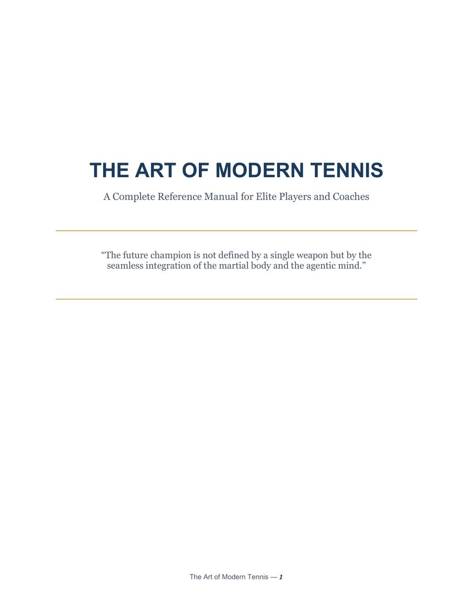
Bản dịch Việt ngữ này chỉ dùng cho mục đích học tập cá nhân, phi thương mại. Bản quyền tác phẩm gốc thuộc về tác giả và nhà xuất bản.
Phần I: Nền Tảng Sinh Cơ Học, Chuỗi Động Học & Momen Xoắn Vùng Lõi
Chuỗi Động Học & Các Nền Tảng Sinh Cơ Học Hiện Đại The Kinetic Chain & Biomechanical Foundations
Nghệ thuật quần vợt hiện đại: Cẩm nang tham khảo đầy đủ dành cho các tay vợt và huấn luyện viên ưu tú "Nhà vô địch tương lai không được xác định bởi một loại vũ khí duy nhất mà bởi sự tích hợp liền mạch giữa cơ thể võ thuật và tâm trí đặc biệt." Cách sử dụng Sổ tay hướng dẫn này [Sẽ được viết - hướng dẫn hai chiều: cách các tay vợt ưu tú sử dụng sổ tay hướng dẫn này và cách các huấn luyện viên sử dụng nó; tổng quan về khuôn khổ Võ-Agent; khái niệm Nhà vô địch Blueprint (Federer × Roddick × Nadal × Monfils × Sinner × Alcaraz)] PHẦN I - NỀN TẢNG Chương 1: Chuỗi động lực và nền tảng cơ sinh học Mỗi cú đánh trong quần vợt - từ cú giao bóng với tốc độ 230 km/h đến cú vô lê tinh tế - đều được cung cấp bởi cùng một hệ thống cơ bản: một chuỗi lực bắt đầu từ mặt đất và kết thúc ở dây. Hiểu chuỗi này không phải là tùy chọn để có hiệu suất ưu tú. Đó là nền tảng để xây dựng mọi kỹ thuật, mọi mô hình và mọi cách phục hồi trong sổ tay này. Chương này giải thích cách thức sức mạnh thực sự được tạo ra trong cơ thể con người, tại sao mô hình huấn luyện truyền thống về "cú giật lớn và xoay hoàn toàn" lại sai về mặt khoa học và hệ thống thần kinh - không phải cơ bắp - đang thực sự hoạt động như thế nào khi bạn đánh một cú đánh đẹp. 1.1 Nguồn gốc sức mạnh: Lực lượng phản ứng mặt đất
Sức mạnh trong quần vợt không đến từ cánh tay. Nó không đến từ cổ tay, vai hay thậm chí là lõi một cách cô lập. Nó đến từ mặt đất. Đây không phải là một phép ẩn dụ. Đó là vật lý. Khi bạn đẩy chân vào mặt sân, sân sẽ đẩy lùi bạn với một lực bằng nhau và ngược chiều. Đây là Định luật thứ ba của Newton, và trong quần vợt, nó là động cơ đằng sau mỗi cú đánh. Lực phản hồi đó - được gọi là Lực phản ứng mặt đất, hay GRF - là nguyên liệu thô mà cơ thể bạn sau đó chuyển đổi thành tốc độ đầu vợt. Để truy cập GRF tối đa, trước tiên bạn phải tải nó. Điều này có nghĩa là bạn phải hạ trọng tâm xuống - uốn cong đầu gối và hông - để nén các nhóm cơ lớn ở phần dưới cơ thể. Hãy nghĩ về nó như cuộn một lò xo. Tải trọng càng sâu và càng nổ thì lực phản hồi của mặt đất càng lớn. Không phải tất cả lực lượng mặt đất đều giống nhau. Hướng của lực rất quan trọng tùy thuộc vào cú đánh. GRF dọc là cú nổ hướng lên mà bạn sử dụng khi giao bóng và trong các cú đánh nền có độ tiếp xúc cao, trong đó việc nhảy vào bóng sẽ tăng thêm vận tốc đáng kể. Thế đứng Pinpoint đã trở thành nền tảng giao bóng chiếm ưu thế một cách chính xác vì nó tạo ra một đế hẹp hơn giúp khuếch đại chiều cao nhảy thẳng đứng, cho phép những tay vợt như Djokovic, Sinner và Alcaraz tiếp xúc với bóng ở độ giãn tối đa với toàn bộ trọng lượng cơ thể của họ hướng lên trên. GRF ngang là lực truyền qua sân trong các cú đánh nền, dịch chuyển khối lượng cơ thể về phía trước để xuyên qua phần lưới của đối phương. Trong một cú thuận tay ở tư thế mở, những tay vợt ưu tú sẽ dồn vào chân bên ngoài gấp hai lần rưỡi trọng lượng cơ thể của họ trước khi đồng thời nổ tung lên trên và về phía trước. Đây không phải là một cảm giác thoải mái lúc đầu. Tuy nhiên, đó là sự khác biệt giữa đánh nặng và đánh mạnh. 1.2 Chuyển giao tuần tự: Nối đất sang dây Khi GRF được tạo ra, cơ thể phải chuyển nó một cách hiệu quả từ chân đến dây vợt. Sự chuyển giao này tuân theo một quy luật sinh học chặt chẽ: sức mạnh luôn chảy từ những phần cơ thể lớn, chậm đến những phần cơ thể nhỏ, nhanh. Chân đầu tiên. Rồi hông. Sau đó, cốt lõi. Rồi vai. Rồi cánh tay. Sau đó vợt. Trình tự này được gọi là chuỗi động học (Kinetic Chain). Cái nhìn sâu sắc quan trọng - điều mà hầu hết các mô hình huấn luyện truyền thống đều bỏ qua - là chuỗi hoạt động không phải thông qua luân chuyển đồng thời mà thông qua sự chậm trễ về thời gian có chủ ý. Mỗi phân đoạn khởi động tiếp theo trước khi hoàn thành chuyển động của chính nó. Hông bắt đầu xoay trước khi vai tải xong. Vai bắt đầu chuyển động về phía trước trước khi động tác xoay hông hoàn tất. Cánh tay bắn trước khi vai dừng lại. Ở mỗi lần chuyển giao, tốc độ sẽ được tích lũy. Mắt xích cuối cùng trong chuỗi - đầu vợt - di chuyển nhanh hơn bất kỳ phân đoạn riêng lẻ nào có thể di chuyển một mình. Đây là lý do tại sao hướng dẫn chung "xoay hông và vai cùng nhau" lại chủ động tiêu diệt sức mạnh. Xoay chúng lại với nhau sẽ thu gọn chuỗi thành một khối cứng nhắc duy nhất. Không có độ trễ thời gian, không có khả năng tăng tốc tuần tự, không có roi vọt. Bạn nhận được lực có giá trị của một phân đoạn thay vì năm phân đoạn gộp lại với nhau. Xem cú thuận tay của Alcaraz ở tốc độ một nửa. Hông của anh ấy đã xoay được ba mươi độ trước khi vai anh ấy bắt đầu xoay. Vào thời điểm vợt chạm tới bóng, nó đã được tăng tốc qua năm lần phóng riêng biệt. Tốc độ 4.500 vòng/phút nhìn từ bên trong là như vậy. 1.3 Hiệu ứng dây cao su Bên trong mỗi cú đánh quần vợt bùng nổ là một dây cao su sinh học - một cơ chế tích hợp cho phép cơ thể tạo ra sức mạnh vượt xa những gì sức mạnh cơ bắp thô có thể tạo ra. Các nhà khoa học gọi đó là Chu kỳ kéo dài-rút ngắn. Đối với mục đích của chúng tôi, nó hoạt động theo ba giai đoạn. Trong giai đoạn đầu tiên - tải - các cơ bị căng do căng thẳng. Đây là động tác vung vợt sau, tư thế chiến lợi phẩm khi giao bóng, động tác cuộn dây bằng hông trước khi thực hiện cú đánh thuận tay. Các cơ bắp không chỉ được thư giãn ở đây. Chúng đang tích trữ năng lượng đàn hồi, giống như một sợi dây cao su bị kéo lại. Trong giai đoạn thứ hai – giai đoạn chuyển tiếp – có một khoảng dừng ngắn và quan trọng giữa điểm cuối của động tác vung vợt về phía sau và điểm bắt đầu của động tác vung gậy về phía trước. Khoảng thời gian mili giây này là nơi hầu hết tay vợt câu lạc bộ rò rỉ một lượng sức mạnh khổng lồ. Bất kỳ sự do dự nào, bất kỳ sự "vấn đề" nào, bất kỳ sự gián đoạn nào ở đây đều khiến năng lượng đàn hồi được lưu trữ tiêu tan dưới dạng nhiệt thay vì truyền vào cú đánh. Những tay vợt ưu tú bảo vệ quá trình chuyển đổi này một cách ám ảnh. Những cú vung vợt về phía sau của họ rất gọn, những bước chuyển tiếp liền mạch, những cú vung về phía trước của họ bùng nổ một cách chính xác vì không có gì lãng phí trong khoảng dừng đó. Trong giai đoạn thứ ba - giải phóng - các cơ co lại một cách bùng nổ, giải phóng đồng thời cả sức mạnh cơ bắp của chính chúng và năng lượng đàn hồi dự trữ. Kết quả là tốc độ đầu vợt vượt quá mức mà sự co cơ thuần túy có thể tạo ra. Đây là lý do tại sao Jan Zelezny có thể ném lao xa 98 mét với trọng lượng cơ thể 80 kg. Đó là lý do tại sao Roddick có thể giao bóng với tốc độ 246 km/h với một chuyển động trông gần như dễ dàng. Dây cao su đã được nạp và nhả hoàn hảo.
Bạn căng cơ càng nhanh trong giai đoạn nạp đạn thì lực bật lại càng bùng nổ. Điều này có thể đào tạo được. Lớp trắc quang, bài tập bóng y học và bài tập phản xạ căng cơ không phải là những bài tập bổ sung điều hòa - chúng là cơ chế chính để phát triển phẩm chất này. 1.4 Chuyển động giống như roi: Vạch trần các cú xoay và xoay Trong hầu hết thế kỷ 20, việc huấn luyện quần vợt được xây dựng trên mô hình vật lý được thiết kế cho robot. Một cánh tay robot có ba khớp cần một vòng lặp lớn để tạo ra năng lượng. Nó cần phải nâng đầu vợt lên cao để tạo ra thế năng trước khi vung vợt xuống. Nếu bạn có một cánh tay máy móc cứng nhắc, cách tiếp cận đó có ý nghĩa về mặt toán học. Cánh tay con người có chín bậc tự do - chỉ ở vai, khuỷu tay và cổ tay, không tính các ngón tay. Điều này có nghĩa là cơ thể con người có vô số đường đi có thể để đánh bất kỳ quả bóng nào. Với chín bậc tự do và hàng trăm nhóm cơ đóng góp lực, mô hình vòng tròn đơn giản không mô tả những gì những tay vợt ưu tú thực sự làm. Nó mô tả sự hiểu lầm cơ bản về cơ chế sinh học của con người được ngụy trang dưới dạng hướng dẫn huấn luyện. Vấn đề thứ hai với các cú giật và vung vợt là ở bản thân vợt. Nâng đầu vợt cao hơn cơ thể chỉ hữu ích nếu vợt đủ nặng để thế năng của nó đóng góp đáng kể vào cú đánh. Với trọng lượng 400 gram, cây vợt hiện đại không đủ nặng để giải quyết vấn đề này. Nó cần phải nặng khoảng bốn kg để thế năng đường quay là đáng kể. Trong khi đó, những gì mà động tác backswing vòng cao thực sự tạo ra là sự phức tạp về thời gian, những chuyển động không cần thiết và thêm một phần nghìn giây thời gian chuẩn bị mà những tay vợt ưu tú đơn giản là không có. Hãy xem Federer. Xem Sampras. Hãy xem cú trái tay của Sinner. Không ai trong số họ sử dụng các vòng lặp lớn để giành chiến thắng. Sự chuẩn bị của họ rất nhỏ gọn, chính xác và có tải — không bị lắc lư. Vợt xuất hiện ở vị trí như thể nó hiện thực hóa ở đó. Đây không phải là chủ nghĩa tối giản về mặt thẩm mỹ. Đó là cơ chế sinh học tối ưu. Bạn sử dụng càng ít chuyển động để đến vị trí phóng thì bạn càng có thể đưa lực và độ chính xác vào cú giao bóng nhiều hơn. Chuyển động hiệu quả duy nhất trong một cú đánh quần vợt là chuyển động giống như cây roi: một sự chuẩn bị nhỏ gọn để tải chu trình kéo giãn-rút ngắn, sau đó là chuyển động chuỗi động tuần tự từ mặt đất đến dây. Mọi thứ khác đều là rạp hát. 1.5 Kiểm soát thần kinh vận động: Tại sao "Trí nhớ cơ bắp" là chuyện hoang đường
"Trí nhớ cơ bắp" có lẽ là quan niệm sai lầm phổ biến nhất trong tất cả các hoạt động huấn luyện thể thao. Cơ bắp không có trí nhớ. Chúng là những máy tạo lực - những thứ cực kỳ mạnh mẽ - nhưng chúng không chứa thông tin về cách di chuyển. Họ đáp ứng các mệnh lệnh từ hệ thống thần kinh. Họ thi hành. Họ không nhớ. Tất cả kỹ năng vận động, mọi kiểu chuyển động tinh tế mà bạn từng rèn luyện đều tồn tại trong hệ thống thần kinh - đặc biệt là trong các đường dẫn vận động của não, tiểu não và tủy sống. Khi bạn "tạo rãnh thuận tay", bạn không rèn luyện được cơ cẳng tay của mình. Bạn đang xây dựng và củng cố kiến trúc thần kinh: các đường dẫn tốc độ cao, chính xác sẽ kích hoạt theo trình tự để tạo ra chuyển động. Làm hỏng các đường dẫn truyền thần kinh đó và không có lượng cơ nguyên vẹn nào có thể tái tạo lại cơn cú đánh. Các cơ bắp bị câm. Bộ não là tất cả. Sự khác biệt này có ý nghĩa sâu sắc đối với cách bạn tập luyện và cách bạn nghĩ về hiệu suất. Chuyển động nhanh nhất trong quần vợt không đi qua suy nghĩ có ý thức. Nó di chuyển qua phản xạ căng - một vòng dây thần kinh không tự nguyện đi qua não hoàn toàn và truyền qua tủy sống. Khi một cú giao bóng đạt vận tốc 200 km/h và bạn thực hiện một cú trả bóng rõ ràng, tâm trí tỉnh táo của bạn đã không thực hiện cú đánh đó. Nó đã xuất hiện trước khi vỏ não của bạn có thời gian xử lý quyết định. Phản xạ căng - được kích hoạt bởi sự tải nhanh của các cơ trong bước tách và lượt đơn vị - tạo ra một cơn co thắt bùng nổ nhanh hơn và mạnh hơn nhiều lần so với bất kỳ mệnh lệnh tự nguyện nào có thể tạo ra. Đây là lý do tại sao những tay vợt ưu tú không nghĩ đến điểm giữa cú đánh của họ. Không phải vì họ có năng khiếu bẩm sinh và không cần phải suy nghĩ, mà bởi vì việc suy nghĩ với tốc độ đó sẽ cản trở hoạt động thực thi của thần kinh. Mục tiêu của tất cả các khóa đào tạo kỹ thuật là xây dựng các đường dẫn thần kinh mạnh mẽ, tự động đến mức tâm trí có ý thức có thể được giải phóng để quản lý trận đấu - chiến thuật, động lượng, kiểu mẫu - trong khi cơ thể thực hiện theo phản xạ. Hãy rèn luyện cơ thể thật kỹ lưỡng để đầu óc có thể chơi cờ trong khi tay chân có thể chơi tennis. Đó là mục tiêu. 1.6 Tiến hóa cơ sinh học: 2000–2026 Tính năng 2000–2010 2020–2026 Nguồn điện chính Động lượng tuyến tính — bước vào quả bóng Động lượng góc — nổ quay Chân truyền động Tập trung vào ổn định Dọc và bùng nổ
Tính năng 2000–2010 2020–2026 Độ căng của cánh tay được kiểm soát và hướng dẫn Roi siêu thư giãn Kinetic Chain Sequential — một phân đoạn tại một thời điểm Chồng chéo — các phân đoạn hợp chất ở tốc độ cao hơn Kiểu vung lùi Tiêu chuẩn vòng lặp vừa phải Chuẩn bị vòng lặp nhỏ gọn, súng cao su Điểm tiếp xúc Cao đến thắt lưng, cao ở phía trước Phục hồi chéo ngang vai và xáo trộn bên Bước trọng lực và phanh nổ Chuyển động bề mặt Đất sét khác biệt so với cơ học cứng Trượt trên tất cả bề mặt 1.7 Ý nghĩa lâm sàng: Chuỗi bị đứt Mỗi chấn thương quần vợt đáng kể đều là một thông điệp về sự thất bại ở đâu đó trong chuỗi động học (Kinetic Chain). Cơ thể luôn cố gắng hoàn thành cú đánh. Khi một phân đoạn không thực hiện được công việc của mình, một phân đoạn khác sẽ bù đắp - và sự bù đắp được duy trì qua hàng nghìn lần lặp lại sẽ trở thành tổn thương. Khuỷu tay quần vợt hầu như không bao giờ là vấn đề bắt đầu từ khuỷu tay. Nó là sản phẩm của một cánh tay đang cố gắng tạo ra sức mạnh mà lẽ ra phải bắt nguồn từ chân và lõi. Khi lực phản ứng mặt đất không được khai thác một cách hiệu quả, khi không có sự tách biệt giữa hông và vai, cánh tay sẽ cố gắng bù đắp phần thiếu hụt thông qua nỗ lực của cổ tay và cẳng tay. Các gân xung quanh mỏm lồi cầu ngoài không được thiết kế để chịu tải trọng đó. Chấn thương chóp xoay cũng tuân theo logic tương tự ở cấp độ cao hơn. Khi lõi không thể hấp thụ và truyền lực - do "rò rỉ xô" (nghiêng xương chậu khi tiếp xúc) hoặc "lỗi lắc lư" (chuyển động ngang thay vì xoay) - vai sẽ nhận được lực lẽ ra phải được quản lý ở thân. Ngay cả một tình trạng quá tải nhỏ mãn tính của vòng quay, lặp đi lặp lại hàng ngày trong suốt mùa giải thi đấu, cũng tạo ra những giọt nước mắt chấm dứt sự nghiệp. Do đó, phương pháp chẩn đoán cho bất kỳ chấn thương quần vợt nào ở phần trên cơ thể luôn bắt đầu từ mặt đất và di chuyển lên trên. Trước khi điều trị khuỷu tay, hãy kiểm tra hông. Trước khi điều trị vai, hãy kiểm tra phần lõi. Chuỗi là công cụ chẩn đoán.
Chuỗi động năng của bạn đang tạo ra năng lượng hoặc cướp đi năng lượng. Không có sự trung lập. Ở cấp độ của bạn, mỗi điểm phần trăm của hiệu suất dây chuyền đều quan trọng — không chỉ đối với hiệu suất mà còn đối với tuổi thọ trong một mùa giải dài. Tập trung chuẩn bị thể chất cho hai điểm có đòn bẩy cao nhất trong chuỗi: tải trọng chân bùng nổ (chất lượng GRF) và phân tách hông-vai (độ sâu X-Factor). Hai biến số này xác định mức trần cho mỗi cú đánh mà bạn sở hữu. Nếu cú giao bóng của bạn ổn định hoặc cú thuận tay của bạn mất tốc độ dưới áp lực, hãy bắt đầu từ đây trước khi xem xét kỹ thuật. Trong cạnh tranh, hãy tin vào chuỗi. Con đường thần kinh của bạn đã được xây dựng qua hàng ngàn giờ đào tạo. Thời điểm bạn cố gắng hướng dẫn một cách có ý thức điểm giữa của cú đánh, bạn đang vượt qua chính kiến trúc giúp cho việc thực hiện ưu tú trở nên khả thi. Công việc của bạn trong trận đấu là quản lý ván cờ - mô hình, áp lực, động lượng. Hãy để cơ thể làm những gì bạn đã huấn luyện nó làm. Một cách tự kiểm tra cụ thể: sau bất kỳ buổi tập nào mà bạn cảm thấy mình đang bị va chạm vào tay, hãy tự hỏi bản thân xem dây xích bị đứt ở đâu. Bước phân chia có muộn không? Có phải thiết bị đã bị lỗi? Chân bên ngoài có chịu tải trước khi cú vung vợt không? Theo dõi nó trở lại mặt đất. Khi huấn luyện tay vợt của bạn theo chuỗi động năng, hãy chống lại bản năng giải quyết lỗi tại thời điểm mắc lỗi. Một tay vợt tát bằng cổ tay gần như chắc chắn có vấn đề về chân hoặc lõi chứ không phải vấn đề về cổ tay. Quá trình chẩn đoán đầu tiên của bạn đối với bất kỳ lỗi kỹ thuật nào phải luôn bắt đầu ở chân và di chuyển lên trên. Gợi ý huấn luyện duy nhất hiệu quả nhất cho việc sắp xếp chuỗi là: "Luôn luôn tập hông trước". Nếu tay vợt của bạn đang xoay mọi thứ lại với nhau, hãy sử dụng bài tập súng cao su bóng thuốc - tay vợt giữ một quả bóng thuốc ngang ngực, xoay hông càng xa càng tốt, tạm dừng, sau đó cho phép vai và cánh tay làm theo. Cảm giác vật lý về thời gian trễ không thể diễn tả được; nó phải được cảm nhận. Đối với chu trình kéo giãn-rút ngắn, bài tập bật lại tường là công cụ giảng dạy đáng tin cậy nhất của bạn. Tay vợt đứng cách tường hai mét, ném một quả bóng thuốc vào tường ở độ cao ngang thắt lưng, sau đó bắt và bật lại ngay lập tức. Sự phục hồi không ngừng nghỉ buộc cơ thể phải sử dụng năng lượng đàn hồi thay vì thiết lập lại cơ bắp. Khi tay vợt đã có cảm giác, hãy chuyển nó sang chuẩn bị thuận tay. Khi làm việc với tay vợt cấp câu lạc bộ về nội dung của chương này, hãy chọn lọc thuật ngữ. Lực phản lực mặt đất, chuỗi động năng và chu trình rút ngắn độ giãn là những khái niệm đáng được đặt tên một lần và sau đó được dịch sang ngôn ngữ đơn giản ngay lập tức: "mặt đất là động cơ của bạn", "từ lớn đến nhỏ", "dây cao su". Gắn các thuật ngữ kỹ thuật vào cảm giác vật lý chứ không phải định nghĩa.
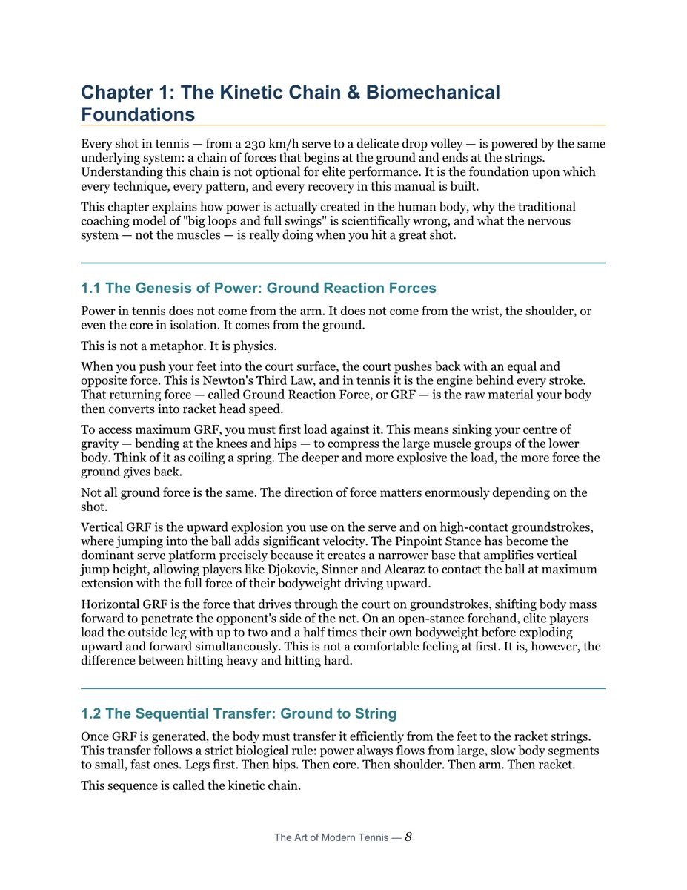
Hình 1: Cơ sở sinh cơ học & Chuỗi động học quần vợt hiện đại — Dòng truyền tải động lượng liên tục từ mặt đất qua các mắt xích đến mặt vợt.
Figure 1: Kinetic Chain Foundations — Proximal-to-distal momentum summation from ground reaction force to racket-ball impact.
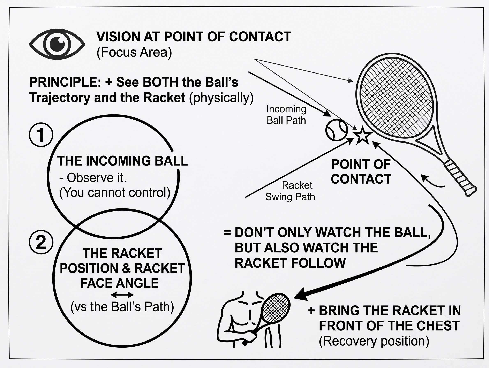
Hình 1.2: Cấu trúc cân bằng lực căng toàn vẹn (Tensegrity) trong cơ thể — Sự tương tác giữa cơ mạc và khung xương tạo nên sự vững chắc động học.
Figure 1.2: Tensegrity Biomechanics in Tennis — Interplay of myofascial tension and skeletal compression for dynamic structural stability.
Vùng Lõi, Momen Xoắn & Năng Lượng Xoay Thân Mình The Core, Torque & Rotational Power
Đối với những tay vợt ưu tú, cuộc trò chuyện sẽ khác. Họ có thể và nên hiểu bức tranh cơ sinh học đầy đủ. Vai trò của bạn là giúp họ trở thành bác sĩ chẩn đoán của chính họ - có thể truy tìm nguồn gốc của vấn đề trong trận đấu trong chuỗi mà không cần đợi đến buổi huấn luyện tiếp theo. : Lõi, Mô-men xoắn & Công suất quay Nếu Chương 1 xác định rằng công suất bắt đầu từ mặt đất thì Chương 2 sẽ nói về điều gì sẽ xảy ra với công suất đó khi nó rời khỏi chân. Cốt lõi không phải là chất ổn định. Nó không phải là một cái nẹp. Trong trận đấu năm 2026, nó là động cơ chính của lực quay - cơ chế chuyển đổi động tác bằng chân thành những cú đánh bùng nổ, tốc độ RPM cao, đặc trưng của môn quần vợt ưu tú hiện đại. Hiểu cách lõi tạo ra, truyền và dừng lực quay là sự khác biệt giữa một tay vợt thỉnh thoảng đánh mạnh và một người đánh mạnh liên tục, dưới áp lực, trong ba hiệp. 2.1 Yếu tố X: Tách vai-Hông Nền tảng của mọi lực quay trong quần vợt là một mối quan hệ hình học đơn giản: trong khi vung vợt ra sau, vai xoay xa hơn hông. Khoảng cách góc giữa chúng - sự khác biệt giữa khoảng cách mà vai đã xoay và khoảng cách của hông đã xoay - được gọi là X-Factor. Khoảng cách này không thụ động. Khi bạn cuộn vai ra ngoài vị trí của hông, bạn sẽ kéo căng các cơ xiên và các sợi quay sâu của lõi. Những cơ đó chống lại sự tách biệt. Để chống lại nó, chúng tích trữ năng lượng đàn hồi - giống hệt như hiệu ứng dây cao su được mô tả ở Chương 1, nhưng bây giờ áp dụng lên thân mình chứ không phải cánh tay. X-Factor càng lớn thì năng lượng đàn hồi được lưu trữ càng nhiều. Năng lượng đàn hồi được tích trữ càng nhiều thì khả năng tháo cuộn càng dễ nổ. Đây là nền tảng cơ sinh học của mọi quả bóng nặng mà Rafael Nadal từng đánh từ đường cuối sân. Ở thời kỳ đỉnh cao, pha tách vai-hông của Nadal là một trong những pha tách xa khắc nghiệt nhất từng được ghi nhận trong chuyến lưu diễn - thân mình cuộn tròn dưới sức căng đến mức việc thả lỏng sau đó đã tạo ra tốc độ xoáy lên mà trận đấu chưa từng thấy trước đây. Justine Henin là hình mẫu điển hình của phụ nữ. Mặc dù khung hình tương đối nhỏ của cô ấy, X-Factor của cô ấy khi vung vợt sau đã tạo ra một mô-men xoắn quá mạnh đến nỗi trái tay bằng một tay của cô ấy tạo ra tốc độ và độ xoáy mà những tay vợt to hơn, khỏe hơn không thể sánh được. X-Factor không phải là biến cường độ. Nó là một biến hình học. Bất kỳ tay vợt nào có thể đạt được sự tách biệt vai-hông sâu và duy trì nó trong suốt giai đoạn tải đều có thể tiếp cận được sức mạnh của nó, bất kể kích thước.
Đối với huấn luyện viên: X-Factor được nhìn thấy rõ ràng nhất từ góc nhìn từ trên xuống. Đứng trên một cái thang hoặc xem lại video từ trên cao, bạn sẽ thấy hai vai hoàn thành một động tác xoay vượt xa đường hông ở đỉnh điểm của động tác backswing. Nếu hông và vai có vẻ song song - hoặc gần như vậy - Yếu tố X đã bị mất và tay vợt chỉ đánh hiệu quả bằng cánh tay. 2.2 Thời gian tách biệt: Lõi Agentic năm 2026 Mô hình huấn luyện đầu những năm 2000 coi X-Factor như một phép đo tĩnh - khoảng cách giữa hông và vai ở đầu động tác backswing. Cơ chế sinh học hiện đại đã tiết lộ một điều phức tạp hơn và mạnh mẽ hơn: vấn đề không chỉ là kích thước của khoảng trống mà còn là khi nào khoảng trống được tạo ra và nó được giải phóng như thế nào. Những tay vợt ưu tú của những năm 2020 - Sinner, Alcaraz và thế hệ của họ - không chỉ đơn giản là cuộn vai qua hông. Họ bắt đầu xoay hông trước khi cuộn dây vai hoàn thành. Hông bắt đầu hướng về phía trước trong khi vai vẫn quay về phía sau. Điều này tạo ra một "bộ kích hoạt bị trì hoãn" giúp kéo căng các cơ xiên và cơ lõi sâu đến giới hạn tuyệt đối của chúng - vượt xa những gì một cuộn dây tĩnh có thể đạt được - bởi vì hai đầu của hệ thống đang chuyển động theo hướng ngược nhau cùng một lúc. Hãy quan sát cú thuận tay của Alcaraz trong chuyển động chậm và xác định thời điểm chính xác hông của anh ấy bắt đầu xoay về phía lưới. Vai trước của anh ấy vẫn đang di chuyển ra khỏi lưới. Trong một phần giây, cơ thể anh ta bị kéo ra xa nhau. Khoảnh khắc tách biệt tối đa đó - hông đẩy về phía trước, vai vẫn dồn về phía sau - là nơi ra đời những cú thuận tay bùng nổ nhất trong lịch sử trò chơi. Đây là điều mà huấn luyện hiện đại gọi là Thời gian tách biệt và đó là đặc điểm xác định của cốt lõi Đặc vụ 2026. Cơ thể không phải là một đơn vị quay duy nhất. Đó là một chuỗi các đơn vị, mỗi đơn vị bắn trước khi đơn vị trước hoàn thành công việc của mình, tổng hợp mô-men xoắn qua dây chuyền. Cốt lõi là cây cầu mà qua đó sự kết hợp này xảy ra và Thời gian tách biệt là cơ chế tối đa hóa những gì đi qua cây cầu đó. Một hệ quả thực tế của sự hiểu biết này: gợi ý huấn luyện cũ "hoàn thành việc xoay vai trước khi vung vợt" không chỉ lỗi thời - nó còn tích cực ngăn cản cơ chế đánh mạnh mẽ nhất hiện có cho tay vợt hiện đại. Thời gian tách yêu cầu hông phải bắn trước khi vai thực hiện tải. Việc dạy tay vợt đợi một lượt hoàn thành sẽ phá hủy độ trễ tạo ra sức mạnh ưu tú. 2.3 Độ cứng khi tiếp xúc: Truyền lực đẳng cự
Một lõi là chất lỏng qua giai đoạn quay nhưng không cứng lại khi va chạm thì giống như một vòi chữa cháy có lỗ ở giữa. Áp lực tăng lên, dây xích tăng tốc, sức mạnh được tạo ra - và sau đó, vào thời điểm quan trọng khi nó cần chuyển sang quả bóng, thay vào đó, nó sẽ tiêu tan vào thân. Mô hình chức năng cốt lõi năm 2026 yêu cầu hai trạng thái vật lý riêng biệt trong cùng một hành trình. Trong giai đoạn xoay - từ việc nạp X-Factor đến việc bắn vào hông - lõi phải dẻo dai và năng động, có khả năng di chuyển nhanh trong phạm vi chuyển động lớn. Nhưng vào đúng thời điểm vợt tiếp xúc với bóng, lõi vợt phải khóa ở trạng thái căng đẳng cự cao: một sự cứng lại hoàn toàn, đột ngột tạo ra một nền cứng mà từ đó cánh tay có thể truyền năng lượng trực tiếp vào quả bóng. Sự cứng lại này không phải là sự co cơ theo nghĩa thông thường. Đó là một động tác giằng toàn thân - chất lượng tương tự như một vận động viên cử tạ sử dụng tại thời điểm tải tối đa hoặc một võ sĩ sử dụng tại thời điểm ra đòn. Trong quần vợt, nó chỉ kéo dài một phần nghìn giây. Nhưng những mili giây đó là sự khác biệt giữa một quả bóng xuyên qua sân và một quả bóng lơ lửng. Chức năng thứ hai của việc làm cứng lõi cũng quan trọng không kém và ít được thảo luận hơn: phanh. Sau khi tiếp xúc, động lượng quay của cơ thể phải được hấp thụ và dừng lại. Cốt lõi là cơ cấu phanh chính. Ở những tay vợt mà cơ thể không thể thực hiện việc giảm tốc này một cách hiệu quả - do yếu hoặc vận động kém - cơ thể tiếp tục xoay qua điểm tiếp xúc, gây áp lực rất lớn lên lưng dưới và bên không thuận của xương chậu. Đây là dạng chấn thương “hụt phanh” xuất hiện nhiều lần ở các tay vợt chuyên nghiệp mắc chứng đau thắt lưng mãn tính. Lõi tạo ra năng lượng một cách chính xác nhưng không thể dừng nó một cách sạch sẽ. Trải qua hàng nghìn lần lặp lại, lực quay còn lại được hấp thụ bởi các cấu trúc — dây chằng cột sống, khớp mặt, khớp cùng chậu — vốn không bao giờ được thiết kế để chịu lực đó. Giải pháp không phải là nghỉ ngơi. Nó đang huấn luyện phần lõi để giảm tốc một cách bùng nổ như khi nó tăng tốc. 2.4 Số liệu xoay: 2000–2026 Số liệu 2000–2010 2020–2026 Xoay ngực 40°–50° 55°–65° Tách hông-vai Trung bình — hông và vai quay gần nhau Cực — hông căng ra trước khi vai kết thúc tải Tách Thời gian Cuộn dây tĩnh ở đầu của backswing Động — tải theo hướng ngược lại đồng thời
Số liệu 2000–2010 2020–2026 Chức năng cốt lõi khi ổn định tiếp xúc — giữ vị trí Phát điện và phanh nổ Trạng thái cốt lõi trong quá trình xoay Cố định liên tục Chất lỏng quay, khóa khi va chạm Mô hình chấn thương lưng dưới Cấp tính — quá tải đột ngột Mãn tính — hỏng phanh quá mức tích lũy 2.5 Rò rỉ lõi: Chẩn đoán mất điện Khi tay vợt không tạo ra sức mạnh mà khả năng thể chất của họ cho phép — hoặc đang tái phát khó chịu ở lưng dưới mà không có nguyên nhân cấp tính rõ ràng — cốt lõi hầu như luôn là nơi cuộc điều tra bắt đầu. Có bốn kiểu thất bại chính. Rò rỉ xô xảy ra khi xương chậu nghiêng trong quá trình xoay về phía trước. Thay vì quay quanh một trục thẳng đứng ổn định, hông hạ xuống hoặc nghiêng, khiến đáy của chuỗi động trở nên không ổn định. Thay vào đó, năng lượng lẽ ra sẽ truyền lên qua chuỗi sẽ đổ ra khỏi đáy hệ thống. Những tay vợt mắc lỗi này thường có cú vung phần thân trên mạnh mẽ, đúng kỹ thuật nhưng bóng phẳng, chậm nhịp một cách khó hiểu - bởi vì lực do chân tạo ra không bao giờ chạm tới dây. Dấu hiệu trực quan là việc hạ thấp hông phía trước tại thời điểm vung về phía trước. Lỗi Sway là chuyển động ngang của toàn bộ cơ thể trong cú đánh thay vì xoay quanh một trục thẳng đứng cố định. Thay vì hông duỗi thẳng và vai xoay qua, toàn bộ thân sẽ di chuyển sang một bên. Hiệu quả là tay vợt "đẩy" quả bóng chứ không phải "quất" qua nó. Lỗi lắc lư thường gặp ở những tay vợt đã học cách bước vào bóng với động lượng tuyến tính trước khi họ phát triển cơ chế quay - một di sản của huấn luyện thời cổ điển vẫn chưa bị xóa hoàn toàn khỏi mô hình vận động của họ. Lỗi phanh đã được mô tả ở trên nhưng xứng đáng được đưa vào danh mục chẩn đoán riêng. Dấu hiệu trực quan là phần tiếp theo tiếp tục vượt xa vị trí kết thúc tự nhiên - phần thân dường như "quay ra" sau khi tiếp xúc thay vì giảm tốc rõ ràng. Tay vợt mắc lỗi này thường mô tả cảm giác "mất kiểm soát" khi kết thúc cú vung hoặc cần phải thực hiện thêm các bước để lấy lại thăng bằng sau một cú đánh mạnh. Ngoài những tác động về thương tích, việc phanh sai còn phải trả giá bằng độ chính xác: một lõi không thể dừng chuyển động quay của chính nó có xu hướng kéo các cú đánh khắp cơ thể.
Ngắt kết nối là lỗi cơ bản nhất - mất hoàn toàn sự tách biệt giữa hông và vai. Hông và vai xoay như một khối duy nhất, loại bỏ hoàn toàn X-Factor. Đây là lỗi cốt lõi phổ biến nhất ở tay vợt gậy và tốn nhiều năng lượng nhất, vì nếu không có sự tách biệt thì sẽ không có tải đàn hồi ở các vật xiên, không có bộ kích hoạt bị trễ và không có sự kết hợp của mô-men xoắn qua xích. Tay vợt chỉ được đánh bằng cánh tay và phần thân trên. Sửa lỗi này là biện pháp can thiệp kỹ thuật có đòn bẩy cao nhất dành cho hầu hết tay vợt giải trí. 2.6 Bài tập lõi Súng cao su Med-Ball nhắm trực tiếp vào việc tách vai-hông. Tay vợt đứng dựa vào tường, cầm một quả bóng thuốc ngang ngực. Không di chuyển bàn chân, họ xoay hông càng xa về phía tường càng tốt, dừng lại một giây, sau đó để vai và cánh tay đi theo, thả bóng vào tường. Khoảng dừng một giây buộc tay vợt cảm nhận được sự tách biệt - các cơ xiên bị kéo căng, phần thân bị căng - trước khi thả ra. Bắt đầu với quả bóng nặng 3 kg và tập trung hoàn toàn vào chất lượng của độ trễ trước khi chuyển sang tải nặng hơn hoặc nhịp độ nhanh hơn. Các chốt chống xoay xây dựng độ bền lõi đẳng cự cần thiết để tăng độ cứng khi tiếp xúc. Sử dụng máy cáp hoặc dây kháng lực được neo ở độ cao ngang hông, tay vợt giữ tay cầm bằng cả hai tay đưa ra phía trước cơ thể và chống lại lực kéo quay trong 30–45 giây mỗi bên. Bài tập này tưởng chừng đơn giản nhưng lại có vẻ khó khăn. Phẩm chất cần phát triển không chỉ là khả năng giữ vị trí mà còn là khả năng đạt được vị trí đó ngay lập tức từ trạng thái thoải mái - bắt chước quá trình chuyển đổi một phần nghìn giây từ chuyển động quay của chất lỏng sang độ cứng bị khóa khi tiếp xúc. Ném tường xoay rèn luyện cả độ trễ X-Factor và khả năng giải phóng chất nổ khi có tải. Tay vợt đứng cách một bức tường vững chắc 1,5 mét, nghiêng người và ném một quả bóng thuốc vào tường bằng một chuỗi xoay đầy đủ - đầu tiên là hông, sau đó là vai, sau đó là cánh tay. Lực bật lại bị bắt và chuyển động đảo ngược ngay lập tức ở lần ném tiếp theo. Trọng tâm là trình tự hông-vai-vai rõ ràng trong cú ném chứ không phải tốc độ hay lực của bóng. Hai bộ 12 lần lặp lại mỗi bên. Pallof Press phát triển khả năng phanh và giảm tốc lõi. Với một dây kháng lực hoặc dây cáp được neo ngang ngực, tay vợt ấn cả hai tay ra khỏi cơ thể trong tư thế duỗi có kiểm soát, giữ trong hai giây rồi quay lại. Bài tập hoạt động thông qua toàn bộ phạm vi chống quay mà chức năng phanh lõi yêu cầu. Tiến bộ từ số lần lặp lại chậm, có kiểm soát đến nhịp độ nhanh hơn, thể thao hơn khi khả năng giảm tốc của tay vợt được cải thiện. Ba bộ 10 cái mỗi bên.
Ở cấp độ của bạn, X-Factor đã có sẵn trong trò chơi của bạn. Câu hỏi đặt ra là liệu bạn có đang tối đa hóa Thời gian tách hay không - cụ thể là liệu hông của bạn có bắt đầu xoay về phía trước trước khi cuộn vai của bạn hoàn tất hay không. Hầu hết tay vợt, ngay cả ở cấp độ ưu tú, đều đánh mất phẩm chất này dưới áp lực. Khi tỷ số sít sao, khi cảm giác mệt mỏi ập đến, bản năng tự nhiên là "hướng dẫn" cú đánh - và hướng dẫn hầu như luôn có nghĩa là hông và vai bắt đầu xoay cùng nhau, giảm độ trễ tạo ra những quả bóng nặng nhất của bạn. Việc tự chẩn đoán của bạn về Thời gian tách rất đơn giản: trong các buổi luyện tập, hãy theo dõi những quả bóng nặng nhất và những quả bóng phẳng nhất của bạn. Những cú đánh bằng phẳng hầu như luôn đến từ những pha giao bóng mà bạn vội vàng, mất thăng bằng hoặc cảm thấy áp lực. Xem lại video về những điểm đó và xem xét cụ thể xem hông của bạn đã di chuyển về phía trước trước khi lượt vai của bạn đạt đến đỉnh hay chưa. Nếu không, bạn đang gặp phải tình trạng sụp đổ Thời gian Phân tách dưới áp lực - và giải pháp là tập luyện lặp lại ở tốc độ được kiểm soát cho đến khi kiểu vận động trở thành phản xạ thay vì cố ý. Đối với phanh lõi: nếu bạn gặp phải bất kỳ tình trạng cứng lưng dưới nào sau nhiều tuần luyện tập nặng, thì kiểu phanh không thành công là điều đầu tiên cần kiểm tra trước khi giả định việc sử dụng quá mức hoặc các nguyên nhân liên quan đến bề mặt. Thêm công việc nhấn Pallof và giữ chống xoay vào thói quen chuẩn bị thường xuyên của bạn. Khi huấn luyện tay vợt của bạn về sức xoay, lỗi phổ biến nhất là tập trung vào vai. Vai không phải là động lực chính trong hệ thống này - hông mới là động lực. Hầu hết mọi biện pháp can thiệp huấn luyện cốt lõi mà bạn thực hiện đều nên bắt đầu từ hông: chúng ở đâu, khi nào chúng bắn và liệu chúng có hoàn toàn sạch trước vùng tiếp xúc hay không. Gợi ý duy nhất hiệu quả nhất cho Thời gian Tách biệt là bằng hành động chứ không phải bằng lời nói. Đứng phía sau tay vợt của bạn khi họ vung vợt và đặt nhẹ một tay lên hông trước của họ. Hướng dẫn họ cảm nhận hông của họ di chuyển về phía trước dưới bàn tay của bạn trước khi họ bắt đầu vung gậy về phía trước. Phản hồi xúc giác làm cho việc xác định thời gian trở nên cụ thể theo cách mà không một mô tả bằng lời nào có thể đạt được. Đối với những tay vợt mắc lỗi Sway Fault, cách điều chỉnh đáng tin cậy nhất là đặt một hình nón hoặc quả bóng ngay sau hông sau của họ tại địa chỉ. Nếu chúng lắc lư, chúng sẽ tiếp xúc với hình nón. Phản hồi bên ngoài giúp loại bỏ lỗi nhanh hơn bất kỳ lượng hướng dẫn bằng lời nào về việc quay quanh một trục thẳng đứng. Khi giới thiệu khái niệm phanh cho tay vợt, hãy sử dụng ví dụ tương tự về một chiếc ô tô: một chiếc ô tô có thể tăng tốc nhưng không thể phanh không phải là ô tô nhanh - nó là một ô tô nguy hiểm. Những tay vợt mạnh nhất trong trò chơi là những người có cốt lõi có thể vừa phát nổ vừa dừng lại với tốc độ ngang nhau. Chương trình chống xoay và phanh hoạt động trong mọi buổi tập sức mạnh, không chỉ trong quá trình phục hồi chấn thương.
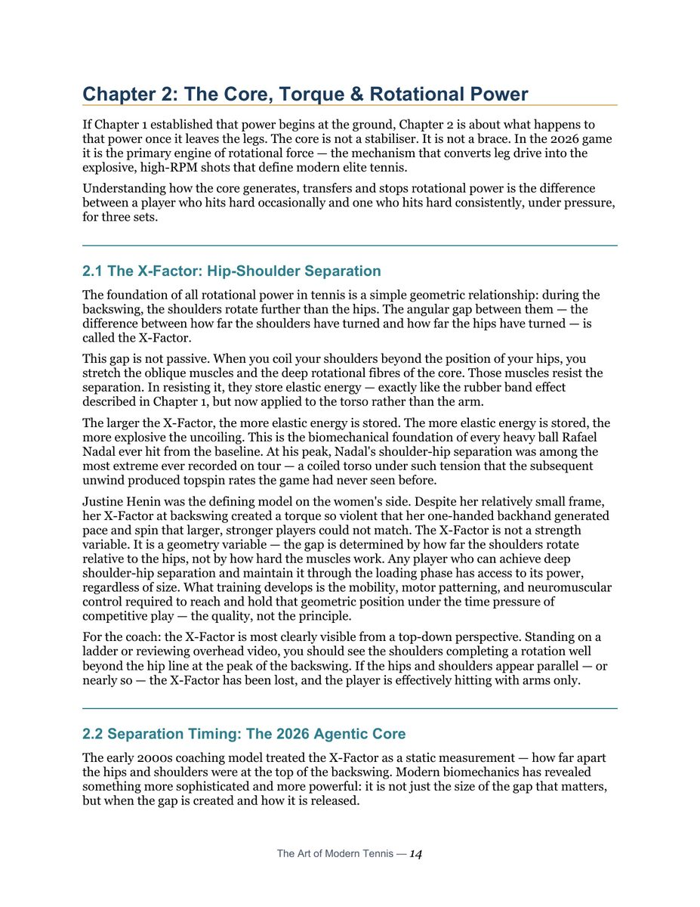
Hình 2: Momen xoắn vùng lõi (Core Torque) & Sự phân tách hông - vai — Tích lũy thế năng xoắn đàn hồi giải phóng vận tốc vung cực đại.
Figure 2: Core Torque & Hip-Shoulder Separation — Deliberate rotational lag creating explosive elastic energy storage.
Di Chuyển & Bộ Chân Hiện Đại: Khai Thác Phản Lực Mặt Đất Movement & Footwork: Ground Reaction Force Dynamics
: Di chuyển & Động tác bằng chân Sức mạnh không có vị trí sẽ bị lãng phí. Các lực quay được mô tả trong Chương 1 và 2 - phản lực mặt đất, Hệ số X, độ cứng khi tiếp xúc - chỉ có thể được triển khai nếu tay vợt tiếp cận bóng một cách cân bằng và có thời gian để chịu lực. Chuyển động không phải là phần quyến rũ của quần vợt. Tuy nhiên, đó là phần khiến mọi thứ khác có thể thực hiện được. Trong trò chơi năm 2026, chuyển động đã phát triển từ việc chạy đơn giản thành một hệ thống quản lý quán tính và giảm tốc theo chiều phức tạp. Tay vợt không còn chỉ tiếp cận bóng - họ đang quản lý động lượng của cơ thể trong thời gian thực, chuyển đổi tốc độ ngang thành lực xoay và khôi phục vị trí trước khi đối thủ kịp quyết định vị trí chơi tiếp theo. Chương này chia nhỏ hệ thống đó thành các thành phần của nó. 3.1 Nền tảng của sự cân bằng: Tại sao động tác bằng chân lại đi trước mọi thứ Trước khi thảo luận về các kiểu chuyển động cụ thể, cần phải thiết lập nguyên tắc làm nền tảng cho tất cả chúng. Một cú đánh tuyệt vời không bắt đầu bằng động tác vung vợt sau. Nó không bắt đầu bằng bước tách. Nó bắt đầu bằng việc bàn chân tìm đúng vị trí so với quả bóng - và từ vị trí đó, tạo ra một nền tảng thẳng đứng, ổn định để chuỗi động học (Kinetic Chain) có thể bắn ra. Bàn chân giao bóng hai chức năng cùng một lúc. Chúng là nhà máy điện — giao diện với mặt đất mà qua đó tất cả GRF được tạo ra, như đã trình bày ở Chương 1. Và chúng là cái neo — nền tảng cấu trúc giữ cho toàn bộ chuỗi động học (Kinetic Chain) thẳng hàng từ mặt đất đến dây. Khi đôi chân sai thì không còn gì có thể đúng nữa. Một cú xoay vai hoàn hảo từ một vị trí xấu sẽ tạo ra một cú đánh tồi. Một đế hoàn hảo với một cú xoay không hoàn hảo vẫn mang lại cho tay vợt điều gì đó để làm việc. Kết quả không thể thương lượng của động tác chân đúng là tư thế thẳng đứng tại thời điểm tiếp xúc. Lưng thẳng, đầu gối cong, trọng lượng tập trung vào. Khi những tay vợt ưu tú như Federer và Djokovic tiếp xúc, xương sống của họ thẳng đứng - không nghiêng, không vươn, không xẹp xuống. Sự ngay thẳng này không phải là một sự lựa chọn về mặt phong cách. Đó là một yêu cầu cơ sinh học. Xoay vai, làm cứng cơ thể, truyền năng lượng được mô tả trong các chương trước - tất cả đều phụ thuộc vào cột sống thẳng đứng để hoạt động chính xác. Bàn chân tạo điều kiện cho cột sống đó. Đây là lý do tại sao bước chân là kiến trúc chứ không phải hậu cần. Lỗi động tác bằng chân phổ biến nhất ở mọi cấp độ của trò chơi - từ tay vợt câu lạc bộ đến chuyên gia du đấu - là điều mà Bailey gọi là "đuổi bóng": bước chân trước về phía trước trước khi bóng chạm vào.
chân sau đã lập được một chỗ dựa vững chắc. Kết quả là tư thế sụp đổ ngay lập tức. Tay vợt lảo đảo về phía quả bóng, mất cột sống thẳng đứng và buộc phải bù lại bằng cánh tay. Mỗi huấn luyện viên đọc sách hướng dẫn này sẽ nhận ra mô hình này. Mọi tay vợt đọc nó đều phải chịu áp lực. Cách điều chỉnh luôn giống nhau: đặt chân sau trước. Luôn luôn. 3.2 Ba thế đứng và thời điểm sử dụng chúng Bước chân tinh tế không phải là một kiểu chuyển động đơn lẻ. Đó là một hệ thống quyết định - lựa chọn tư thế tối ưu theo thời gian thực dựa trên vị trí bóng, chiều cao và thời gian có sẵn. Khung của Bailey xác định ba quan điểm cốt lõi và ma trận quyết định để lựa chọn giữa chúng. Thế trung lập là tiêu chuẩn tấn công. Khi tay vợt có thời gian và vị trí - khi bóng đến với họ thay vì kéo họ ra xa - tư thế trung lập cho phép truyền tối đa động lượng tuyến tính vào cú đánh. Bàn chân trước bước về phía đường bay của bóng, và đường nối các ngón chân vuông góc với vạch cuối sân. Điều này tạo ra sự chuyển trọng lượng về phía trước dẫn đến những cú đánh nền sâu và nặng. Lập trường trung lập đặc biệt có hiệu quả đối với những quả bóng bay cao ngang hông ở khu vực sân trung tâm. Đặc biệt đối với cú đánh trái tay, tư thế trung lập cho phép cánh tay trước dẫn dắt cú đánh từ vị trí vai hoàn toàn nghiêng sang một bên, tạo ra độ ổn định và độ sâu tối đa. Mẹo chuyên nghiệp cho thế đứng trung lập là chủ động, không bị động: đừng đợi bóng đến rồi mới bước. Bước vào đường bóng khi nó đến gần. Chuyển động mang tính dự đoán này chuyển đổi toàn bộ trọng lượng cơ thể của tay vợt thành động lượng về phía trước tại thời điểm tiếp xúc - biến cú đánh từ một cú vung thành vũ khí. Lập trường mở là giải pháp thích ứng. Khi bóng kéo tay vợt ra xa, đến cao hơn vai hoặc di chuyển quá nhanh để cho phép thiết lập trung lập, thế đứng mở mang lại sự linh hoạt để vẫn tạo ra một cú đánh chất lượng từ một vị trí bị xâm phạm. Trong tư thế mở, chân ngoài - chân trái đối với tay vợt thuận tay phải - trở thành điểm tựa chính. Nó tải giống như một lò xo bị nén khi tay vợt giảm tốc độ trong cú đánh, sau đó thả ra thông qua cơ chế quay. Không có sự chuyển trọng lượng về phía trước ở đây. Sức mạnh hoàn toàn đến từ lực đẩy bùng nổ của chân bên ngoài kết hợp với động tác xoay hông. Lập trường cởi mở không phải là một sự thỏa hiệp mang tính phòng thủ. Trong trò chơi hiện đại, nó là một công cụ tấn công chính, đặc biệt là ở phía thuận tay, nơi tải trọng tư thế mở cực cao cho phép tay vợt tạo ra xung lượng góc cực lớn từ các vị trí rộng. Ở bên trái tay, nó cung cấp các tùy chọn phục hồi nhanh chóng sau cú đánh - bởi vì bàn chân đã hướng về phía sân, tay vợt có thể đẩy ra ngay lập tức mà không cần phải thư giãn từ vị trí đóng.
Thế khép kín là một công cụ chuyên dụng và nó hầu như chỉ dành cho trái tay. Ở bên thuận tay, bắt chéo bàn chân trước qua cơ thể sẽ khóa hông và ngăn cản việc xoay tròn - đó là một lỗi. Về mặt trái tay, đó là một lợi thế cơ học có chủ ý. Bước chéo - bước chân phải (đối với người thuận tay phải) theo đường chéo trên cơ thể - giữ cho vai ở tư thế sang một bên lâu hơn, giúp cánh tay đánh có nhiều thời gian và không gian hơn để thực hiện cú đánh. Sự căn chỉnh sang một bên mở rộng này chính xác là những gì cơ sinh học của cú đánh trái tay yêu cầu để có được khả năng kiểm soát và độ sâu tối đa. Bước ngang có thể và nên rộng. Đối với những quả bóng thấp hoặc ngắn yêu cầu tầm với tối đa, khung của Bailey cho phép bước chéo có chiều rộng gấp hai đến ba lần chiều rộng vai - một bước nhảy sâu giúp duy trì sự liên kết của vai trong khi kéo dài phạm vi bao phủ của tay vợt đến giới hạn. Chân sau làm trụ; bước chéo mở rộng phạm vi mà không làm mất đi cột sống. 3.3 Ma Trận Quyết Định Biết cách thực hiện từng thế đứng là một kỹ năng. Biết ngay lập tức nên chọn tư thế nào trong bất kỳ tình huống cụ thể nào là kỹ năng cao hơn - và đó là điều phân biệt những tay vợt trông thoải mái với những tay vợt trông vội vàng ngay cả khi họ có cùng khoảng thời gian. Loại bóng Thế đứng được đề xuất Lợi ích chính Bóng thấp hoặc ngắn Đóng — bước chéo Tầm với tối đa trong khi giữ vai ngang để ổn định Bóng cao Mở Xử lý tiếp xúc trên vai mà không mất thăng bằng hoặc chân đế Bóng rộng — bị kéo ra khỏi sân Mở Tối ưu hóa phạm vi bao phủ bên và tốc độ phục hồi sau cú đánh Bóng vào cơ thể — vị trí trung tâm Truyền động lượng về phía trước để chiếm ưu thế và tấn công. Quyết định nên được đưa ra ngay khi bóng rời khỏi dây đối phương — không phải khi nó đến. Những tay vợt chờ đọc bóng cho đến khi nó nảy lên luôn bị trễ. Tay vợt đọc được góc mặt vợt và quỹ đạo bóng của đối phương ngay sau khi tiếp xúc sẽ đưa ra quyết định trước khi bóng bay qua lưới. Khả năng đọc sớm này là một kỹ năng có thể rèn luyện được và nó có mối liên hệ chặt chẽ với cơ chế chia bước được mô tả trong phần tiếp theo.
3.4 Cuộc cách mạng trượt: Cơ học toàn bề mặt Sự phát triển chuyển động quan trọng nhất trong thập kỷ qua là một sự phát triển được coi là không thể về mặt kỹ thuật - hoặc ít nhất là không nên thực hiện - gần đây nhất là năm 2010: những tay vợt ưu tú hiện đang trượt trên tất cả các bề mặt. Trượt là món quà của đất sét để nâng cao hiệu quả chuyển động. Trên đất sét, bề mặt dạng hạt hấp thụ xung lượng ngang dần dần, cho phép tay vợt giảm tốc qua một đường trượt dài, có kiểm soát thay vì trồng cây đột ngột và hấp thụ toàn bộ lực tác động chỉ trong một khoảnh khắc chịu tải duy nhất. Kết quả là vùng tấn công rộng hơn, giảm tốc mượt mà hơn và giảm đáng kể căng thẳng ở đầu gối và mắt cá chân. Điều mà Djokovic nhận ra - và điều mà Alcaraz và Sinner đã tiêu chuẩn hóa kể từ đó - là lợi ích cơ sinh học của việc trượt không chỉ thuộc về đất nện. Với sự phát triển của giày dép ma sát ngang có độ bền cao, việc trượt trên sân cứng không những trở nên khả thi mà còn được ưa chuộng hơn. Cơ chế dừng "cắn và búng" chói tai của chuyển động trên sân cứng đầu những năm 2000 - khiến mắt cá chân và đầu gối phải chịu một tác động đột ngột - đã được thay thế dần dần bằng một đường trượt có kiểm soát giúp phân phối lực giảm tốc trong một khoảng thời gian dài hơn và một nhóm cơ lớn hơn. Trên sân cỏ, sự thích nghi tinh tế hơn. Đường trượt siêu nhỏ năm 2026 - đường trượt có điều khiển từ 2 đến 4 inch ở cuối chuyển động ngang - cho phép tay vợt tinh chỉnh trọng tâm của họ trên một bề mặt đã trở nên ổn định và đàn hồi hơn so với các sân cỏ trơn của những thập kỷ trước. Nó không phải là đường trượt hoàn toàn trên sân đất nện. Nó là một công cụ chính xác cho vài centimet định vị cuối cùng. Ý nghĩa thực tế của việc tập luyện là cơ học chuyển động trên sân đất nện không còn là chuyên môn trên bề mặt nữa. Chúng là tiêu chuẩn chuyển động phổ quát. Những tay vợt chỉ tập luyện trên sân cứng và chưa bao giờ phát triển cơ học trượt sẽ gặp bất lợi về mặt cấu trúc trong trò chơi hiện đại - không chỉ trên sân đất nện mà ở mọi nơi. 3.5 Bước trọng lực và Logic phục hồi Trong ván đấu năm 2026, điểm không kết thúc khi bóng rời khỏi dây. Quá trình phục hồi bắt đầu vào đúng thời điểm đó - trước khi xem cú sút tiếp đất ở đâu, trước khi ăn mừng hoặc than thở về chất lượng của cú đánh. Tay vợt hồi phục nhanh nhất sẽ kiểm soát lần trao đổi tiếp theo. Tay vợt xem cú đánh của họ đã ở phía sau. Công cụ phục hồi chính của những người vận động hiện đại ưu tú là Bước Trọng lực, còn được gọi là bước thả. Thay vì đẩy ra khỏi bàn chân đang đứng - đòi hỏi phải co cơ để bắt đầu chuyển động sang bên - bước trọng lực hoạt động bằng cách thả hông dẫn đầu ra ngoài bệ đỡ. Điều này tạo ra một cú rơi có kiểm soát theo hướng chuyển động và trọng lực tạo ra lực tác động ban đầu tăng tốc miễn phí. Bước đầu tiên nhanh hơn bất kỳ lực đẩy cơ nào có thể tạo ra vì nó bỏ qua hoàn toàn độ trễ của lực đẩy. Bước trọng lực có giá trị nhất trong chuyển động đầu tiên sau cú đánh - quá trình chuyển đổi từ tiền đạo sang người di chuyển. Từ tư thế mở, bàn chân bên ngoài chỉ cần thả tải và hạ xuống theo hướng thu hồi. Từ tư thế trung lập, chân sau thả lỏng và bước sang một bên. Trong cả hai trường hợp, chất lượng quan trọng là tính tức thời: quá trình phục hồi bắt đầu trước khi tâm trí có ý thức đánh giá được chất lượng của cú đánh vừa thực hiện. Để phục hồi trên diện rộng - khi tay vợt bị kéo ra khỏi sân nhiều - Phanh ngoài rộng là cơ chế giảm tốc. Khi tay vợt chạm bóng rộng, chân bên ngoài sẽ hấp thụ 100% động năng bên thông qua tải trọng lệch tâm bùng nổ của cơ tứ đầu và cơ mông. Năng lượng hấp thụ đó không bị lãng phí. Nó ngay lập tức được chuyển hướng thành Bước quyền lực quay trở lại trung tâm. Chân bên ngoài tải và bắn trong một chuyển động duy nhất — một điểm dừng đồng thời là phóng. Trình tự phục hồi tiêu chuẩn vàng, sau khi vị trí đã được thiết lập lại, tuân theo những gì mà nghiên cứu chuyển động mở rộng gọi là Nhịp điệu SCS: Tách để thiết lập lại trạng thái sẵn sàng, Crossover để bao quát khoảng cách nhanh chóng và Xáo trộn để điều chỉnh độ chính xác cuối cùng vào vị trí đánh. Nhịp điệu ba bước này - tách, chéo, xáo trộn - xuất hiện trong các kiểu di chuyển của hầu hết mọi vận động viên ưu tú trong chuyến lưu diễn và cung cấp một khuôn khổ đáng tin cậy để phục hồi huấn luyện ở mọi cấp độ. 3.6 Bước phân chia tích cực: Tiêu chuẩn 2026 Bước phân tách luôn là cơ chế thiết lập lại - bước nhảy cân bằng, trung lập giúp tay vợt di chuyển theo bất kỳ hướng nào. Trong trò chơi năm 2026, nó đã trở thành một thứ gì đó cụ thể hơn và mạnh mẽ hơn: một bộ kích hoạt thông tin giúp tải trước cơ thể theo hướng chuyển động có thể xảy ra trước khi quỹ đạo của quả bóng được xác nhận. Yêu cầu về thời gian là chính xác. Tay vợt phải ở trên không vào đúng thời điểm đối phương tiếp xúc với bóng. Không phải trước đó - ở trên không quá sớm có nghĩa là tiếp đất trước khi biết hướng của quả bóng, mất đi lợi thế về hướng. Không phải sau - hạ cánh sau khi hướng bóng rõ ràng có nghĩa là tay vợt đã thuận chân vào thời điểm họ cần được nạp đạn và sẵn sàng nhất. Hạ cánh đồng thời với sự tiếp xúc của đối thủ có nghĩa là tay vợt tiếp đất với thông tin quỹ đạo đã có sẵn. Cơ thể có thể bắt đầu tải định hướng khi hạ cánh thay vì sau một giai đoạn chuẩn bị riêng biệt. Trong một trò chơi được đo bằng phần giây, sự khác biệt về thời gian này là rất lớn.
Bản nâng cấp năm 2026 cho thời điểm này là tải trước theo hướng. Dữ liệu theo dõi từ các trận đấu chuyên nghiệp cho thấy các tay vợt ưu tú không tiếp đất với trọng lượng bằng nhau ở cả hai chân. Dựa trên việc đọc góc vai của đối phương, vị trí mặt vợt và hướng cơ thể trong thời điểm trước khi tiếp xúc, họ chuyển một cách tinh tế khoảng 60% trọng lượng tiếp đất của họ lên bàn chân tương ứng với hướng bóng có thể xảy ra. Điều này mang lại cho họ thời gian bắt đầu là 0,05 giây khi chuyển động ngang - một con số nghe có vẻ không đáng kể cho đến khi bạn cho rằng một quả bóng đang di chuyển với tốc độ 150 km/h bao phủ khoảng hai mét trong thời gian đó. Hoạt động chia bước không phải là bản năng bẩm sinh của những tay vợt ưu tú. Đó là một kỹ năng đã học được, được hình thành qua nhiều năm rèn luyện thị giác có chủ ý - đặc biệt là thực hành đọc sự chuẩn bị của đối thủ, không chỉ bản thân quả bóng. Các huấn luyện viên muốn phát triển phẩm chất này ở các tay vợt của mình phải tạo ra các bài tập khuyến khích việc đọc sớm chứ không phải phản ứng muộn. 3.7 Tiến hóa bước chân: 2000–2026 Tính năng 2000–2010 2020–2026 Cơ chế dừng chính Nhà máy và trục xoay — giảm tốc tác động đơn Trượt và xoay — giảm tốc phân tán Bước phục hồi Trộn ngang và chéo Bước trọng lực và phanh trợ lực Trung tâm Trọng lực Thẳng đứng và thẳng đứng Chiến lược bề mặt thấp, rộng và năng động Cơ chế chuyển động dành riêng cho bề mặt Trượt đa bề mặt Chức năng chia bước Nhảy trung tính — sẵn sàng định hướng bằng nhau Hoạt động xung - tải trước định hướng từ đối thủ đọc Yêu cầu về giày dép Hỗ trợ chung về bên Ma sát bên có độ bền cao với công nghệ trượt Lựa chọn thế đứng Chủ yếu là trung lập và khép kín Ma trận quyết định ba thế đứng đầy đủ trong thời gian thực Phục hồi Bắt đầu sau khi đánh giá cú đánh Đồng thời với dây rời bóng 3.8 Rủi ro cơ sinh học: Kiểm tra hông và mắt cá chân
Sự phát triển của cơ chế chuyển động trong trò chơi hiện đại đã tạo ra sự thay đổi tương ứng về cấu hình chấn thương. Chấn thương chủ yếu vào đầu những năm 2000 - bong gân mắt cá chân cấp tính do cây cứng trên bề mặt nhanh - đã giảm đáng kể do cơ học trượt đã loại bỏ tải trọng một điểm đột ngột gây ra chấn thương đó. Thay vào đó, trận đấu năm 2026 có hai dạng chấn thương cơ bản. Sự mài mòn của môi hông là kết quả của sự lan truyền sang bên cực kỳ lặp đi lặp lại cần thiết cho việc trượt ở trọng tâm thấp. Mỗi lần trượt đều tải khớp hông vào tư thế dang sâu - một vị trí mà môi âm hộ không được thiết kế để duy trì hàng nghìn lần mỗi mùa nếu không có sự chuẩn bị cụ thể. Các chủng chất dẫn điện tuân theo một logic tương tự: sự kéo dài về phía bên của thanh trượt sẽ định vị các chất dẫn điện dưới tải trọng lệch tâm tối đa và nếu không được rèn luyện sức mạnh lệch tâm đầy đủ, chúng sẽ thất bại tại thời điểm có nhu cầu tối đa. Giải pháp cho cả hai kiểu chấn thương là luyện tập giảm tốc lệch tâm - dạy cơ hấp thụ lực trong quá trình trượt thay vì chỉ tạo ra lực nổ để đẩy. Đây là một phẩm chất cơ bản khác biệt với bài tập sức mạnh đồng tâm chiếm ưu thế trong hầu hết các chương trình điều hòa và nó phải được huấn luyện một cách rõ ràng. Pre-hab cho phong trào hiện đại có nghĩa là xây dựng một vận động viên không chỉ có thể bùng nổ theo chiều ngang mà còn kiểm soát và hấp thụ vụ nổ đó với độ tin cậy tương đương. 3.9 Máy khoan chuyển động Máy khoan nhẹ phản ứng phát triển đồng thời độ chính xác từng bước và tải trọng định hướng. Sử dụng hệ thống phản ứng dựa trên ánh sáng trên bề mặt sân, tay vợt thực hiện chuỗi bước tách liên tục và di chuyển để chiếu sáng mục tiêu khi chúng xuất hiện. Cuộc tập trận khen thưởng chất lượng thời gian chính xác cần thiết cho bước tách hoạt động - những tay vợt nhảy quá sớm hoặc quá muộn sẽ không đến được đèn kịp thời. Tiến triển từ các mẫu ánh sáng đơn ngẫu nhiên đến các chuỗi nhiều ánh sáng buộc nhịp điệu phục hồi SCS giữa mỗi mục tiêu. Phanh hai bước khắc phục tình trạng phục hồi kém hiệu quả phổ biến nhất - thực hiện nhiều bước nhỏ sau một quả bóng rộng thay vì một sải chân giảm tốc lớn. Từ một vị trí rộng, tay vợt thực hành dừng động lượng ngang của họ bằng một sải chân lớn bên ngoài, sau đó quay trở lại trung tâm trong một động tác chéo bùng nổ. Có thể thêm các dải kháng lực neo ở giữa sân để mô phỏng tải trọng bước công suất và để củng cố sự đảo ngược động lượng ngay lập tức. Trượt tập trung vào lõi giải quyết lỗi phổ biến nhất trong cơ học trượt mới được phát triển - thân nghiêng về phía trước qua đầu gối chì trong khi trượt, khiến tư thế thẳng đứng được thiết lập trong phần 3.1 bị sụp đổ. Tay vợt thực hành trượt hoàn toàn sang một bên trong khi cầm một quả bóng thuốc ngang ngực với cả hai tay dang rộng. Sức nặng của quả bóng khiến bất cứ ai nghiêng về phía trước ngay lập tức rõ ràng và tự sửa chữa. Bắt đầu với quả bóng nặng 3 kg trên sân đất nện trước khi chuyển sang trượt trên sân cứng. Shadow Ghosting có lẽ là bài tập di chuyển có giá trị cao nhất hiện có - được Djokovic sử dụng một cách có hệ thống trong suốt sự nghiệp của anh như một công cụ tập luyện chính. Tay vợt di chuyển theo mô hình chuyển động năm hoặc sáu điểm hoàn chỉnh trên sân mà không có bóng, thực hiện mọi chuỗi động tác bằng chân, mọi lựa chọn thế đứng, mọi bước phục hồi và mỗi bước tách ở tốc độ trận đấu. Sự vắng mặt của bóng sẽ loại bỏ sự mất tập trung trong việc theo dõi bóng và buộc chất lượng chuyển động thuần túy. Mười lăm đến hai mươi phút bóng ma ở cường độ trận đấu sẽ phát triển khả năng tự động chuyển động nhanh hơn bất kỳ bài tập dựa trên bóng nào có thời lượng tương đương. Máy khoan điều chỉnh gót chân giải quyết lỗi di chuyển phổ biến thứ hai sau khi đuổi bóng - di chuyển với trọng lượng ở gót chân, điều này ngăn cản bước trọng lực bùng nổ và tạo ra bàn chân phẳng, khả năng phục hồi chậm. Sử dụng một chiếc thang nhanh nhẹn ngắn, tay vợt di chuyển qua các kiểu động tác bằng chân với các dây cao su nhỏ vòng quanh các ngón chân, tạo ra một lời nhắc xúc giác liên tục để di chuyển trên các quả bóng của bàn chân. Một khi cảm giác đã được hình thành trên thang, hãy chuyển nó ngay lập tức sang các kiểu chuyển động trên sân. Trò chơi vận động của bạn ở cấp độ này đã rất phát triển. Sự cải tiến dành cho bạn không phải ở việc học các mô hình mới mà ở việc loại bỏ những sự sụp đổ nhỏ xảy ra dưới áp lực cạnh tranh. Hai lỗi di chuyển ở cấp độ ưu tú phổ biến nhất là lệch thời gian theo từng bước - bước trở nên sớm hoặc muộn một chút trong hiệp thứ ba của một trận đấu chặt chẽ - và độ trễ bắt đầu phục hồi, trong đó tình trạng mệt mỏi gây ra một khoảng dừng ngắn sau cú đánh trước khi bắt đầu phục hồi. Cả hai đều là tinh thần trước khi chúng là thể chất. Sự lệch thời gian theo từng bước hầu như luôn xảy ra do sự chú ý chuyển từ sự chuẩn bị của đối phương sang đường bay của bóng — một sự thu hẹp tiêu điểm tinh tế làm mất đi lợi thế về thời gian được mô tả trong phần 3.6. Độ trễ phục hồi là do đánh giá kết quả: xem cú đánh để đánh giá chất lượng của nó trước khi bắt đầu di chuyển. Ở cấp độ của bạn, hãy rèn luyện bản thân coi thời điểm bóng rời khỏi dây của bạn là yếu tố kích hoạt chuyển động chứ không phải điểm chờ. Nguyên tắc chân sau trước của Bailey áp dụng cho bạn khi chịu áp lực nhiều như đối với bất kỳ tay vợt câu lạc bộ nào. Khi tỷ số đang sít sao và bóng đến nhanh, bản năng là lao tới - đuổi theo bóng bằng chân trước trước khi căn cứ được thiết lập. Mỗi khi bạn làm điều này, tư thế thẳng đứng của bạn sẽ sụp đổ và chuỗi động năng của bạn sẽ kích hoạt từ một cơ sở bị xâm phạm. Chân sau đi xuống trước. Luôn luôn. Đây không phải là một chi tiết kỹ thuật. Đó là cấu trúc của mọi cú đánh ưu tú mà bạn từng thực hiện.
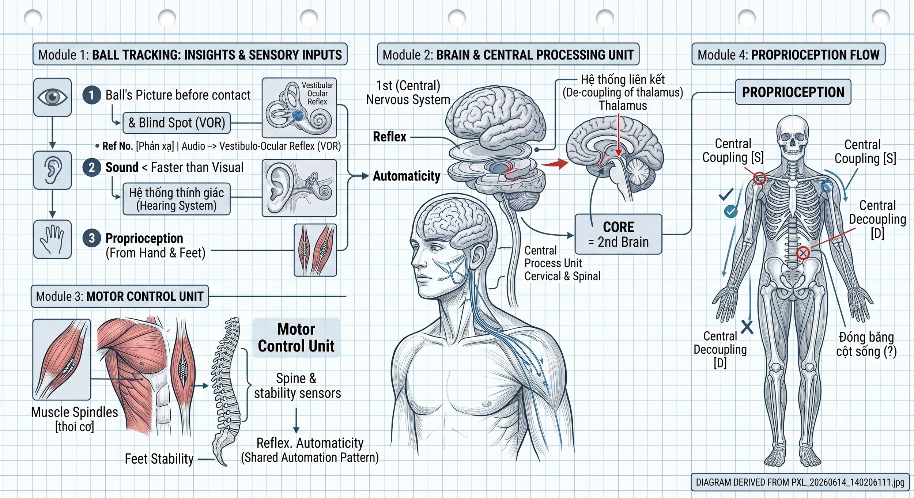
Hình 3: Nhận thức cảm giác & Bộ chân di chuyển — Khai thác tín hiệu thị giác sớm và bộ chân Split-Step định hướng bùng nổ.
Figure 3: Sensory Anticipation & Footwork Mechanics — Visual cue extraction and explosive split-step orientation.
Phần II: Cơ Học Cú Đánh Hiện Đại: Giao Bóng 8 Giai Đoạn & Thuận Tay Sức Mạnh
Cú Giao Bóng Hiện Đại 8 Giai Đoạn & Sinh Cơ Học Điểm Tiếp Xúc The Modern 8-Stage Serve & Impact Biomechanics
Khi huấn luyện tay vợt của bạn di chuyển, hãy sử dụng ma trận quyết định của Bailey làm khung chẩn đoán chính của bạn. Thay vì chỉ nói với tay vợt rằng bước chân của họ sai, hãy xác định tư thế họ đã sử dụng và liệu đó có phải là lựa chọn tối ưu cho quả bóng đó hay không. Một tay vợt đánh trái tay ở tư thế mở vào quả bóng ở giữa, cao ngang hông đang mắc lỗi quyết định chứ không phải lỗi kỹ thuật. Một tay vợt đánh ở tư thế trung lập trên một quả bóng rộng trên vai đang chống lại hệ thống chuyển động của chính họ. Sự điều chỉnh là quyết định, không phải là kỹ thuật. Nguyên tắc chân sau trước là gợi ý huấn luyện dễ áp dụng nhất của bạn ở mọi cấp độ. Đối với người mới bắt đầu và tay vợt câu lạc bộ, chỉ một sự điều chỉnh này - thiết lập chân sau trước khi bước về phía trước - sẽ tạo ra sự cải thiện ngay lập tức hơn bất kỳ sự can thiệp kỹ thuật nào vào chính cú đánh. Hãy chứng minh điều đó. Tạo các cuộc tập trận xung quanh nó. Hãy quay lại nó bất cứ khi nào công việc kỹ thuật dường như bị đình trệ mà không có lý do rõ ràng. Để phát triển bước nhảy chủ động, môi trường luyện tập hiệu quả nhất là các bài tập đọc đối thủ hơn là các bài tập phản ứng bóng. Thiết lập các tình huống trong đó tay vợt phải gọi hướng sút của đối phương trước khi bóng qua lưới, chỉ dựa vào việc đọc chuẩn bị. Những tay vợt học đọc sớm sẽ phát triển tính năng tải trước định hướng xác định cơ chế phân chia bước ưu tú một cách tự nhiên. Những tay vợt chỉ được huấn luyện về phản ứng với bóng thường phản ứng nhanh hơn là đoán trước. Lập trình bóng mờ vào mỗi tuần luyện tập chứ không chỉ để khởi động. Mười lăm phút chuyển động ma cường độ cao khi bắt đầu phiên sẽ kích hoạt các kiểu chuyển động được áp dụng vào mọi bài tập tiếp theo. Những tay vợt ma liên tục thể hiện khả năng ra tòa nhanh hơn đáng kể trong vòng bốn đến sáu tuần. PHẦN II - CÁC CÚT Mỗi chương cú đánh đều tuân theo một kiến trúc giống nhau: Cơ sinh học → Trò chơi tinh thần → Mô hình chơi → Bài tập → Đường chạy ưu tú → Đường chạy dành cho huấn luyện viên Chương 4: Cú giao bóng Cú giao bóng là cú đánh duy nhất trong quần vợt mà tay vợt kiểm soát mọi biến số. Vị trí bóng, thời gian, tốc độ chuẩn bị, mục tiêu – tất cả đều hoàn toàn thuộc về người giao bóng. Không có thư đến bóng để phản ứng. Không có đối thủ ép chân. Không cần phải quản lý sự hỗn loạn trước khi cú swing bắt đầu. Điều này làm cho cú giao bóng đồng thời trở thành cú đánh dễ huấn luyện nhất trong trò chơi và là cú đánh bộc lộ tinh thần nhiều nhất. Khi cú giao bóng của một tay vợt bị hỏng dưới áp lực, hầu như không bao giờ có vấn đề về kỹ thuật xuất hiện từ đâu cả. Đó là một sự xâm phạm tinh thần - Bản thân 1 đang cố gắng quản lý một cách có ý thức một chuyển động đã được huấn luyện đến mức độ tự động hóa thần kinh. Cú giao bóng bộc lộ mối quan hệ của mỗi tay vợt với tâm trí của chính họ và việc huấn luyện nó một cách hiệu quả đòi hỏi phải hiểu cả cơ chế sinh học và tâm lý ở mức độ như nhau. Mọi nguyên tắc được thiết lập ở Phần I đều hội tụ vào việc giao bóng. Lực phản ứng mặt đất tạo năng lượng cho vụ nổ thẳng đứng. X-Factor và thời gian tách biệt tạo ra mô-men xoắn ở vị trí cúp. Chu kỳ kéo dãn-rút ngắn tải cánh tay. Việc phân phối giống như roi da giúp loại bỏ bất kỳ chuyển động đẩy cơ bắp nào. Hiểu cú giao bóng có nghĩa là hiểu mọi thứ diễn ra trước nó - áp dụng cho chuỗi chuyển động phức tạp nhất trong môn thể thao này. 4.1 Cú giao bóng như một chuỗi động học (Kinetic Chain) tối thượng Mô hình tuần tự 8 giai đoạn cung cấp khuôn khổ hữu ích nhất cho cả việc phân tích và huấn luyện cú giao bóng. Mỗi giai đoạn phải hoàn thành chính xác trước khi giai đoạn tiếp theo có thể phát huy hết tiềm năng của nó. Một lỗi ở giai đoạn hai sẽ làm hỏng mọi giai đoạn tiếp theo. Đây là thực tế cấu trúc quan trọng nhất của cú giao bóng: nó không phải là một chuyển động đơn lẻ mà là một chuỗi tám chuyển động, và một chuỗi chỉ mạnh bằng mắt xích yếu nhất của nó. Giai đoạn 1 - Bắt đầu: Nghi thức và phân bổ trọng lượng. Thói quen giao bóng trước không phải là mê tín. Đó là quá trình khởi động thần kinh - một trình tự có chủ ý giúp chuyển hệ thống thần kinh từ tư duy phân tích sang chế độ thực hiện vận động. Người giao bóng thiết lập vị trí chân, cách cầm bóng và mục tiêu tinh thần trước khi bắt đầu bất kỳ hành động thể chất nào. Giai đoạn 2 - Thả và tải: Tung và gập đầu gối đồng thời. Hai hành động này phải xảy ra cùng nhau chứ không phải tuần tự. Khi cánh tay tung lên nâng lên, chân bắt đầu tải xuống - tích trữ năng lượng đàn hồi ở cơ tứ đầu, cơ mông và bắp chân sẽ được giải phóng trong vụ nổ thẳng đứng của giai đoạn năm. Cú ném trước khi gập đầu gối sẽ tạo ra một cú giao bóng tĩnh, bằng chân phẳng mà không cần đóng góp bằng chân. Cú uốn cong đầu gối trước cú ném tạo ra sự hỗn loạn về thời gian. Giai đoạn 3 - Vị trí chiến lợi phẩm: Đỉnh cao của thế năng. Vai nghiêng dốc, vai trước cao. Hông đẩy về phía trước vào sân - tạo ra tư thế cánh cung, một động tác duỗi toàn thân giúp tải trọng cơ và cơ xiên ở mức tối đa. Cánh tay không thuận vẫn vươn lên trên, duy trì độ nghiêng của vai. Đây là thời điểm năng lượng dự trữ tối đa trong toàn bộ cú đánh.
Giai đoạn 4 - Thả vợt: Đầu vợt rơi tự nhiên vào thung lũng sức mạnh phía sau lưng. Đây không phải là một hành động có chủ ý. Đó là điều xảy ra khi cánh tay thực sự thư giãn và đôi chân bắt đầu chuyển động hướng lên trên. Cú thả kéo căng cơ ngực và cơ delta trước, tải chu kỳ kéo giãn-rút ngắn cho giai đoạn tăng tốc. Lúc này vợt sẽ có cảm giác nặng nề - như thể trọng lực đang kéo vợt xuống trước lực cản thả lỏng của cánh tay. Giai đoạn 5 - Tăng tốc: Truyền động bằng chân kích hoạt toàn bộ chuỗi động học (Kinetic Chain). Mặt đất đẩy lên, chân nổ tung, lõi giãn ra, vai xoay vào trong và vợt tăng tốc từ thung lũng lực đến điểm tiếp xúc theo một trình tự liền mạch, từ gần đến xa. Giai đoạn 6 - Liên hệ: Mở rộng đỉnh. Bóng được đánh ở độ cao tối đa, độ duỗi cánh tay tối đa và tốc độ đầu vợt tối đa. Điểm tiếp xúc phải ở phía trước cơ thể một chút - không trực tiếp trên đầu - để cho phép chuyển động quay bên trong hoàn thành xuyên qua quả bóng thay vì vượt qua nó. Giai đoạn 7 - Đi theo: Vợt đi ngang qua cơ thể ở phía không thuận. Tiếp theo không phải là một sự lựa chọn về mặt phong cách. Đó là sự tiếp nối tự nhiên của quá trình quay bên trong và cơ chế giảm tốc của cơ thể. Việc làm gián đoạn nó để "nhắm" bóng là một trong những nguyên nhân phổ biến nhất khiến quả giao bóng bị kém đi dưới áp lực. Giai đoạn 8 - Phục hồi: Cú tiếp đất bằng cú đá ngược thiết lập lại sự cân bằng cho cú đánh cộng một. Trong ván đấu năm 2026, việc phục hồi từ quả giao bóng được coi là chuyển động đầu tiên của điểm tiếp theo - chứ không phải chuyển động cuối cùng của chính cú giao bóng. 4.2 Nền tảng so với tư thế xác định Tư thế nền tảng giữ cho cả hai chân cố định trong suốt giai đoạn tải. Được tiên phong bởi Sampras và được cải tiến bởi Federer, nó tạo ra mối quan hệ nhịp nhàng hơn, có thể lặp lại giữa cú tung và cú đánh — tham chiếu không gian nhất quán giúp duy trì vị trí chính xác và ngụy trang dễ dàng hơn trong suốt một trận đấu dài. Nền tảng này là nền tảng của người giao bóng tại chỗ: ưu điểm chính của nó là khả năng lặp lại và ứng dụng chính của nó trong trò chơi năm 2026 là tình huống mà vị trí và ngụy trang được ưu tiên hơn tốc độ cực đại thô. Tư thế xác định trượt chân sau về phía trước để gặp chân trước trong giai đoạn tư thế chiến lợi phẩm. Đế hẹp hơn này tạo điều kiện cho lực phản ứng mặt đất thẳng đứng mạnh mẽ hơn - vị trí phóng cao hơn, lực đẩy lên trên dễ nổ hơn và tiếp xúc ở mức mở rộng tối đa. Djokovic, Alcaraz và Sinner đã tiêu chuẩn hóa điều này thành mô hình thống trị cho cú giao bóng quyền lực đầu tiên. Cơ sở hẹp hơn mà một số huấn luyện viên trước đây coi là trách nhiệm cân bằng là, trên thực tế, một tài sản quyền lực: nó tập trung GRF theo chiều dọc vào một vụ nổ hướng lên trên thay vì phân phối nó trên một cơ sở rộng hơn. Không có quan điểm nào là vượt trội trên toàn cầu. Sự lựa chọn phải được thúc đẩy bởi hồ sơ thể chất và bản sắc chiến lược của tay vợt. Một tay vợt cao với điểm tiếp xúc cao tự nhiên có thể nhận thấy nền tảng tạo ra đủ vận tốc mà không cần phải di chuyển chân phức tạp hơn. Một tay vợt thấp hơn sẽ tối đa hóa từng centimet chiều cao tiếp xúc sẽ tăng một cách không tương xứng so với vị trí phóng ở độ cao của điểm chính xác. Huấn luyện viên nên đánh giá từng tay vợt một cách riêng lẻ thay vì áp đặt một tiêu chuẩn chung. 4.3 Vị trí Cúp và Thung lũng Quyền lực Vị trí cúp là thời điểm có năng lượng tiềm năng tối đa trong cú giao bóng - điểm mà tại đó mọi thứ mà tay vợt đã nạp đều sẵn sàng để giải phóng. Đến đó sẽ xác định chính xác mức trần của mọi thứ tiếp theo. Hai yêu cầu về thể chất xác định vị trí chính xác của cúp. Đầu tiên, nghiêng vai: vai trước phải cao, tạo thành một đường chéo dốc giữa hai vai. Độ nghiêng này là thứ cho phép chuyển động xoay bên trong tiếp theo để tạo ra tốc độ đầu vợt tối đa. Một đường vai phẳng - cả hai vai có cùng độ cao - loại bỏ góc chéo mà lực xoay bên trong lấy sức mạnh của nó. Thứ hai, tư thế cánh cung: hông đẩy về phía trước vào sân, tạo ra một đường cong toàn thân giúp tải trọng cơ và các cơ xiên ở mức độ căng tối đa. Đây là cú giao bóng tương đương với X-Factor được mô tả trong Chương 2 - sức căng giữa phần trên và phần dưới cơ thể dự trữ năng lượng đàn hồi cho quá trình bung nổ sau đó. Các người giao bóng ưu tú tại thời điểm này trông thực sự không thoải mái. Họ nên làm vậy. Họ đang chịu áp lực cơ sinh học đáng kể. Từ vị trí chiến lợi phẩm, vợt rơi tự nhiên vào thung lũng sức mạnh - khoảng trống phía sau và bên dưới vai nơi chu kỳ rút ngắn kéo dài tải cánh tay cho đòn roi xoay bên trong. Thung lũng quyền lực không phải là địa điểm mà tay vợt cần nhắm mục tiêu một cách có ý thức. Đó là nơi vợt đi khi cánh tay thả lỏng và chân bắt đầu chuyển động. Những tay vợt cố gắng đặt vợt của mình vào thung lũng quyền lực thay vì để nó rơi ở đó đang thực hiện công việc mà vật lý sẽ làm miễn phí - và khi làm như vậy, họ gần như luôn siết chặt cánh tay và phá hủy hiệu ứng roi mà họ đang cố gắng tạo ra. 4.4 Vòng quay bên trong: Động cơ có tốc độ 130 mph+
Yếu tố quan trọng nhất và bị hiểu lầm nhiều nhất của cú giao bóng ưu tú là nguồn gốc của vận tốc cuối cùng của nó. Cú giao bóng không phải là cú đẩy. Nó không phải là một cú ném. Khả năng tăng tốc cuối cùng - giai đoạn cuối cùng phân biệt cú giao bóng 170 km/h với cú giao bóng 220 km/h - xuất phát từ chuyển động quay bên trong của xương cánh tay: xương cánh tay trên quay vào trong hốc vai với tốc độ phi thường. Trong những cú giao bóng ưu tú, cánh tay trên quay vào trong với vận tốc từ 2.500 đến 3.000 độ mỗi giây. Đây không phải là tốc độ mà tay vợt có thể tạo ra một cách có ý thức. Đó là tốc độ xuất hiện khi cơ thể đã nạp chuỗi động học (Kinetic Chain) một cách chính xác, thả lỏng hoàn toàn cánh tay và cho phép truyền năng lượng tuần tự từ chân đến lõi sang vai để tạo ra đòn roi giống như roi quất vợt qua vùng tiếp xúc. Đây là hiệu ứng lông mi. Vợt hoạt động không giống như một chiếc búa vung ra từ vai mà giống như một chiếc roi bật ra khỏi bàn tay - đầu vợt tăng tốc lên gấp bội tốc độ của cán vợt. Khi mọi giai đoạn trước của mô hình 8 giai đoạn được thực hiện chính xác, làn mi này sẽ tự động. Khi bất kỳ giai đoạn nào trước đó không thành công - vị trí cúp bị sập, cánh tay siết chặt, cú ném sớm - đòn tấn công được thay thế bằng lực đẩy cơ bắp và tốc độ giảm đáng kể bất kể tay vợt cố gắng vung vợt như thế nào. Ý nghĩa thực tế của việc huấn luyện là phản trực giác: hướng dẫn để tạo ra tốc độ giao bóng cao hơn hầu như không bao giờ "vung mạnh hơn". Hầu như luôn luôn là "thả lỏng cánh tay nhiều hơn" hoặc "tin tưởng vào cú rơi". Những tay vợt thực hiện những cú giao bóng nặng nhất một cách nhất quán là những tay vợt đã học được cách thực hiện ít hơn vào thời điểm tiếp xúc chứ không phải nhiều hơn. 4.5 Các kiểu giao bóng và triển khai chiến thuật Giao bóng phẳng là vận tốc tối đa, biên độ tối thiểu. Vợt tiếp bóng với mặt gần vuông góc, truyền tốc độ với độ xoáy tối thiểu. Mục tiêu chính của nó là chữ T - giao điểm của đường trung tâm và đường giao bóng, giúp loại bỏ góc của đối phương - và cơ thể, làm cản trở người trả bóng và ngăn cản một cú xoay người hoàn toàn. Cú giao bóng phẳng là vũ khí át chủ bài và là công cụ tạo áp lực, nhưng biên độ thấp khiến nó trở thành một rủi ro có tính toán. Trong ván đấu năm 2026, những tay vợt ưu tú sử dụng nó một cách có chọn lọc trong những lần giao bóng đầu tiên để giữ cho đối thủ trung thực, thay vì làm mẫu chính. Cú giao bóng là cú giao bóng linh hoạt nhất về mặt chiến thuật trong trò chơi hiện đại và đến năm 2026, nó đã trở thành cú giao bóng thứ hai chiếm ưu thế trong số những tay vợt ưu tú. Bằng cách chạm vào cạnh bóng - đối với tay vợt thuận tay phải, hãy tiếp xúc vào khoảng 3 giờ trên bề mặt bóng - quả giao bóng tạo ra xoáy lên tạo ra một cú đá nảy cao, thường là về phía trái tay của đối phương trên sân quảng cáo. Giá trị chiến thuật chính của nó là buộc đối thủ phải đánh trên vai của họ - chính xác là độ cao tiếp xúc mà hầu hết tay vợt yếu nhất và dễ bị ảnh hưởng nhất bởi các kiểu chơi được mô tả trong phần 4.7. Tốc độ giao bóng thứ hai và tốc độ quay trong số các ưu tú vào năm 2026 đang tiến gần đến những gì quả giao bóng đầu tiên được tạo ra vào đầu những năm 2000 - quả giao bóng thứ hai không còn là một hành động phòng thủ để sinh tồn mà là một vũ khí tấn công theo đúng nghĩa của nó. Cú giao bóng cắt lát sử dụng chuyển động lướt qua bên ngoài quả bóng để tạo ra độ xoáy sang ngang, trượt thấp qua sân và kéo đối thủ ra khỏi phía bên kia. Ứng dụng chính của nó là tạo ra sân mở cho phép kiểu thuận tay cộng một và nó vẫn là một lựa chọn có tỷ lệ phần trăm cao đối với những người đánh trả gặp khó khăn với bóng thấp hoặc chuyển động rộng. 4.6 Trò chơi tinh thần: Cú giao bóng cờ chớp Trạng thái độc đáo của cú giao bóng là cú đánh được kiểm soát hoàn toàn duy nhất trong quần vợt khiến nó dễ bị tổn thương nhất trước sự can thiệp của Bản thân 1 - bộ óc phân tích, nghi ngờ, suy nghĩ quá mức mà Gallwey xác định là trở ngại chính đối với thành tích thể thao. Khi cơ thể đã được rèn luyện kỹ lưỡng, cú giao bóng sẽ tự động được thực hiện. Khi tâm trí gián đoạn để kiểm tra, điều chỉnh hoặc ghi đè, đường dẫn thần kinh sẽ bị bỏ qua và khả năng thực thi sẽ giảm sút. Mô hình Cờ chớp chớp - Lập kế hoạch, Đọc, Ngụy trang - áp dụng cho cú giao bóng như sau. Giai đoạn lập kế hoạch xảy ra trước khi nảy: người giao bóng chọn mục tiêu, kiểu giao bóng và mẫu cộng một trước khi quy trình bắt đầu. Giai đoạn đọc áp dụng cho việc quan sát trước khi giao bóng về vị trí của người trả giao bóng, dự đoán cách họ sẽ di chuyển và những khoảng trống nào sẽ mở ra. Giai đoạn ngụy trang - vũ khí chiến thuật độc đáo của cú giao bóng - có nghĩa là duy trì vị trí ném bóng và cúp giống hệt nhau cho tất cả các kiểu giao bóng, buộc người trả giao bóng phải thực hiện mà không có thông tin. Nghi thức chuẩn bị trước là cơ chế vật lý để chuyển từ lập kế hoạch sang thực hiện. Trình tự chuyển động chính xác của Nadal ở đường cuối sân, nhịp nảy bóng của Djokovic - đây không phải là mê tín hay thói quen. Chúng là các giao thức mồi CNS có chủ ý: chuỗi các hành động vật lý chuyển hệ thống thần kinh từ chế độ phân tích sang chế độ thực hiện tự động, nơi giới thượng lưu giao bóng trực tiếp. Làm gián đoạn thói quen giao bóng trước của tay vợt là một trong những chiến thuật tâm lý hiệu quả nhất đối với đối thủ. Bảo vệ thói quen đó dưới áp lực là một trong những kỹ năng tinh thần quan trọng nhất mà người giao bóng có thể phát triển. Cú giao bóng thứ hai là thước đo chân thực nhất về trạng thái tinh thần của tay vợt. Dưới áp lực, một cú giao bóng thứ hai có âm thanh máy móc thật dễ dàng. Cú giao bóng thứ hai xuất phát từ trạng thái sợ hãi - với tâm trí tỉnh táo đang cố gắng đưa bóng vào vòng cấm - gây ra lỗi kép không phải vì kỹ thuật đã thất bại mà do sự can thiệp về mặt tinh thần đã khiến kỹ thuật này không thể thực hiện được. Tay vợt sở hữu quả giao bóng thứ hai của họ sở hữu tinh thần mọi ván giao bóng mà họ chơi. 4.7 Kiểu giao bóng
Mục đích chiến thuật cao nhất của cú giao bóng trong trận đấu năm 2026 không phải là quân át. Dữ liệu cho thấy cú đánh cộng một - cú thuận tay giữa sân do người giao bóng thiết lập - tương quan với xác suất thắng trận trên 70% khi thắng. Việc giao bóng là thiết lập. Điểm cộng là khả năng thực thi. Giao bóng T + thuận tay từ trong: Cú giao bóng phẳng hoặc cắt lát vào chữ T vô hiệu hóa góc của người trả giao, tạo ra một cú trả giao trung tâm mà người giao bóng tấn công bằng một cú thuận tay dọc theo đường tới sân mở. Giao bóng rộng + thuận tay trên sân rộng: Cú giao bóng rộng ở phía bên trái hoặc cú giao bóng rộng ở phía quảng cáo sẽ kéo người trả giao ra khỏi sân, mở ra toàn bộ mục tiêu chéo sân hoặc đường biên cho cú thuận tay cộng một. Cú giao bóng cơ thể + cú giao bóng ngắn: Cú giao bóng phẳng hoặc cắt lát vào cơ thể sẽ gây cản trở cho người trả giao, buộc người giao bóng phải thực hiện một cú trả bóng phòng thủ, ngắn mà người giao bóng di chuyển về phía trước để kết thúc với tỷ lệ ném bóng cao. Cú giao bóng về phía trái tay + tiếp cận thuận tay: Độ nảy cao của quả giao bóng về phía trái tay buộc một đòn trả lời phòng thủ tiếp đất ngắn, cho phép người giao bóng di chuyển vào và thực hiện một cú đánh tiếp cận để thiết lập một pha dứt điểm vào lưới. Trong tất cả bốn mẫu, cú giao bóng được chọn dựa trên vị trí cộng một mà nó tạo ra - không dựa trên việc người giao bóng cảm thấy tự tin nhất khi đánh một cách cô lập. Tư duy khuôn mẫu bắt đầu từ lúc ném. 4.8 Khắc phục sự cố và thực tập Tay trái bị treo là lỗi nguồn phổ biến nhất trong giao bóng. Khi tay không thuận hạ xuống quá sớm - rơi khỏi vị trí cúp trước khi vợt bắt đầu đi lên - độ nghiêng của vai bị xẹp xuống và vị trí cánh cung bị mất. Cú giao bóng bị xẹp và mất cả lực cũng như độ cao. Cách điều chỉnh là bằng xúc giác: giữ tay không thuận hướng lên trên cho đến khi vợt đi qua tai trên đường hướng lên của nó. Một số huấn luyện viên sử dụng một dải kháng lực nhẹ trên cổ tay không thuận để tạo ra phản hồi cảm thụ bản thân giúp xác định thời gian này một cách cụ thể. Khay giao bóng xuất hiện khi mặt vợt mở ra hướng lên trời trong giai đoạn thung lũng quyền lực thay vì hướng về phía hàng rào phía sau. Điều này loại bỏ hoàn toàn lợi thế xoay bên trong - người giao bóng chỉ có thể đẩy bóng về phía trước chứ không thể lao qua nó. Sự điều chỉnh này phản trực giác: yêu cầu tay vợt để đầu vợt hướng xuống đất khi nó rơi xuống chứ không phải hướng lên trời. Đối với những tay vợt không thể cảm nhận được sự khác biệt này, bài tập chuỗi tốc độ dưới đây sẽ cô lập cảm giác một cách hiệu quả.
Bước nhảy bằng chân đầu tiên - nhảy trước khi chân đã nạp đầy đủ - về cơ bản là sự giải phóng sớm GRF thẳng đứng. Tay vợt phóng trước khi lò xo bị nén hoàn toàn, làm mất đi một phần lực đáng kể mà lẽ ra toàn bộ tải trọng ở chân sẽ tạo ra. Gợi ý là tiếp đất trước: cảm thấy mặt sân bị đẩy lùi trước khi bàn chân rời khỏi mặt đất. Đôi chân nổ tung; mặt đất không đẩy bạn đi. Máy khoan thẳng đứng quả bóng y học bên dưới thực hiện trực tiếp trình tự này. Máy khoan áp lực hộp mục tiêu sử dụng mục tiêu 30 x 30 cm được đặt trong hộp giao bóng - ở vị trí T, rộng hoặc cơ thể - và yêu cầu mười cú giao bóng đầu tiên liên tiếp vào mục tiêu trước khi tiếp tục. Điều này tạo ra áp lực hiệu suất ngay lập tức, tái tạo nhu cầu tinh thần khi giao bóng vào thời điểm quan trọng trong trận đấu. Trong môi trường tập luyện năm 2026, dữ liệu cảm biến thời gian thực cung cấp phản hồi về cả độ chính xác của vị trí và tốc độ đầu vợt cùng một lúc, cho phép tay vợt theo đuổi cả chất lượng và tốc độ mà không cần đánh đổi cái này lấy cái kia. Medicine Ball Vertical Heaves rèn luyện khả năng chuyển từ chân sang lõi để tạo ra vụ nổ theo chiều dọc. Từ tư thế giao bóng chính xác, tay vợt cầm một quả bóng thuốc nặng 3 kg ở độ cao ngang thắt lưng và nổ tung hướng lên trên, thả bóng theo phương thẳng đứng ở độ giãn tối đa. Máy tập cách ly cảm giác chạm đất — toàn bộ tải trọng ở chân trước khi thả lên — mà không cần quản lý đồng thời sự phức tạp của vợt, kỹ thuật tung bóng và điểm tiếp xúc. Mười lần lặp lại khi bắt đầu mỗi phiên giao bóng. Máy khoan chuỗi tốc độ sử dụng một chiếc tất dịch vụ có trọng lượng hoặc dụng cụ huấn luyện giao bóng chuyên dụng — một công cụ tăng thêm khoảng 200g lực cản cho đầu vợt — để phóng đại cảm giác về độ trễ và bắt kịp chuyển động xoay bên trong. Dưới trọng lượng tăng thêm, tay vợt đang đẩy chứ không phải đánh sẽ ngay lập tức cảm nhận được sự khác biệt: lực đẩy trở nên nặng nhọc và chậm chạp, trong khi động tác nhả giống như roi thực sự sẽ tăng tốc chiếc tất có trọng lượng nhanh hơn đáng kể so với bất kỳ nỗ lực cơ bắp nào có thể tạo ra. Sau khi người huấn luyện đã thiết lập được cảm giác, việc chuyển trở lại sử dụng vợt thông thường sẽ tạo ra sự gia tăng rõ rệt về độ thư giãn và tốc độ đầu vợt. Ở cấp độ của bạn, cơ chế giao bóng được thiết lập. Những cải tiến dành cho bạn nằm ở tầng tinh thần và chiến thuật, không phải ở tầng kỹ thuật. Có hai lĩnh vực đáng được xem xét một cách trung thực. Đầu tiên là nghi thức trước khi giao bóng của bạn dưới áp lực. Liệu nó có còn ổn định khi tỷ số hòa là 5-6 so với tỷ số 3-0 không? Nếu bạn quan sát thấy bất kỳ sự rút ngắn, gấp rút hoặc thay đổi nào trong thói quen của mình dưới áp lực cạnh tranh, thì đó chính là sự rò rỉ tinh thần rất có thể khiến bạn phải trả giá bằng những trò chơi giao bóng quan trọng. Bảo vệ nghi lễ. Mở rộng nó nếu cần thiết. Thời gian giữa các điểm tồn tại đặc biệt để thiết lập lại trạng thái bên trong từ đó tạo ra những cú giao bóng tuyệt vời.
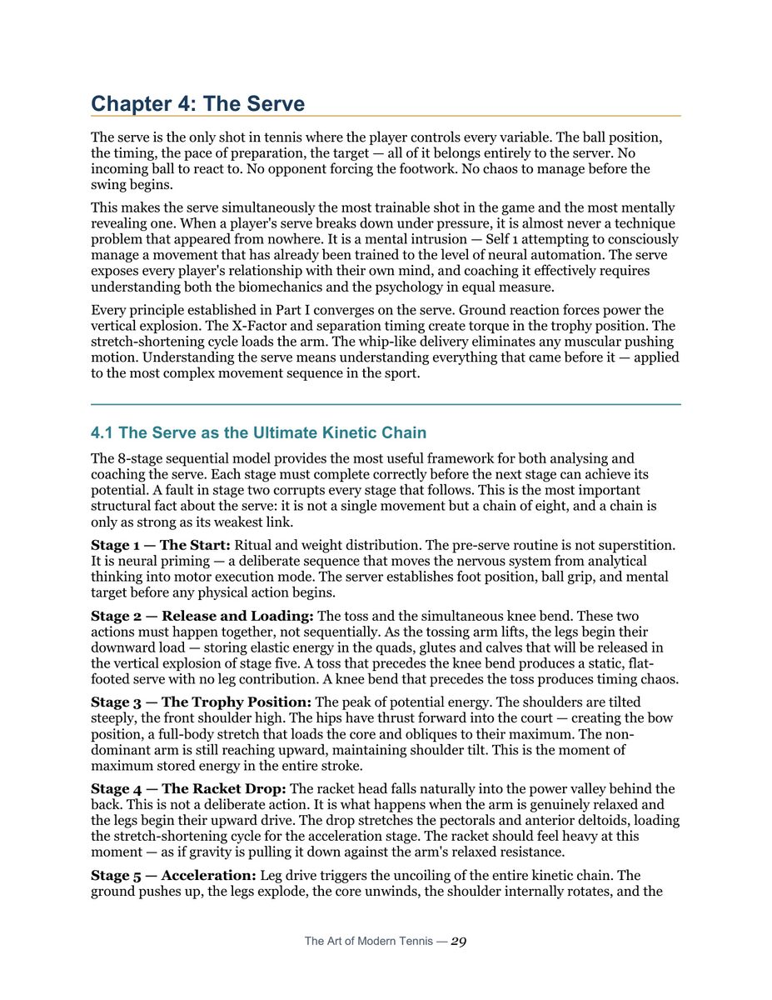
Hình 4: Mô hình giao bóng hiện đại 8 giai đoạn — Từ tích lực khuỵu gối, rơi đầu vợt (Racket Drop) đến úp bàn tay (Pronation) tiếp xúc bóng đỉnh cao.
Figure 4: The 8-Stage Modern Serve Model — From knee flexion load and racket drop to explosive internal rotation and pronation.
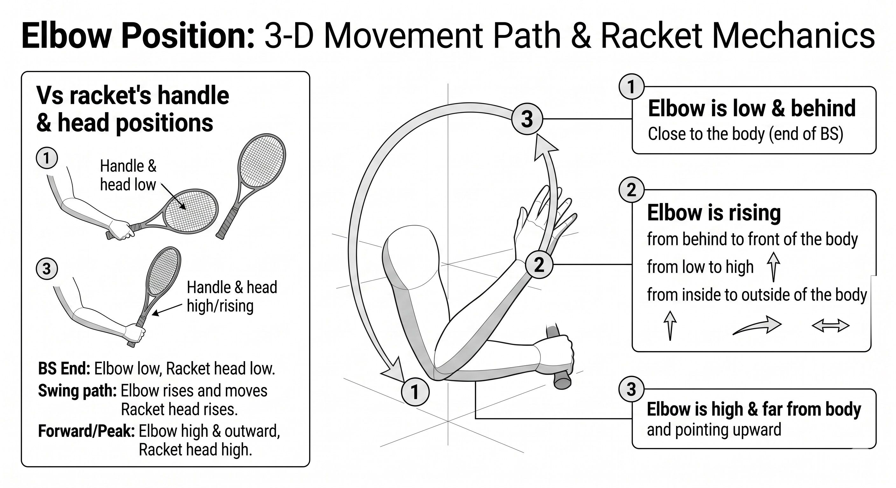
Hình 4.2: Sinh cơ học quỹ đạo khuỷu tay cú giao bóng — Duy trì góc nâng cánh tay an toàn tránh chèn ép khoang dưới mỏm cùng vai.
Figure 4.2: Elbow Kinematic Path in the Modern Serve — Optimal humeral elevation preventing subacromial impingement.
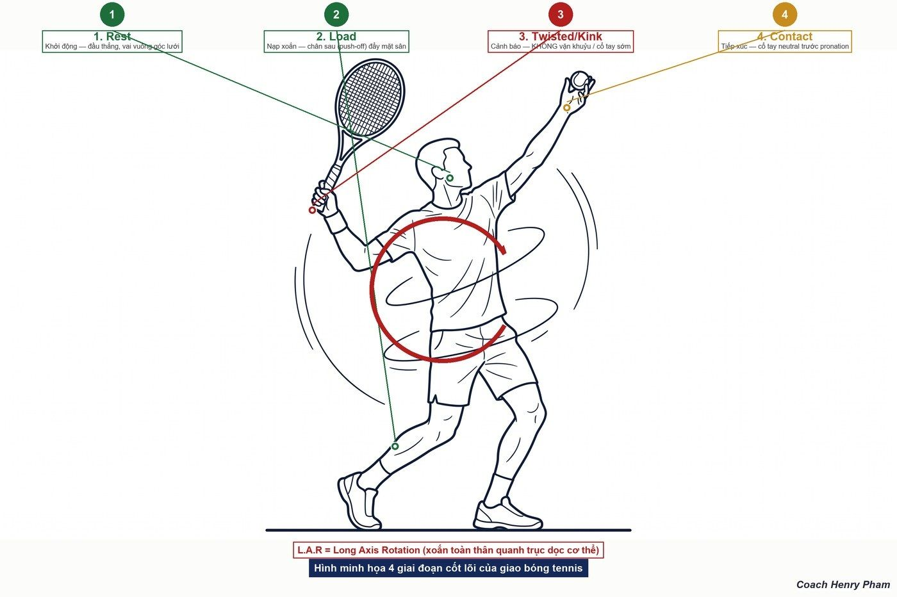
Hình 4.3: Các pha gia tốc góc và chu kỳ phát lực trong cú giao bóng hiện đại.
Figure 4.3: Angular Acceleration Phases and Power Transfer in Modern Serve.
Kỹ Thuật Trả Giao Bóng: Phản Xạ Split-Step & Điểm Chặn Bóng The Return of Serve: Split-Step Timing & Block Mechanics
Thứ hai là ý định giao bóng thứ hai của bạn. Bạn đang thực hiện cú giao bóng thứ hai hay bạn đang nhắm nó? Sự khác biệt được cảm nhận chứ không phải được mô tả: cú đánh có nghĩa là tin tưởng vào con đường thần kinh và thực hiện cú đánh; nhắm có nghĩa là điều khiển quả bóng một cách có ý thức, điều này phá vỡ cơ chế roi và làm giảm cả tốc độ và độ xoáy đồng thời. Trong thực tế, hãy thực hiện cú giao bóng 10 giây với vận tốc phát bóng tối đa mà không cần quan tâm đến việc liệu chúng có tiếp đất hay không. Hãy cảm nhận toàn bộ vòng quay bên trong. Sau đó giới thiệu lại mục tiêu. Mục tiêu là giao bóng thứ hai của bạn với tâm lý giao bóng đầu tiên - cam kết, tự động và được thực hiện đầy đủ. Khi huấn luyện tay vợt của bạn khi giao bóng, hãy sử dụng mô hình tuần tự 8 giai đoạn làm khung chẩn đoán trước khi thực hiện bất kỳ can thiệp kỹ thuật nào. Xác định giai đoạn sớm nhất khi có sự cố xảy ra. Tay vợt mắc lỗi Khay giao bóng (giai đoạn 4) sẽ không được hưởng lợi từ các tín hiệu về điểm tiếp xúc (giai đoạn 6) cho đến khi giai đoạn thung lũng quyền lực được sửa chữa. Tay vợt có vị trí cúp bị sụp đổ (giai đoạn 3) không thể tạo ra đòn roi xoay bên trong (giai đoạn 5) bất kể họ tạo ra bao nhiêu tốc độ cánh tay. Hai khoản đầu tư huấn luyện hiệu quả nhất đối với hầu hết các tay vợt là vị trí cúp và thư giãn cánh tay. Vị trí chiến lợi phẩm vì nó có thể nhìn thấy được, có thể sửa chữa được và có những hậu quả ngay lập tức cho mọi giai đoạn tiếp theo. Sự thư giãn của cánh tay vì nó là biến số duy nhất có mối tương quan nhất quán với tốc độ giao bóng và bởi vì nó là biến số bị phá hủy đáng tin cậy nhất do huấn luyện kỹ thuật quá mức. Khi thực hiện động tác thư giãn cánh tay với một vận động viên thi đấu, hãy chống lại sự thôi thúc đưa ra hướng dẫn kỹ thuật. Thay vào đó, hãy sử dụng bài tập chuỗi tốc độ và yêu cầu tay vợt mô tả cảm giác của họ khi dụng cụ có trọng lượng tăng tốc nhanh nhất. Họ sẽ mô tả sự thư giãn. Họ sẽ mô tả việc buông bỏ hơn là đẩy. Hãy để họ tiếp cận cảm giác trước khi gắn ngôn ngữ vào nó. Đối với những tay vợt ưu tú, hãy tích hợp tư duy khuôn mẫu vào quá trình huấn luyện giao bóng ngay từ quả bóng đầu tiên của mỗi buổi tập. Không bao giờ giao bóng mà không có ý định cộng một đã được tuyên bố. Thói quen giao bóng theo kiểu đầu tiên - chọn giao bóng dựa trên những gì nó thiết lập hơn là những gì cảm thấy thoải mái - phải trở nên tự động trước khi nó xuất hiện dưới áp lực cạnh tranh. : Cú giao bóng trả lại Nếu cú giao bóng là cú đánh mà tay vợt kiểm soát hoàn toàn, thì cú trả giao bóng là cú đánh kiểm tra mọi thứ mà họ không thể kiểm soát - và cách họ phản ứng với nó. Vận tốc, độ xoáy, vị trí và thời gian đều được quyết định của đối thủ. Người quay lại phải đọc, phản ứng và chuyển hướng trong một cửa sổ được nén đến mức suy nghĩ có ý thức không phải là một chiến lược khả thi. Trong phần lớn lịch sử quần vợt, sự bất cân xứng này được coi là gánh nặng cho người trở về. Cú giao bóng là cú đánh chiếm ưu thế; sự trở lại là hạn chế thiệt hại. Trò chơi năm 2026 đã đảo ngược mối quan hệ này. Cú trả giao bóng hiện đại, được thực hiện ở cấp độ cao nhất, không phải là một phản ứng phòng thủ trước một cú giao bóng tuyệt vời. Đây là đòn tấn công đầu tiên được thiết kế để ngay lập tức giành lấy thế chủ động và từ chối lợi thế cộng một của người giao bóng trước khi nó có thể được thiết lập. Djokovic xây dựng sự nghiệp của mình dựa trên sự đảo ngược này. Trận lượt về của anh ấy không nhanh hơn hay mạnh hơn những trận đấu cùng thời - nó diễn ra sớm hơn, vị trí tốt hơn và tinh thần quyết liệt hơn. Anh ấy coi mọi điểm giao bóng như một cơ hội tấn công và dữ liệu khiến anh ấy chán nản: số liệu thống kê về số lần trả giao bóng trong những năm đỉnh cao của anh ấy thể hiện sự trung hòa hoàn toàn nhất về lợi thế giao bóng trong lịch sử quần vợt chuyên nghiệp. Để hiểu lý do tại sao đòi hỏi phải phá vỡ sự quay trở lại các thành phần thể chất và nhận thức của nó. 5.1 Lượt trả về như một vũ khí chính Lượt trả về được thực hiện trên mỗi điểm mà đối thủ giao bóng. Trong một trận đấu ba set, điều đó có nghĩa là người đánh trả phải đối mặt với khoảng từ 70 đến 120 cơ hội đánh trả. Không có cú đánh nào khác trong trận đấu - không phải cú thuận tay, không phải cú đánh trái tay - xuất hiện với tần suất như vậy từ một vị trí bất lợi ban đầu. Tác động tích lũy về mặt chiến thuật của chất lượng trả bóng trong suốt trận đấu là rất lớn. Sự thay đổi tư duy vào năm 2026 xác định sự trở lại của giới thượng lưu là việc từ bỏ tâm lý hành khách. Người quay lại thụ động chờ xem người giao bóng làm gì và sau đó cố gắng tồn tại. Người trả giao bóng tích cực đã quyết định họ dự định làm gì với cú trả bóng trước khi quả giao bóng được thực hiện và các đặc điểm của quả giao bóng - tốc độ, độ xoáy, vị trí - chỉ xác định việc thực hiện cụ thể một ý định đã có từ trước. Đây không phải là sự liều lĩnh. Đây là ứng dụng của mô hình BlitzChess — Lập kế hoạch, Đọc, Ngụy trang — từ góc nhìn của người quay trở lại. Lợi thế cộng một của người giao bóng, được mô tả trong Chương 4, là mục tiêu trọng tâm của chiến lược hoàn trả ưu tú. Bằng cách thực hiện cú trả bóng xuyên thấu, chính xác và sớm, những người trả giao bóng giỏi nhất thế giới đã từ chối người giao bóng thuận tay thoải mái giữa sân mà mô hình cộng một phụ thuộc vào. Một cú trả bóng sâu và nặng về góc trái tay của người giao bóng không chỉ bắt đầu cú đánh bóng - nó còn hủy bỏ quả bóng thứ ba dự định của người giao bóng trước khi nó đến. 5.2 Hình học định vị: Mạnh mẽ và sâu sắc
Người trở về đứng ở đâu không phải là vấn đề thói quen hay sự thoải mái. Đó là một quyết định chiến thuật quyết định toàn bộ động lực của việc trao đổi trả bóng và nó phải được đưa ra một cách có chủ ý dựa trên bốn biến số: vũ khí chính của người giao bóng, kiểu xoáy được triển khai thường xuyên nhất, tốc độ bề mặt và khả năng nhận bóng sớm của chính người trả giao. Vị trí quyết liệt - đứng trên hoặc bên trong đường cuối sân - là hình mẫu của Djokovic và Alcaraz. Ở độ sâu này, thiết bị quay trở lại cắt các góc rộng của người giao bóng, giảm không gian hình học có sẵn cho vị trí và buộc người giao bóng phải đánh bại chúng bằng vận tốc thuần túy thay vì chuyển động. Sự đánh đổi là thời gian phản hồi: mỗi mét chuyển tiếp sẽ tiêu tốn của người quay lại khoảng 15 mili giây trong khoảng thời gian phản hồi có sẵn. Đối với tốc độ giao bóng đầu tiên là 220 km/h, điều này không hề nhỏ. Vị trí tấn công chỉ bền vững khi khả năng dự đoán của người trả bóng được phát triển đến mức họ đọc được quả giao bóng trước khi bóng đi qua lưới thay vì phản ứng với nó sau khi bật lên. Định vị sâu - cách vạch cuối sân từ 10 đến 15 feet - là mô hình của Medvedev và Nadal đỉnh cao trên bề mặt nhanh. Độ sâu bổ sung sẽ chuyển đổi thời gian phản ứng thành phòng xoay, cho phép xoay đơn vị đầy đủ hơn và phân phối chuỗi động học (Kinetic Chain) hoàn thiện hơn ngay cả khi đối mặt với những cú giao bóng nặng nhất. Cái giá phải trả là vị thế của sân đấu: từ độ sâu này, có thể đạt được một cú trả bóng vô hiệu hóa nhưng một cú trả bóng thực sự mang tính tấn công đòi hỏi phải có thời gian và khả năng tăng tốc đặc biệt. Sự đánh đổi này là hợp lý nhất đối với những cú giao bóng đầu tiên ưu tú và khi mục tiêu chính của người trả giao bóng là xây dựng một thế trận giao bóng hơn là giành điểm trong hai hoặc ba cú đánh. Trục xoay bóng ma năm 2026 đại diện cho tùy chọn thứ ba đã xuất hiện ở cấp độ cao nhất: người trả bóng thay đổi vị trí bắt đầu của họ sau khi cú ném đi lên, tiến về phía trước khi sự chuẩn bị của người giao bóng gợi ý một cú giao bóng về phía trái tay hoặc bước rộng khi một lát cắt vào cơ thể trở nên rõ ràng. Sự khởi đầu năng động này, được thúc đẩy bởi khả năng đọc trước khi tiếp xúc, kết hợp các lợi thế chiến thuật của cả hai vị trí - bóng sớm của người trả bóng tích cực khi kết quả đọc chính xác, thời gian phản ứng của người trả bóng sâu khi kết quả không chính xác. Ma trận quyết định để lựa chọn vị trí: Giao bóng Đặc điểm Vị trí được đề xuất Cơ sở lý luận Giao bóng phẳng tốc độ cao Sâu — một mét sau vạch cuối sân Ưu tiên thời gian phản ứng so với việc cắt góc Giao bóng nặng Giữa — trên vạch cuối sân Nhận bóng trước độ cao nảy tối đa Cắt giao bóng rộng Hung hãn — bên trong vạch cuối sân Cắt góc trước khi nó mở rộng
Đặc điểm giao bóng Vị trí được đề xuất Cơ sở lý luận Giao bóng thứ hai — bất kỳ loại nào Hung hăng — bên trong vạch cuối sân Từ chối thời gian phục hồi của người giao bóng, tạo áp lực ngay lập tức 5.3 Tải trực tiếp: Cơ chế phản ứng Trình tự cơ sinh học của cú trả bóng được xây dựng dựa trên ba nguyên tắc: bước tách được tính thời gian chính xác, lượt quay đơn vị nhỏ gọn và tiếp xúc tốt ở phía trước cơ thể. Mỗi nguyên tắc là không thể thương lượng. Bất kỳ thất bại nào trong chuỗi ba phần này đều tạo ra kết quả tương tự - tiếp xúc muộn, bóng phòng thủ và mô hình cộng một của người giao bóng diễn ra đúng như kế hoạch. Bước phân chia để trả bóng là xung hoạt động được mô tả trong Chương 3, được áp dụng cho các yêu cầu về thời gian cụ thể của một cú giao bóng đến. Tay vợt phải ở trên không vào đúng thời điểm vợt của người giao bóng tiếp xúc với bóng. Thời điểm trả bóng này đòi hỏi khắt khe hơn bất kỳ tình huống nào khác trong trò chơi vì sự tiếp xúc của người giao bóng rất dễ bùng nổ và chỉ có thể dự đoán được khi đọc sớm - cú tung, góc vai, tư thế. Những người quay trở lại tính thời gian thực hiện bước chia bước của họ để ném bóng của người giao bóng thay vì tiếp xúc với người giao bóng sẽ liên tục hạ cánh quá sớm và mất lợi thế tải trước theo hướng mà bước phân chia hoạt động mang lại. Vòng quay đơn vị nhỏ gọn thay thế hoàn toàn vòng backswing đầy đủ. Không có thời gian để thực hiện cú giao bóng ở tốc độ 200 km/h. Hai vai xoay như một đơn vị duy nhất - cả hai cánh tay di chuyển cùng nhau, khuỷu tay thu vào, hạn chế một cách tự nhiên việc đưa vợt về vị trí mà vợt không lùi xa hơn vai sau. Đây là cơ chế chặn và truyền động: lực quay trở lại không tạo ra năng lượng một cách độc lập. Nó chuyển hướng tốc độ hiện có của người giao bóng, sử dụng vận tốc đến làm nguồn năng lượng chính và chỉ bổ sung đủ lực xoay để hướng bóng chính xác. Một người trả bóng cố gắng tạo ra sức mạnh độc lập để chống lại một cú giao bóng nhanh - thực hiện một cú vung ngược hoàn toàn và vung qua - hầu như sẽ luôn bị trễ, bởi vì quỹ thời gian cho một cú giao bóng lớn không tồn tại. Xúc ở phía trước thân là phẩm chất gắn kết hai cái kia lại với nhau. Tiếp xúc muộn - bóng gặp bên cạnh hoặc phía sau hông - tạo ra những cú trả bóng yếu, sai hướng bất kể bước tách bước và bước quay đơn vị tốt như thế nào. Tiếp xúc sớm - bóng gặp tốt ở phía trước, trước hông - mang lại cho người trả bóng đòn bẩy tối đa để chuyển hướng và có thời gian tối đa để nhìn thấy bóng và theo dõi nó theo dây. Mọi thứ trong cơ chế trả bóng đều tồn tại để có thể tiếp xúc sớm: vị trí, thời gian, cú thu hồi nhỏ gọn. Liên hệ sớm là kết quả. Mọi thứ khác là sự chuẩn bị.
5.4 Phản ứng phức tạp: Dự đoán trước tốc độ Hiểu biết sâu sắc quan trọng nhất từ nghiên cứu Chuyển đổi mô hình về việc trả giao bóng là: tốc độ phản ứng cơ bản phần lớn là do di truyền. Nó không thể được cải thiện một cách có ý nghĩa thông qua đào tạo. Cung phản xạ - con đường thần kinh từ kích thích thị giác đến phản ứng vận động - hoạt động ở tốc độ được xác định bởi cấu trúc thần kinh của cá nhân và cấu trúc đó không thay đổi đáng kể để đáp ứng với thực hành. Điều thay đổi đáng kể trong quá trình luyện tập là khả năng dự đoán - khả năng đọc sự chuẩn bị của người giao bóng và đưa ra dự đoán chính xác về đặc điểm của cú giao bóng trước khi bóng rời vợt. Dự đoán không phải là phản ứng. Nó hoạt động ở một cấp độ nhận thức hoàn toàn khác, sử dụng nhận dạng mẫu được xây dựng từ hàng nghìn cú giao bóng được quan sát để tạo ra dự đoán có trọng số xác suất mà cơ thể hành động trước khi tâm trí có ý thức xác nhận điều đó. Sự trở lại của Federer không nhanh hơn Andy Roddick trong trận chung kết Wimbledon 2009 - tốc độ phản ứng của Roddick, nếu có, vượt trội. Những gì Federer có là một hệ thống dự đoán phức tạp hơn: anh đọc vị trí tung bóng, góc vai và hướng cơ thể của Roddick để đưa ra dự đoán về hướng của cú giao bóng trước khi nó đến, và cơ thể anh bắt đầu di chuyển dựa trên dự đoán đó thay vì chờ xác nhận. Trục xoay ma quái trong sự trở lại của giới thượng lưu hiện đại là biểu hiện vật lý chính xác của lợi thế nhận thức này. Ý nghĩa thực tế của việc huấn luyện là công việc đọc giao bóng - thực hành có chủ ý để đọc sự chuẩn bị của đối phương thay vì phản ứng với bóng - sẽ mang lại hiệu quả cao hơn cho việc phát triển khả năng trả giao bóng so với các bài tập tốc độ phản ứng. Các bài tập về tốc độ phản ứng đào tạo một biến số phần lớn là cố định. Bài tập đọc rèn luyện một biến số gần như có khả năng ứng biến vô hạn nếu thiết kế bài tập phù hợp. Mô hình cờ chớp, được mô tả trong Chương 4 và 10, được áp dụng trực tiếp tại đây. Người trả giao bóng rèn luyện khả năng nhận dạng mẫu của họ - người đã lập danh mục trong đầu các xu hướng của người giao bóng, các thông tin trong cú ném của họ, các vị trí vai trước các kiểu giao bóng khác nhau - đang thực hiện cú trả giao bóng với lợi thế nhận thức mà không tốc độ vật lý nào có thể bù đắp được. Đây là phiên bản người về của trò chơi cờ vua của Federer, và đó là phẩm chất phân biệt những người về nước xuất sắc với những người chỉ giỏi. 5.5 Sự phát triển trở lại: 2000–2026 Tính năng 2000–2010 2020–2026 Mục tiêu chính Vô hiệu hóa quả giao bóng và bắt đầu cuộc biểu tình Gây áp lực lên người giao bóng ngay lập tức và từ chối điểm cộng một
Tính năng 2000–2010 2020–2026 Định vị Tĩnh — độ sâu xác định trước Động — được điều chỉnh sau khi đọc cú tung Backswing Vòng vừa phải — một số cú xoay độc lập Khối siêu nhỏ gọn và chuyển hướng Xử lý giao bóng thứ hai Cú đánh sâu hoặc chip thận trọng Tìm kiếm và tiêu diệt — bóng sớm Tách bước Nhảy trung tính — sẵn sàng định hướng bằng nhau Tải trước định hướng chủ động từ việc đọc giao bóng Nguồn năng lượng chính Cơ chế xoay độc lập Chuyển hướng tốc độ của người giao bóng Trả giao và vô lê Hiếm — di sản của thời đại giao bóng và vô lê Sự trỗi dậy chiến lược ở những cú giao bóng thứ hai yếu Khung nhận thức phản ứng — chờ đợi và đáp trả Dự đoán — dự đoán và loại bỏ 5.6 Trò chơi tinh thần: Quản lý phản ứng chiến đấu hoặc bỏ chạy Một cú giao bóng tới với tốc độ 200 km/h, theo quan điểm của hệ thần kinh, là một mối đe dọa. Cơ thể sẽ phản ứng tương ứng - cortisol tăng, nhịp tim tăng, hệ thần kinh giao cảm kích hoạt phản ứng chiến đấu hoặc bỏ chạy vốn phát triển để đối phó với nguy hiểm về thể chất. Người trở về không bị loạn thần kinh khi cảm thấy lo lắng khi trở về. Chúng mang tính chất sinh học. Kỹ năng tinh thần quan trọng đối với những người trở về ưu tú không phải là việc loại bỏ sự kích thích này - điều này vừa không thể thực hiện vừa không mong muốn, vì sự kích thích thích hợp sẽ làm sắc bén phản xạ và nâng cao sự tỉnh táo - mà là phương hướng của nó. Sự kích thích được chuyển thành sự sẵn sàng bùng nổ sẽ tạo ra sự đáp trả quyết liệt, xác định hiệu quả hoạt động ưu tú. Cảm giác hưng phấn trải qua khi lo lắng tạo ra phản ứng đứng yên, bước tách chân bằng phẳng, bước lùi bằng cánh tay bị chặn và kéo dài. Sự khác biệt giữa hai kết quả này không phải là về mặt vật lý. Nó mang tính diễn giải. Trạng thái sinh lý của cơ thể là giống hệt nhau. Tâm trí làm gì với trạng thái đó sẽ quyết định mọi thứ. Quy trình trước khi trở về là công cụ thiết thực cho việc quản lý này. Trình tự nảy bóng có chủ ý của Djokovic, nghi thức trước điểm chính xác của Nadal - những điều này đều có chức năng thần kinh tương tự ở bên trả bóng cũng như bên giao bóng. Chúng tạo ra một chuỗi hành động vật lý có thể dự đoán được chuyển hệ thống thần kinh từ đánh giá phân tích sang sẵn sàng thực hiện. Một người trả giao bóng bỏ qua thói quen của họ vì họ lo lắng về cú giao bóng đang làm ngược lại với những gì hệ thần kinh của họ yêu cầu: họ cần nhiều cấu trúc hơn vào thời điểm đó chứ không phải ít hơn. Sự gây hấn trong giao bóng thứ hai là một tuyên bố mang tính tinh thần cũng như một chiến thuật. Người trả giao bóng bước vào bên trong đường biên trong quả giao bóng thứ hai và tấn công sớm sẽ truyền đạt với người giao bóng - và quan trọng hơn, với hệ thống thần kinh của chính họ - rằng vai trò của người tấn công và người phòng thủ không bị cố định bởi người giao bóng. Tác động tâm lý của một cú giao bóng thứ hai được tấn công rõ ràng vượt xa một điểm duy nhất. Nó làm thay đổi động lượng, làm tăng sự lo lắng của người giao bóng về quả giao bóng thứ hai của chính họ và xác định danh tính của người trả giao bóng là một mối đe dọa hơn là một hành khách. Trong những trận đấu chặt chẽ, việc sẵn sàng tấn công quả giao bóng thứ hai thường là sự khác biệt giữa thắng và thua trong thời gian giao bóng. 5.7 Mô hình trả bóng Trả bóng chéo sân và phục hồi là mô hình nền tảng - lựa chọn có tỷ lệ phần trăm cao bắt đầu cuộc giao bóng có lợi cho người trả bóng mà không gặp rủi ro quá mức. Một cú trả bóng chéo sân sâu, nặng về góc trái tay của người giao bóng sẽ từ chối cú thuận tay cộng một, buộc người giao bóng phải thực hiện cú đánh tiếp đất phòng thủ đầu tiên và cho phép người trả giao phục hồi vị trí trung tâm cho lần trao đổi tiếp theo. Đối đầu với hầu hết các người giao bóng, mô hình này giành chiến thắng trong phần lớn các cuộc biểu tình cơ bản. Cú trả giao bóng và vô lê ở lần giao bóng thứ hai đã chứng kiến sự hồi sinh đáng kể về mặt chiến thuật trong giai đoạn 2024–2026. Công nghệ dây polyester hiện đại cho phép người đánh trả cực kỳ chìm, buộc người giao bóng phải đánh lên từ điểm tiếp xúc thấp - một cú vô lê phòng thủ mang lại lợi thế lưới cho người trả bóng. Việc thực hiện yêu cầu một cú quay trở lại chân của người giao bóng một cách nhỏ gọn, chính xác kết hợp với chuyển động về phía trước ngay lập tức. Yêu cầu về thời gian nhưng lợi thế hình học mà nó tạo ra là rất lớn: người giao bóng ngay lập tức đứng ở vị trí cuối cùng của họ và người trả giao bóng sở hữu lưới. Sự trở lại trực tuyến là vũ khí bất ngờ chống lại các người giao bóng bắt đầu chuyển động cộng một của họ trước khi sự trở lại đã hạ cánh. Một người giao bóng gian lận về phía góc thuận tay của họ sau khi giao bóng - đoán trước được cú trả bóng chéo sân - khiến toàn bộ mục tiêu ở cuối đường biên không được bảo vệ. Cú trả bóng cuối cùng yêu cầu độ chính xác cao hơn so với cú đánh chéo sân, nhưng đối với một người giao bóng đã thông báo chuyển động cộng một của họ thì đó là người chiến thắng với tỷ lệ phần trăm cao. Cú trả bóng làm cản trở cú thuận tay cộng một của người giao bóng tại nguồn của nó. Một cú trả bóng mạnh nhắm trực tiếp vào cơ thể của người giao bóng - đặc biệt là ở hông của bên chiếm ưu thế - ngăn cản sự xoay hoàn toàn cần thiết cho một cú thuận tay mạnh mẽ cộng một. Người giao bóng cản trở cú xoay của họ và tạo ra một quả bóng yếu hoặc bước vòng quanh quả bóng và mở ra phía đối diện của sân. Kết quả thế nào cũng được mang lại lợi ích cho người quay trở lại. Việc trả giao bóng có hiệu quả nhất ở lần giao bóng thứ hai, khi người trả giao bóng có đủ thời gian để nhắm chính xác. 5.8 Khắc phục sự cố và thực tập Tiếp xúc muộn hầu như luôn xảy ra do cú backswing quá lớn. Tay vợt đang sử dụng cú đánh trả lại cú đánh không có thời gian để thực hiện. Sửa lại là Máy khoan tường: đứng cách tường tập hai mét, tay vợt đánh trả một quả bóng bật ra khỏi tường chỉ bằng một động tác xoay đơn vị nhỏ gọn và không cần thực hiện cú đánh tiếp theo. Khoảng cách gần của bức tường về mặt vật lý ngăn cản một cú đánh ngược lớn, buộc cơ chế chặn và chuyển hướng mà cú trả bóng yêu cầu. Chuyển đến sân ngay sau buổi tập trên tường khi trí nhớ cơ bắp (Muscle Memory) còn mới. Chân phẳng là lỗi tính thời gian theo từng bước - tay vợt không tải chân của họ vào thời điểm người giao bóng tiếp xúc. Máy khoan kích hoạt âm thanh giải quyết trực tiếp vấn đề này: đối tác vỗ tay hoặc gọi vào đúng thời điểm tiếp xúc giao bóng và tay vợt phải ở trên không khi âm thanh xảy ra. Tín hiệu âm thanh giúp xác định thời gian một cách khách quan và có thể điều chỉnh ngay lập tức theo cách mà chỉ phản hồi bằng hình ảnh không thể đạt được. Sau khi xác định được thời gian thông qua âm thanh, hãy rút dần tín hiệu và để tay vợt duy trì nó thông qua việc đọc bằng hình ảnh. Đánh quá mạnh - tìm kiếm sức mạnh độc lập thay vì chuyển hướng tốc độ hiện tại - là một sự hiểu lầm về kinh tế năng lượng của lợi thế. Máy chủ đã tải quả bóng với vận tốc từ 180 đến 220 km/h. Công việc của người quay trở lại là mượn vận tốc đó và chuyển hướng nó, chứ không phải tạo ra nguồn năng lượng song song thứ hai. Việc điều chỉnh này phản trực giác nhưng hiệu quả: yêu cầu tay vợt quay lại với tốc độ vung 50% và quan sát điều gì xảy ra. Trong hầu hết mọi trường hợp, cú trả bóng tiếp đất sâu hơn, nhanh hơn và chính xác hơn so với khi thực hiện cú xoay hoàn toàn, bởi vì tay vợt hiện đang chuyển hướng thay vì tạo ra. Bài học từ kinh nghiệm này - rằng nỗ lực ít hơn sẽ mang lại kết quả tốt hơn khi trả lại - là một trong những hiểu biết kỹ thuật có giá trị nhất mà người quay lại có thể tiếp thu. Máy khoan hộp trả lại sử dụng máy bóng hoặc người giao bóng trực tiếp để thực hiện các cú giao bóng ở tốc độ khác nhau đến các khu vực cụ thể, với hộp mục tiêu được xác định trong hộp giao bóng để người trả bóng trả bóng về đất. Hộp phải được đặt ở vị trí chéo sân và sâu - cách đường biên ngang khoảng hai mét, cách đường biên đánh đơn một mét. Mười quả trả về liên tiếp hạ cánh trong hộp tạo thành một bộ thành công. Việc thay đổi tốc độ giao bóng trong khoảng từ 120 đến 180 km/h buộc tay vợt phải điều chỉnh thời gian chặn và đánh bóng liên tục thay vì chuẩn bị sẵn một phản ứng duy nhất cho một cú giao bóng có thể đoán trước được. Máy khoan giao bóng đọc sách là công cụ phát triển dự đoán có đòn bẩy cao nhất hiện có. Một đồng đội thực hiện toàn bộ chuyển động giao bóng của họ — tung, vị trí cúp và xoay người — nhưng không thả bóng.
Người trả giao bóng phải gọi hướng giao bóng — T, thân hoặc rộng — chỉ dựa trên việc đọc phần chuẩn bị. Trải qua hàng trăm lần lặp lại, bài tập này xây dựng thư viện nhận dạng mẫu để chuyển đổi phản hồi phản ứng thành phản hồi dự đoán. Khi tay vợt đang đọc với độ chính xác trên 70% khi không có bóng, hãy đưa bóng trở lại và quan sát sự cải thiện về thời gian tách bước và chất lượng trả bóng. Trò chơi quay lại của bạn ở cấp độ này đã được xây dựng trên cơ chế vững chắc. Những sàng lọc để phân biệt sự trở về của giới tinh hoa tốt với sự trở về của giới ưu tú vĩ đại gần như hoàn toàn nằm ở lớp dự đoán và lớp gây hấn về tinh thần - không phải là kỹ thuật. Dựa trên dự đoán: bạn có chủ ý nghiên cứu các người giao bóng mà bạn phải đối mặt trước trận đấu như thế nào không? Xu hướng danh mục của những người trở về ưu tú - giao bóng mà một tay vợt cụ thể sử dụng ở tỷ lệ 30-40, trong đó cú ném của họ diễn ra khi họ đá về phía trái tay, góc vai của họ thay đổi như thế nào giữa lát và phẳng. Thông tin này có sẵn trong mọi trận đấu mà bạn đã xem của đối thủ. Người trở lại bước vào sân đã xây dựng bản đồ xác suất cho các mẫu của người giao bóng sẽ không đoán - họ đang thực hiện các dự đoán với khởi đầu thuận lợi. Về sự hung hăng về mặt tinh thần: hãy kiểm tra cụ thể thành tích trả giao bóng thứ hai của bạn. Nếu thống kê trả giao bóng thứ hai của bạn không tốt hơn đáng kể so với thống kê trả giao bóng đầu tiên của bạn về mặt kiểm soát đường bóng và tỷ lệ thắng điểm, thì bạn đang để lại cơ hội tấn công trên bàn. Cú giao bóng thứ hai phải là lúc bạn chiếm được điểm chứ không phải là lúc bạn bắt đầu lượt đánh ngang nhau. Bước vào. Hãy sớm. Làm cho người giao bóng bảo vệ khỏi vạch cuối sân của chính họ. Khi huấn luyện tay vợt của bạn khi trở về, câu hỏi chẩn đoán hiệu quả nhất là: sự chú ý của họ trong quá trình chuẩn bị của người giao bóng ở đâu? Những tay vợt tập trung vào quả bóng kể từ thời điểm nó rời khỏi tay người giao bóng đang hoạt động ở chế độ phản ứng. Tay vợt có mắt theo dõi góc vai, cánh tay ném và mặt vợt của người giao bóng trong tư thế đoạt cúp đang hoạt động ở chế độ dự đoán. Cơ chế vật lý của hai tay vợt này có thể trông giống hệt nhau. Chất lượng trả lại của họ sẽ không được. Thiết kế hoạt động thực hành lượt về của bạn xoay quanh việc dự đoán trước cơ học. Bài tập đọc giao bóng diễn ra trong mỗi phiên trước khi bắt đầu quay lại trực tiếp. Những tay vợt dành mười lăm phút để đọc các cú giao bóng mà không có bóng trước khi trả lại các cú giao bóng trực tiếp sẽ thể hiện thời gian phân chia bước tốt hơn đáng kể và
Cú Thuận Tay Hiện Đại: Cơ Học Độ Trễ Cổ Tay & Động Lực Vòng Xoay RPM The Modern Forehand: Wrist Lag Dynamics & Heavy RPM Production
trả lại chiều sâu cho tác phẩm trực tiếp tiếp theo. Việc đọc kích hoạt hệ thống dự đoán; sau đó, việc quay lại trực tiếp sẽ thực thi từ hệ thống đó chứ không phải từ hệ thống phản ứng. Đối với những tay vợt liên tục đánh quá mạnh khi trả bóng, hãy sử dụng bài tập tốc độ vung vợt 50 phần trăm được mô tả trong phần khắc phục sự cố và yêu cầu họ diễn đạt bằng lời những gì họ nhận thấy về kết quả. Yêu cầu tay vợt trình bày rõ ràng quan sát - "Tôi đánh mạnh hơn bằng cách vung ít hơn" - tạo ra một mỏ neo nhận thức giúp chuyển sang các tình huống cạnh tranh hiệu quả hơn nhiều so với chỉ dẫn kỹ thuật để rút ngắn động tác vung vợt ra sau. Tay vợt hiểu được lý do tại sao cú trả bóng diễn ra như vậy sẽ duy trì nó dưới áp lực. Tay vợt chỉ làm theo hướng dẫn huấn luyện sẽ hoàn nguyên khi áp lực đủ cao để ghi đè hướng dẫn. : Cú thuận tay Cú thuận tay là cú đánh giàu cảm xúc nhất trong quần vợt. Nó là vũ khí mà hầu hết tay vợt dựa vào khi trận đấu đang diễn ra, cú sút được tôn vinh nhất khi nó thành công và đau đớn nhất khi nó thất bại. Đối với phần lớn tay vợt ở mọi cấp độ - ưu tú, cạnh tranh và câu lạc bộ - cú thuận tay là danh tính của họ trên sân. Đây cũng là cú đánh đã trải qua quá trình phát triển kỹ thuật triệt để nhất trong giai đoạn 2000–2026. Cú thuận tay mà Federer đánh tại Wimbledon năm 2003 và cú thuận tay của Alcaraz đang đánh tại Roland Garros năm 2026, về mặt cơ sinh học, là những chuyển động gần như khác nhau. Hiểu cả hai - và phổ cơ học giữa chúng - là điều cần thiết đối với bất kỳ tay vợt hoặc huấn luyện viên nào hoạt động trong trò chơi hiện đại. Nguyên tắc thống nhất trên tất cả các kiểu đánh thuận tay, bất kể cách cầm vợt, thế đứng hay hình dạng cánh tay, vẫn giữ nguyên: một cú giao bóng giống như một chiếc roi từ một chuỗi động học (Kinetic Chain) được nạp đầy đủ. Mọi thứ khác là một biến thể của chủ đề đó. 6.1 Vòng tiến hóa của cú thuận tay: Federer đến Alcaraz Ba mô hình cơ học riêng biệt hiện cùng tồn tại ở cấp độ ưu tú của trò chơi năm 2026. Mỗi cái đều có giá trị về mặt cơ sinh học. Mỗi cái đều có những ưu điểm cụ thể và những lỗ hổng cụ thể. Và mỗi loại đều phù hợp nhất với một đặc điểm thể chất cụ thể, lựa chọn cách cầm và bản sắc chiến lược. Mô hình tay thẳng - được liên kết với Federer, Nadal và ngày càng nhiều là Alcaraz - tối đa hóa bán kính của vòng cung xoay, tạo ra tốc độ đầu vợt tiềm năng cao nhất trên một đơn vị lực quay. Nó đòi hỏi sự linh hoạt đặc biệt của vai, khả năng phán đoán không gian chính xác và đường băng cơ sinh học yêu cầu động tác chân tốt để tạo khoảng cách tiếp xúc phù hợp với cơ thể. Mô hình uốn cong đôi - được liên kết với Djokovic và Sinner - hy sinh một số vận tốc tối đa để tăng khả năng lặp lại đáng kể. Khuỷu tay uốn cong khi tiếp xúc tạo ra một đòn bẩy nhỏ gọn hơn, có thể điều khiển được, hoạt động ổn định dưới áp lực thời gian, trên các bề mặt nhanh và chống lại các quả bóng nặng đến nén không gian có sẵn. Đây là mô hình có khả năng chịu lỗi: được thiết kế không phải để tối đa hóa trần mà để nâng sàn. Mô hình kết hợp - mô tả nhiều tay vợt hiện đại sử dụng cánh tay tương đối thẳng với những quả bóng mà họ có thời gian và uốn cong đôi đối với những quả bóng mà họ lao tới - không phải là một lựa chọn có chủ ý mà là một phản ứng thích ứng với các yêu cầu khác nhau của trận đấu. Việc dạy tay vợt chuyển đổi có chủ ý giữa các mô hình dựa trên thời gian có sẵn và vị trí trên sân là phương pháp huấn luyện thuận tay phức tạp nhất hiện có vào năm 2026. 6.2 The Slot: Loading the Whip Để hiểu sức mạnh thuận tay được tạo ra như thế nào, cần phải loại bỏ hoàn toàn khái niệm về cú đánh. Nhà vô địch Blueprint năm 2026 không vung vợt. Họ thực hiện một đòn roi đa pha. Điểm tải tới hạn của roi này là rãnh - vị trí có vòng quay bên ngoài tối đa mà từ đó toàn bộ vụ nổ đồng tâm được phóng ra. Khi lõi tác nhân đẩy xương chậu về phía trước theo trình tự thời gian tách được mô tả trong Chương 2, vai thuận sẽ bị bỏ lại phía sau. Trong khi hông đã xoay về phía lưới, vai bên vợt vẫn di chuyển ra xa lưới - bị kéo về phía sau bởi lực căng đàn hồi của cơ xiên và vòng bít xoay. Trong thời điểm tách biệt tối đa này, đầu vợt hạ xuống dưới tầm cổ tay và lùi về phía mặt sân, tạo ra khe. Sự sụt giảm này không phải là một hành động có chủ ý. Đó là điều xảy ra khi cánh tay thực sự được thư giãn và chuỗi động năng hoạt động chính xác. Không cần đặt vợt vào rãnh cũng như không cần phải cuộn roi một cách có chủ ý trước khi nó nứt. Cuộn dây là hệ quả của cơ học chứ không phải là một lệnh riêng biệt. Những tay vợt cố gắng đặt vợt của mình vào rãnh một cách có ý thức đang thực hiện công việc mà dây xích thực hiện một cách tự động - và khi làm như vậy, họ luôn siết chặt cánh tay và phá hủy lực đàn hồi mà họ đang cố gắng tạo ra. Khe này tải ba nhóm cơ cùng lúc: cơ delta trước, cơ ngực chính và cơ dưới vai. Khi các cơ này căng ra dưới sự căng thẳng với một cánh tay thả lỏng - một trạng thái mà truyền thống võ thuật Nhật Bản gọi là Mushin, hay cơ thể thư giãn với tâm trí trống rỗng - chúng lưu trữ năng lượng đàn hồi mà vòng quay bên trong tiếp theo sẽ giải phóng khi quất roi. Khi cánh tay là chặt chẽ - một tình trạng được kích hoạt bởi sự lo lắng, sự phụ thuộc vào kết quả, hoặc cái mà nghiên cứu thần kinh gọi là Petit Bras (sự siết chặt tay cầm khi chiến đấu hoặc bỏ chạy của hệ thống thần kinh giao cảm) - các cơ co lại, chống lại sự xoay bên ngoài và phá hủy chu kỳ kéo dài-rút ngắn. Kết quả là cú thuận tay bị đẩy, phẳng, không chính xác mà tay vợt gặp phải khi họ cố gắng quá sức. Dấu hiệu chẩn đoán cho một khe được nạp chính xác là âm thanh: một cú đánh thuận tay được thực hiện hoàn hảo sẽ tạo ra âm thanh tiếp xúc cộng hưởng sâu từ dây. Một cú thuận tay chặt, được đẩy mạnh sẽ tạo ra âm thanh vỗ nhẹ hơn. Huấn luyện viên có thể chẩn đoán chất lượng khe cắm bằng tai trước khi họ có thể nhìn thấy nó trên video. 6.3 Roi tay thẳng so với Roi uốn đôi Cả hai mô hình thuận tay đều bị chi phối bởi cùng một định luật vật lý: xung lượng góc bằng mômen quán tính nhân với vận tốc góc. Hai mô hình đại diện cho các giải pháp khác nhau cho cùng một phương trình. Roi tay thẳng tối đa hóa bán kính của vòng cung xoay. Bởi vì tốc độ tuyến tính của mặt vợt bằng bán kính nhân với vận tốc góc, việc mở rộng cánh tay hoàn toàn khi tiếp xúc - như Federer, Nadal và Alcaraz đã làm - tạo ra tốc độ mặt vợt cao nhất có thể từ bất kỳ lực quay nhất định nào. Cần dài hơn tạo ra nhiều vận tốc tuyến tính hơn ở đầu cho cùng một đầu vào góc. Khả năng tạo ra tốc độ đáng sợ của Alcaraz từ các vị trí dường như tĩnh trên sân là hệ quả trực tiếp của lợi thế cơ học này: khi chuỗi động học (Kinetic Chain) được tải và cánh tay được mở rộng hoàn toàn, cơ chế vật lý sẽ thực hiện công. Điểm yếu của mô hình cánh tay thẳng là nhu cầu phán đoán không gian chính xác. Điểm tiếp xúc phải ở khoảng cách chính xác với cơ thể để cánh tay có thể duỗi ra hoàn toàn mà không bị kẹt. Nếu động tác bằng chân hơi lệch - nếu tay vợt ở quá gần bóng - khuỷu tay vô tình uốn cong khi tiếp xúc, làm sập đòn bẩy và tạo ra một cú đánh yếu, bị kẹt mặc dù dây xích đã được nạp đầy đủ. Cú thuận tay tay thẳng là mô hình có trần cao hơn, nhưng nó ít mắc lỗi hơn: nó trừng phạt sự thiếu chính xác nghiêm khắc hơn. Roi uốn đôi duy trì độ uốn cong ở khuỷu tay qua vùng tiếp xúc. Cần ngắn hơn làm giảm mô men quán tính, cho phép cánh tay quay nhanh hơn trong không gian chật hẹp. Mô hình này vượt trội trên các bề mặt trong nhà nhanh, chống lại những quả bóng nặng tới và dưới áp lực thời gian cực lớn khi trả những cú giao bóng lớn - chính xác là những điều kiện mà những tay vợt ưu tú phải tạo ra những cú đánh chất lượng từ những vị trí kém lý tưởng. Cú thuận tay gập đôi của Djokovic là sự thể hiện dứt khoát của cách tiếp cận này: gọn nhẹ, bùng nổ và cực kỳ nhất quán với năm nhóm nhu cầu về thể chất và tinh thần.
Ưu điểm có khả năng chịu lỗi của mô hình uốn đôi xứng đáng được công nhận rõ ràng như một khái niệm huấn luyện. Một tay vợt có cú thuận tay bị hỏng dưới áp lực - người đồng thời mất tốc độ, độ xoáy và hướng khi tỷ số quá chặt - hầu như luôn thể hiện sự sụp đổ cơ học đối với một cánh tay thẳng bị ép buộc ở khoảng cách tiếp xúc không chính xác. Hình dạng nhỏ gọn của uốn cong đôi có nghĩa là lỗi khoảng cách tiếp xúc gây ra hậu quả ít nghiêm trọng hơn. Đối với những tay vợt gặp thách thức kỹ thuật chính là tính nhất quán dưới áp lực, việc phát triển vị trí mặc định uốn cong đôi — ngay cả khi họ sử dụng cánh tay mở rộng hơn khi thời gian cho phép — mang lại khả năng dự phòng đáng tin cậy giúp duy trì chất lượng cú đánh khi độ chính xác về không gian bị ảnh hưởng. Bất chấp sự khác biệt, cả hai mô hình đều có chung một yêu cầu bắt buộc: cẳng tay chuyển động lập tức, mạnh mẽ qua vùng tiếp xúc. Kiểu quay này là vết nứt cuối cùng của roi — chuyển động dán mặt vợt lên trên quả bóng và tạo ra hiệu ứng Magnus chịu trách nhiệm cho xoáy lên. Nếu không có kiểu phát âm, cả hai mẫu đều không tạo ra quả bóng nặng, có tốc độ RPM cao xác định chất lượng thuận tay ưu tú vào năm 2026. 6.4 Kết thúc Lasso: Áo giáp cơ sinh học Trong hầu hết lịch sử quần vợt, kết thúc lasso — trong đó vợt vung thẳng đứng lên và qua vai đánh chứ không phải ngang ngực — được coi là một bất thường về kỹ thuật. Khi Rafael Nadal trẻ tuổi lần đầu tiên sử dụng nó một cách nhất quán, ngay cả Toni Nadal ban đầu cũng cố gắng sửa nó, coi việc thực hiện theo bất thường là không hiệu quả. Nghiên cứu cơ sinh học kể từ đó đã chứng minh rằng lớp hoàn thiện bằng lasso không phải là một sự lựa chọn về mặt phong cách. Đó là một sự cần thiết tiến hóa. Lời giải thích nằm ở sự giảm tốc. Ở tốc độ thuận tay hiện đại - đầu vợt thường xuyên vượt quá 130 km/h - động lượng quay do chuỗi động tạo ra phải được hấp thụ một cách an toàn sau khi bóng rời khỏi dây. Cánh tay không thể đơn giản dừng lại được. Năng lượng phải được chuyển hướng đến đâu đó. Động tác theo ngang ngực truyền thống cố gắng giảm tốc độ vợt thông qua lực cản của vai - lớp vỏ phía trước và lớp môi cao hơn hấp thụ lực phanh. Ở vận tốc thuận tay vào những năm 2000, điều này có thể quản lý được. Ở vận tốc thuận tay năm 2026 thì không. Chấn thương vi mô tích lũy trong toàn bộ mùa giải đấu làm giảm tốc độ của cú thuận tay hiện đại thông qua lực cản của vai trước, theo thời gian, là một chương trình gây tổn hại đến cấu trúc. Các cuộc phẫu thuật vòng bít xoay đã kết thúc sự nghiệp thường không phải là chấn thương cấp tính - chúng là kết quả tích lũy của hàng nghìn cú thuận tay bị giảm tốc độ thông qua con đường mà vai không được thiết kế để xử lý. Việc hoàn thiện bằng lasso giải quyết vấn đề này bằng cách mở rộng cung giảm tốc. Bằng cách quất mạnh vợt lên trên và qua đầu, tay vợt sử dụng trọng lực và con đường không gian dài hơn để chảy máu.
xung lượng góc giảm dần dần thay vì đột ngột. Lực hãm được phân bổ trên một cung lớn hơn, giảm tải trọng cực đại lên bất kỳ kết cấu đơn lẻ nào. Đồng thời, quỹ đạo thẳng đứng cực độ của cú dứt điểm lasso được căn chỉnh chính xác với đường xoay từ thấp đến cao nghiêm trọng cần thiết để tạo ra hơn 3.000 vòng/phút của xoáy lên - cú dứt điểm và việc tạo xoáy là cùng một chuyển động, không phải là hai sự cân nhắc riêng biệt. Lasso vừa là áo giáp cơ sinh học cho vai vừa là hệ quả tự nhiên của đường xoay có RPM cao. Những tay vợt đánh xoáy lên nặng một cách chính xác sẽ tự nhiên có xu hướng kết thúc bằng lasso. Những tay vợt buộc phải thực hiện cú dứt điểm ngang ngực trong khi cố gắng tạo ra tỷ lệ xoáy lên hiện đại đang đấu tranh với cơ chế của chính họ. 6.5 Sự phát triển về cách cầm, thế đứng và RPM: 2000–2026 Tính năng 2000–2010 2020–2026 Tay cầm chiếm ưu thế Phương Đông / Bán mở Nhẹ Bán phương Tây / Phương Tây Kiểu cánh tay chính Tay thẳng (tiêu chuẩn thời đại Feder) Hỗn hợp - thẳng và uốn cong đôi cùng tồn tại Tư thế chiếm ưu thế Trung lập / Bán mở Cực mở Chiều cao tiếp xúc trung bình Hông đến ngực Ngực đến vai Trung bình RPM ưu tú 1.800–2.500 3.000–4.500+ Đi xuyên qua ngực Tiêu chuẩn Lasso chiếm ưu thế theo chiều dọc Nguồn năng lượng chính Truyền trọng lượng tuyến tính Động lượng góc + dọc GRF Dung sai lỗi Thấp hơn — cánh tay thẳng yêu cầu độ chính xác Cao hơn — có thể uốn cong đôi để dự phòng 6.6 Huấn luyện dựa trên vận tốc: Ảnh hưởng của Bruguera Phương pháp huấn luyện đã tạo ra các dấu vết thuận tay xoáy lên hiện đại trực tiếp đến công trình tiên phong của Lluis Bruguera — trước nhiều thập kỷ thời gian anh ấy ngầm sử dụng cái mà ngày nay được gọi là Huấn luyện dựa trên vận tốc, hay VBT.
Điều hòa truyền thống tập trung vào tải nặng và chuyển động chậm - xây dựng sức mạnh thông qua lực cản. Bruguera nhận ra rằng các sợi cơ Loại IIb co giật nhanh chịu trách nhiệm tạo ra cú đánh bùng nổ của cú thuận tay hiện đại chỉ đáp ứng với việc luyện tập vận tốc tối đa. Các bài tập tốc độ vợt của anh ấy buộc tay vợt phải thực hiện toàn bộ chuỗi động học (Kinetic Chain) ở tốc độ một trăm phần trăm với thời gian nghỉ tối thiểu giữa các lần lặp lại - không phải để xây dựng khối cơ mà để tối ưu hóa mô hình huy động thần kinh cơ. Hệ thống thần kinh trung ương được huấn luyện để kích hoạt các đơn vị vận động theo dòng đồng bộ chính xác nhằm tạo ra xoáy lên ưu tú, thay vì theo mô hình luyện tập tập trung vào sức mạnh một cách nỗ lực và tuần tự. Di sản thực tế của phương pháp này là sự hiểu biết rằng xoáy lên ưu tú là sản phẩm của vận tốc và ma sát, chứ không phải khối lượng vật lý. Một tay vợt nhẹ hơn thực hiện một cú đánh được nạp hoàn hảo với một cánh tay hoàn toàn thoải mái và tốc độ quay tối đa sẽ tạo ra một quả bóng nặng hơn so với một tay vợt khỏe hơn cơ bắp khi tiếp xúc với một tay cầm chặt và một dây xích được tải một phần. Luyện tập cú thuận tay có nghĩa là rèn luyện hệ thần kinh trung ương để bắn nhanh hơn chứ không phải các cơ để đẩy mạnh hơn. 6.7 Bộ điều khiển thần kinh: Mushin, VOR và Amygdala Cơ chế vật lý của đòn thuận tay chỉ có thể truy cập được khi tay vợt ở trạng thái thần kinh chính xác. Ba cơ chế thần kinh cụ thể có thể ghi đè lên một cú thuận tay đúng kỹ thuật và gây ra lỗi tại thời điểm thực hiện. Việc ghi đè Amygdala xảy ra khi não coi một cơ hội là một mối đe dọa - lượng adrenaline tăng vọt đi kèm với một cú thuận tay dễ dàng mà tay vợt không thể bỏ lỡ. Điều này kích hoạt một lực siết cực nhỏ của báng cầm, bỏ qua độ trễ đàn hồi của khe và chuyển roi thành lực đẩy. Mềm mại là mạnh mẽ: áp lực cầm nắm khi tiếp xúc phải ở mức tối thiểu, cho phép cú bật phát âm để bịt mặt trên quả bóng thay vì cơ bắp xuyên qua nó. Phản xạ tiền đình-mắt (VOR) được kích hoạt khi mắt rời khỏi vùng tiếp xúc sớm - thói quen phổ biến là quan sát xem quả bóng sẽ đi đâu trước khi nó rời khỏi dây. Sự xoay mạnh của vai và thân khi thực hiện cú thuận tay hoàn toàn đe dọa cảm giác cân bằng của hệ thống tiền đình. Nếu mắt di chuyển sớm, VOR sẽ phát hiện khả năng mất ổn định và CNS sẽ điều chỉnh giảm công suất đầu ra để bảo vệ cơ thể - theo đúng nghĩa đen là giảm tốc đầu vợt trước khi va chạm như một biện pháp bảo vệ. Đầu phải cố định khi tiếp xúc, mắt tập trung vào điểm tiếp xúc rất lâu sau khi bóng đã rời đi. Sinner và Alcaraz có hình ảnh đặc biệt về mặt này: đầu của họ hầu như không di chuyển qua vùng tiếp xúc bất chấp sự quay bùng nổ của mọi thứ bên dưới họ. Mushin - mục tiêu thần kinh - là trạng thái mà cả amygdala ghi đè và VOR đều vắng mặt. Tay cầm được thư giãn. Đôi mắt được neo. Tâm trí trống rỗng việc đánh giá kết quả.
Cơ thể thực hiện khuôn mẫu đã được huấn luyện mà không bị can thiệp bởi nỗi sợ hãi về kết quả của tâm trí có ý thức. Đây là một tình trạng thần kinh có thể huấn luyện được, được phát triển thông qua việc cố tình lặp lại việc thực hiện đúng dưới áp lực tăng dần - bắt đầu không có áp lực, phát triển thông qua áp lực luyện tập và cuối cùng duy trì thông qua áp lực cạnh tranh. 6.8 Trò chơi tinh thần: Trạng thái dòng chảy và Kích hoạt thuận tay Cú thuận tay dưới áp lực tiết lộ mối quan hệ của tay vợt với Bản thân 1 một cách trần trụi hơn bất kỳ cú đánh nào khác. Kiến trúc kỹ thuật được mô tả trong các phần trước - khe, lasso, chụp phát âm - không thể được thực thi một cách có ý thức trong thời gian thực. Chúng phải tự động. Thời điểm Bản thân 1 cố gắng giám sát cú đánh giữa cú thuận tay, chất lượng sẽ giảm đi bất kể cú đánh được huấn luyện tốt đến đâu. Cú đánh thuận tay là công cụ thiết thực để vượt qua sự can thiệp này. Một tín hiệu xúc giác hoặc thị giác duy nhất — cảm giác tải chân bên ngoài, hình ảnh vợt rơi vào rãnh, mục tiêu âm thanh của một tiếp xúc cộng hưởng sâu — mà tay vợt sử dụng để bắt đầu thực hiện tự động thay vì kiểm soát có ý thức. Kích hoạt không phải là một hướng dẫn kỹ thuật. Đó là cánh cửa dẫn vào mô hình thần kinh đã được huấn luyện, thực hiện giao bóng từ Bản thân 1 đến Bản thân 2. Việc thực hiện cú thuận tay áp lực cao tuân theo một mô hình nhất quán ở những tay vợt đã thành thạo quá trình chuyển đổi này: họ tin tưởng vào đòn roi. Tay vợt tin tưởng vào đòn roi sẽ đánh xuyên qua quả bóng với một cánh tay thoải mái, tư thế quay sấp hoàn toàn và một cú dứt điểm bằng dây thòng lọng để bảo vệ vai. Tay vợt hướng dẫn cú đánh sẽ siết chặt cách cầm vợt, rút ngắn cú đánh tiếp theo và tạo ra chính xác cú thuận tay yếu, không nhất quán mà họ đang cố gắng tránh. 6.9 Các kiểu chơi thuận tay Cú thuận tay từ trong ra ngoài là vũ khí tấn công chính trong trò chơi hiện đại. Chạy vòng quanh trái tay để đánh thuận tay vào góc trái tay của đối phương kết hợp cú đánh mạnh nhất của đấu thủ với cánh thường yếu hơn của đối phương. Từ trong ra ngoài tạo ra áp lực chéo sân nặng nề và buộc phải thực hiện một cú trái tay phòng thủ để mở sân cho người theo dõi từ trong ra ngoài. Cú thuận tay từ trong vào là cú đánh đồng hành của cú đánh từ trong ra ngoài. Sau khi thiết lập mô hình từ trong ra ngoài, tay vợt chuyển hướng thuận tay xuống sân mở. Đối phương, đoán trước quả bóng chéo sân dựa trên nhận dạng mẫu, sẽ bị phát hiện đang di chuyển sai hướng. Sử dụng nó một cách có chọn lọc - khi đối thủ đã thực hiện theo hướng chéo sân hoặc khi hình dạng của sân khiến cho cú đánh dọc biên trở nên đơn giản.
Kiểm soát cuộc biểu tình chéo sân là mô hình nền tảng. Một cú thuận tay sâu và nặng ở tốc độ 70–80% sẽ ghim đối thủ về phía sau đường biên ngang của họ, ngăn chặn việc tạo góc và tạo áp lực theo thời gian. Áp dụng Quy tắc 75%: cú thuận tay chéo sân đang đẩy đối phương vào một vị trí tồi tệ hơn mà từ đó một lỗi hoặc bóng ngắn trở nên không thể tránh khỏi về mặt thống kê. Việc đặt bóng ngắn đòi hỏi phải nhận biết sớm và chuyển động về phía trước bắt đầu trong quá trình bóng bay, không phải sau khi bóng nảy lên. Nhận biết muộn tạo ra các cuộc tấn công vội vã, mất cân bằng. Sự công nhận sớm tạo ra một pha dứt điểm điềm tĩnh, có trọng lượng về phía trước để giành điểm rõ ràng. Việc gây nhiễu vùng chữ T đẩy bóng vào hông đối phương để ngăn cản việc xoay hoàn toàn, buộc một cú xoay người bị kẹt hoặc một bước xoay người sẽ mở ra phía đối diện của sân. Hiệu quả nhất là một biến thể kiểu mẫu sau khi thiết lập mặt sân chéo rộng - thay vào đó, đối thủ mong đợi chiều rộng và nhận được một cú đánh cơ thể. 6.10 Ma trận chẩn đoán kỹ thuật Khi chẩn đoán cú thuận tay của tay vợt, hãy tách biệt các dấu hiệu lỗi cụ thể này trước khi thực hiện bất kỳ can thiệp kỹ thuật nào: Tỷ lệ vũ trang: Đầu vợt có tăng tốc trước khi hông đã thông thoáng không? Nếu bàn tay vượt qua mặt phẳng của hông sau trước khi rốn hướng vào lưới, SSC đã thất bại và tay vợt đang kéo bằng vai chứ không phải quất từ lõi. Đây là lỗi đầu tiên cần được phát hiện và sửa chữa. Nén điểm tiếp xúc: Ở cú thuận tay với cánh tay thẳng, khuỷu tay có uốn cong khi tiếp xúc không? Điều này cho thấy việc đọc chậm hoặc động tác bằng chân kém - tay vợt đang bị kẹt. Việc điều chỉnh là động tác bằng chân trước kỹ thuật. Âm thanh của dây đàn: Một cú roi được thực hiện chính xác sẽ tạo ra âm thanh tiếp xúc sâu và vang. Một cú thuận tay chặt, được đẩy mạnh sẽ tạo ra âm thanh vỗ nhẹ. Hãy nghe trước khi xem — âm thanh cho thấy độ giãn của tay cầm và độ sâu của khe nhanh hơn video chuyển động chậm. Lasso vs. Thử nghiệm xuyên suốt: Một cú dứt điểm ngang ngực ở tốc độ xoáy lên hiện đại cho thấy tốc độ vung vợt không đủ hoặc một cú dứt điểm quen thuộc từ một giai đoạn kỹ thuật trước đó. Không giao bóng tốt tay vợt ở tốc độ ưu tú. 6.11 Khắc phục sự cố và diễn tập
Lỗi Arm-Hit được sửa chữa thông qua bài tập tải lũy tiến: đánh ở mức 50% tập trung hoàn toàn vào ổ hông bằng cánh tay bị động. Ở mức 70%, hãy thêm phần đóng góp của cánh tay sau khi bắt đầu cốt lõi. Ở mức 100%, cánh tay sẽ có cảm giác như đang bắt kịp chuyển động quay. Điều này làm cho trình tự chuỗi mang tính nội tạng hơn là mang tính hướng dẫn. Lật cổ tay được điều chỉnh thông qua tiêu điểm điểm tiếp xúc: đánh mười cú thuận tay chỉ nhìn vào vùng tiếp xúc. Việc neo VOR buộc cơ chế quay sấp thay thế cho động tác lật cổ tay vì sự ổn định của đầu ngăn cản thói quen chuyển động mắt sớm cùng tồn tại với nó. Việc quay đơn vị muộn được sửa chữa thông qua bài tập bóng thuận tay: tay vợt bắt đầu lượt đơn vị của họ vào thời điểm huấn luyện viên gọi - trước khi bóng được đưa. Điều này xây dựng phản xạ chuẩn bị sớm được kích hoạt bởi sự tiếp xúc của đối phương hơn là sự nảy của bóng. Máy khoan hàng rào giúp loại bỏ các vòng vung vợt sau lớn về mặt vật lý. Tay vợt đứng cách hàng rào cuối sân hai chân và thực hiện toàn bộ cú đánh thuận tay. Bất kỳ cú backswing nào cũng tiếp xúc với hàng rào. Chuyển ngay sang đánh bóng trên sân mở trước khi thói quen giật bóng tự tái khẳng định. Máy khoan tốc độ dựa trên vận tốc, được phỏng theo phương pháp của Bruguera, sử dụng vợt tập nhẹ — khoảng 250 g — cho ba hiệp, mỗi hiệp tám cú vung tốc độ tối đa với thời gian nghỉ 45 giây. Trọng lượng giảm cho phép CNS trải nghiệm tốc độ đầu vợt vượt xa những gì có thể xảy ra với một cây vợt tiêu chuẩn, điều chỉnh lại khả năng huy động thần kinh cơ trở lên. Sự gia tăng có thể đo lường được về tốc độ vung vợt thoải mái thường diễn ra trong vòng hai đến ba phiên. Ở cấp độ của bạn, cơ chế thuận tay đã được thiết lập. Các cải tiến có sẵn nằm ở ba lĩnh vực: khả năng chịu lỗi, tính nhất quán về thần kinh và độ phức tạp của mẫu. Về khả năng chịu lỗi: kiểm tra xem điều gì xảy ra với cú thuận tay của bạn khi bạn vội vàng. Nó mặc định là uốn cong đôi nhỏ gọn để duy trì chất lượng, hay nó sẽ sập thành một cú đánh bằng tay? Nếu nó bị sập, việc phát triển một phương pháp dự phòng uốn cong kép đã được huấn luyện sẽ nâng sàn của bạn lên đáng kể. Những cú thuận tay tốt nhất ở cấp độ ưu tú không chỉ là những cú đánh ở mức 100% - họ còn là những người vẫn tạo ra chất lượng ở mức 60%. Về tính nhất quán của thần kinh: xác định yếu tố kích hoạt Mushin của bạn. Cảm giác đơn lẻ nào có thể khởi động việc thực hiện tự động một cách đáng tin cậy hơn là sự hướng dẫn có giám sát? Kiểm tra nó một cách có hệ thống dưới áp lực ngày càng tăng. Trình kích hoạt sẽ hoạt động ở điểm trận đấu một cách đáng tin cậy như khi nó hoạt động trong một cuộc biểu tình khởi động. Về các kiểu mẫu: bạn đang sử dụng cú thuận tay từ trong vào như một vũ khí thực sự hay chỉ từ trong ra ngoài? Nhiều tay vợt ưu tú thiết lập thành công từ trong ra ngoài nhưng lại để lại từ trong ra ngoài kém phát triển —
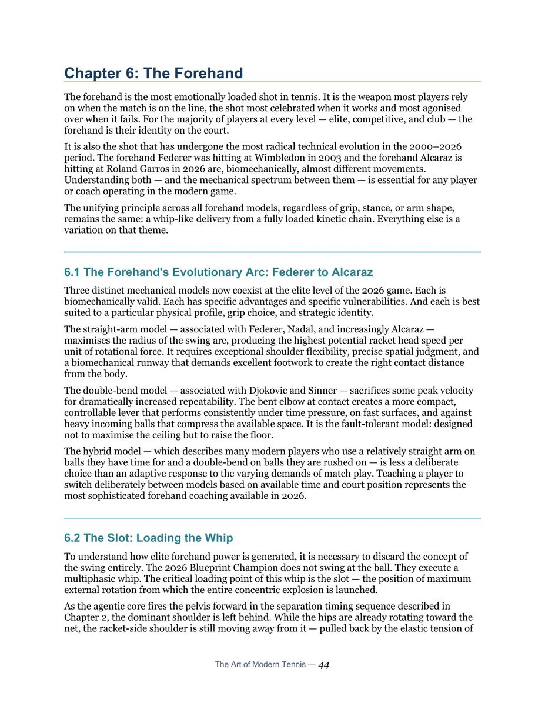
Hình 5: Sinh cơ học cú thuận tay hiện đại — Độ trễ cổ tay (Wrist Lag), đầu cán vợt dẫn hướng (Butt Cap Lead) và tốc độ xoáy RPM cực đại.
Figure 5: Modern Forehand Biomechanics — Wrist lag, butt cap lead, and high RPM topspin generation.
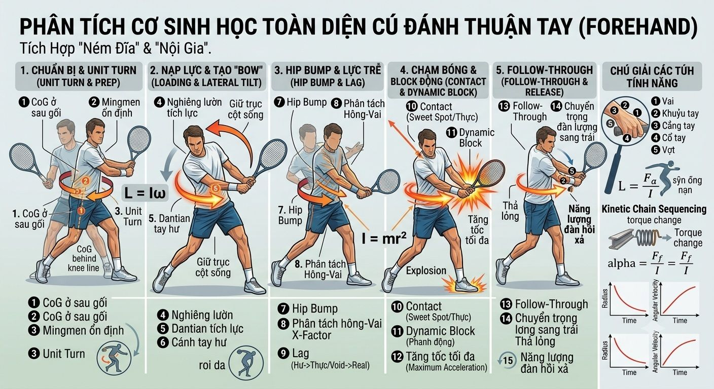
Hình 5.2: Cơ chế phát lực thuận tay từ đan điền trọng tâm — Giải phóng năng lượng xoay mượt mà tựa cú ném đĩa Frisbee.
Figure 5.2: Rotational Forehand Drive Mechanism — Smooth core release analogous to frisbee throw biomechanics.
Phần III: Cú Trái Tay Đỉnh Cao, Kỹ Thuật Lưới & Cắt Slice Đa Biến
Cú Trái Tay Đỉnh Cao: Sức Mạnh Hai Tay & Sự Tinh Tế Cổ Điển Một Tay The Backhand: Modern Two-Handed Drive & Classical One-Handed Elegance
cú đánh tiếp theo mang tính chiến thuật rõ ràng nhất không được sử dụng. Nếu tỷ lệ phần trăm bên trong dữ liệu đối sánh của bạn thấp, hãy dành riêng một khối huấn luyện cho nó trong các điều kiện mẫu. Khi huấn luyện cú thuận tay của tay vợt, hãy sử dụng Ma trận chẩn đoán kỹ thuật trong phần 6.10 làm công cụ phân tích đường chuyền đầu tiên của bạn trước khi đưa ra bất kỳ gợi ý kỹ thuật nào. Một tay vợt có biểu hiện nén tiếp xúc cần động tác bằng chân chứ không phải hướng dẫn bằng tay. Tay vợt đang trang bị vũ khí cần thực hiện công việc sắp xếp cốt lõi chứ không phải hướng dẫn theo dõi. Khái niệm về khả năng chịu lỗi đặc biệt quan trọng đối với những tay vợt chuẩn bị cho các bề mặt nhanh hoặc có bề mặt nặng. Xây dựng các lần lặp lại động tác uốn cong đôi trong mỗi phiên như một biện pháp dự phòng rõ ràng - không phải là sự thay thế cho mô hình ưa thích của tay vợt mà là một sự thay thế được đào tạo về tốc độ và áp lực của trận đấu. Mục tiêu là một cú thuận tay với hai thiết bị đáng tin cậy: mô hình đầy đủ khi thời gian cho phép, dự phòng nhỏ gọn khi không. Đối với lớp thần kinh: các phiên thiết kế bắt đầu với áp suất bằng 0 và dần dần giới thiệu các cổ phần cạnh tranh trong khi theo dõi âm thanh tiếp xúc. Khi âm thanh chuyển từ vang sâu sang trầm, tay vợt đã rời khỏi Mushin. Đặt tên cho nó mà không chỉ trích, đặt lại và quay trở lại áp suất thấp hơn trước khi xây dựng lại. Tay vợt học cách tự nhận biết sự thay đổi âm thanh sẽ có công cụ tự huấn luyện mạnh mẽ nhất trong trò chơi. : Cú trái tay Cú trái tay chiếm một không gian tâm lý khác với cú thuận tay trong hầu hết mọi trận đấu của tay vợt. Đối với hầu hết tay vợt, đó là cánh phụ - phía họ phòng thủ, phía đối thủ nhắm tới, cú sút mà họ ít tin tưởng hơn khi chịu áp lực. Thực tế tâm lý này định hình cách nó được huấn luyện, cách nó được huấn luyện và cách nó hoạt động khi điểm số quan trọng nhất. Tuy nhiên, bức tranh kỹ thuật lại kể một câu chuyện khác. Cú đánh trái tay bằng hai tay hiện đại - khi được thực hiện chính xác - không phải là một cú đánh phòng thủ. Nó là một vũ khí tấn công có khả năng chịu lỗi đặc biệt, có khả năng tạo ra quả bóng nặng, tốc độ RPM cao tương tự như cú thuận tay từ nhiều vị trí hơn và có cửa sổ tiếp xúc dễ tha thứ hơn. Và cú đánh trái tay bằng một tay hiện đại, mặc dù tần suất giảm dần ở cấp độ ưu tú, vẫn là một trong những cú đánh đẹp về mặt kỹ thuật và đa dạng về mặt chiến thuật trong trò chơi.
Để hiểu cả hai đòi hỏi phải tách cơ chế sinh học ra khỏi tâm lý học. Cơ chế đánh trái tay rất phù hợp với trận đấu năm 2026. Chính niềm tin của tay vợt về trái tay của họ thường xuyên hạn chế nó nhất. 7.1 Tay vợt hai tay: Cuộc cách mạng thuận tay đôi Sự thống trị của trái tay bằng hai tay trong trận đấu năm 2026 không phải là sự ngẫu nhiên của thời trang hay quy ước huấn luyện. Đó là kết quả hợp lý của quá trình phát triển của trò chơi theo hướng tốc độ cực cao, độ xoáy mạnh và điểm tiếp xúc cao. Chống lại cú thuận tay tạo ra 4.000 vòng/phút nảy cao hơn vai, tay vợt hai tay mang lại những lợi thế về cấu trúc mà tay vợt một tay về mặt vật lý không thể sánh được ở độ cao tiếp xúc đó. Ưu điểm đầu tiên là sự ổn định. Hai tay cầm vợt tạo ra một hệ động học khép kín tại điểm tiếp xúc - cả hai tay góp phần làm giảm tốc độ của quả bóng tới và chuyển hướng lực của nó. Trước một cú thuận tay xoáy lên với tốc độ 150 km/h đến phía trên vai, hệ thống khép kín này có thể hấp thụ và chuyển hướng tốc độ tới mà không làm sập điểm tiếp xúc. Người sử dụng một tay, với một cánh tay duy nhất quản lý cùng một lực ở cùng độ cao, đòi hỏi thời gian và sức mạnh đặc biệt để duy trì tính toàn vẹn tiếp xúc mà người sử dụng hai tay đạt được về mặt cấu trúc. Ưu điểm thứ hai là khoảng cách liên lạc linh hoạt. Vì hai tay chia sẻ tải trọng nên tay vợt hai tay có thể tạo ra một cú đánh chất lượng từ một điểm tiếp xúc gần cơ thể hơn so với yêu cầu của tay vợt một tay. Khoảng cách tiếp xúc ngắn hơn này chính xác là điều mà tốc độ của trò chơi năm 2026 yêu cầu — tay vợt không phải lúc nào cũng có thời gian hoặc không gian để tạo ra hình học lý tưởng bằng một tay và khả năng chịu đựng của tay vợt bằng hai tay đối với các vị trí tiếp xúc chặt chẽ hơn là lợi thế cạnh tranh cơ bản trên các bề mặt nhanh và chống lại các người giao bóng nặng. Ưu điểm thứ ba và cũng là lợi thế mà hầu hết các huấn luyện viên không tận dụng hết là tốc độ phục hồi. Thế đứng mở hoặc bán mở mà tay vợt thuận hai tay tạo điều kiện một cách tự nhiên - với hai bàn chân hướng về phía sân thay vì bắt chéo qua sân trong tư thế đóng - cho phép phục hồi ngay lập tức sau cú đánh mà không cần thoát ra khỏi tư thế đóng. Trong trò chơi chuyển tiếp xác định quần vợt ưu tú năm 2026, tốc độ phục hồi này kết hợp với nhau trong mỗi cuộc biểu diễn. Các hình mẫu xác định cho tay vợt hai tay hiện đại là Djokovic, Sinner và Zverev. Cú thu gọn và xoay vòng bùng nổ của Djokovic đã thiết lập khuôn mẫu cơ bản. Sinner đã cải tiến điều này có lẽ thành cách thể hiện thuần túy nhất của nguyên tắc thuận tay đôi hiện đang được lưu diễn - một cú trái tay tiếp xúc với thời gian chính xác và lực tác động của cánh tay không thuận đến mức nó luôn tạo ra những quả bóng nặng như cú thuận tay của anh ấy. Zverev bổ sung thêm chiều cao điểm tiếp xúc đặc biệt, xử lý những quả bóng cao ngang vai bằng hai tay mà hầu hết tay vợt sẽ cắt một cách phòng thủ.
7.2 Nguyên tắc Thuận tay trái Hiểu biết sâu sắc về kỹ thuật quan trọng nhất đối với trái tay bằng hai tay - và là nguyên tắc thường xuyên vắng mặt nhất trong quá trình huấn luyện ở mọi cấp độ - là đây: tay không thuận là động cơ. Không phải là hướng dẫn. Không phải chất ổn định. Động cơ. Đối với tay vợt thuận tay phải, cú trái tay bằng hai tay về cơ bản là cú thuận tay trái. Tay trái dẫn vợt qua vùng tiếp xúc. Vai trái xoay về phía trước. Phía bên trái của lõi thư giãn. Tay phải hiện diện nhưng vai trò của nó chỉ là thứ yếu - nó duy trì độ bám, cung cấp thêm sự ổn định và góp phần vào sự tiếp xúc cuối cùng, nhưng nó không bắt đầu hoặc điều khiển cú đánh. Khi tay phải chiếm ưu thế - giống như trong phần lớn các lỗi sử dụng hai tay ở cấp câu lạc bộ và một tỷ lệ đáng kể ở cấp độ thi đấu - cú đánh sẽ mất đi nguồn năng lượng chính. Chuyển động tự nhiên của tay phải ở phía trái tay là động tác đẩy tạo ra một đường bóng yếu, phẳng, không có hướng. Các huấn luyện viên mô tả kết quả này là "tệ hại" - bóng bật ra khỏi dây với tốc độ nhưng không có trọng lượng, ngồi xổm cho đối phương thay vì xuyên qua sân. Lỗi không mang tính kỹ thuật theo nghĩa thông thường. Cách cầm vợt, tư thế đứng và đường swing đều có thể trông chính xác. Vấn đề là tay sai đang điều khiển chuyển động. Việc điều chỉnh hành vi tham gia quá tay chiếm ưu thế không thể đạt được chỉ bằng cách hướng dẫn bằng lời nói. Tay vợt phải cảm nhận được sự khác biệt - cụ thể là họ phải cảm nhận được cú đánh tạo ra điều gì khi tay không thuận là người điều khiển duy nhất. Bài tập thuận tay trái được mô tả ở phần 7.8 tạo ra cảm giác này một cách trực tiếp và không thể thay thế được. 7.3 Tay vợt một tay: Kết hợp hiện đại cổ điển Tần suất chơi trái tay một tay ở cấp độ ưu tú đã giảm đều đặn kể từ năm 2000 và lý do là về mặt cơ sinh học: tay vợt hai tay xử lý những quả bóng cao, tốc độ nặng và áp lực thời gian hiệu quả hơn trong trò chơi năm 2026. Nhưng tay vợt một tay vẫn chưa biến mất và những tay vợt vẫn sử dụng nó - di sản của Federer, Musetti, Tsitsipas, Dimitrov - đã điều chỉnh nó để tồn tại trong một trò chơi mà nó không được thiết kế ban đầu. Cơ chế cơ bản của người tập một tay dựa trên hai yêu cầu về cấu trúc không có gì tương đương ở người tập hai tay: lực rút xương bả vai và cánh tay đối trọng. Rút xương bả vai là sự kéo về phía sau của xương bả vai ở phía không thuận trong quá trình vung vợt sau. Khi tay đánh chuẩn bị vung về phía trước, tay không thuận sẽ kéo mạnh về phía sau - không phải là hệ quả thụ động của chuyển động quay mà là một đối trọng chủ động giúp duy trì hướng chéo của đường vai và cho phép cánh tay đánh vung qua trên một con đường sạch sẽ, không bị cản trở. Nếu không có sự rút lui thích hợp của xương bả vai, vai đánh sẽ đóng quá sớm, đường xoay bị xẹp và người đánh bằng một tay mất cả độ sâu và hướng. Cánh tay đối trọng có vai trò của cánh tay không thuận như một vật dằn giữ cho chuyển động quay của cơ thể được cân bằng và được kiểm soát thông qua vùng tiếp xúc. Hãy quan sát bất kỳ tay vợt thuận tay nào trong chuyển động chậm: khi cánh tay đánh tăng tốc về phía bóng, cánh tay không thuận sẽ lùi lại với năng lượng bằng nhau theo hướng ngược lại. Hai chuyển động diễn ra đồng thời và khớp nhau. Bỏ lực kéo đối trọng và thân máy mất trục quay, kéo điểm tiếp xúc ra khỏi đường thẳng. Việc điều chỉnh đường xoay theo chiều dọc là câu trả lời của tay vợt bằng một tay cho vấn đề bóng cao năm 2026. Cơ chế một tay cổ điển - đường xoay dài, tuyến tính xuyên qua quả bóng ở độ cao thắt lưng - không thể xử lý những quả bóng cao ngang vai mà không yêu cầu tay vợt lùi lại đủ xa để thả điểm tiếp xúc xuống độ cao có thể quản lý được. Trong trò chơi hiện đại, việc rút lui đó không phải lúc nào cũng có sẵn. Giải pháp phù hợp là đường vung vợt dốc hơn, thẳng đứng hơn, cho phép tiếp xúc ở các vị trí bóng cao hơn trong khi vẫn duy trì góc mặt vợt phù hợp và hỗ trợ xương bả vai. Musetti và Tsitsipas đều đã phát triển con đường thẳng đứng này đến mức cho phép họ tấn công những quả bóng cao ngang vai bằng một tay thay vì phòng thủ bằng một lát cắt. Ưu điểm chiến thuật của tay vợt một tay so với tay vợt hai tay trong trò chơi năm 2026 tập trung ở ba lĩnh vực: tích hợp lát cắt - cách cầm và chuẩn bị giống nhau có thể tạo ra cả đòn đánh và đòn tấn công, tạo ra sự ngụy trang mà tay vợt hai tay không thể sánh được; tính linh hoạt của trò chơi trên lưới - quá trình chuyển đổi cách cầm vợt kiểu lục địa từ trái tay một tay sang cú bắt lưới (Volley) diễn ra liền mạch, khiến tay vợt một tay phù hợp hơn với trò chơi trên mạng một cách tự nhiên hơn; và hình dạng xoay đa dạng - tay vợt một tay có thể tạo ra xoáy lên nặng, các cú công bóng phẳng và các lát cắt từ những sự chuẩn bị tương tự về mặt hình ảnh, tạo ra các vấn đề về dự đoán cho đối thủ mà cơ chế đồng đều hơn của tay vợt hai tay không thể tái tạo được. 7.4 Làm chủ bóng cao: Sự thích ứng năm 2026 Thử thách kỹ thuật xác định của trái tay hiện đại - cho cả người thuận tay và người thuận tay hai tay - là bóng cao ngang vai. Vì tốc độ xoáy thuận tay đã tăng từ 2.000 vòng/phút lên 4.500 vòng/phút trong giai đoạn 2000–2026, độ cao bóng tiêu chuẩn mà tại đó cú trái tay phải được đánh cũng tăng tương ứng. Tay vợt chỉ có thể tạo ra những quả bóng trái tay chất lượng ở độ cao ngang lưng sẽ có thể bị bất kỳ đối thủ nào có cú thuận tay xoáy lên hiện đại khai thác về mặt chiến thuật. Đối với tay vợt hai tay, bóng cao ngang vai cần có ba lần điều chỉnh từ cơ chế tiêu chuẩn. Lượt chơi của đơn vị phải sớm hơn và đầy đủ hơn - không có thời gian chuẩn bị sau khi bóng đã nổi lên. Điểm liên hệ phải được tích cực tìm kiếm ở mức cao hơn thay vì chờ đợi - tay vợt phải di chuyển theo quỹ đạo bay lên của bóng, không được rút lui khỏi quỹ đạo đó. Và lực đẩy của tay không thuận phải được duy trì qua vùng tiếp xúc cao hơn - bản năng khi bóng ở trên vai là đẩy bằng tay thuận, điều này tạo ra kết quả chính xác là nhẹ nhàng, không có chiều sâu được mô tả trong phần 7.2. Tay không thuận lái lên trên và xuyên qua, cú dứt điểm bằng dây kéo dài theo chiều dọc thay vì ngang ngực, và kết quả là một quả bóng nặng, có độ tiếp xúc cao phù hợp với tốc độ của đối thủ chứ không bị áp đảo. Đối với tay vợt một tay, bóng cao ngang vai là một thử thách cơ bản hơn đòi hỏi phải điều chỉnh đường xoay theo chiều dọc được mô tả trong phần 7.3. Việc xoay đơn vị sớm thậm chí còn quan trọng hơn so với người đánh bằng hai tay - người đánh một tay có khoảng thời gian hẹp hơn từ khi chuẩn bị đến khi tiếp xúc và bất kỳ độ trễ nào trong việc xoay vai sẽ khiến cho việc tiếp xúc bóng cao chất lượng cao về mặt hình học là không thể. Việc rút xương bả vai phải được bắt đầu sớm hơn và cánh tay đối trọng phải duy trì hoạt động ở mức cao hơn khi xoay người so với yêu cầu của cơ học về chiều cao ngang lưng tiêu chuẩn. Cả hai giải pháp đều có chung một yêu cầu cơ bản: tay vợt phải ngừng rút lui khỏi những quả bóng cao và bắt đầu di chuyển vào chúng. Bản năng tâm lý – lùi lại, nhường bóng, đưa bóng lên cao hơn – là sự thua cuộc về mặt chiến thuật. Mỗi lần rút lui khỏi một quả bóng cao sẽ mang lại cho đối thủ nhiều thời gian hơn, nhiều vị trí trên sân hơn và tự tin hơn rằng kiểu thuận tay xoáy lên của họ đang phát huy tác dụng. Di chuyển vào bóng cao, tấn công ở đỉnh cao hoặc khi đang dâng cao, vừa là cách tiếp cận đúng về mặt kỹ thuật vừa là cách chiếm ưu thế về mặt chiến thuật. 7.5 Tiến hóa trái tay: 2000–2026 Tính năng 2000–2010 2020–2026 Phong cách chiếm ưu thế Một tay vẫn phổ biến ở cấp độ ưu tú Tay hai tay chiếm ưu thế áp đảo Chiều cao tiếp xúc Tiêu chuẩn eo đến ngực Thói quen ngực kề vai Thế đứng chính Đóng — bước chéo và bước vào Bán mở và mở Vai trò không chiếm ưu thế (Hai tay) Ổn định tay phụ Động cơ lái chính Đường xoay bóng bằng một tay Dài, tuyến tính xuyên qua bóng Thích ứng theo chiều dọc vững chắc hơn cho bóng cao Chiến lược bóng cao Rút lui và cắt lát phòng thủ Tấn công ở độ cao cao nhất - đánh bóng hoặc xoáy lên
Tính năng 2000–2010 2020–2026 Tốc độ phục hồi Chậm hơn - thế đứng đóng yêu cầu tháo cuộn Nhanh hơn - thế đứng mở được đặt trước Dung sai lỗi Thấp hơn - yêu cầu độ chính xác bằng một tay Cao hơn - cửa sổ nhỏ gọn bằng hai tay 7.6 Trò chơi tinh thần: Trung hòa dưới áp lực Thử thách tâm lý của trái tay là hầu hết tay vợt đã nội hóa nó như cú đánh phụ của họ - phía mà họ phòng thủ, cánh đối thủ nhắm tới khi họ muốn phạm lỗi. Điều này không nhất thiết phải chính xác. Tuy nhiên, nó đã ăn sâu vào tâm trí hầu hết tay vợt qua nhiều năm kinh nghiệm thi đấu trong đó bên trái được khai thác. Việc chuyển cú đánh trái tay từ bản năng phòng thủ sang một công cụ tấn công đòi hỏi phải tái định hình tinh thần và phải được hỗ trợ - không chỉ được đề xuất. Tay vợt được yêu cầu trái tay của họ phải hung hãn nhưng đã dành 5 năm chơi phòng thủ sẽ không thay đổi chỉ thông qua hướng dẫn. Họ cần thành công trong cạnh tranh ở phía trái tay - giành được điểm chứ không chỉ những cú đánh trúng đích - để xây dựng lại mối liên hệ thần kinh giữa cú đánh trái tay và tính hiệu quả. Tư duy trung hòa là điểm khởi đầu thực tế của hầu hết tay vợt. Thay vì đòi hỏi sự tấn công trái tay ngay lập tức, cách tiếp cận vô hiệu hóa sử dụng trái tay để thiết lập lại cú đánh bóng từ vị trí bị áp lực và tạo ra các cơ hội thuận tay. Một cú trái tay chéo sân sâu, nặng, chạm tới hai mét bên trong đường cuối sân và khiến đối phương lùi lại không phải là một cú đánh thụ động - đó là một sự thiết lập lại chiến thuật giúp tay vợt trở lại thế cân bằng và mở ra quả bóng tiếp theo cho cú thuận tay. Sự trung hòa không mang tính phòng thủ. Đó là sự kiên nhẫn chiến lược. Việc chuyển từ trung hòa sang tấn công trái tay trực tiếp phải được kích hoạt bởi các điều kiện cụ thể: đối phương ở ngoài vị trí, bóng đủ ngắn để tấn công hoặc động lực tập bóng đã tạo ra một cơ hội rõ ràng ở đường biên. Những khoảnh khắc này đòi hỏi sự nhận biết - khả năng đọc khi có cơ hội trái tay - là một kỹ năng có thể huấn luyện được xây dựng thông qua các bài tập mẫu tạo ra các điều kiện đó lặp đi lặp lại cho đến khi việc nhận dạng trở nên tự động. Tay vợt có cả hai công cụ - trung lập và hung hãn - sẽ trở nên khó đoán ở phía trái tay. Đối thủ không thể áp dụng chiến lược khai thác trái tay khi họ không biết liệu bất kỳ trái tay nào sẽ được thiết lập lại hoặc bị tấn công.
7.7 Các kiểu chơi trái tay Kiểm soát cú đánh trái tay chéo sân là mẫu cơ bản - tương đương với trái tay của quả bóng nặng chéo sân thuận tay. Một cú đánh trái tay chéo sân sâu và nặng tới góc trái tay của đối phương sẽ duy trì khả năng kiểm soát đường bóng, ngăn cản đối phương chạy vòng qua trái tay của họ về phía thuận tay và tạo áp lực thông qua độ sâu và trọng lượng hơn là tốc độ. Đây là cú đánh giành chiến thắng trong hầu hết các pha đánh bóng trái tay - không phải là cú đánh dọc biên ngoạn mục, mà là cú đánh chéo sân nặng nề, không ngừng nghỉ, khiến mắc lỗi hoặc bóng ngắn. Cú trái tay dọc biên là cú trái tay có độ chính xác cao nhất, mang lại phần thưởng cao nhất trong trò chơi. Khi thực hiện chính xác - chuẩn bị sớm, xoay toàn bộ đơn vị, duy trì lực rút xương bả vai - nó tạo ra sự dịch chuyển hình học lớn nhất so với bất kỳ kiểu đánh trái tay nào, di chuyển đối thủ từ góc này sang góc khác của sân chỉ trong một cú đánh. Rủi ro của nó tương ứng cao. Cú đánh trái tay dọc biên nên được triển khai khi đối thủ đã thực hiện theo hướng chéo sân, khi hình dạng của sân rõ ràng là thuận lợi hoặc khi động lực đánh bóng đã được thiết lập có chủ ý để tạo ra sơ hở ở đường dọc thông qua công việc chéo sân trước đó. Chuyển hướng trái tay khỏi thuận tay là cách phá vỡ mô hình mà những tay vợt ưu tú sử dụng khi đối thủ đã xây dựng một cú đánh thuận tay chéo sân và mong đợi một phản ứng thuận tay. Khi cú thuận tay của đối phương đi chéo sân về phía trái tay, tay vợt - thay vì chạy vòng về phía thuận tay - bước vào phía trái tay và chuyển hướng bóng ngược chiều ngang sang phía trái tay của đối phương. Sự bất ngờ về mặt hình học là rất đáng kể: đối thủ vừa đánh chéo sân và đang di chuyển để che chắn theo hướng ngược lại. Cú chuyển hướng trái tay tiếp đất phía sau họ. Cách tiếp cận trái tay sử dụng một cú đánh sâu hoặc một cú đánh trái tay theo hướng phẳng để đưa bóng vào lưới. Cách tiếp cận lát cắt có lợi thế về mặt chiến thuật là ở vị trí thấp, buộc đối phương phải đánh lên từ điểm tiếp xúc thấp và tạo ra đường chuyền phòng thủ mà tay vợt lưới có thể xử lý thoải mái. Phương pháp đánh lái có rủi ro cao hơn nhưng có thể được sử dụng để chống lại những đối thủ phản ứng chậm với các cú đánh tiếp cận - tốc độ của phương pháp đánh lái làm giảm thời gian hồi phục của họ. 7.8 Khắc phục sự cố và luyện tập Tay phải đẩy (Người dùng hai tay) là lỗi phổ biến nhất của người dùng hai tay ở mọi cấp độ. Chẩn đoán là âm thanh: người dùng hai tay thuận, đẩy mạnh tạo ra một tiếp xúc mỏng, phẳng và không có cộng hưởng. Cách sửa là bài tập thuận tay trái - tay vợt đánh mười quả bóng chỉ bằng tay không thuận, hoàn toàn không dùng tay thuận trên vợt. Việc khoan ban đầu không thoải mái và tạo ra kết quả thất thường. Sau 20 đến 30 lần lặp lại, tay không thuận sẽ xây dựng đủ nhận thức về bản thể về vai trò điều khiển của nó để việc đưa tay không thuận vào hoạt động trở lại sau đó.
tay thuận tạo ra một quả bóng nặng hơn có thể đo được. Bắt đầu mỗi buổi tập trái tay với năm phút thực hiện thuận tay trái trước khi quay lại sử dụng hoàn toàn bằng hai tay. Cú đánh muộn (Một tay) xảy ra khi đầu vợt không thể xuống dưới bóng trước khi tiếp xúc, tạo ra một quả bóng phẳng, nổi khiến đối phương ngồi thẳng lên thay vì cắn và trượt. Sự điều chỉnh là thời gian xoay đơn vị - cú cắt không thành công do quá trình chuẩn bị quá muộn để đầu vợt tìm được đường đi từ cao xuống thấp chính xác trước khi bóng đến. Cách khắc phục là sự chuẩn bị sớm hơn chứ không phải là một đường swing khác. Phản hồi video cho thấy mối quan hệ giữa thời điểm xoay đơn vị và vị trí đầu vợt khi tiếp xúc là công cụ chẩn đoán hiệu quả nhất cho lỗi này. Thất bại về khoảng trống ở hông tương đương với lỗi lắc lư được mô tả ở Chương 2. Khi hông không rõ ràng - khi chúng ngừng quay trước khi cánh tay vung qua - thì cánh tay bị kẹt vào cơ thể và tốc độ đầu vợt giảm đáng kể. Tay vợt cảm thấy đây là sự mất điện mà không có nguyên nhân kỹ thuật rõ ràng. Việc điều chỉnh là bài tập tập trung giải phóng hông: đánh mười cú đánh trái tay, tập trung hoàn toàn vào cảm giác hông phía trước kéo lại khi vợt vung qua. Phóng đại khoảng hở hông cho đến khi cảm thấy quá mức - ở mức độ phóng đại đó, khoảng hở thực tế có thể đúng. Máy khoan thuận tay trái loại bỏ hoàn toàn tay thuận và xây dựng lại chức năng điều khiển của tay không thuận từ đầu. Chỉ sử dụng cánh tay không thuận, tay vợt thực hiện một cú xoay trái tay hoàn toàn - xoay đơn vị, tiếp xúc và theo sau - bằng một quả bóng xốp hoặc một quả bóng có trọng lượng nặng để ngăn tốc độ che đi điểm yếu của cánh tay. Ba bộ mười lần lặp lại khi bắt đầu mỗi buổi tập trái tay. Khi tay không thuận mạnh lên và vai trò của nó trở nên rõ ràng về mặt cảm nhận, hãy giảm xuống liều duy trì là 5 lần lặp lại trước khi đánh trực tiếp. Máy khoan tải điểm cao là bắt buộc đối với bất kỳ tay vợt cạnh tranh nào trong trò chơi 2026. Sử dụng máy bóng hoặc huấn luyện viên cho ăn ở độ cao ngang vai nhất quán, tay vợt chỉ đánh từ độ cao trên vai trong mười lăm phút - không có bóng cao ngang thắt lưng hoặc cao ngang ngực. Cuộc diễn tập buộc phải thực hiện các điều chỉnh kỹ thuật được mô tả trong phần 7.4: quay đơn vị sớm hơn, chủ động tìm kiếm điểm tiếp xúc, duy trì động lực không chiếm ưu thế ở các vị trí cao hơn. Sau phiên đấu đạt điểm cao, những quả bóng có chiều cao tiêu chuẩn có vẻ dễ dàng hơn khi so sánh. Kết hợp bài tập tải trọng điểm cao vào mỗi tuần tập luyện. Máy khoan mẫu dọc dòng tạo ra điều kiện áp lực cụ thể mà cú đánh trái tay dọc theo yêu cầu. Huấn luyện viên đưa bóng chéo sân vào góc trái tay. Tay vợt phải chuyển hướng xuống dòng. Nguồn cấp dữ liệu chéo sân được thiết kế để mô phỏng động lực đánh bóng chính xác tạo ra các cơ hội ở đường biên - nặng, sâu, đến góc trái tay. Năm lần chuyển hướng xuống dòng thành công liên tiếp trước khi tiếp tục. Yêu cầu về độ chính xác của bài tập này khi lặp đi lặp lại sẽ tạo ra độ tin cậy của cú đánh nhanh hơn bất kỳ số lần đánh không đo lường nào.
Ở cấp độ của bạn, cơ chế đánh trái tay đã được thiết lập. Lợi thế phát triển dành cho bạn nằm ở hai lĩnh vực: tấn công bóng cao và độ tin cậy ở tuyến dưới. Với bóng cao: kiểm tra dữ liệu của bạn về hiệu suất trái tay chéo sân ở trên và dưới chiều cao ngực một cách riêng biệt. Hầu hết những tay vợt ưu tú đều thể hiện sự giảm chất lượng có thể đo lường được trên chiều cao ngực mà không có ở phía thuận tay. Nếu số liệu thống kê về trái tay bóng cao của bạn yếu hơn đáng kể so với trái tay có chiều cao tiêu chuẩn của bạn, thì bài tập tải điểm cao xứng đáng có một khối huấn luyện chuyên dụng - hai tuần tập trái tay với ít nhất một nửa bài tập ở độ cao ngang vai. Sự cải thiện sẽ nhanh chóng kết hợp khi mô hình thần kinh điều chỉnh. Ở tuyến dưới: có bao nhiêu cú đánh trái tay ở tuyến dưới của bạn được thực hiện theo mô hình - được thực hiện tại thời điểm đã lên kế hoạch theo trình tự được thiết kế trước - so với phản ứng - đánh khi cơ hội xuất hiện bất ngờ? Phương pháp tiếp theo theo mô hình có tỷ lệ thành công cao hơn đáng kể vì cả việc chuẩn bị và thời gian đều được dự đoán trước. Xây dựng cú đánh trái tay dọc biên của bạn dưới dạng cú đánh thứ ba trong chuỗi ba cú đánh được thiết kế sẵn: chéo sân để đẩy chúng ra rộng, chéo sân một lần nữa để cố định hướng mong đợi, sau đó thực hiện cú đánh dọc biên khi phá vỡ mô hình. Khi huấn luyện trái tay bằng hai tay, tay không thuận là mục tiêu huấn luyện chính của bạn, không phải tay thuận. Hầu hết các hướng dẫn kỹ thuật đều hướng vào tay thuận - "đánh qua bóng", "theo đuổi cao hơn", "xoay vai của bạn nhiều hơn" - tốt nhất sẽ tạo ra những cải tiến nhỏ vì chúng đang giải quyết vấn đề của người điều khiển phụ. Hướng dẫn tương tự hướng vào phía không thuận - "đánh lái bằng cánh tay trái", "kéo khuỷu tay trái của bạn qua", "kết thúc bằng vai trái hướng vào lưới" - truy cập vào trình điều khiển chính và tạo ra nhiều cải tiến tức thì và lâu bền hơn. Bài tập thuận tay trái là công cụ huấn luyện mạnh mẽ nhất dành cho tay vợt hai tay. Đây cũng là cách mà hầu hết các huấn luyện viên ngần ngại sử dụng vì ban đầu nó gây ra lỗi. Kiên trì vượt qua sự khó chịu ban đầu. Quá trình học tập cảm thụ bản thể xảy ra trong mười phút đầu tiên của việc đánh bằng tay thuận không thể được sao chép bằng bất kỳ hướng dẫn bằng lời nói nào và nó sẽ được chuyển sang toàn bộ người đánh bằng hai tay ngay lập tức. Đối với các lỗi giải phóng hông, hãy sử dụng điểm đánh dấu vật lý: đặt một hình nón hoặc một quả bóng ngay sau hông trước của tay vợt tại địa chỉ. Khi họ vượt qua, hông của họ phải vượt qua điểm đánh dấu. Tham chiếu bên ngoài làm cho khoảng trống cụ thể và tự điều chỉnh ngay lập tức mà không cần đến
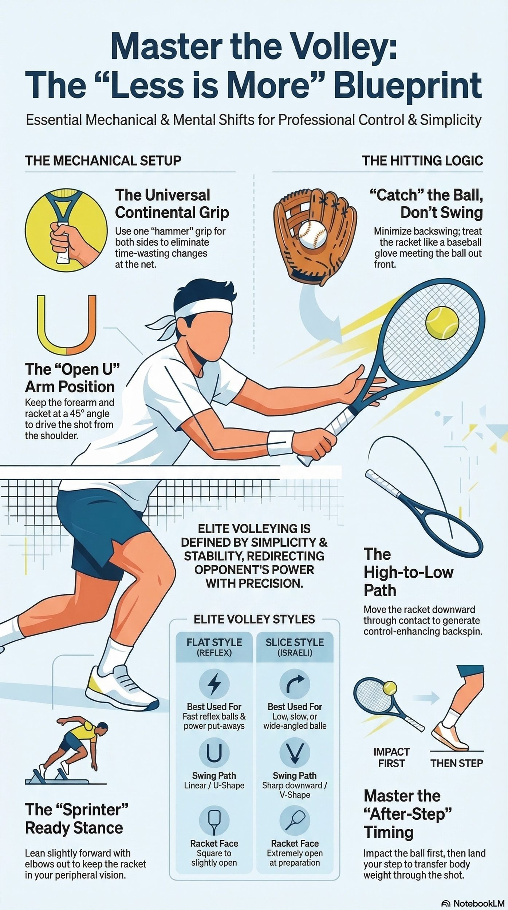
Hình 6: So sánh sinh cơ học cú trái hai tay và một tay — Ưu thế phát lực tay không thuận so với sự giải phóng góc mở của cú trái một tay.
Figure 6: One-Handed vs Two-Handed Backhand Biomechanics — Non-dominant drive advantage versus linear shoulder release.
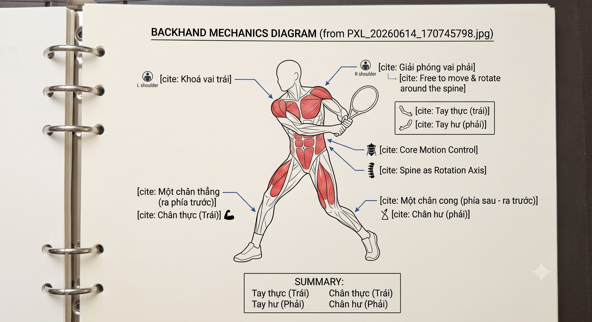
Hình 6.2: Động lực học cú trái tay hiện đại — Kiểm soát mặt vợt và truyền lực từ chân trước lên chuỗi động học.
Figure 6.2: Modern Backhand Mechanics — Racket face stabilization and linear-to-rotational force transfer.
Lối Chơi Trên Lưới, Kỹ Năng Bắt Vô-Lê & Phản Xạ Đè Bóng Net Play, Volley Mechanics & Reflex Control
tay vợt hiểu được cơ chế sinh học cơ bản. Khi mô hình giải phóng mặt bằng hông được thiết lập thông qua điểm đánh dấu, hãy xóa nó và yêu cầu tay vợt tái tạo cảm giác. Đối với huấn luyện trái tay bằng một tay, việc rút xương bả vai là chẩn đoán chính của bạn. Đứng phía sau tay vợt và quan sát xương bả vai không thuận: nó sẽ kéo về phía sau một cách rõ ràng khi cánh tay đánh vung về phía trước. Nếu cả hai bả vai di chuyển theo cùng một hướng, cơ chế đối trọng đã thất bại và cú đánh sẽ thiếu độ sâu bất kể đường vung vợt trông đẹp như thế nào. Chỉnh sửa tình trạng rút xương bả vai trước khi giải quyết bất kỳ vấn đề nào khác. : Chơi trên lưới & Cú bắt lưới (Volley) Có một phiên bản chơi trên lưới không còn tồn tại ở cấp độ ưu tú - kiểu giao bóng và vô lê của những năm 1990, trong đó tay vợt tiếp cận lưới như một chiến lược chiến thuật chính của họ trong mọi trận đấu giao bóng, sử dụng vị trí lưới để cắt các góc và điểm cuối trước khi chúng bắt đầu. Bề mặt trở nên chậm hơn, dây đàn hồi hơn, bóng nặng hơn và các cú vô-lê trở nên quá chính xác và quá nhanh để cú vô lê ở lần tiếp xúc đầu tiên trở thành vũ khí dứt điểm đáng tin cậy. Giao bóng và vô lê, như một chiến lược chính, đã bị loại bỏ do các điều kiện của trò chơi hiện đại. Những gì thay thế nó, theo nhiều cách, phức tạp hơn. Chơi trên lưới vào năm 2026 không phải là một chiến lược - nó là một hành động hoàn thiện. Tay vợt vào lưới đã giành được điểm ở lượt đánh trước đó. Cách tiếp cận nặng nề đã buộc phải trả lời phòng thủ. Cuộc tấn công lén lút đã được tính đến thời điểm giao bóng thứ hai yếu. Vùng chuyển tiếp đã được săn lùng hơn là tránh né. Vị trí lưới được xác nhận chứ không phải bị vấp ngã và tay vợt xác nhận vị trí đó đã làm như vậy vì hình dạng của điểm đã đưa ra quyết định chính xác - không phải vì đó là chiến thuật mặc định của họ. Alcaraz là mô hình xác định phương pháp hiện đại này. Lối chơi trên lưới của anh ấy mang tính thể thao, cơ hội và được thực hiện với sự tự tin bùng nổ giống như anh ấy áp dụng cho trận đấu cơ bản của mình. Anh ta không vào lưới một cách xin lỗi. Anh ta đến đó như một kết luận hợp lý về mô hình mà anh ta đã xây dựng và chất lượng thực hiện của anh ta trên lưới phản ánh thực tế rằng đó luôn là đích đến đã định. 8.1 Chơi ròng trong kỷ nguyên hiện đại: Kết thúc, không bắt đầu Trường hợp thống kê về việc chơi ròng vẫn hấp dẫn bất chấp sự phát triển của trò chơi theo hướng thống trị cơ bản. Những tay vợt ưu tú giành được khoảng bảy mươi đến bảy mươi lăm phần trăm số điểm khi họ vào lưới - một tỷ lệ vượt quá đáng kể tỷ lệ phần trăm giành được điểm cơ bản của họ. Câu hỏi chưa bao giờ là liệu mạng có thuận lợi hay không. Câu hỏi đặt ra làm thế nào để đến đó an toàn.
Câu trả lời mà trò chơi năm 2026 đưa ra là chất lượng chuẩn bị. Tay vợt chỉ tiếp cận lưới khi cú đánh trước đó đã tạo ra lợi thế hình học thực sự - một đòn trả lời phòng thủ chạm bóng ngắn, một cú giao bóng làm cản trở người trả bóng, một cú tiếp cận nặng nề khiến đối thủ phải sâu và rộng. Từ vị trí phòng thủ đó, các phương án đánh vô-lê của đối phương bị hạn chế, các góc sút bị giảm và tay vợt trên lưới có thời gian đọc và phản ứng. Cách tiếp cận có điều kiện này đối với việc chơi trên lưới về cơ bản khác với mô hình giao bóng và vô lê. Tay vợt giao bóng và vô lê vào lưới như một canh bạc có tính toán - chấp nhận rằng một số cú vô lê sẽ khó đổi lấy áp lực mà vị trí lưới tạo ra. Tay vợt ròng năm 2026 đến lưới khi canh bạc đã được giải quyết có lợi cho họ bằng cú đột phá trước khi tiếp cận. Hành động dứt điểm trên lưới là phần kết thúc của chuỗi chiến thuật, không phải là bước đi mạo hiểm đầu tiên trong đó. Ý nghĩa thực tế của việc huấn luyện là chất lượng cú sút tiếp cận quan trọng hơn kỹ thuật vô-lê trong việc quyết định thành công của trận đấu trên lưới. Một tay vợt có cú vô lê trung bình và những cú sút tiếp cận xuất sắc sẽ giành được nhiều điểm lưới hơn một tay vợt có những cú vô lê xuất sắc và những cú sút tiếp cận trung bình, bởi vì cú sút tiếp cận quyết định chất lượng của nỗ lực đánh vô-lê mà người vô lê phải thực hiện. Nguyên tắc trình tự này - tiếp cận trước, vô lê thứ hai - sẽ tổ chức cách huấn luyện và luyện tập lối chơi trên lưới. 8.2 Nguyên tắc kiểu cầm vợt lục địa và đòn bẩy ngắn Kiểu cầm kiểu lục địa là tiêu chuẩn phổ biến cho việc chơi trên lưới vì nó cho phép chuyển đổi tức thời giữa các cú vô lê thuận tay và trái tay mà không cần cầm lại. Trên lưới, tốc độ của bóng tới và tốc độ thay đổi vị trí khiến việc thay đổi độ bám là không thể. Một tay vợt sử dụng kiểu cầm vợt bán tây ở đường cuối sân và cố gắng thực hiện cú vô lê với nó sẽ thấy rằng cú vô lê thuận tay có thể xử lý được nhưng cú vô lê trái tay bị tổn hại về mặt cấu trúc - kiểu cầm vợt phù hợp với cú thuận tay xoáy lên ở độ cao ngang lưng tạo ra một quả bóng bị đẩy, yếu trong cú vô lê trái tay. Cách cầm vợt kiểu lục địa nằm ở điểm giữa hình học giữa thuận tay và trái tay, cho phép cả hai sử dụng cùng một vị trí tay. Đối với những tay vợt chuyển sang chơi trên mạng từ một trận đấu cơ bản mạnh, việc thay đổi cách cầm vợt thường là trở ngại kỹ thuật chính - không phải vì nó khó học mà vì nó đòi hỏi sự cam kết có chủ ý trong luyện tập trước khi nó trở thành tự động trong thi đấu. Nguyên lý đòn bẩy ngắn là tiêu chuẩn cơ sinh học cơ bản cho cú vô lê. Đầu vợt phải luôn ở trong hoặc gần tầm nhìn ngoại vi của tay vợt - cánh tay hầu như không duỗi ra, mặt vợt giữ yên và hướng về phía trước. Hình học nhỏ gọn này giao bóng hai mục đích. Đầu tiên, nó định vị vợt trên đường đi của bóng với chuyển động chuẩn bị tối thiểu, giảm yêu cầu về thời gian của cú vô lê xuống mức tối thiểu. Thứ hai, nó giúp loại bỏ hiện tượng rò rỉ năng lượng khi chuyển động cổ tay lớn - nguyên nhân chính gây ra lỗi vô lê khi thực hiện những cú vô-lê tốc độ cao. Vợt yên tĩnh là khái niệm cú bắt lưới (Volley) quan trọng nhất trong trò chơi hiện đại. Đối mặt với một cú đánh bóng tốc độ 120 km/h, không có thời gian để thực hiện cú xoay người. Hầu như không có thời gian cho một khối. Tay vợt giữ vợt yên và cổ tay vững chắc - đón bóng với mặt vợt đã ở đúng vị trí - sẽ chuyển hướng đường chuyền thành công. Tay vợt thực hiện cú backswing dù nhỏ đến đâu cũng sẽ bị trễ. Áp lực bám vào lưới chắc chắn hơn so với các cú đánh nền nhưng không chặt. Tốc độ của các cú vô-lê tới đòi hỏi phải có đủ độ chắc chắn để ngăn vợt bị bật ngược khi tiếp xúc, nhưng độ căng quá mức sẽ hạn chế khả năng thực hiện các điều chỉnh nhỏ của cổ tay mà vị trí cú bắt lưới (Volley) chính xác yêu cầu. Cảm giác phát triển là độ cứng được kiểm soát — một bàn tay cầm vợt một cách tự tin mà không cần bóp vợt. 8.3 Kết thúc hình chữ V và kiểm soát xoáy xuống Cú vô lê hiện đại không phải là một cú đấm. Nó không phải là một sự thúc đẩy. Đó là một cú chặn được kiểm soát với đường đi có góc hướng xuống qua vùng tiếp xúc - một chuyển động tạo ra xoáy xuống và giữ bóng ở mức thấp, buộc đối phương phải đánh lên trên từ vị trí phòng thủ. Bề mặt hoàn thiện hình chữ V mô tả đường đi của vợt qua cú vô lê: vợt di chuyển về phía trước và xuống dưới khi tiếp xúc, tạo ra một quỹ đạo đi xuống khắc sâu vào quả bóng. Vòng xoáy này có hai hậu quả về mặt chiến thuật. Bóng vẫn ở vị trí thấp hơn sau khi chạm đất, trượt qua mặt sân thay vì nảy lên trên và tạo cho đối phương một tầm cao tấn công thoải mái. Và quỹ đạo của bóng sau khi tiếp đất có xu hướng di chuyển ra xa đối thủ hơn là về phía họ, khiến việc thu hồi và nỗ lực đánh vô-lê sau đó trở nên khó khăn hơn. Cú dứt điểm hình chữ V là quan trọng nhất đối với những cú vô lê thấp - những quả bóng đến dưới độ cao của lưới mà tay vợt phải đánh lên trên để phá lưới. Khi thực hiện cú vô lê thấp, bản năng là hất bóng lên trên bằng chuyển động phẳng hoặc xoáy lên. Thực hiện đúng là sử dụng mặt góc hướng xuống để bắt mặt dưới của bóng và đưa bóng qua lưới bằng xoáy xuống, tạo ra một quả bóng đi qua lưới một khoảng nhỏ và ngay lập tức rơi vào ô giao bóng thay vì nổi. Cú vô lê thấp hướng lên trên tạo điều kiện thuận lợi cho đối thủ. Cú vô lê thấp chạm khắc, hạ xuống buộc họ phải ngã xuống. Chi phí chung tuân theo các cơ chế khác nhau nhưng có cùng nguyên tắc cam kết định hướng. Vợt phải tiếp bóng với mặt nghiêng về phía trước theo hướng dự định mục tiêu, không hướng lên trời. Tiếp xúc tốt ở phía trước cơ thể sẽ tạo ra góc về phía trước này và cho phép chuyển động xoay bên trong của cánh tay - cơ chế roi tương tự từ cú giao bóng - để tạo ra tốc độ mà không làm giảm độ chính xác. Lỗi đánh đầu phổ biến là tiếp xúc quá xa phía sau đầu, làm cho mặt vợt hướng lên trên và tạo ra một quả bóng chạm ra ngoài đường biên ngang thay vì vào sân. Đối với chi phí cao hơn trong trò chơi năm 2026, bước nhảy thẳng đứng bùng nổ là tiêu chuẩn thay vì tùy chọn. Đứng thẳng bằng cả hai chân trong khi cố gắng thực hiện cú ném bóng từ trên cao từ vị trí lốp bóng sâu sẽ đặt điểm tiếp xúc xuống dưới độ cao tối ưu và buộc tay vợt phải vươn tới và hướng lên trên - chính xác là sự thỏa hiệp cơ học tạo ra lỗi từ trên cao. Cú nhảy kiểu cắt kéo hoặc bước nổ đã được sửa đổi ở phía sau với cú đẩy thẳng đứng, đặt điểm tiếp xúc ở độ cao tối đa mà tay vợt có thể đạt được và cho phép xoay hoàn toàn bên trong để tạo ra chiến thắng trên cao. 8.4 Chiến thuật tiếp cận: Tiếp cận nặng nề và Tấn công lén lút Hai mô hình tiếp cận chính đã xác định cách chơi trên lưới trong trò chơi năm 2026 và chúng hoạt động theo các nguyên tắc trái ngược nhau - một bằng vũ lực, một bằng bất ngờ. Cách tiếp cận mạnh mẽ thúc đẩy một cú đánh nền có tốc độ RPM cao vào sâu trong phần sân đối phương - thường là đến góc trái tay - với tốc độ và độ xoáy vừa đủ để buộc phải trả lời ngắn gọn, phòng thủ. Bản thân cú đánh tiếp cận không nhằm mục đích giành điểm. Nó nhằm mục đích làm giảm chất lượng của quả bóng tiếp theo đến mức vị trí lưới trở nên an toàn để chiếm giữ. Một cú tiếp cận mạnh mẽ chạm đường biên trong vòng một mét và đá cao hơn vai tạo ra một cú đáp trả vừa ngắn vừa cao - sự kết hợp lý tưởng cho một cú vô lê dứt điểm. Đấu thủ đóng lưới ngay sau khi tiếp cận, đến vạch giao bóng hoặc gần hơn trước khi đối phương trả lời qua lưới. Hướng sút tiếp cận là một quyết định mang tính chiến thuật nên được đưa ra trước khi thực hiện cú đánh chứ không phải trong lúc thực hiện cú đánh. Cách tiếp cận chéo sân tới sân mở sẽ mở ra khu vực mục tiêu lớn nhất cho chính cách tiếp cận đó nhưng cho phép đối phương vượt qua đường phía sau đấu thủ khi họ đóng lại. Cách tiếp cận theo đường biên sẽ ghim đối thủ vào góc và giảm góc chuyền, nhưng đòi hỏi độ chính xác cao hơn từ chính cú đánh tiếp cận. Nói chung, cách tiếp cận chéo sân, sau đó là bước tách bước và cú vô lê chéo sang sân mở là mô hình có tỷ lệ phần trăm cao hơn. Cách tiếp cận dọc biên là sự lựa chọn chuyên nghiệp để chống lại những đối thủ đánh vô-lê đặc biệt tốt từ góc trái tay. Cuộc tấn công lén lút hoạt động thông qua thời gian và sự bất ngờ hơn là sự thống trị về mặt vật lý. Được phổ biến bởi SABR của Federer — Đòn tấn công lén lút của Roger — và được Alcaraz cải tiến thành một vũ khí chiến thuật thông thường, đòn tấn công lén lút này sớm có một cú giao bóng thứ hai yếu, trước khi người giao bóng kịp thực hiện.
lấy lại thăng bằng và sử dụng đà tiến về phía trước của pha trả bóng quyết liệt để đóng lưới ngay lập tức. Người giao bóng, vẫn đang quay trở lại đường cuối sân sau chuyển động giao bóng của họ, phải đối mặt với một quả bóng bay đến chân họ từ phạm vi lưới trước khi họ thiết lập được vị trí đánh bóng của mình. Hiệu quả của đòn tấn công lén hoàn toàn phụ thuộc vào thời điểm thực hiện - đọc chất lượng của quả giao bóng thứ hai khi nó vẫn còn ở trên không và thực hiện chuyển động về phía trước trước khi bóng nảy lên. Một cuộc tấn công lén lút được kích hoạt bởi quả giao bóng thứ hai tốt là một quyết định sai lầm. Một cuộc tấn công lén lút được kích hoạt bởi cú giao bóng thứ hai yếu - tốc độ thấp, vị trí có thể dự đoán được, cú đá không đủ - là một trong những tỷ lệ chơi có tỷ lệ phần trăm cao nhất có sẵn đối với một người giao bóng dựa vào sự thống trị cơ bản từ nền tảng giao bóng của họ. Vùng đất không có người làm nơi săn bắn là sự thay đổi thái độ tách biệt lối chơi trên lưới của giới thượng lưu năm 2026 với các mô hình trước đó. Khu vực chuyển tiếp - gần giữa đường giao bóng và đường cuối sân - về mặt lịch sử được coi là nơi cần tránh: một vị trí mà tay vợt không phải là người đánh bóng đáng tin cậy cũng không phải là tay vợt lưới an toàn và nơi bóng thấp tạo ra những cú vô-lê khó. Các tay vợt hiện đại huấn luyện kỹ năng thực hiện cú vô lê một nửa, coi khu vực chuyển tiếp như một vị trí tiền đạo hiệu quả hơn là khoảng trống để vượt qua càng nhanh càng tốt. Một cú vô lê được thực hiện tốt từ giữa sân, tiếp tục tiến vào lưới, tạo ra một pha tiếp cận lưới mà đối thủ chưa có thời gian chuẩn bị - một mục nhập phức tạp hơn và khó đọc hơn so với đường chạy điện báo từ vạch cuối sân. 8.5 Tiến hóa cú bắt lưới (Volley): 2000–2026 Tính năng 2000–2010 2020–2026 Sử dụng chính Giao bóng và vô lê — thường xuyên và mang tính chiến lược Kết thúc hiệu quả cao — có điều kiện khi thiết lập động tác tiếp đất Kiểu tiếp cận Chip và sạc sau khi giao bóng hoặc trả lại Tiếp cận mạnh + vô lê hoặc tấn công lén Kỹ thuật Đấm hoặc khắc lâu hơn — xu hướng lùi nhiều hơn Khối và gậy nhỏ gọn — chuyển động vợt tối thiểu Bước chân Tuyến tính bước ngang Năng động phân chia và đóng ngang/về phía trước Cú đá cắt kéo trên cao phổ biến với lốp sâu Nhảy thẳng đứng bùng nổ — vùng chuyển tiếp tiêu chuẩn Tránh được — vùng đất cấm Săn đuổi — huấn luyện cách tiếp cận nửa chuyền
Tính năng 2000–2010 2020–2026 Hiệu suất ròng Thấp hơn — chất lượng tiếp cận không nhất quán Cao hơn — chất lượng thiết lập tiếp cận xác định chất lượng cú bắt lưới (Volley) Xác định Mô hình Edberg, Rafter, Henman — vận động viên đánh vô-lê chuyên dụng Alcaraz — vận động viên toàn sân sử dụng lưới theo cơ hội 8.6 Trò chơi tinh thần: Cam kết với lưới Lưới là một cam kết. Một tay vợt tiếp cận lưới với sự nghi ngờ trong cơ thể – một bước kết thúc do dự, một bước tách ra để rút lui, một cú vô lê được thực hiện từ đường giao bóng khi khu vực sát thương gần hơn hai mét – gửi điện báo cho đối thủ sự do dự của họ và mời chuyền. Đối thủ đọc được sự do dự, điều chỉnh mục tiêu của họ để khai thác vị trí kém và thực hiện một cú vô-lê mà lẽ ra không thể thực hiện được đối với một tay vợt chơi lưới hoàn toàn cam kết. Yêu cầu tinh thần của việc chơi trên lưới là ý định hoàn toàn về phía trước. Thời điểm cú đánh tiếp cận rời khỏi dây, toàn bộ sự chú ý của tay vợt phải chuyển từ quả bóng họ vừa đánh sang khoảng trống phía trước - cụ thể là đến khu vực tiêu diệt: khu vực cách lưới từ hai đến ba mét nơi góc chuyền được tối đa hóa và lốp bóng trở thành lối thoát chính của đối phương. Đóng cửa khu vực tiêu diệt ngay lập tức mà không cần chờ xem nơi tiếp cận sẽ hạ cánh là cam kết mà trò chơi trên lưới yêu cầu. Nhận thức tình huống trên mạng là hình thức đọc cụ thể được mô tả trong Chương 10 áp dụng cho bối cảnh không gian hạn chế của trò chơi trên mạng. Từ cách lưới hai mét, tay vợt có thể nhìn thấy toàn bộ cơ thể của đối phương - động tác chân, cách chuẩn bị vợt, góc vai, mặt vợt của họ khi cú đánh bắt đầu. Thông tin này dự đoán hướng của cú sút với độ chính xác cao. Những tay vô lê ưu tú như Federer không nhanh hơn những tay vợt khác trên lưới - họ đọc tốt hơn, sử dụng thông tin hình ảnh có sẵn từ cự ly gần để đặt trước vợt trước khi đường chuyền được thực hiện. Về mặt tâm lý, cú đánh trên cao là cú đánh khó bỏ lỡ nhất trong quần vợt. Theo định nghĩa, lốp bóng là một hành động phòng thủ - đối thủ đã bị đặt dưới áp lực đến mức họ chỉ có thể cố gắng trốn thoát bằng biện pháp cuối cùng. Bị một cú lốp bóng đánh có cảm giác như một món quà bị lãng phí. Sức nặng tâm lý này khiến tay vợt thực hiện cú đánh quá thấp - để hướng dẫn cú đánh thay vì cam kết thực hiện nó - tạo ra sự tiếp xúc dự kiến, lệch tâm chính xác, tạo ra lỗi từ trên cao. Cú đánh trên cao phải được thực hiện với cam kết xoay hoàn toàn, cùng một đòn roi xoay bên trong điều khiển cú giao bóng, coi cú lốp bóng như một cơ hội hơn là một mối đe dọa.
Tốc độ đóng cửa là một phẩm chất tinh thần cũng như thể chất. Tay vợt sẵn sàng tiến về phía trước một cách mạnh mẽ - chấp nhận rằng đôi khi họ có thể bị lốp bóng - đóng cửa nhanh hơn, đạt được vị trí tốt hơn và giành được nhiều điểm lưới hơn so với tay vợt tiến lên một cách thận trọng và luôn thấy mình ở vùng đất không có người khi đường chuyền đến. Sự sẵn lòng chấp nhận rủi ro bị vận động hành lang là cái giá của việc định vị ròng hiệu quả. Nó không phải là một rủi ro để được giảm thiểu. Đó là sự chấp nhận có tính toán đối với một kết quả có xác suất thấp để đổi lấy sự thống trị ròng có xác suất cao. 8.7 Các kiểu chơi trên lưới Cú đánh trả và vô lê ở cú giao bóng thứ hai kết hợp hai trong số những động tác mạnh mẽ nhất trong trò chơi hiện đại thành một kiểu duy nhất. Cú trả bóng ngắn gọn - đánh chéo sân tới chân người giao bóng - ngay sau đó là chuyển động tiến về phía lưới. Cú đánh trả bóng, được tạo ra bởi công nghệ dây hiện đại và một điểm tiếp xúc hơi hướng xuống, buộc người giao bóng phải thực hiện một cú vô lê nửa vời hoặc một cú trả lời hướng lên trên có độ tiếp xúc thấp - một cú đánh phòng thủ mà tay vợt lưới tới có thể xử lý bằng một cú vô lê thuận tiện. Thời điểm của chuyển động về phía trước là rất quan trọng: tay vợt di chuyển khi cú trả về rời khỏi dây chứ không phải sau khi kiểm tra xem nó tiếp đất ở đâu. Tiếp cận mạnh mẽ cộng với kết thúc bằng cú vô lê là kiểu vào lưới chính của những tay vợt chiếm ưu thế ở vạch cuối sân. Một cú đánh nền xoáy lên nặng - thường là chéo sân đến góc trái tay - buộc một đường bóng ngắn phòng thủ mà tay vợt di chuyển về phía trước để tấn công. Bản thân cú đánh tiếp cận được thực hiện với tốc độ 70 đến 80 phần trăm, ưu tiên độ sâu và độ xoáy hơn tốc độ, để ghim sâu đối thủ và tạo ra phản ứng ngắn. Tay vợt đóng cửa ngay sau khi tiếp cận, đến khu vực tiêu diệt trước khi bóng phòng ngự của đối phương vượt qua lưới. Chuỗi tấn công lén lút là pha vào lưới gây bất ngờ cao nhất trong trò chơi. Đọc quả giao bóng thứ hai yếu từ vị trí của người trả giao, tay vợt bước vào bên trong đường cuối sân khi quả giao bóng nảy lên và thực hiện một đường chéo góc nhỏ gọn, lợi thế thấp trước khi đóng lưới ngay lập tức. Đối đầu với một người giao bóng không lường trước được hành động di chuyển, kết quả hình học thật là khủng khiếp - một quả bóng ngắn, chìm từ lưới đến chân họ, không có thời gian để thực hiện cú đánh chuyền theo yêu cầu của mô hình. Cách tiếp cận nửa vô lê trong khu vực chuyển tiếp là cách vào lưới phức tạp nhất, đòi hỏi động tác bằng chân chính xác và khả năng chạm bóng đặc biệt. Khi một quả bóng tiếp đất ngắn trong khu vực chuyển tiếp - buộc thực hiện một nửa quả vô lê từ giữa đường cuối sân và đường giao bóng - tay vợt thực hiện nửa quả vô lê với đà về phía trước thay vì dừng lại để chơi bóng. Nửa cú vô lê tiếp đất sâu và chuyển động về phía trước tiếp tục đến vùng tiêu diệt. Bất lợi của đối thủ là gấp đôi: họ phải đối phó với cả chất lượng của cú vô lê nửa vời và tốc độ vào lưới của tay vợt, mà không có thời gian chuẩn bị mà một cú đánh tiếp cận có chủ ý sẽ mang lại cho họ.
8.8 Khắc phục sự cố và thực hiện Lỗi Punchy - chuyển động cổ tay quá mức khi thực hiện cú vô lê - là lỗi cú bắt lưới (Volley) phổ biến nhất ở mọi cấp độ. Cổ tay phá vỡ sự tiếp xúc, mặt vợt lệch khỏi mục tiêu và cú vô lê trượt xa hoặc rộng mặc dù cảm giác như đó là một sự chuẩn bị tốt. Cách điều chỉnh là bài tập cổ tay cố định: tay vợt nhét một quả bóng dưới nách đánh của họ, nêm giữa cánh tay trên và một bên của cơ thể. Bất kỳ động tác duỗi tay đáng kể nào cũng sẽ đánh bật bóng. Bài tập buộc toàn bộ cú vô lê phải được thực hiện bằng cơ thể và vai chứ không phải bằng cánh tay và cổ tay, xây dựng cơ chế nhỏ gọn, từng cánh tay như một đơn vị mà nguyên lý đòn bẩy ngắn yêu cầu. Thực hiện bài tập này trong năm phút trước mỗi phiên lưới. Bị chuyền quá dễ dàng — tốc độ đóng kém khiến tay vợt rơi vào tình trạng không có người khi đường chuyền đến — đã được sửa chữa bằng Shadow Net Drill. Từ vạch cuối sân, tay vợt chạy nhanh về phía trước theo tín hiệu và phải đến vùng tiêu diệt được đánh dấu - một hình nón hoặc đường cách lưới hai đến ba mét - vào thời điểm tín hiệu thứ hai phát ra. Tín hiệu thứ hai biểu thị thời gian gần đúng để một cú sút trúng đích chạm lưới từ đường cuối sân. Những tay vợt không đến vùng tiêu diệt trong khoảng thời gian sẽ không đóng đủ nhanh và sẽ bị loại khỏi các vị trí lưới có thể thắng được. Thực hiện 20 lần lặp lại mỗi phiên, thay đổi thời gian tín hiệu để mô phỏng các tốc độ đánh vô-lê khác nhau. Hoa hậu cú bắt lưới (Volley) cao - không di chuyển chân lên trên bóng trước khi tiếp xúc - được sửa chữa thông qua một nguyên tắc đơn giản nhưng không thể thương lượng: mặt vợt phải cao hơn bóng trước khi cú vô lê bắt đầu. Những tay vợt đạt được những cú vô lê cao bằng cách dang tay thay vì tách bước và chuyển trọng lượng hướng lên trên thường trượt vì việc mở rộng cánh tay tạo góc vợt hướng lên trên thay vì hướng về phía trước. Người tập là một huấn luyện viên đứng trên lưới đưa những quả bóng cao mà tay vợt phải gặp với vợt đã ở trên quả bóng - không với tới được. Nếu vợt bắt đầu ở dưới bóng, tay vợt phải đặt lại và thử lại. Tiêu chuẩn này, được duy trì một cách nhất quán, sẽ xây dựng phản xạ động tác bằng chân giúp di chuyển toàn bộ cơ thể lên trên chứ không chỉ riêng cánh tay. Bài tập Tự tin Phía trên trực tiếp giải quyết vấn đề dưới swing. Tay vợt phải đạt được mười cú đánh liên tiếp mà không có bất kỳ yêu cầu nào về mục tiêu - chỉ có tốc độ và sự cam kết. Không có hình nón, không có vùng, không có phép đo chính xác. Xoay hoàn toàn, xoay hoàn toàn bên trong, theo dõi hoàn toàn trên mỗi quả bóng. Sau mười chi phí đã cam kết, hãy giới thiệu lại các mục tiêu. Cuộc diễn tập phá vỡ mô hình chi phí dự kiến, được hướng dẫn bằng cách loại bỏ đánh giá kết quả gây ra nó. Những tay vợt thường xuyên chi tiêu quá thấp thường phát hiện ra rằng trong một phiên duy nhất, chi phí đã cam kết chính xác hơn chứ không ít hơn so với chi phí được hướng dẫn. Bài tập vô lê chéo xây dựng sự chuyển tiếp lục địa không có độ bám giữa các cú vô lê thuận tay và trái tay dưới áp lực tốc độ ngày càng tăng. Huấn luyện viên thực hiện các cú vô lê thuận tay và trái tay xen kẽ từ vạch cuối sân, bắt đầu với tốc độ vừa phải và tăng dần theo các đường chuyền có tốc độ phù hợp.
Tay vợt phải chặn từng quả bóng bằng một khối nhỏ gọn — không xoay, không định vị lại, chỉ điều chỉnh mặt vợt. Bài tập này sẽ bộc lộ ngay lập tức bất kỳ xu hướng thay đổi cách cầm vợt nào: một tay vợt có cách cầm vợt khác nhau đối với các cú vô lê thuận tay và trái tay sẽ bị trễ các quả bóng chuyển tiếp. Trong vòng một phiên, tiện ích phổ biến của tay nắm lục địa trở nên rõ ràng như là giải pháp bền vững duy nhất cho nhu cầu về tốc độ và thời gian mà cuộc tập trận tạo ra. Ở cấp độ của bạn, cơ chế cú bắt lưới (Volley) rất ổn. Các cải tiến có sẵn bao gồm độ chính xác định vị, cam kết chi phí và tích hợp mẫu. Về vị trí: kiểm tra xem bạn đang ở đâu khi thực hiện cú vô lê. Bạn có đang ở trong vùng tiêu diệt - cách lưới hai đến ba mét - hay bạn vẫn đang ở vạch giao bóng? Cú vô lê trên đường giao bóng là một trong những vị trí có lỗi cao nhất trong quần vợt: quá gần lưới để thực hiện cú vô lê thả bóng, quá xa để thực hiện cú ném xa và ở chính xác khoảng cách mà góc chuyền rộng nhất. Nếu dữ liệu cú vô lê của bạn cho thấy tỷ lệ lỗi cao từ cự ly trung bình, thì cách khắc phục là tốc độ kết thúc chứ không phải kỹ thuật vô lê. Về cam kết chi phí: theo dõi tỷ lệ phần trăm chi phí trên thực tế của bạn theo hai điều kiện - vung tự do không có mục tiêu và nhắm vào một khu vực cụ thể. Nếu tỷ lệ vung vợt tự do cao hơn đáng kể so với tỷ lệ mục tiêu, thì bạn đang gặp phải một vấn đề kinh điển về hướng dẫn quá mức mà bài tập về sự tự tin trên cao sẽ giải quyết trong vòng hai đến ba phiên làm việc có chủ ý. Về tích hợp mô hình: tần suất trận đấu trên lưới của bạn xuất hiện dưới dạng kết thúc của chuỗi ba cú đánh được thiết kế so với dưới dạng một quyết định cơ hội được đưa ra giữa hiệp đấu? Trình tự được thiết kế - cú đánh tiếp cận với mục đích đã được tuyên bố, tách bước, vô lê - có tỷ lệ hiệu quả ròng cao hơn đáng kể so với phương pháp phản ứng vì cú đánh tiếp cận được chuẩn bị cho mục đích của nó thay vì phỏng theo một cú đánh nền. Xây dựng trò chơi trên lưới của bạn xung quanh hai hoặc ba mẫu cụ thể mà bạn thực hành dưới dạng các chuỗi hoàn chỉnh ngay từ quả bóng đầu tiên của chuỗi. Khi huấn luyện chơi trên lưới, nguyên tắc hiệu quả nhất là sút tiếp cận trước, chuyền sau. Dành hai phần ba thời gian chơi trên lưới của bạn cho chất lượng cú đánh tiếp cận và một phần ba cho kỹ thuật vô-lê. Một tay vợt có những cú vô lê tầm thường và những cú sút tiếp cận xuất sắc sẽ giành được nhiều điểm lưới hơn là ngược lại, bởi vì cú sút tiếp cận quyết định chất lượng của đường chuyền mà người vô lê phải xử lý.
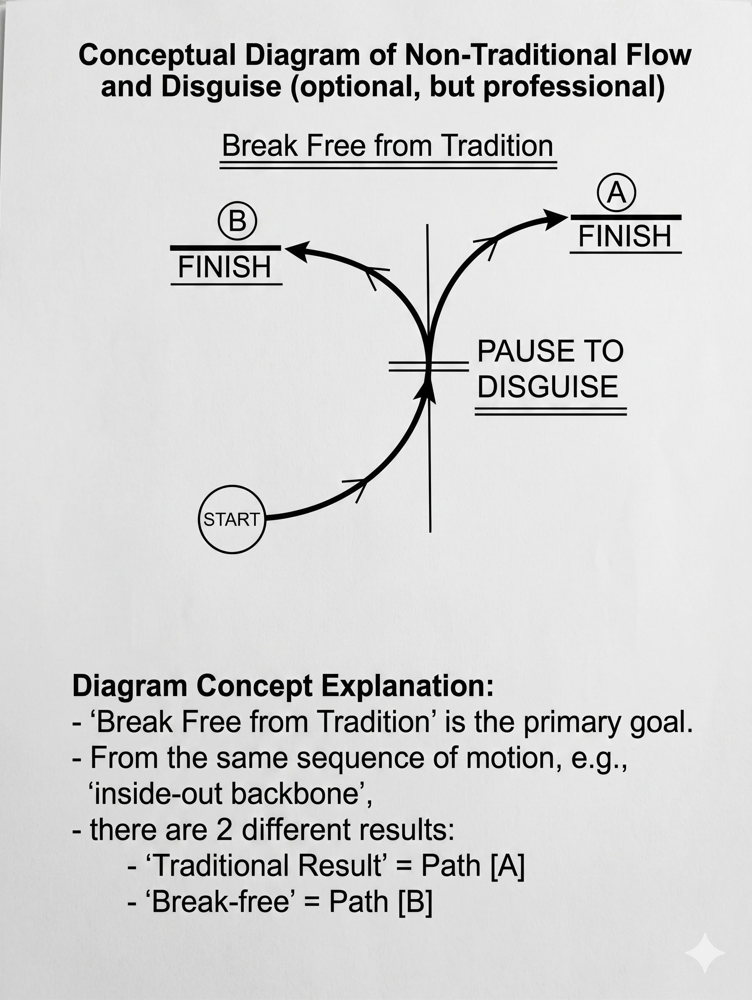
Hình 7: Nghệ thuật ngụy trang cú đánh trên lưới (Shot Disguise) — Giữ nguyên điểm vào bóng đến mili-giây cuối cùng trước khi chuyển hướng.
Figure 7: Net Play Shot Disguise — Maintaining deceptive visual cues until the terminal deceleration phase.
Cú Cắt Slice Đa Biến, Bỏ Nhỏ Tàng Hình & Phá Vỡ Nhịp Điệu Đối Thủ The Slice & Variety: Disguised Drop Shots & Rhythm Disruption
Đối với bài tập cổ tay cố định, hãy thực hiện nghiêm ngặt tiêu chuẩn. Lúc đầu, tay vợt sẽ thường xuyên để mất bóng dưới nách. Chống lại bản năng giảm bớt nhu cầu - những lần giảm thường xuyên khi bắt đầu bài tập là tín hiệu học tập chứ không phải là sự thất bại. Trong vòng mười lăm phút thực thi nhất quán, khả năng ổn định cổ tay sẽ chuyển sang cú vô lê trực tiếp theo cách mà hướng dẫn bằng lời nói không thể tạo ra. Đối với những tay vợt chần chừ trên lưới, công việc về tốc độ kết thúc của Shadow Net Drill nên đi trước bất kỳ cuộc thảo luận chiến thuật nào về vị trí lưới. Sự do dự trên lưới thường không phải là một sự hiểu lầm về mặt chiến thuật - đó là một trải nghiệm thể chất khi liên tục bị trễ. Khi tay vợt liên tục đến gần khu vực tiêu diệt trong khoảng thời gian, sự do dự sẽ tự giải quyết vì họ không còn được chuyển từ vị trí bị xâm phạm về mặt máy móc nữa. Sửa tốc độ đóng và cam kết sau. Chương 9: Lát cắt & Sự đa dạng Mỗi chương trong Phần II đã mô tả các cơ chế tạo ra nhiều hơn — nhiều sức mạnh hơn, nhiều xoáy hơn, nhiều tốc độ hơn. nói về một điều gì đó khác biệt: giá trị chiến thuật của việc tạo ra ít hơn, vào đúng thời điểm, đúng cách. Sự đa dạng trong trận đấu năm 2026 không phải là một sự nhượng bộ về phòng thủ. Nó là một vũ khí nhận thức. Vận động viên ném bóng mạnh mẽ không phải đối mặt với điều gì ngoài xoáy lên nặng nề trong suốt trận đấu đang ở trong một thế giới đã được biết đến - thời gian của họ được hiệu chỉnh, bước chân của họ có rãnh, cơ chế quay của họ hoạt động với hiệu quả tối ưu. Đưa một quả bóng vào một độ cao khác, một tốc độ khác, một hướng quay khác và việc hiệu chỉnh đó bị gián đoạn. Thời gian của họ sai lệch một phần nhỏ. Những bước chân của họ đi sai vị trí. Tải trọng GRF của họ đối với một quả bóng nảy cao bằng một nửa quả bóng trước đó hoàn toàn khác với những gì chuỗi động học (Kinetic Chain) của họ vừa chuẩn bị. Lỗi xảy ra không phải vì họ thiếu kỹ thuật mà vì hệ thống điều khiển động cơ của não cần thời gian để hiệu chỉnh lại - thời gian mà tay vợt sử dụng đa dạng đã trang bị vũ khí. Đây là khuôn khổ của sự đa dạng vào năm 2026: không phải "Tôi không thể sánh được với sức mạnh của họ nên tôi sẽ trộn lẫn nó" mà là "Tôi sẽ phá vỡ nhịp điệu chuỗi động học (Kinetic Chain) của họ một cách có hệ thống cho đến khi chi phí hiệu chỉnh lại trở nên quá cao để có thể chi trả một cách nhất quán." Tay vợt sử dụng sự đa dạng một cách chủ động - chọn thời điểm triển khai nó dựa trên đà quay của đối thủ hơn là nhu cầu phòng thủ của chính họ - sẽ sử dụng nó một cách hiệu quả nhất. 9.1 Ngoài phòng thủ: Thiết lập lại lát cắt chiến thuật
Phần này luôn tồn tại ở cấp độ ưu tú, nhưng vai trò của nó đã thay đổi về cơ bản trong giai đoạn 2000–2026. Vào đầu những năm 2000, cú cắt này chủ yếu là một công cụ phòng thủ - cú đánh mà tay vợt sử dụng khi họ không có thời gian để thực hiện một lượt toàn bộ đơn vị, khi bóng quá thấp để thực hiện cú đánh xoáy lên hoặc khi họ cần câu giờ để phục hồi trước một cú giao bóng nặng. Tin nhắn nó gửi là: Tôi đang bị áp lực. Vào năm 2026, lát cắt sẽ gửi một thông báo khác khi được triển khai chính xác: Tôi đang thay đổi hình dạng của đợt tăng giá này theo điều kiện của mình. Lát đặt lại tấn công không bị đánh từ vị trí phòng thủ. Nó được đánh từ một vị trí đã chọn - thường là từ một quả bóng mà tay vợt có thể đã đánh bằng xoáy lên - đặc biệt để thay đổi đặc tính nảy của quả bóng tới và buộc đối phương vào vùng tiếp xúc mà họ không được tối ưu hóa. Đối với những người theo vạch cuối sân quyền lực, lát cắt này đặc biệt gây rối vì ba lý do. Đầu tiên, nó từ chối GRF. Một quả bóng xoáy lên ở độ cao ngang vai sẽ nảy qua chuỗi động năng của đối phương một cách tự nhiên — điểm tiếp xúc cao cho phép xoay hoàn toàn, GRF tải tốt và dây chuyền bắn hiệu quả. Một quả bóng cắt trượt ở độ cao mắt cá chân sẽ buộc cùng một chuỗi hoạt động từ một vị trí hình học hoàn toàn khác, một vị trí mà khả năng thu GRF kém và khả năng phân tách X-Factor bị ảnh hưởng. Đối phương đánh từ một dây chuyền bị tổn thương và tạo ra một quả bóng yếu hơn. Thứ hai, nó phá vỡ nhịp quay. Thời gian của người đo đường biên ngang được hiệu chỉnh theo các cú nảy xoáy lên — chiều cao, tốc độ và quỹ đạo gần đúng của bóng khi tiếp xúc. Một quả bóng cắt trượt thấp hơn và nhanh hơn sau khi nảy lên, đến vùng tiếp xúc sớm hơn một quả bóng xoáy lên từ cùng một tốc độ tới. Cú vung sau của người đánh cuối sân, được bắt đầu cho một quả bóng có chiều cao xoáy lên, đã quá dài tính đến thời điểm lát cắt tiếp xúc. Họ ùn tắc hoặc lao tới, và kết quả thường là một phản ứng phòng thủ. Thứ ba, nó buộc phải tiếp xúc ở mức thấp. Cú đánh có độ nảy thấp yêu cầu đối thủ phải đưa đầu vợt của họ thấp hơn đầu gối để tạo ra một cú đánh chất lượng - một vị trí mà từ đó việc tạo ra lực và xoáy lên mà trò chơi hiện đại yêu cầu là khó về mặt cấu trúc. Các lựa chọn của đối thủ bị thu hẹp: họ có thể cắt lùi, tạo ra một quả bóng chất lượng thấp mà tay vợt đầu tiên có thể tấn công; hoặc họ có thể lái lên từ dưới đầu gối, tạo ra một quả bóng bay cao, dựng lên để tấn công. Họ cũng không thích kiểu xoáy lên xuyên sân hơn. Việc Nadal sử dụng cú cắt bóng trên sân đất nện - đặc biệt là cách tiếp cận cú đánh trái tay của anh ấy để giữ chân đối thủ trong khi anh ấy khôi phục vị trí - là hình mẫu xác định của việc thiết lập lại cuộc tấn công. Anh ấy sử dụng nó khi anh ấy muốn, không phải khi anh ấy phải làm vậy. 9.2 Hiệu ứng trượt: Cơ học xoáy xuống hiện đại
Sự khác biệt về chất lượng giữa một lát cắt, trượt và một cú nổi, có độ nảy cao hoàn toàn được xác định bởi cơ chế của đường xoay, góc mặt vợt và thời điểm mở mặt vợt khi tiếp xúc. Chuyển động cắt bóng chính xác là đường vung từ cao xuống thấp với cổ tay chắc chắn - vợt khắc dưới đáy quả bóng thay vì cắt ngang nó. Sự khác biệt giữa khắc và cắt nhỏ là rất quan trọng. Một cú cắt bóng đi thẳng xuống bóng ở một góc dốc, tạo ra xoáy xuống nhưng cũng có độ lệch hướng lên trên đáng kể khiến bóng bay cao và chậm - lát cắt nổi dựng lên và mời gọi tấn công. Một đường chạm khắc di chuyển qua một đường từ cao đến thấp nông hơn, tiếp xúc với mặt dưới của quả bóng trong khi duy trì động lượng về phía trước, tạo ra xoáy xuống kết hợp với tốc độ - lát trượt vẫn ở mức thấp và tăng tốc khi nảy. Góc mặt vợt khi tiếp xúc xác định bóng cắn hay bay. Mặt mở ra quá sớm — nghiêng lên trên trước khi dây tiếp xúc hoàn toàn — làm chệch hướng bóng đi lên bất kể đường vung vợt tốt đến đâu. Một mặt vẫn ở rìa - các đốt ngón tay của tay đánh hướng về phía mục tiêu - duy trì góc khắc qua vùng tiếp xúc, tạo ra độ xoáy xuống tối đa và chiều cao quỹ đạo tối thiểu. Dây polyester hiện đại khuếch đại độ xoáy bên dưới nhiều hơn so với dây tự nhiên hoặc dây polyester đời đầu. Ma sát bổ sung của mặt vợt dây bám chặt vào bề mặt bóng mạnh hơn trên đường đi từ cao xuống thấp, tạo ra nhiều vòng quay trên mỗi đơn vị tốc độ vung hơn so với mức cho phép của các công nghệ dây trước đó. Lát cắt năm 2026, được đánh với cơ chế tương tự như lát cắt của những năm 2000, vẫn ở vị trí thấp hơn và trượt nhanh hơn vì công nghệ dây thực hiện nhiều công việc hơn. Đây là loại vũ khí đã được cải tiến mà không yêu cầu bất kỳ thay đổi nào về cách thực hiện. 9.3 Cú đánh thả ngụy trang Cú đánh thả đang trải qua một sự hồi sinh về mặt chiến thuật trong trận đấu năm 2026, vượt xa bất cứ điều gì mà cú đánh đã đạt được trước đó trong quần vợt chuyên nghiệp. Trong lịch sử, một đặc sản trên sân đất nện - được triển khai khi đối thủ bị đẩy sâu và lưới mở - cú thả bóng đã trở thành một vũ khí ở mọi mặt sân, ở mọi vị trí trong tay những tay vợt như Alcaraz, những người sử dụng nó để tấn công từ bất kỳ đâu trên sân, kể cả từ phía sau đường cuối sân chống lại những đối thủ đã ở vị trí tấn công. Sự hồi sinh này hoàn toàn là do chất lượng ngụy trang. Những cảnh quay không thành công trong các thời đại trước đó - những cảnh được đọc, chạy xuống và chuyển qua - đã được gửi qua điện báo. Đối thủ nhìn thấy sự giảm tốc bắt đầu ở cú vung vợt về phía sau, đọc được ý định từ cổ tay mềm đi trước khi cú vung vợt hoàn thành và đã di chuyển về phía trước trước khi bóng rời khỏi dây. Đối với một đối thủ đang di chuyển, một cú đánh từ đường cuối sân về cơ bản không có cơ hội.
Cú ném của Alcaraz khác vì việc ngụy trang đã hoàn tất. Sự chuẩn bị của anh ấy - xoay đơn vị, tải trọng, bắt đầu vung vợt về phía trước - không thể phân biệt được với cú đánh thuận tay của anh ấy trong chín mươi phần trăm đầu tiên của chuyển động. Chỉ trong ba mươi centimet cuối cùng của cú vung vợt, vợt mới giảm tốc độ và tay mềm mại hơn. Tại thời điểm đó, đối phương đã vào thế phòng thủ và chờ đợi một quả bóng lái. Thời gian xử lý nhận thức cần thiết để đảo ngược quyết định chuyển động - ngừng rút lui và bắt đầu chạy nhanh về phía trước - là khoảng ba trăm mili giây. Trước một cú sút được ngụy trang kỹ lưỡng từ Alcaraz, ba trăm mili giây là quá muộn. Vùng giảm tốc là chìa khóa kỹ thuật: 30 cm cuối cùng của cú vung vợt nơi vợt chậm lại và dây hầu như không truyền tốc độ. Thử thách của tay vợt là duy trì kiểu đánh hoàn toàn — xoay cơ thể, bắt đầu vung vợt, đường vợt — cho đến khi bóng nằm trong vùng giảm tốc và chỉ sau đó làm mềm tay. Bất kỳ sự giảm tốc nào trước vùng đó đều có thể nhìn thấy được. Đối thủ không thể nhìn thấy sự giảm tốc trong vùng đó ở khoảng cách cạnh tranh bình thường. Nguyên tắc đặt bóng cho cú thả bóng rất đơn giản: đưa bóng càng gần lưới càng tốt, với xoáy ngang kéo bóng về phía mép biên sau khi nảy. Một cú đánh rơi gần vạch giao bóng tạo cơ hội cho đối thủ bỏ chạy. Một cú đánh rơi cách lưới trong vòng một mét và quay ra xa sân là không thể thực hiện được ngay cả khi đã được đoán trước. 9.4 Thay đổi độ cao: Moonball so với Flat Slice Hai cú đánh ở hai đầu đối diện của quang phổ quỹ đạo tạo ra kết quả chiến thuật giống nhau khi được sử dụng đúng cách: chúng buộc đối thủ phải điều chỉnh lại thời gian theo hướng mà họ không chuẩn bị trước. Quả cầu mặt trăng — xoáy lên cực mạnh với độ hở lưới cao, hạ cánh sâu và nảy cao hơn vai — là cơn ác mộng của người đánh bóng có sức mạnh từ vị trí phòng thủ. Khi một tay vợt bị áp lực và không thể tạo ra một đường bóng tấn công xuyên thấu, quả bóng mặt trăng sẽ biến tình huống phòng thủ thành chiến thuật. Thay vì trả lời ngắn gọn, trôi chảy rằng đối phương tấn công từ giữa sân, quả cầu mặt trăng sẽ rơi sâu, nảy cao và buộc đối phương phải lùi về phía sau đường biên ngang của mình để xử lý một quả bóng cao hơn vai của họ. Từ vị trí phòng thủ đó, việc tạo ra một phản ứng tấn công đòi hỏi phải có cơ chế đặc biệt - chính xác là điều mà điểm tiếp xúc cao và chuỗi động học (Kinetic Chain) bị tổn hại được mô tả trong phần 9.1 gây khó khăn. Quả bóng mặt trăng có hiệu quả nhất khi là một cú đánh kết hợp - được triển khai sau một chuỗi các quả bóng tập trung có chiều cao tiêu chuẩn để tối đa hóa hiệu ứng đột phá của việc thay đổi độ cao. Đối phương đã đánh ba quả bóng liên tiếp ngang ngực và bất ngờ nhận được một quả bóng nảy phía trên đầu của họ đang phải giải quyết một nhu cầu về thời gian hoàn toàn khác. Chi phí hiệu chuẩn lại cao nhất tại thời điểm thay đổi. Lát cắt phẳng hoạt động ở thái cực ngược lại. Sau một đợt tập hợp các quả bóng xoáy lên nặng nảy trên thắt lưng, một lát phẳng trượt qua độ cao dưới đầu gối sẽ tạo ra nhu cầu hiệu chỉnh lại tương tự theo hướng ngược lại. Đối thủ đã nạp chuỗi động năng của họ để tạo ra GRF chống lại một quả bóng ở độ cao tiêu chuẩn. Lát cắt này đến thấp hơn 30 cm, sớm hơn dự kiến và vẫn ở mức thấp sau khi bật lên. Chuỗi bắn vào một quả bóng đã vượt qua vùng tiếp xúc tối ưu. Kết hợp bóng trăng và lát phẳng trong một lượt đánh là ứng dụng nâng cao của chiến thuật thay đổi độ cao. Đối thủ phải đồng thời quản lý bộ nhớ về độ cao của cú đánh trước đó và quỹ đạo của quả bóng tới - một nhu cầu xử lý kép tạo ra lỗi tính thời gian ngay cả ở những tay vợt có kỹ thuật hoàn hảo. Sự phối hợp hiệu quả nhất khi độ cao thay đổi không thể đoán trước: không xen kẽ mọi quả bóng khác mà được triển khai theo những khoảng thời gian không đều để ngăn cản đối phương thiết lập nhịp điệu đoán trước. 9.5 Sự tiến hóa đa dạng: 2000–2026 Tính năng 2000–2010 2020–2026 Vai trò lát cắt Chủ yếu là phòng thủ — người mua thời gian Chủ động thiết lập lại chiến thuật — đã chọn, không bắt buộc Thả Bắn Vũ khí chuyên dụng trên sân đất sét từ mọi nơi Moonball Phòng thủ bắn khẩn cấp Người phá vỡ mô hình có chủ ý Biến đổi độ cao Thỉnh thoảng — không có hệ thống — được lên kế hoạch thành các chuỗi tập hợp Chất lượng cải trang Trung bình — có thể nhìn thấy các thay đổi chuẩn bị Cao — duy trì cấu hình toàn bộ cú đánh Công nghệ dây Tác động thấp hơn — ruột tự nhiên giảm độ xoáy bên dưới Cao hơn — polyester khuếch đại vết cắt Đa dạng Tần suất Thấp — vượt trội về sức mạnh và tính nhất quán Tích hợp — đa dạng như lớp chiến thuật
Tính năng 2000–2010 2020–2026 Xác định Mô hình Hingis — đa dạng như toàn bộ trò chơi Alcaraz — đa dạng đan xen vào một trò chơi quyền lực 9.6 Trò chơi tinh thần: Đa dạng như hung hãn Sự thay đổi tinh thần cần có để sử dụng đa dạng một cách hiệu quả là chuyển từ phản ứng sang chủ động. Tay vợt phản ứng đa dạng cố gắng thực hiện cú đánh rơi vì họ đã ở ngoài vị trí. Họ cắt lát vì họ không thể lái xe. Họ moonball vì tốc độ đã đánh bại họ. Đây là những quyết định sinh tồn hợp lệ, nhưng chúng không phải là cách triển khai chiến thuật để giành điểm ở cấp độ ưu tú - bởi vì sự đa dạng phản ứng được đối thủ đọc gần như nhanh như kỹ thuật điện báo. Tay vợt chủ động quyết định trước khi bóng đến rằng đây là thời điểm thực hiện cú thả bóng. Họ chọn lát cắt khi họ có thể lái xe. Họ kéo quả bóng mặt trăng từ một vị trí cơ bản hoàn toàn thoải mái bởi vì đối thủ đã có nhịp điệu xoáy lên nặng nề trong ba quả bóng và bây giờ là thời điểm tối ưu để phá vỡ nó. Việc lựa chọn cú sút được thực hiện dựa trên mục đích chiến thuật chứ không phải nhu cầu phòng thủ. Tư duy ngụy trang là thử thách tâm lý tại thời điểm thực hiện. Thực hiện cú đánh thả bóng với sự cam kết đầy đủ - duy trì sự chuẩn bị cho cú đánh cho đến vùng giảm tốc - đòi hỏi tay vợt phải tin tưởng hoàn toàn vào việc ngụy trang và không được nghi ngờ nó trong khi thực hiện cú đánh. Một tay vợt bắt đầu nghi ngờ về cú đánh rơi ở điểm 70% của cú swing sẽ giảm tốc độ sớm, báo hiệu cú đánh và tạo ra quả bóng chính xác có thể đọc được khiến cho cú đánh rơi không hiệu quả. Cam kết phải hoàn toàn trước khi cú swing bắt đầu chứ không phải tạm thời trong suốt quá trình đó. Kiên nhẫn trong sự đa dạng có lẽ là phẩm chất tinh thần quan trọng nhất đối với nội dung chiến thuật của chương này. Cú đánh thả từ phía sau đường cuối sân có hiệu quả vì đối thủ đang ở đúng vị trí, di chuyển về phía sau, được điều chỉnh theo độ xoáy lên nặng. Việc thiết lập điều kiện đó - giữ đối thủ sâu qua nhiều quả bóng nặng liên tiếp trước khi triển khai cú thả bóng - đòi hỏi kỷ luật phải trì hoãn sự đa dạng hơn là triển khai ngay cơ hội đầu tiên. Những tay vợt sử dụng các cú đánh thả bóng quá sớm trong một pha giao bóng, trước khi đối thủ hoàn toàn lùi về phía sau, sẽ thấy họ thường xuyên bị hạ gục. Những tay vợt xây dựng thế trận một cách kiên nhẫn - trước tiên là ba hoặc bốn quả bóng nặng - sẽ nhận thấy rằng không thể thực hiện được cùng một cú đánh. 9.7 Các kiểu chơi đa dạng
Cắt theo góc ngắn cộng với lốp bóng xoáy lên là mẫu đòi hỏi thể lực cao nhất trong chương này. Cú cắt góc ngắn kéo người đánh bóng có lực ra khỏi sân theo chiều ngang, kéo họ về phía trước và rộng để xử lý một quả bóng nảy gần đường biên. Khi họ chạy nhanh về phía trước và chuẩn bị đánh bóng từ một vị trí rộng và thấp, cú lốp bóng xoáy lên tiếp theo qua vai ngoài của họ sẽ khiến họ lao về phía góc đối diện. Các yêu cầu về thể chất và nhận thức của sự đảo ngược này - chạy nước rút về phía trước, dừng lại, chạy nước rút lùi, điều chỉnh lại hoàn toàn - là rất quan trọng ngay cả đối với các vận động viên ưu tú. Kiểu này hiệu quả nhất trên đất sét, nơi lát góc ngắn cắn mạnh nhất nhưng hoạt động trên bất kỳ bề mặt nào khi chất lượng lát cắt cao. Moonball sau đó thả cú sút là chuỗi kết hợp thay đổi độ cao dứt khoát. Ba đến bốn quả bóng mặt trăng nặng đẩy đối thủ về phía sau đường biên ngang của họ, vị trí của họ được xác định rõ ràng, thời gian của họ được điều chỉnh cho những quả bóng có độ nảy cao. Cú đánh rơi đến như một quả bóng tiếp theo tự nhiên mà đối thủ mong đợi là một chuỗi quả cầu mặt trăng khác. Vị trí của họ - chậm hơn hai đến ba mét so với đường cuối sân - khiến cho việc thực hiện cú đánh rơi xuống phải chạy nước rút từ sáu đến bảy mét trong thời gian một cú đánh rơi đúng vị trí sẽ nảy hai lần gần lưới. Ngược lại với cách thiết lập này, ngay cả đối thủ đọc được cú đánh ngay lập tức cũng sẽ đến muộn. Thay đổi độ xoáy để gây ra lỗi tính thời gian sử dụng cùng một cấu hình cú đánh để tạo ra các hiệu ứng xoáy ngược nhau - một đường xoáy lên theo sau là một cú cắt dọc biên. Thời gian của đối phương được điều chỉnh theo các đặc điểm nảy của quả bóng xoáy lên: độ cao, tốc độ, quỹ đạo về phía trước. Đường cắt xuống có tốc độ khác, giữ nguyên ở mức thấp hơn và trượt qua sân thay vì đá lên trên. Hiệu ứng kết hợp của việc thay đổi hướng và thay đổi độ xoáy tạo ra lỗi thời gian đáng tin cậy hơn so với chỉ thay đổi một mình. Lát góc ngắn là vũ khí dịch chuyển ngang để chống lại những kẻ tấn công có sức mạnh bố trí ở trung tâm của vạch cuối sân. Một cú đánh chất lượng cao ở một góc chéo sân sắc nét sẽ kéo đối thủ ra khỏi sân đến vị trí mà việc phục hồi về giữa sân cần phải chạy nước rút từ ba đến bốn mét. Từ vị trí rộng và thấp đó, các lựa chọn trả bóng của họ thu hẹp đáng kể - người chiến thắng ở đường dưới được mở và bất kỳ quả bóng nào họ đánh từ bên ngoài đường biên đều bị tổn hại về mặt cơ học do vị trí GRF kém. 9.8 Khắc phục sự cố và thực tập Đường cắt nổi — mặt vợt mở quá sớm — tạo ra đường cắt cao, chậm, dựng lên để tấn công thay vì cắn và trượt. Cách sửa là bài tập đốt ngón tay xuống: tay vợt tập trung vào việc giữ các đốt ngón tay của tay đánh hướng vào mục tiêu thông qua tiếp xúc thay vì xoay lên trên. Dán một miếng băng nhỏ vào các đốt ngón tay sau và yêu cầu tay vợt giữ cho đồng đội đứng ở mục tiêu nhìn thấy miếng băng đó trong toàn bộ giai đoạn tiếp xúc. Xúc giác và thị giác việc tập trung vào vị trí khớp ngón tay sẽ tạo ra kỷ luật về góc mặt mà hướng dẫn bằng lời về đường vung vợt không thể tạo ra một cách đáng tin cậy. Cú đánh rơi điện báo - giảm tốc độ vung vợt xuống quá sớm - là lỗi thả cú đánh phổ biến nhất và là lỗi khiến cú đánh không hiệu quả ở cấp độ thi đấu. Cách hiệu chỉnh là bài tập ngụy trang bóng: không có bóng, tay vợt thực hiện toàn bộ chuyển động xoay thuận tay hoặc trái tay của mình mười lần, mỗi lần chỉ giảm tốc độ trong 30 cm cuối cùng. Một đối tác đứng trên lưới xem và hét lên khi họ phát hiện ra sự giảm tốc - thời điểm cú đánh có thể đọc được. Mục đích là để đối tác không thể phát hiện ra sự giảm tốc cho đến khi bóng đã ở trong vùng giảm tốc. Chỉ chuyển sang bóng sống khi tỷ lệ đánh vô-lê trên 80%. Độ sâu lát cắt không nhất quán - chuyển động cắt chứ không phải là lát lái - tạo ra những quả bóng tiếp đất ngắn và mời gọi tấn công hơn là xuyên tới đường cuối sân. Cách sửa là bài tập cắt tường: đứng cách tường tập từ 4 đến 5 mét, tay vợt lát bóng vào tường và phải nhận bóng ở cùng độ cao khi bật lại - biểu thị tốc độ và độ sâu nhất quán thay vì chặt. Bất kỳ quả bóng nào trả về quá cao hoặc quá thấp đều sẽ phát hiện ra lỗi đường xoay. Mười lần bật lại nhất quán liên tiếp trước khi chuyển sang đánh sân. Máy khoan cảm giác thả bắn xây dựng khả năng kiểm soát cảm ứng và giảm tốc mà các cú đánh rơi ngụy trang yêu cầu, bắt đầu từ những khoảng cách có thể quản lý được và mở rộng đến những khoảng cách cạnh tranh. Từ đường giao bóng, thực hiện mười cú thả bóng tập trung hoàn toàn vào việc đưa bóng chạm lưới trong phạm vi một mét. Tiến tới giữa sân, sau đó đến đường cuối sân, duy trì cùng một mục tiêu hạ cánh. Bài tập nhanh chóng tiết lộ rằng cú đánh thả từ đường cuối sân yêu cầu cam kết xoay người nhiều hơn đáng kể so với từ đường giao bóng — bóng phải di chuyển xa hơn trong khi giảm tốc độ xuống tốc độ gần như bằng 0, yêu cầu kiểm soát chính xác vùng giảm tốc thay vì chạm đơn giản mà phiên bản đường giao bóng yêu cầu. Máy khoan trình tự đa dạng tạo ra nhu cầu ra quyết định theo thời gian thực mà sự đa dạng đòi hỏi trong cạnh tranh. Huấn luyện viên đưa một quả bóng chéo sân nhất quán, nhưng giữa cuộc biểu tình sẽ gọi một kiểu đánh - "lái", "cắt" hoặc "thả" - và tay vợt phải thực hiện cú đánh được gọi với cách ngụy trang chính xác trên quả bóng tiếp theo mà họ nhận được. Hạn chế của hướng dẫn giữa cuộc biểu tình ngăn cản việc lập kế hoạch trước và xây dựng nhu cầu nhận thức tương tự mà các quyết định đa dạng trong trận đấu yêu cầu. Tiến triển từ chuỗi hai cú đánh đến chuỗi năm cú đánh với kiểu bắn được gọi ở các điểm khác nhau trong chuỗi.
Ở cấp độ của bạn, có sẵn nhiều công cụ đa dạng. Câu hỏi đặt ra là liệu bạn triển khai chúng một cách chủ động hay phản ứng - và liệu chất lượng ngụy trang của bạn có đủ để khiến chúng trở nên hiệu quả trước những đối thủ đọc sách ở cấp độ ưu tú hay không. Kiểm tra cụ thể dữ liệu cú thả bóng của bạn: tỷ lệ thành công cú thả bóng của bạn khi được triển khai trong ba lượt đánh đầu tiên của cuộc biểu tình so với sau năm lượt đánh trở lên? Nếu các cú đánh thả bóng ở giai đoạn đầu của bạn đang bị giảm sút thường xuyên hơn đáng kể so với những cú đánh sau đó, thì bạn đang triển khai cú đánh trước khi điều kiện thiết lập - đối thủ đã phạm sâu và lùi - đã được thiết lập. Tăng thời lượng thiết lập cần thiết và quan sát xem tỷ lệ thành công có cải thiện hay không. Khi cải trang: ghi lại các cú đánh bóng của bạn từ phía sau sân trong tầm mắt và so sánh hồ sơ trực quan của quá trình chuẩn bị cú đánh bóng của bạn với quá trình chuẩn bị đánh bóng của bạn. Nếu sự chuẩn bị khác nhau trước vùng giảm tốc, thì việc ngụy trang sẽ không đầy đủ ở cấp độ mà các đối thủ ưu tú đọc được. Một buổi học với video so sánh này sẽ tiết lộ nhiều điều về khả năng ngụy trang của bạn hơn bất kỳ mô tả huấn luyện nào. Khi huấn luyện đa dạng, thứ tự can thiệp kỹ thuật rất quan trọng. Cơ chế cắt lát trước khi thả bắn - đường chạm khắc từ cao đến thấp là nền tảng để xây dựng cảm ứng bắn rơi. Chất lượng ngụy trang trước khi tích hợp mẫu - một cú đánh rơi với khả năng ngụy trang kém là một trách nhiệm bất kể mẫu có tốt đến đâu. Tích hợp mẫu trước khi khoan áp lực - trình tự đa dạng phải được tự động hóa trước khi thêm áp lực cạnh tranh. Bài tập hạ khớp ngón tay là công cụ huấn luyện lát cắt chính của bạn. Sử dụng nó từ phiên đầu tiên và duy trì nó như một biện pháp kiểm tra chẩn đoán trong các phiên tiếp theo - một tay vợt có chất lượng lát cắt bị suy giảm hầu như sẽ luôn cho thấy nguyên nhân cốt lõi là việc mở mặt bằng đốt ngón tay. Đối với việc huấn luyện bắn thả với những tay vợt ưu tú, đánh giá của đối tác thực tập ngụy trang bóng là tiêu chuẩn chất lượng trung thực nhất hiện có. Một đối tác có kỹ thuật hoàn hảo không thể phát hiện sự giảm tốc cho đến khi vùng giảm tốc là tiêu chuẩn. Bất cứ điều gì không đạt tiêu chuẩn đó có nghĩa là cú đánh có thể đọc được trước các đối thủ cấp cao và không nên sử dụng trong các tình huống cạnh tranh cho đến khi chất lượng ngụy trang được xác nhận. Bài tập này gây khó chịu cho những tay vợt tin rằng cú đánh rơi của họ đã tốt - điều này khiến nó trở thành phương pháp chẩn đoán chính xác phù hợp để sử dụng. PHẦN III - TRÒ CHƠI HOÀN THÀNH
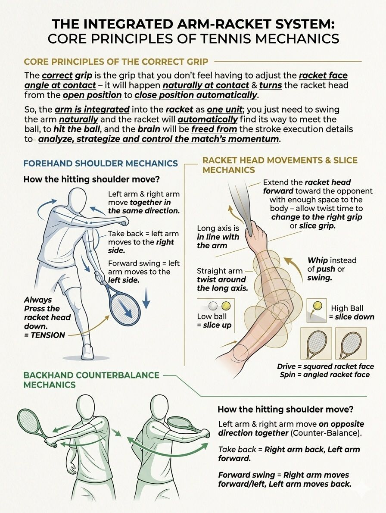
Hình 8: Hệ thống đòn bẩy cánh tay trong cú cắt Slice — Khóa góc cẳng tay - cổ tay tạo quỹ đạo bóng lướt sát mép lưới.
Figure 8: Arm Lever System in the Modern Slice — Fixed forearm-wrist angle creating skid bounce trajectories.
Phần IV: Chiến Thuật Dữ Liệu, Thể Lực Đỉnh Cao & Trạng Thái Tâm Trí Satori
Chiến Thuật Dựa Trên Dữ Liệu: Quy Luật 4 Nhịp & Mẫu Hình Giao Bóng + 1 Data-Driven Tactics: The First 4 Shots & The Serve + 1 Dominance
: Chiến lược, Chiến thuật & Mô hình theo hướng dữ liệu Mỗi chương trong sách hướng dẫn này đều được xây dựng theo hướng này. Chuỗi động học, mô-men xoắn lõi, hệ thống chuyển động, cơ chế hành trình - tất cả đều là phần cứng. Chương này là hệ điều hành quyết định phần cứng làm gì, khi nào nó làm và tại sao. Nếu không có chiến lược, tay vợt giỏi nhất về mặt kỹ thuật sẽ là một tập hợp các cú đánh ấn tượng không kết nối thành một kế hoạch mạch lạc. Với nó, ngay cả những tay vợt có kỹ thuật khiêm tốn cũng có thể đánh bại những vận động viên giỏi hơn bằng cách áp đặt một mô hình mà đối thủ không thể giải quyết được. Trò chơi năm 2026 đã biến chiến lược từ một nghệ thuật thành một khoa học - hay chính xác hơn là thành một môn học đồng thời có cả hai. Dữ liệu hiện đã có sẵn: bản đồ nhiệt vị trí cú đánh, hồ sơ xu hướng lỗi, tỷ lệ thành công theo mẫu theo tình huống ghi điểm, tỷ lệ chuyển đổi giao bóng cộng một theo vị trí sân. Các tay vợt, huấn luyện viên phớt lờ thông tin này đang thi đấu với một tay bị trói sau lưng. Nhưng dữ liệu không có thông tin tình báo chiến thuật cũng không đầy đủ. Một tay vợt biết chính xác tỷ lệ trái tay thành công của đối thủ là bao nhiêu từ mặt sân rộng sẽ có thông tin. Một tay vợt biết phải làm gì với thông tin đó - trình tự các cú đánh tạo ra cơ hội đánh trái tay rộng - sẽ có vũ khí. Chương này xây dựng cả hai lớp. 10.1 Quy tắc 75%: Gây ra lỗi Thực tế thống kê quan trọng nhất trong chiến lược quần vợt cũng là điều ít hấp dẫn nhất: khoảng 75% tổng số điểm kết thúc bằng lỗi không bắt buộc hoặc lỗi bắt buộc, chứ không phải người chiến thắng. Ở cấp độ ưu tú, trên các bề mặt nhanh, con số này thay đổi - nhiều cú ghi điểm trực tiếp hơn ở tốc độ chuyên nghiệp. Nhưng ngay cả trong những trận đấu có chất lượng cao nhất, số lỗi vẫn nhiều hơn đáng kể so với số người thắng hoàn toàn vì đây là cơ chế tính điểm chính. Thực tế này điều chỉnh lại mục đích chiến thuật của hầu hết mọi cú đánh trong trò chơi. Nếu hầu hết các điểm đều kết thúc do lỗi, thì mục tiêu chính của phần lớn các cú đánh không phải là giành điểm trực tiếp mà là tạo điều kiện trong đó lỗi trở nên không thể tránh khỏi về mặt thống kê. Cú đánh giành điểm thường không phải là cú thuận tay ngoạn mục mà là quả bóng thứ ba trong chuỗi ba bóng - cú đánh tiếp đất ở vị trí mà hai quả bóng đầu tiên được thiết kế để tạo ra. Phiên bản những năm 2000 của cách hiểu này mang tính thụ động: các sai số về tính nhất quán và chiều sâu lực theo thời gian. Đối thủ mắc sai lầm vì họ phải chịu áp lực liên tục và cuối cùng có điều gì đó bị phá vỡ. Phiên bản 2026 đang hoạt động: tốc độ, độ xoáy và độ sâu cực cao được triển khai đặc biệt là để di chuyển đối thủ vào các vùng đánh dưới mức tối ưu - những vị trí mà ở đó việc thực hiện chất lượng khó khăn về mặt cơ học - và các lỗi được gây ra với tốc độ có thể dự đoán được, không phải chờ đợi một cách ngẫu nhiên. Sự khác biệt thực tế là rất lớn. Tay vợt nhất quán thụ động chờ đợi. Hành động gây ra lỗi tích cực. Họ đánh thuận tay vào trái tay của đối phương với tốc độ 4.000 vòng/phút không phải vì nó có thể tạo ra cú ghi điểm trực tiếp mà vì họ biết rằng sau ba quả bóng liên tiếp với tốc độ đó và xoáy đến vị trí đó, đối thủ sẽ nhấc một quả bóng ngắn lên - và họ đã biết họ sẽ làm gì với quả bóng ngắn đó. Mỗi tốc độ, độ xoáy và độ sâu cực cao đều góp phần tạo ra vùng dưới mức tối ưu theo những cách khác nhau. Tốc độ cực cao làm giảm thời gian quyết định, buộc phải chuẩn bị gấp rút và cơ chế nén. Topspin nặng tạo ra những quả bóng có độ nảy cao buộc tiếp xúc phía trên vùng tấn công tối ưu của đối thủ, làm giảm hiệu quả của chuỗi động học (Kinetic Chain). Độ sâu đẩy đối phương ra sau đường cuối sân, kéo dài phần sân mà họ phải che chắn và giảm các lựa chọn tạo góc của họ. Kết hợp lại, ba biến số này kết hợp lại - một quả bóng sâu, nặng, nhanh đến góc trái tay không chỉ khó trả bóng mà nó còn được thiết kế đặc biệt để khó trả bóng. 10.2 Mô hình theo hướng dữ liệu: Cuộc cách mạng tỷ lệ phần trăm cao Sự sẵn có của dữ liệu phân tích mô hình và theo dõi cú đánh chi tiết trong trò chơi chuyên nghiệp đã thay đổi cách những tay vợt ưu tú tiếp cận việc chuẩn bị chiến thuật. Trước một trận đấu quan trọng, ban huấn luyện có quyền truy cập vào bản đồ nhiệt xu hướng mắc lỗi của đối thủ - các khu vực sân cụ thể và trình tự cú đánh từng gây ra lỗi - cùng với tỷ lệ thành công của họ trên các mẫu cụ thể theo tình huống điểm số, bề mặt và mức độ mệt mỏi. Dữ liệu này không thay thế thông tin tình báo chiến thuật. Nó thông báo cho nó. Bản đồ nhiệt cho thấy đối thủ đánh trượt ở vị trí nào trên toàn sân. Trí thông minh chiến thuật xác định chuỗi ba cú đánh có nhiều khả năng nhất để tạo ra một vị trí rộng trên sân trước đối thủ cụ thể này, trên bề mặt cụ thể này, tại thời điểm này trong trận đấu. Dữ liệu xác định mục tiêu; trí thông minh về khuôn mẫu tạo ra con đường dẫn tới nó. Sinner minh họa cách tiếp cận dựa trên dữ liệu một cách chính xác nhất. Sự chuẩn bị về mặt chiến thuật của anh ấy rất chi tiết - việc phân tích của đội anh ấy về xu hướng đối thủ rất kỹ lưỡng và việc thực hiện mẫu trên sân của anh ấy phản ánh sự chuẩn bị đó với độ trung thực khác thường. Nhưng Sinner cũng chứng tỏ tầm quan trọng không kém của sự linh hoạt trong chiến thuật: khả năng đọc trận đấu giữa trận khi sơ đồ đã chuẩn bị sẵn không hoạt động và chuyển sang phương án thay thế mà không do dự hay bối rối.
Alcaraz đại diện cho đầu bên kia của quang phổ chiến thuật - bùng nổ, ngẫu hứng, khó chuẩn bị chống lại chính xác vì sự đa dạng trong chiến thuật của anh ta khiến cho việc dự đoán mô hình không đáng tin cậy. Cách tiếp cận của ông ít phụ thuộc vào dữ liệu hơn và thiên về bản năng và thể thao hơn. Cả hai cách tiếp cận đều giành chiến thắng ở mức cao nhất. Bài học là dữ liệu và trực giác không phải là những cách tiếp cận cạnh tranh - chúng là những công cụ bổ sung mà sự cân bằng tối ưu phụ thuộc vào phong cách nhận thức và bản sắc cạnh tranh của tay vợt. Ma trận phần thưởng rủi ro áp dụng cho tất cả các lựa chọn mẫu: một mẫu có tỷ lệ thành công cao so với tay vợt trung bình có thể có tỷ lệ thành công thấp trước một đối thủ cụ thể có khả năng bao quát mẫu đó một cách đặc biệt tốt. Đối đầu với Djokovic, tấn công trái tay chéo sân không phải là cách chơi có tỷ lệ chơi cao như đối với hầu hết các đối thủ - anh ấy được trang bị đặc biệt để biến mô hình đó thành cơ hội tấn công. Đọc khi mô hình có tỷ lệ phần trăm cao tiêu chuẩn đã trở thành mô hình có tỷ lệ phần trăm thấp trước một đối thủ cụ thể và chuẩn bị sẵn một phương án thay thế, là một trong những cách thích ứng chiến thuật quan trọng nhất ở cấp độ ưu tú. 10.3 Xác suất thuận tay cộng một và thắng trận Khái niệm cộng một - giành được quả bóng thứ ba trong pha trao đổi giao bóng cộng hai - là nguyên tắc chiến thuật được xác thực nhiều nhất trong quần vợt hiện đại. Phân tích dữ liệu trận đấu chuyên nghiệp cho thấy một cách nhất quán rằng những tay vợt giành chiến thắng trong cú đánh cộng một sẽ thắng hơn 70% số trận giao bóng của họ và nói rộng ra là phần lớn tỷ lệ các trận đấu của họ. Không có thước đo chiến thuật nào khác tương quan với kết quả trận đấu một cách đáng tin cậy. Lý do là về mặt cấu trúc. Cộng một là cú đánh đầu tiên trong một cuộc trao đổi dịch vụ trong đó người giao bóng có cả lợi thế về vị trí sân và thời gian cùng một lúc. Quả giao bóng đã quyết định vị trí của người trả giao và hạn chế các lựa chọn của họ. Cú đánh cộng một của người giao bóng đến địa điểm sân đấu mà vị trí giao bóng đã được xác định phần lớn từ trước - cú đánh cộng một không phải là một quyết định phản ứng mà là việc thực hiện một trình tự được thiết kế sẵn. Khi quả giao bóng đã hoạt động như dự định và có sẵn thuận tay cộng một, thì đó phải là cú đánh đáng tin cậy nhất, chất lượng cao nhất trong kho vũ khí của người giao bóng - không phải vì tình huống yêu cầu mà vì người giao bóng đã chuẩn bị cụ thể cho chính xác quả bóng này. Do đó, mục đích chính của cú giao bóng chuyển từ tạo ra quân át sang tạo vị trí cộng một. Một cú giao bóng thẳng với tốc độ 230 km/h tạo ra một cú át chủ bài là một phần thưởng. Cú giao bóng tương tự buộc người phòng thủ quay trở lại giữa sân và thiết lập một người chiến thắng thuận tay trong là thành công thực hiện tiêu chuẩn. Các huấn luyện viên chỉ đo lường chất lượng giao bóng bằng tỷ lệ át chủ bài đang đo lường điều kiện thưởng chứ không phải mục đích chính.
Ba vị trí giao bóng cụ thể tạo ra ba cơ hội thuận tay cụ thể cộng một. Cú giao bóng chữ T - phẳng hoặc cắt vào đường giao bóng ở giữa - vô hiệu hóa góc của người trả giao và tạo ra một cú trả bóng vào giữa mà người giao bóng tấn công bằng một cú thuận tay từ trong vào sân mở. Cú giao bóng rộng - cắt ở phía bên trái hoặc đá ở phía quảng cáo - kéo người trả giao ra khỏi sân và mở ra toàn bộ phía đối diện cho người chiến thắng thuận tay. Thân giao bóng - phẳng hoặc cắt trực tiếp vào hông của người trả bóng - làm cản trở cú xoay của họ và tạo ra một cú trả bóng ngắn, trung tâm mà người giao bóng di chuyển về phía trước để kết thúc. Nguyên tắc cộng một còn mở rộng ra ngoài việc giao bóng. Từ cú trả bóng, logic tương tự được áp dụng ngược lại: một cú trả bóng quyết liệt buộc người giao bóng phòng thủ phải trả lời sẽ tạo ra vị trí cộng một cho người trả bóng - thường là một cú thuận tay vào sân mở hoặc một cú đánh vào người giao bóng đang phục hồi. Tay vợt suy nghĩ theo hướng cộng một từ cả hai bên lưới đang hoạt động ở cấp độ chiến thuật cao hơn một cách nhất quán so với tay vợt coi mỗi cú đánh là một quyết định độc lập. 10.4 Cuộc tấn công vùng chữ T và cú đá và đánh sân quảng cáo Cuộc tấn công vùng chữ T nhắm vào trung tâm của sân - khu vực xung quanh đường giao bóng trung tâm và phần mở rộng của nó vào đường cuối sân - để loại bỏ khả năng tạo góc của đối phương. Một quả bóng được đưa vào Vùng chữ T sẽ buộc đối thủ vào một vị trí đánh mà từ đó hình dạng sân của họ bị hạn chế tối đa. Họ không thể tạo ra một góc rộng từ trung tâm. Bóng chéo sân đi về phía thuận tay của người giao bóng. Đường xuống đi về phía trái tay của người giao bóng. Cả hai hướng đều được bao phủ từ vị trí thu hồi trung tâm và không hướng nào mở ra sân quan trọng. Cuộc tấn công vùng chữ T đặc biệt hiệu quả trước những đối thủ dựa vào việc tạo ra những góc cực cao từ các quả phạt góc - những tay vợt có bản sắc chiến thuật được xây dựng bằng cách kéo đối thủ ra xa và tận dụng khoảng sân rộng mở. Bằng cách giữ bóng ở trung tâm và sâu, cách tiếp cận T-Zone từ chối cho họ những vị trí phạt góc mà hình mẫu của họ bắt nguồn. Nó không thiên về tốc độ mà thiên về vị trí: một quả bóng ở vùng chữ T được đặt đúng vị trí với tốc độ vừa phải sẽ hiệu quả về mặt chiến thuật hơn một quả bóng cứng vào góc mở ra phía đối diện. Đối đầu với những đối thủ mạnh ở trung lộ - đặc biệt là đối với những tay vợt trái tay bằng hai tay có cơ chế nhỏ gọn được tối ưu hóa cho bóng trung tâm - đòn tấn công vùng chữ T kém hiệu quả hơn và nên được kết hợp với các kiểu rộng hơn để ngăn đối thủ di chuyển vào vùng thoải mái của họ. Kiểu đá và phát bóng trên sân quảng cáo là kiểu giao bóng cộng một có tỷ lệ giao bóng cộng một cao nhất trong trò chơi. Cú giao bóng vào góc trái tay của sân quảng cáo tạo ra đồng thời ba lợi thế: lực nảy cao tiếp xúc phía trên vùng tấn công tối ưu của cú đánh trái tay, góc rộng kéo đối phương ra khỏi sân và hướng xoáy của cú đá di chuyển bóng ra xa đối phương.
cơ thể khi nó nâng lên, khiến cho cú đánh trái tay bằng hai tay xuyên thấu trở nên khó khăn về mặt cơ học. Kết quả trả bóng - thường là một cú trái tay phòng thủ chéo sân - tiếp đất ở trung tâm hoặc ở khu vực thuận tay hai sân, thiết lập chính xác cú thuận tay từ trong ra ngoài hoặc từ trong vào cộng với một cú đánh thuận tay mà người giao bóng đã lập trình trước. Kết hợp đòn tấn công vùng chữ T và đòn kick-and-drive tạo ra sự không chắc chắn về vị trí khiến đối thủ không thể tải trước vị trí quay trở lại của họ. Đối thủ chủ yếu nhận cú giao bóng rộng trên sân quảng cáo sẽ che chắn vị trí của họ cho phù hợp - di chuyển rộng hơn một bước để che cú đá. T-Zone giao bóng vào cơ thể trên sân quảng cáo sau đó bắt họ di chuyển sai hướng. Bản thân sự xen kẽ giữa hai mẫu này là một vũ khí chiến thuật, không phụ thuộc vào hiệu quả riêng lẻ của mỗi mẫu. 10.5 Tiến hóa chiến lược: 2000–2026 Tính năng 2000–2010 2020–2026 Mục tiêu chính Vượt qua đối thủ thông qua tính nhất quán Ra lệnh và thay thế thông qua các mô hình hung hãn Lựa chọn bắn Cảm giác và trực giác — dựa trên những gì mở ra Dựa trên xác suất — các chuỗi được thiết kế trước Triết lý lỗi Chờ đối thủ mắc lỗi Gây ra lỗi thông qua việc tạo vùng dưới mức tối ưu Plus-One Nhận thức Ngầm — đã biết nhưng không được huấn luyện một cách có hệ thống Rõ ràng — trung tâm của mọi kế hoạch giao bóng và trả giao bóng Sử dụng dữ liệu Đánh giá sau trận đấu — ứng dụng thời gian thực hạn chế Chuẩn bị trước trận đấu và điều chỉnh chiến thuật trong trận đấu Định vị sân Phản ứng — vạch cuối sân là vị trí chính Chủ động — vạch cuối sân vào lưới theo trình tự đã thiết kế Mẫu Độ phức tạp Mẫu 2 cú đánh vượt trội Tiêu chuẩn trình tự 3 cú đánh — chuỗi 5 cú đánh phổ biến Nhận dạng chiến thuật Dựa trên phong cách — tay vợt được biết đến với một cách chơi Thích ứng — bản sắc cơ bản mạnh mẽ với nhiều lớp chiến thuật
10.6 Cờ chớp chớp: Tư duy chiến thuật Mỗi chương trong sách hướng dẫn này đã mô tả hoạt động của cơ thể trong quần vợt. Phần này mô tả những gì tâm trí làm - và cụ thể là những gì phân biệt tư duy chiến thuật của Federer, Sinner và Alcaraz với những tay vợt có năng lực thể chất ngang bằng hoặc vượt trội. Mô hình Cờ chớp chớp là khuôn khổ nhận thức cho tất cả các quyết định mang tính chiến thuật trong quần vợt, xuất phát từ quan sát rằng các phẩm chất tinh thần cần thiết cho thành tích thi đấu xuất sắc ở cả hai bộ môn đều giống nhau về mặt chức năng. Mô hình hoạt động thông qua ba bước tuần tự. Lập kế hoạch - Trước khi thời điểm bắt đầu, tay vợt đã quyết định về mô hình dự định của họ: giao bóng nào, cộng một, khai cuộc nào họ đang cố gắng tạo. Việc lập kế hoạch trước điểm này không cứng nhắc. Đó là một bàn thắng có trọng số xác suất - trình tự có khả năng xảy ra cao nhất dựa trên tỷ số hiện tại, vị trí của đối thủ, điều kiện bề mặt và động lượng của trận đấu. Chỉ mất chưa đầy hai giây để hoàn thành và nó định hình mọi quyết định tiếp theo xoay quanh một mục tiêu mạch lạc hơn là một sự ứng biến mang tính phản ứng. Đọc - Trong thời gian diễn ra, tay vợt liên tục cập nhật thông tin đọc về vị trí, sự chuẩn bị và khả năng phản ứng của đối thủ. Việc đọc không phải là phân tích có ý thức - không có thời gian để phân tích có ý thức ở tốc độ cạnh tranh. Đó là hoạt động nhận dạng khuôn mẫu thông qua các đường dẫn thần kinh đã được huấn luyện được xây dựng qua hàng nghìn giờ thi đấu và luyện tập dự đoán có chủ ý. Việc đọc tạo ra các dự đoán - "họ sẽ đi chéo sân từ vị trí đó" - đặt tay vợt ở vị trí trước bóng hơn là phản ứng với nó. Ngụy trang — Tay vợt che giấu ý định của mình càng lâu càng tốt. Sự chuẩn bị tương tự cho nhiều lựa chọn bắn. Vị trí cơ thể giống nhau khi chạy chéo sân và dọc biên. Động tác backswing tương tự cho cú đánh lái và thả bóng. Ngụy trang hoạt động ở hai cấp độ: ngụy trang kỹ thuật - cấu hình cú đánh giống hệt nhau cho các cú đánh khác nhau - và ngụy trang theo vị trí - khôi phục về vị trí không tiết lộ tay vợt đang bảo vệ bên nào. Federer là kỳ thủ cờ chớp nổi tiếng trong thời đại của anh ấy vì anh ấy đã ngụy trang hoàn chỉnh. Tại Wimbledon 2009, anh giao bóng 50 con Át trước 27 con át của Roddick mặc dù giao bóng chậm hơn. Sự khác biệt hoàn toàn nằm ở nhận thức - Federer đã lên kế hoạch về vị trí, đọc vị trí dự đoán của Roddick và ngụy trang hướng giao bóng với độ chính xác đến mức Roddick liên tục di chuyển sai hướng. Bộ máy nhận thức tương tự đã tạo ra những người chiến thắng cú thuận tay của anh ta: lên kế hoạch trước, đọc từ vị trí của đối thủ, được ngụy trang thông qua sự chuẩn bị giống hệt nhau cho cú đánh chéo bàn và từ trong ra ngoài. Sinner đại diện cho sự phát triển vào năm 2026 của mô hình này - cờ chớp kết hợp với khả năng thực thi vật lý ưu tú. Dấu ấn chiến thuật của anh ấy là chất lượng chuẩn bị: anh ấy đến mọi quả bóng với thời gian đặc biệt vì hệ thống dự đoán của anh ấy khiến anh ấy di chuyển sớm. Anh ấy hiếm khi tỏ ra vội vã vì đọc tạo ra chuyển động trước khi hướng của quả bóng được xác nhận. Việc cải trang của anh ấy ít mang tính sân khấu hơn so với Federer - anh ấy giành chiến thắng với độ chính xác và chiều sâu hơn là lừa dối - nhưng kế hoạch của anh ấy là một trong những kế hoạch kỹ lưỡng nhất trong giải đấu hiện tại. Alcaraz là người ngoại lệ - một tay vợt có dấu ấn chiến thuật là khả năng ứng biến sáng tạo mà không thể chuẩn bị đầy đủ để đối phó. Cờ chớp của anh ấy hoạt động khác với Federer và Sinner: khả năng đọc của anh ấy rất phi thường nhưng kế hoạch của anh ấy ít cố định hơn, cho phép ứng biến ở giữa mô hình – cú đánh rơi từ đường cuối sân, đòn tấn công lén ở cú giao bóng thứ hai – được tạo ra trong thời gian thực từ việc anh ấy đọc vị trí của đối thủ thay vì từ thư viện mẫu thiết lập sẵn. Việc ngụy trang của anh ta có hiệu quả vì đối thủ thực sự không thể đoán trước được anh ta sẽ làm gì, không chỉ vì sự chuẩn bị của anh ta giống hệt nhau. Cờ chớp như một công cụ huấn luyện - cụ thể là cờ đạn, chơi với tốc độ ba phút hoặc ít hơn mỗi trận - phát triển bộ não quần vợt thông qua các cơ chế có thể chuyển trực tiếp sang lối chơi đối kháng. Áp lực thời gian đòi hỏi sự nhận biết khuôn mẫu ngay lập tức thay vì phân tích có chủ ý - nhu cầu nhận thức tương tự mà cú giao bóng với tốc độ 150 km/h tạo ra. Yêu cầu lập kế hoạch - suy nghĩ trước một đến ba nước đi dưới áp lực thời gian - xây dựng phản xạ lập kế hoạch trước thời điểm. Yêu cầu đọc - dự đoán phản ứng của đối thủ để xây dựng lối chơi - trực tiếp rèn luyện khả năng dự đoán chiến thuật, giúp phân biệt những người trở về và nhà chiến thuật ưu tú với những tay vợt tương đương về mặt kỹ thuật nhưng kém tinh vi hơn về mặt chiến thuật. Khuyến nghị: hai mươi phút chơi cờ đạn - tối đa ba phút cho mỗi tay vợt mỗi trận - ba lần mỗi tuần như một sự bổ sung nhất quán cho chương trình đào tạo. Lợi ích nhận thức được tích lũy qua nhiều tháng chứ không phải vài tuần. Những tay vợt duy trì thói quen này trong cả mùa giải cho biết nhận dạng mẫu nhanh hơn đáng kể trong trận đấu. Việc chuyển giao không phải là ẩn dụ. Kiến trúc thần kinh để ra quyết định tuần tự nhanh chóng dưới áp lực thời gian cũng giống như kiến trúc mà cả hai hoạt động đều phát triển. Nhận thức tình huống - được định nghĩa trong tâm lý học hiện đại là nhận thức về các yếu tố môi trường trong một khoảng thời gian và không gian, hiểu ý nghĩa của chúng và dự đoán trạng thái của chúng trong tương lai gần - là phẩm chất nhận thức làm nền tảng cho giai đoạn Đọc của mô hình cờ chớp. Tennis SA hoạt động đồng thời ở ba lớp: xem vị trí và sự chuẩn bị của đối thủ, hiểu vị trí và sự chuẩn bị đó có ý nghĩa gì đối với các phương án đánh có thể xảy ra và dự đoán vị trí sẽ đạt điểm trong thời gian hai lượt đánh. Các chiến thuật gia ưu tú hoạt động liên tục ở cả ba tầng. Những tay vợt đang phát triển thường chỉ hoạt động lúc đầu - nhìn mà không hiểu hoặc phóng chiếu. Chín đặc điểm của bộ não nhà vô địch — sức mạnh ý chí, sự tập trung, lập kế hoạch, chấp nhận rủi ro, nhận thức tình huống, ra quyết định, dự đoán, phản xạ và kiểm soát tình huống hoàn toàn — áp dụng trực tiếp vào trận đấu quần vợt giống như chúng áp dụng cho sự thống trị Công thức 1 của Schumacher. các tư duy chiến thuật của nhà vô địch tương lai kết hợp tất cả chín yếu tố, với nhận thức tình huống, dự đoán và lập kế hoạch là ba yếu tố trực tiếp củng cố sự xuất sắc trong chiến thuật. 10.7 Trình tự mẫu: Xây dựng kế hoạch 3 cú đánh Mẫu ba cú đánh là đơn vị chiến thuật tối ưu vì lý do sau: hai cú đánh không đủ để tạo áp lực hình học - cú đánh đầu tiên thiết lập vị trí, cú đánh thứ hai thực hiện từ đó, nhưng không có cú dứt điểm bóng thứ ba được lập trình. Bốn hoặc năm cú đánh tạo ra những mô hình phức tạp nhưng đòi hỏi những điều kiện nhất quán không phải lúc nào cũng được đảm bảo dưới áp lực cạnh tranh. Ba cú đánh - thiết lập, phát triển, kết thúc - cung cấp đủ cấu trúc để mang tính quyết định mà không đòi hỏi các điều kiện bị phá vỡ khi trận đấu diễn ra căng thẳng. Sáu mẫu cốt lõi mà mỗi tay vợt ưu tú nên sở hữu dưới dạng trình tự tự động: Mẫu 1 - Giao bóng T + Thuận tay trong: Giao bóng phẳng hoặc cắt vào đường giao bóng trung tâm, vô hiệu hóa góc của người trả giao. Dự kiến lợi thế ngắn hạn, trung tâm. Máy chủ tấn công thuận tay từ trong vào sân mở. Mẫu 2 - Phát bóng rộng + Thuận tay từ trong ra ngoài: Phát bóng tới góc trái tay của sân quảng cáo. Sự trở lại phòng thủ chéo sân được mong đợi. Máy chủ tấn công thuận tay từ trong ra ngoài vào góc trái tay của đối phương. Mẫu 3 - Giao bóng vào người + Ném bóng ngắn: Giao bóng trực tiếp vào người trả bóng. Kẹt, dự đoán lợi thế trung tâm ngắn. Người giao bóng di chuyển về phía trước và tấn công với tỷ lệ thuận tay chéo bàn cao. Mẫu 4 - Đánh trái tay sâu + Thuận tay dọc: Ba quả bóng chéo sân trái tay sâu liên tiếp để cố định vị trí của đối phương. Ở quả bóng thứ tư, người giao bóng chuyển hướng sang cú thuận tay từ trong ra ngoài sang phần sân mở khi mô hình bị phá vỡ. Mẫu 5 - Trả lại sân chéo + Kẹt người giao bóng + Tiếp cận lưới: Tấn công chéo sân mạnh mẽ về chân người giao bóng. Máy chủ thực hiện một cú vô lê phòng thủ, dâng cao. Returner đóng lưới cho cú vô lê dứt điểm. Mẫu 6 - Cú thuận tay chéo sân + Cú đánh thả: Ba cú thuận tay xoáy lên nặng đẩy đối thủ sâu về phía sau đường cuối sân. Cú sút vào lưới ở quả bóng thứ tư - đối thủ bị bắt quá sâu để hạ gục. Sự biến đổi của mô hình là điều làm cho các trình tự này bền vững về mặt chiến thuật trong toàn bộ trận đấu. Đối với một đối thủ đã bắt đầu đoán trước được cú dứt điểm từ trong vào trong của Mẫu 1, người giao bóng thực hiện Mẫu
Quả giao bóng và tiếp cận của 1 nhưng lại chuyển hướng quả bóng thứ ba từ trong ra ngoài. Thiết lập giống nhau, kết luận khác nhau. Đối thủ đã đọc mẫu và di chuyển trước phải dừng lại, đặt lại và xử lý hướng mới - chi phí hiệu chỉnh lại tương tự được mô tả trong Chương 9 được áp dụng ở cấp độ chiến thuật. Khi nào nên từ bỏ mẫu cũng quan trọng như khi nào thực hiện nó. Một mẫu đã được dự đoán trước - đối thủ đang di chuyển trước quả bóng thứ hai - nên bị bỏ ngay lập tức và thay thế bằng mẫu phản chiếu của nó. Một tay vợt tiếp tục thực hiện một mô hình bị xâm phạm do thói quen máy móc hơn là phán đoán chiến thuật đang mang lại cho đối thủ lợi thế về vị trí tự do ở mọi điểm tiếp theo. Khả năng đọc được mô hình thỏa hiệp trong quá trình thực hiện và chuyển đổi là dấu hiệu của một tư duy chiến thuật trưởng thành. 10.8 Khắc phục sự cố chiến thuật Hạ gục đối thủ - mất kỷ luật chiến thuật và chuyển sang mô hình thụ động, cường độ thấp trước những tay vợt yếu hơn - là một trong những thất bại chiến thuật tốn kém nhất ở cấp độ cạnh tranh. Cách khắc phục là ánh xạ mẫu: trước trận đấu, hãy cam kết thực hiện ba mẫu cụ thể sẽ được thực hiện bất kể điểm số hay cấp độ của đối thủ. Theo dõi việc thực hiện mô hình - không phải kết quả điểm - tập trung chiến thuật vào quá trình hơn là kết quả, đây là điều kiện tâm lý có nhiều khả năng tạo ra hiệu suất nhất quán trước đối thủ ở mọi cấp độ. Quá hung hăng - cố gắng giành chiến thắng quá sớm trong cuộc biểu tình trước khi các điều kiện hình học dành cho người chiến thắng tồn tại - là lỗi mâu thuẫn trực tiếp nhất với Quy tắc 75%. Cách khắc phục là bài tập trung hòa: các cuộc tập hợp mười quả bóng với tốc độ bảy mươi phần trăm, với quy tắc không được thực hiện cú đánh tấn công nào trước quả bóng thứ năm. Bài tập này xây dựng tính kiên nhẫn mà sự hung hãn trong cuộc tập hợp sớm sẽ phá hủy và rèn luyện thói quen xây dựng khuôn mẫu trước khi kết thúc hiệu quả. Khả năng dự đoán - liên tục quay trở lại cùng một vị trí sân đấu bất kể bối cảnh mẫu - là lỗi chiến thuật mà việc phân tích dữ liệu phát hiện và sửa chữa hiệu quả nhất. Cách khắc phục là huấn luyện mục tiêu ngẫu nhiên bằng cách sử dụng tín hiệu âm thanh: tay vợt thực hiện động tác đánh bóng tiêu chuẩn nhưng phải chuyển hướng đến mục tiêu đã gọi - sân thuận tay, sân trái tay hoặc cơ thể - theo tín hiệu. Bài tập phá vỡ thói quen định hướng và xây dựng khả năng chuyển hướng giữa cuộc biểu tình mà sự biến đổi mô hình yêu cầu. Sự trôi dạt chiến thuật dưới áp lực - quay trở lại mô hình an toàn tương tự khi tỷ số đang sít sao thay vì tiếp tục thực hiện kế hoạch đã chuẩn bị sẵn - là lỗi chiến thuật phức tạp nhất về mặt tâm lý. Dưới áp lực, bộ não tìm kiếm sự chắc chắn và mặc định theo những khuôn mẫu quen thuộc bất kể tính phù hợp về mặt chiến thuật của chúng. Cách khắc phục là cam kết mẫu trước trận đấu: trước trận đấu, hãy viết ra ba mẫu cụ thể cho ba tình huống tỷ số cụ thể — 30-40, tiebreak 5-6, set thứ ba trước trò chơi. Đưa ra cam kết rõ ràng trước khi áp lực ập đến có nghĩa là quyết định đã được đưa ra khi thời điểm đến. Ở cấp độ của bạn, sự tinh tế trong chiến thuật là điểm khác biệt cơ bản về hiệu quả hoạt động. Năng lực thể chất và khả năng thực hiện kỹ thuật gần như tương đương giữa các tầng lớp ưu tú. Những tay vợt luôn vượt trội hơn các đồng nghiệp về thể chất và kỹ thuật là những người có trí thông minh chiến thuật cho phép họ ở đúng vị trí, thực hiện đúng mô hình vào đúng thời điểm trong trận đấu. Ba lĩnh vực cụ thể đáng được bạn quan tâm. Đầu tiên, dữ liệu mẫu: bạn có theo dõi mẫu nào tạo ra lỗi từ đối thủ của mình không và tại thời điểm nào trong trận đấu những lỗi đó xảy ra thường xuyên nhất? Nếu không, hãy bắt đầu. Thông tin có sẵn trong video trận đấu và nó sẽ cơ cấu lại kế hoạch tính điểm trước của bạn trong một giải đấu. Thứ hai, chất lượng ngụy trang: bao nhiêu hướng thuận tay của bạn được đọc trước khi đối thủ tiếp xúc? Câu trả lời có thể thấy rõ ở mức độ thường xuyên họ di chuyển đúng hướng khi bạn chơi từ trong ra ngoài so với từ trong ra ngoài. Nếu tốc độ đọc cao, công việc ngụy trang trong Chương 6 cần được chú ý cụ thể trước khi thay đổi chiến thuật có thể phát huy hết tác dụng. Thứ ba, cờ chớp: nếu bạn hiện không chơi cờ đạn như một phần trong lịch trình hàng tuần của mình, hãy thêm nó ngay bây giờ. Hai mươi phút ba lần mỗi tuần. Theo dõi sự cải thiện giữa các trận đấu của bạn trong hơn một tháng và quan sát những thay đổi song song về chất lượng dự đoán của bạn trên sân. Sự kết nối là có thật và có thể đo lường được. Khi huấn luyện các chiến thuật, lập bản đồ khuôn mẫu là sự can thiệp mạnh mẽ nhất của bạn và là thứ mà hầu hết các huấn luyện viên đều ít sử dụng. Trước khi giới thiệu bất kỳ mẫu mới nào cho tay vợt, hãy lập sơ đồ các mẫu hiện có: tay vợt này mặc định thực hiện ba cú đánh nào ở mỗi vị trí trong số bốn vị trí trên sân? Từ bản đồ đó, hãy xác định những mặc định nào có tỷ lệ phần trăm cao và những mặc định nào là thói quen - những mặc định tồn tại vì chúng quen thuộc chứ không phải vì chúng phù hợp về mặt chiến thuật. Để tích hợp cờ chớp, hãy giải thích cho tay vợt của bạn thông qua dữ liệu dự đoán từ Chương 5. Phẩm chất nhận thức tương tự tạo nên một người quay trở lại xuất sắc - đọc sớm sự chuẩn bị của đối thủ - chính là điều mà cờ đạn phát triển một cách có hệ thống. Đóng khung công việc cờ vua dưới dạng đào tạo đọc người giao bóng với cơ chế phân phối khác và tỷ lệ áp dụng giữa những tay vợt tập trung vào kỹ thuật tăng lên đáng kể.
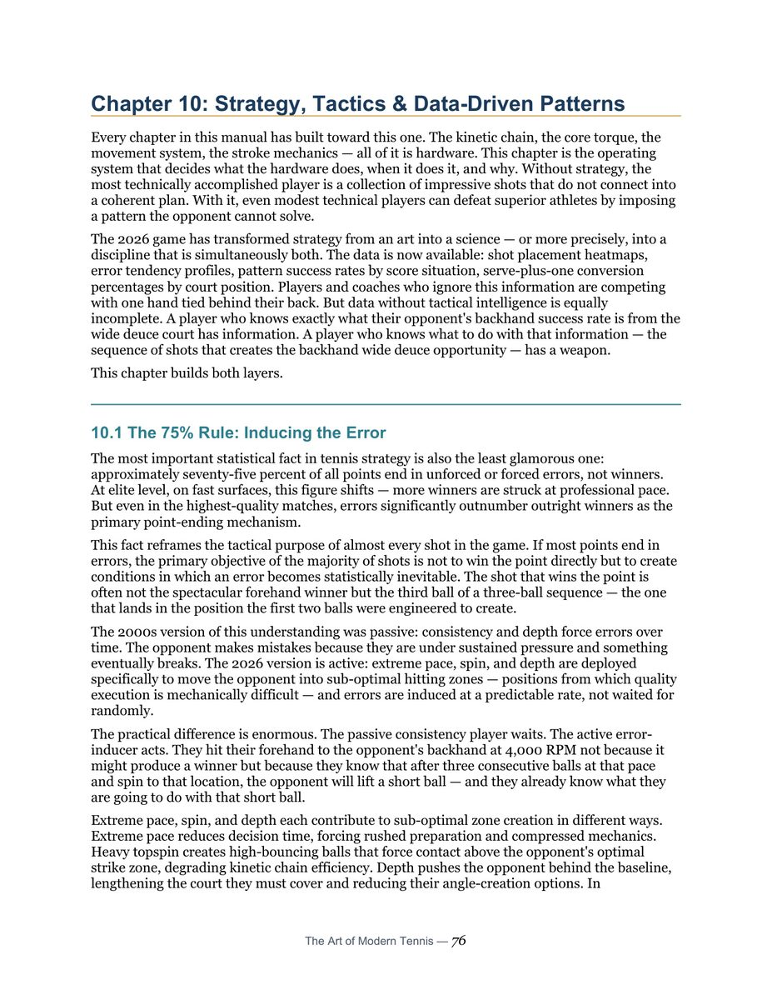
Hình 9: Mẫu hình chiến thuật dựa trên dữ liệu — Thống kê hiệu suất kiểm soát 4 nhịp đầu tiên và ưu thế của mẫu hình Serve + 1.
Figure 9: Data-Driven Tactical Patterns — First 4 shots win probability and the Serve + 1 tactical dominance.
Thể Lực Chuyên Sâu Quần Vợt, Độ Bền Tốc Độ & Phục Hồi Thần Kinh Physical Conditioning & Neurological Recovery
Đối với bài tập trung hòa, hãy thực thi nghiêm ngặt quy tắc không tấn công trước năm quả bóng. Những tay vợt có xu hướng hung hãn quá mức lúc đầu sẽ thấy sự ràng buộc vô cùng khó chịu - họ cảm thấy bị động, họ cảm thấy điểm đang trôi đi và họ muốn kết thúc nó. Sự khó chịu đó chính là việc học. Việc duy trì nó qua mười quả bóng liên tục sẽ xây dựng tính kiên nhẫn mà sự cạnh tranh quá quyết liệt chưa bao giờ cho phép phát triển. Kết hợp bài tập với một đoạn tóm tắt: "Điều gì đã mở ra ở các quả bóng từ bảy đến mười mà không có ở các quả bóng từ một đến ba?" Tay vợt có thể nói rõ câu trả lời hình học đã tiếp thu được bài học. : Điều hòa & Phục hồi Thể chất Phần thân chính là phần cứng mà mọi chương trong sách hướng dẫn này đều vận hành. Chuỗi động năng, sức mạnh luân chuyển, hệ thống chuyển động, cơ chế đánh bóng, mô hình chiến thuật — không cái nào trong số đó hoạt động nếu không có nền tảng vật lý có khả năng duy trì cường độ tối đa trong năm hiệp, phục hồi giữa các trận đấu trong 24 đến 48 giờ và duy trì khả năng đó trong suốt mùa giải chuyên nghiệp kéo dài 11 tháng. Mô hình chuẩn bị thể chất cho môn quần vợt năm 2026 gần như không giống mô hình năm 2000. Cách tiếp cận tập trung vào thể dục nhịp điệu đầu tiên vào đầu những năm 2000 - chạy đường dài làm nền tảng điều hòa, rèn luyện sức mạnh là yếu tố thứ yếu, định kỳ được xây dựng xung quanh một đỉnh cao duy nhất - đã dần được thay thế bằng một hệ thống được xây dựng xoay quanh độ bền bùng nổ, hiệu quả thần kinh cơ và nhu cầu năng lượng cụ thể của thực tế thời gian tập luyện và thời gian phục hồi hiện đại. Chương này mô tả đầy đủ hệ thống đó. 11.1 Mô hình định kỳ năm 2026: Luôn sẵn sàng Lịch ATP Tour đưa ra một thách thức điều hòa mà không môn thể thao chuyên nghiệp nào khác phải đối mặt với mức độ nghiêm trọng tương tự: ba mươi giải đấu trở lên mỗi năm, được lên lịch trong 11 tháng trên bốn bề mặt khác nhau, trong điều kiện khí hậu cực kỳ khác nhau, với nhu cầu di chuyển tích tụ căng thẳng sinh lý độc lập với thi đấu. Không có mùa giải thực sự. Không có khối phục hồi mở rộng. Có một lịch thi đấu kéo dài 52 tuần, trong đó tay vợt phải đồng thời thi đấu, rèn luyện, phục hồi và phát triển - tất cả cùng một lúc trong cả năm. Mô hình định kỳ tuyến tính - xây dựng thể lực cơ bản, phát triển khả năng điều hòa dành riêng cho môn thể thao, đạt đỉnh cao cho giải đấu lớn, phục hồi, lặp lại - được thiết kế cho các môn thể thao có mùa xác định và ngoài mùa giải rõ ràng. Nó không chuyển sang quần vợt chuyên nghiệp. Một tay vợt đạt đỉnh cao tại Wimbledon thông qua chu kỳ định kỳ truyền thống sẽ không được chuẩn bị đầy đủ về mặt thể chất cho US Open 6 vài tuần sau, và phần cuối của cú xoay người trên sân cứng diễn ra sau đó. Định kỳ tuyến tính tạo ra một đỉnh và một đáy trong mỗi chu kỳ. Lịch ATP yêu cầu sự sẵn sàng liên tục. Giải pháp năm 2026 là phân chia chu kỳ nhấp nhô được xây dựng xung quanh các chu kỳ vi mô - cấu trúc đào tạo hàng tuần thích ứng với lượng trận đấu của tuần trước thay vì tuân theo lịch định trước. Một tuần thi đấu - có thể diễn ra trận đấu từ 5 đến 7 ngày - đòi hỏi một phương pháp quản lý thể chất cụ thể: giảm thiểu sự tích tụ mệt mỏi trong khi vẫn duy trì kích hoạt thần kinh cơ. Một tuần tập luyện giữa các giải đấu đòi hỏi một cách tiếp cận khác: tải trọng có mục tiêu nhằm giải quyết những khoảng trống về thể chất được xác định trong quá trình thi đấu trong giải đấu mà không tạo ra tình trạng mệt mỏi sâu sắc làm suy giảm khả năng sẵn sàng thi đấu. Tiêu chuẩn "luôn sẵn sàng" - không bao giờ quá 72 giờ kể từ khi có thể lực sẵn sàng cho trận đấu - là nguyên tắc điều hành thống nhất mọi quyết định tập luyện. Bất kỳ buổi tập nào tạo ra sự mệt mỏi cần hơn ba ngày để giải quyết đều là buổi tập không phù hợp trong mùa thi đấu. Điều này không có nghĩa là các buổi học đều dễ dàng. Điều đó có nghĩa là hồ sơ tải của họ phù hợp với cửa sổ khôi phục có sẵn. Tay vợt tập luyện với cường độ 90% trong thời gian 5 ngày không thi đấu sẽ hồi phục kịp thời. Không có cùng một phiên trong khoảng thời gian 48 giờ giữa các trận đấu. 11.2 Độ bền bùng nổ: Sự thay đổi từ sức chịu đựng Mô hình điều hòa những năm 2000 coi quần vợt là môn thể thao sức bền với các yếu tố bùng nổ. Nền tảng là khả năng hiếu khí - được xây dựng thông qua việc chạy đường dài - trên hết là sức mạnh bùng nổ và tốc độ được xếp thành những phẩm chất phụ. Mô hình này tạo ra những tay vợt khỏe mạnh có khả năng duy trì các trận đấu dài. Nó không tạo ra những tay vợt được tối ưu hóa cho nhu cầu thể chất cụ thể của trò chơi năm 2026. Cuộc biểu tình hiện đại là ngắn. Phân tích dữ liệu trận đấu chuyên nghiệp luôn cho thấy thời lượng tập trung trung bình từ ba đến năm lượt đánh, với các lượt tập trung riêng lẻ kéo dài từ bốn đến mười giây và thời gian nghỉ giữa các điểm từ mười lăm đến hai mươi giây. Hệ thống năng lượng được sử dụng chủ yếu trong hồ sơ nhu cầu này là hệ thống phosphocreatine - hệ thống năng lượng tức thời, cường độ tối đa - với sự đóng góp một phần từ quá trình glycolysis kỵ khí trong các đợt tập luyện dài hơn. Quá trình trao đổi chất hiếu khí đóng vai trò hỗ trợ trong quá trình phục hồi giữa các điểm chứ không phải trong việc tạo ra nỗ lực trong thời gian đó. Chạy đường dài rèn luyện hệ thống năng lượng hiếu khí một cách rộng rãi. Nó hầu như không có tác dụng gì đối với hệ thống phosphocreatine, mô hình huy động thần kinh cơ cần thiết cho chuyển động sang bên bùng nổ hoặc sức mạnh quay tạo ra vận tốc chạm đất ưu tú. Một vận động viên quần vợt chạy 40 phút mỗi ngày là người có sức khỏe tốt. Họ không nhất thiết phải chuẩn bị cho lặp lại các nỗ lực sáu giây ở cường độ tối đa với khả năng phục hồi 22 giây trong năm hiệp - đó là những gì trò chơi hiện đại thực sự yêu cầu. Độ bền bùng nổ là tiêu chuẩn điều hòa năm 2026: khả năng lặp lại các nỗ lực thể chất ở cường độ tối đa - chạy nước rút, thay đổi hướng bùng nổ, tải thuận tay toàn chuỗi động - mà không làm giảm chất lượng của những nỗ lực đó trong suốt thời gian của một trận đấu dài. Đó không phải là sức chịu đựng theo nghĩa truyền thống. Đó là khả năng lặp lại của hiệu suất cao nhất, tức là chất lượng sinh lý khác nhau đòi hỏi các phương pháp tập luyện khác nhau. Mô hình huấn luyện phát triển độ bền bùng nổ là bài tập ngắt quãng phù hợp với nhu cầu trận đấu thực tế: nỗ lực với cường độ tối đa 10 giây, sau đó là thời gian nghỉ 20 giây, được lặp lại trong các hiệp mô phỏng tải trọng thể chất của một trận đấu giao bóng, một hiệp đấu và một trận đấu. Tỷ lệ làm việc và nghỉ ngơi, mức cường độ và kiểu chuyển động trong các khoảng thời gian sẽ phản ánh những gì trò chơi thực sự yêu cầu - không phải điều kiện thể thao chung chung xảy ra trong phòng tập thể dục hoặc trên đường chạy. 11.3 Tập luyện vi tải và kháng lực thay đổi Tải vi mô giải quyết vấn đề điều hòa trong mùa giải: làm thế nào để duy trì sức mạnh và sức mạnh thần kinh cơ trong suốt lịch thi đấu dày đặc mà không tích tụ sự mệt mỏi làm giảm hiệu suất trận đấu. Giải pháp là những kích thích sức mạnh nhỏ, thường xuyên - các buổi tập kéo dài từ 15 đến 20 phút, hai đến ba lần mỗi tuần, ở mức 60 đến 70% mức tải tối đa - đủ để duy trì kích hoạt thần kinh cơ mà không tạo ra nhu cầu phục hồi từ hai đến ba ngày của một buổi tập sức mạnh đầy đủ. Nguyên tắc sinh lý đằng sau hoạt động tải vi mô là sự thích ứng của thần kinh cơ cần có sự kích thích chứ không phải khối lượng. Một hiệp squat bùng nổ được thực hiện tốt ở mức tải vừa phải, được thực hiện hai lần mỗi tuần, duy trì mô hình huy động sợi co giật nhanh mà quá trình tập luyện nặng đã xây dựng trước mùa giải. Ba hiệp với tải trọng tối đa hai lần mỗi tuần trong lịch thi đấu sẽ tạo ra sự mệt mỏi tích lũy, biểu hiện là tốc độ giao bóng giảm và phân chia bước chậm hơn vào ngày thứ năm của giải đấu. Tải vi mô duy trì chất lượng; tải đầy đủ sẽ phá hủy nó trong thời gian thi đấu. Huấn luyện kháng lực thay đổi bằng cách sử dụng dây đeo và công nghệ bánh đà phù hợp với cấu hình lực-vận tốc của các chuyển động dành riêng cho quần vợt theo những cách mà việc tập luyện với trọng lượng tự do thông thường không thể thực hiện được. Động tác squat tiêu chuẩn cung cấp lực cản tối đa ở phần cuối của chuyển động và giảm lực cản khi tay vợt đứng lên - điều ngược lại với đường cong lực mà động tác chân bùng nổ trong cú giao bóng và cú thuận tay ở tư thế mở thực sự yêu cầu. Động tác squat chống dây hoặc chuyển động quay bằng bánh đà giúp tăng lực cản trong toàn bộ phạm vi, phù hợp với đường cong gia tốc tự nhiên của một cú đánh quần vợt và rèn luyện cơ bắp thông qua mối quan hệ vận tốc lực cụ thể mà chúng được yêu cầu thể hiện trên sân. Phương pháp tương phản - tập cường độ mạnh ngay sau đó là chuyển động bùng nổ ở tốc độ tối đa - tăng cường hệ thần kinh trung ương thông qua cơ chế gọi là điện thế hậu kích hoạt. Tải nặng kích hoạt nhóm đơn vị vận động hoàn toàn hơn so với khởi động tiêu chuẩn và chuyển động bùng nổ tiếp theo được thực hiện từ trạng thái mồi về mặt thần kinh tạo ra công suất cực đại cao hơn so với chuyển động tương tự mà không có tập nặng trước đó. Ví dụ: ba hiệp deadlift hạng nặng của Romania, ngay sau đó là ba lần xuất phát chạy nước rút ngang với tốc độ tối đa, rèn luyện cả chất lượng sức mạnh và chất lượng bùng nổ từ trạng thái được tăng cường về mặt thần kinh. Phương pháp tương phản là công cụ đào tạo chính để phát triển độ bền bùng nổ mà trò chơi năm 2026 yêu cầu. Nguyên tắc đặc hiệu yêu cầu sức quay — chất lượng thúc đẩy tốc độ chạm đất — được huấn luyện xoay vòng. Các bài squat và deadlift nặng xây dựng sức mạnh phần thân dưới góp phần tạo ra lực phản ứng mặt đất. Họ không phát triển mô-men quay cụ thể của cơ xiên và lõi sâu mà Chương 2 đã xác định là nguồn năng lượng chính của cú thuận tay và trái tay hiện đại. Bài tập xoay bóng y học, bài tập tách cáp-máy và bài tập xoay có bánh đà phải tạo thành một phần đáng kể của chương trình sức mạnh - không phải là phần bổ sung bổ sung mà là thành phần trung tâm. 11.4 Thiết lập lại thần kinh cơ: Phục hồi CNS Hệ thống thần kinh trung ương là biến số thường xuyên được quản lý nhất trong quá trình điều hòa quần vợt. Cơ bắp phục hồi rõ ràng - đau nhức, sưng tấy và phạm vi chuyển động bị hạn chế cung cấp thông tin phản hồi rằng việc tập luyện đã khiến chúng căng thẳng và cần phải phục hồi. Hệ thống thần kinh trung ương phục hồi một cách vô hình - không có cảm giác đau nhức, không có tín hiệu rõ ràng, không có kết quả khám thực thể nào cho thấy sự mệt mỏi của hệ thần kinh trung ương. Tuy nhiên, sự mệt mỏi của hệ thần kinh trung ương có thể là tình trạng hạn chế hiệu suất nhất mà một tuyển thủ cạnh tranh phải đối mặt trong lịch thi đấu dày đặc. Sự mệt mỏi của hệ thần kinh trung ương tích tụ từ hai nguồn: khối lượng và cường độ luyện tập thể chất cũng như căng thẳng về nhận thức và cảm xúc khi cạnh tranh. Cả hai đều đánh thuế cùng một hệ thống thần kinh trung ương. Một tay vợt vừa hoàn thành một trận đấu kéo dài 5 set không chỉ cảm thấy mệt mỏi về thể chất mà còn bị căng thẳng thần kinh trung ương đáng kể do quá trình xử lý nhận thức cường độ cao liên tục trong trận đấu - đọc các cú giao bóng, thực hiện các mẫu, quản lý áp lực cảm xúc trong ba đến bốn giờ. Cơ bắp của họ có thể cảm thấy tương đối tươi mới vào sáng hôm sau. CNS của họ thì không. Các dấu hiệu mệt mỏi của CNS là cụ thể và dễ nhận biết khi huấn luyện viên và tay vợt biết tìm chúng: tốc độ giao bóng giảm mặc dù cơ chế giao bóng đúng về mặt kỹ thuật, tách bước chậm hơn mặc dù có ý định di chuyển tốt, tốc độ tập luyện giảm mặc dù đã nỗ lực hết sức, tốc độ hồi phục bị rút ngắn mặc dù không bị đau cơ. Đây không phải là vấn đề về thể lực. Chúng là những vấn đề về hệ thần kinh trung ương, và việc điều hòa thể chất nhiều hơn sẽ không giải quyết được chúng - nó sẽ khiến chúng trở nên phức tạp hơn. Các giao thức phục hồi CNS hoạt động thông qua ba cơ chế chính. Chất lượng giấc ngủ là yếu tố quan trọng nhất và là yếu tố thường xuyên bị ảnh hưởng nhất bởi yêu cầu của các giải đấu chuyên nghiệp - các trận đấu muộn, di chuyển qua các múi giờ, lịch trình không đều đặn, lo lắng về hiệu suất. Cấu trúc giấc ngủ nhất quán - thời gian ngủ và thức giống nhau bất kể lịch thi đấu - là biện pháp can thiệp phục hồi CNS có tác động mạnh nhất hiện có. Bảy đến chín giờ ngủ chất lượng trong môi trường tối, mát mẻ, loại bỏ ánh sáng xanh trong 90 phút trước khi ngủ, mang lại tốc độ phục hồi thần kinh trung ương mà không có biện pháp can thiệp nào khác có thể đạt được. Ngâm trong nước lạnh - mười đến mười lăm phút trong nước ở nhiệt độ mười đến mười lăm độ C trong vòng chín mươi phút sau khi hoàn thành trận đấu - làm giảm trạng thái kích hoạt thần kinh mà nỗ lực cạnh tranh bền vững tạo ra, đẩy nhanh quá trình chuyển đổi từ sự thống trị của hệ thần kinh giao cảm sang phó giao cảm. Cơ chế một phần là mạch máu và một phần là thần kinh. Kết quả là sự phục hồi thần kinh trung ương nhanh hơn đáng kể được đánh giá bằng việc theo dõi sự thay đổi nhịp tim. Liệu pháp tương phản - ngâm nước lạnh và nước ấm xen kẽ - mang lại lợi ích tăng cường tuần hoàn của liệu pháp lạnh với tác dụng kích thích phục hồi cơ hoàn chỉnh hơn và dễ chịu hơn về mặt tâm lý đối với những tay vợt phải vật lộn với việc ngâm mình trong nước lạnh kéo dài. Ba chu kỳ lạnh hai phút, sau đó là hai phút ấm sẽ tạo ra lợi ích phục hồi cơ bắp và hệ thần kinh trung ương tương đương với việc ngâm mình trong nước lạnh liên tục ở hầu hết tay vợt. Tỷ lệ tập luyện và thi đấu trong cả mùa giải đòi hỏi phải có sự quản lý rõ ràng. Hơn một trăm trận đấu mỗi năm, kết hợp với việc luyện tập hàng ngày, tạo ra tải trọng căng thẳng cho hệ thần kinh trung ương không thể phục hồi nếu không quản lý tải trọng có chủ ý. Những tay vợt ưu tú và đội ngũ huấn luyện của họ sử dụng tính năng theo dõi sự thay đổi nhịp tim làm thước đo mục tiêu chính - HRV giảm vào buổi sáng cho thấy khả năng phục hồi thần kinh trung ương không đủ và sẽ kích hoạt việc giảm cường độ luyện tập bất kể tay vợt cảm thấy thế nào. 11.5 Điều hòa thị giác: Xử lý dữ liệu tốc độ cao Đôi mắt là một cơ quan thể thao. Giống như mọi hệ thống khác quyết định thành tích quần vợt, khả năng xử lý hình ảnh có thể đào tạo được - và lợi tức đầu tư vào đào tạo hình ảnh cao hơn mức hầu hết các huấn luyện viên và tay vợt đánh giá cao. Ba phẩm chất hình ảnh cụ thể xác định hiệu suất theo dõi bóng và dự đoán trong quần vợt. Thời gian phản ứng - tốc độ mà vỏ não thị giác xử lý dữ liệu chuyến bay của quả bóng đến và chuyển nó thành các lệnh vận động - một phần là do di truyền nhưng có thể huấn luyện được thông qua công việc theo dõi tốc độ cao cụ thể. Độ rộng tầm nhìn ngoại vi - phạm vi không gian mà tay vợt có thể phát hiện chuyển động của đối thủ trong khi vẫn duy trì trọng tâm vào quả bóng - xác định chất lượng tải trước theo hướng từng bước. Độ chính xác của nhận thức chiều sâu — độ chính xác mà hệ thống thị giác đánh giá khoảng cách của quả bóng theo ba chiều — xác định độ chính xác của điểm tiếp xúc trên tất cả các cú đánh. Huấn luyện bằng kính hoạt nghiệm sử dụng kính chặn gián đoạn đầu vào thị giác buộc não phải xử lý các kiểu chuyển động quần vợt từ dữ liệu không đầy đủ - gần giống với các điều kiện theo dõi bóng tốc độ cao trong đó bóng không liên tục được nhìn thấy bởi hố mắt. Những tay vợt tập luyện với kính nhấp nháy trong 30 đến 45 buổi cho thấy sự cải thiện đáng kể về khả năng bắt đầu chuyển động có thể đoán trước và độ chính xác của dự đoán tiếp xúc của họ từ một phần thông tin hình ảnh. Hiệu quả luyện tập được áp dụng trực tiếp cho chất lượng đọc giao bóng được mô tả trong Chương 5. Luyện tập mắt yên tĩnh — cố tình mở rộng sự tập trung ánh mắt vào vùng tiếp xúc trước, trong và sau khi bóng va chạm — kết nối trực tiếp với khái niệm VOR được giới thiệu trong Chương 6. Những tay vợt duy trì ánh mắt ổn định qua vùng tiếp xúc sẽ ức chế phản xạ tiền đình điều chỉnh công suất đầu ra khi mắt di chuyển sớm. Luyện tập mắt tĩnh lặng phát triển sự ổn định của ánh nhìn này thông qua quá trình luyện tập tiến bộ: bắt đầu với việc cố định mục tiêu, tiến tới cố định mục tiêu chuyển động và cuối cùng là thực hiện toàn bộ động tác với ánh mắt tập trung vào vùng tiếp xúc xuyên suốt. Những cải tiến về hiệu suất cả về độ chính xác và sức mạnh mà việc rèn luyện đôi mắt tĩnh lặng mang lại là một trong những phát hiện được lặp lại nhất quán trong khoa học thể thao áp dụng cho các môn thể thao chính xác. Mối liên kết giữa nhận thức và vận động có nghĩa là những cải tiến về điều kiện thị giác sẽ chuyển từ việc theo dõi đường bóng sang tốc độ đưa ra quyết định mang tính chiến thuật. Một tay vợt có khả năng xử lý hình ảnh nhanh hơn và chính xác hơn sẽ đọc được sự chuẩn bị của đối thủ sớm hơn, tạo ra những dự đoán dự đoán chính xác hơn và có nhiều thời gian hơn để nhận dạng mẫu và lập kế hoạch chiến thuật. Điều hòa thị giác không chỉ là một công cụ nhận thức - nó là một công cụ phát triển chiến thuật và nó thuộc về chương trình điều hòa cùng với công việc thể chất và kỹ thuật. 11.6 Sự phát triển về điều hòa: 2000–2026 Tính năng 2000–2010 2020–2026 Mục tiêu chính Khả năng và sức bền hiếu khí Độ bền bùng nổ và hiệu quả thần kinh cơ
Tính năng 2000–2010 2020–2026 Đào tạo nền tảng Chạy đường dài Khoảng thời gian làm việc phù hợp với thời gian tập luyện và thời gian nghỉ ngơi Mô hình sức mạnh Tuyến tính — tải nặng, chuyển động chậm Phương pháp tương phản — tải nặng theo sau là chuyển động bùng nổ Huấn luyện trong mùa Giảm âm lượng, duy trì cường độ Tải vi mô — duy trì tần số, giảm âm lượng và cường độ Công nghệ phục hồi Tắm nước đá và xoa bóp Giám sát CNS, liệu pháp tương phản, quản lý kiến trúc giấc ngủ Đào tạo thị giác Về cơ bản không có tiêu chuẩn giao thức Stroboscop và yên tĩnh cho mắt Mô hình định kỳ Tuyến tính - đỉnh duy nhất hàng năm Lượn lờ - sẵn sàng liên tục trong lịch 11 tháng Phòng ngừa chấn thương Phản ứng - điều trị khi bị thương Chủ động - kiểm tra trước tập và giám sát chuỗi động học (Kinetic Chain) 11.7 Phòng ngừa chấn thương: Kiểm tra trước Hab Mọi chấn thương đáng kể trong quần vợt hiện đại đều có dấu vết quay trở lại lỗi chuỗi động học (Kinetic Chain). đã thiết lập nguyên tắc chẩn đoán này. xây dựng hệ thống phòng ngừa trên đó. Ba vị trí chấn thương chính trong trận đấu năm 2026 là xương hông, vòng bít xoay và gân bánh chè. Mỗi đại diện cho một lỗ hổng chuỗi động cụ thể. Sự mài mòn của môi hông là kết quả của các lực cực mạnh và sự giảm tốc độ cao lặp đi lặp lại của cơ học trượt hiện đại. Labrum không được thiết kế để duy trì hàng nghìn lần lặp lại tải trọng bắt cóc sâu trong suốt mùa giải kéo dài 11 tháng mà không có sự chuẩn bị cụ thể. Pre-hab cho hông tập trung vào hai phẩm chất: khả năng di chuyển xoay bên trong - duy trì phạm vi chuyển động cho phép hông di chuyển qua toàn bộ cung trượt mà không bị cản trở bởi môi - và độ cứng của cơ mông-medius - sức mạnh lệch tâm giúp hấp thụ lực giảm tốc bên trong quá trình trượt thay vì cho phép nó tập trung ở môi âm hộ. Mười phút luyện tập hông hàng ngày, được thực hiện trước bất kỳ bài tập nào trên sân, làm giảm sự tích tụ căng thẳng ở môi bằng cách phân bổ tải trọng giảm tốc hiệu quả hơn đến các cơ xung quanh.
Chấn thương vòng quay trong trận đấu năm 2026 hầu như luôn là một sự cố do căng thẳng tích lũy hơn là một vết rách cấp tính. Cơ chế, được mô tả trong Chương 1, là lực hấp thụ của vai mà phần lõi không thể quản lý được - lặp đi lặp lại hàng nghìn lần trong một mùa cho đến khi vi tổn thương tích lũy vượt quá khả năng sửa chữa của mô. Pre-hab cho chóp xoay tập trung vào độ ổn định của xương bả vai — chức năng cơ thang trước và cơ thang dưới giúp duy trì xương bả vai ở đúng vị trí so với xương cánh tay trong quá trình xoay bên trong quả giao bóng — vào tính linh hoạt của bao sau, cho phép vòng cung giảm tốc của vai hoạt động chính xác thay vì tạo ra sự va chạm vào các cấu trúc phía sau. Căng thẳng ở gân bánh chè là kết quả của nhu cầu giảm tốc bùng nổ của động tác chân hiện đại - lực phanh bên ngoài chân, sự thay đổi hướng của bước trọng lực, cơ chế trượt và dừng. Gân bánh chè nối cơ tứ đầu với xương chày và hấp thụ lực giảm tốc của mỗi lần dừng chạy nước rút. Công việc tải lệch tâm - cụ thể là squats một chân hạ xuống chậm để tải gân dưới áp lực lệch tâm được kiểm soát - dần dần tăng cường khả năng của gân để xử lý các nhu cầu bùng nổ của chuyển động hiện đại mà không bị rách vi mô gây ra bệnh viêm gân mãn tính. Giao thức tập luyện trước hàng tuần kéo dài từ 20 đến 25 phút và nên diễn ra trước mỗi buổi tập trên sân. Bài tập vận động hông - xoay hông sâu, bước đi theo dải bên, giữ thăng bằng bằng một chân khi xoay - kích hoạt cơ hông trước khi nó được đưa vào sân. Kích hoạt vòng bít xoay - xoay ngoài dải, bài tập xương bả vai Y-T-W, trượt tường răng cưa - chuẩn bị cho phức hợp vai đáp ứng nhu cầu xoay bên trong của cú giao bóng. Công việc giảm tốc lệch tâm — động tác uốn cong kiểu Bắc Âu, squat hạ xuống chậm bằng một chân, các bước giảm tốc dải bên — tạo điều kiện cho các gân chịu tải trọng chuyển động mà chúng sẽ gặp trong phiên tiếp theo. Tiêu chuẩn trở lại thi đấu đối với các tay vợt bị chấn thương trong mô hình năm 2026 không phải là “không đau đớn”. Đó là "chuỗi động học (Kinetic Chain) hoàn chỉnh." Một tay vợt không bị đau nhưng chuỗi động năng chưa được phục hồi - hông vẫn di chuyển theo kiểu bù, vai vẫn hấp thụ nhiều lực hơn phần lõi đang quản lý - sẽ tái chấn thương ở cùng một vị trí trong vòng vài tuần sau khi trở lại. Tiêu chuẩn cao hơn yêu cầu phải thể hiện đầy đủ chức năng của chuỗi động học (Kinetic Chain) - được đo thông qua màn hình chuyển động và kiểm tra hiệu suất - trước khi đạt được lợi thế cạnh tranh. 11.8 Chương trình phát triển 12 tuần Chương trình sau đây được phỏng theo Ivanovicic et al. Khung 12 tuần với các bản cập nhật năm 2026, cung cấp mẫu phát triển có cấu trúc trên ba lộ trình. Nó tích hợp điều hòa thể chất, phát triển kỹ thuật, rèn luyện mô hình chiến thuật, chơi cờ và quản lý phục hồi như những mục tiêu theo đuổi đồng thời chứ không phải tuần tự.
Triết lý chương trình: Sự phát triển về thể chất và nhận thức xảy ra cùng nhau hoặc hoàn toàn không xảy ra. Một tay vợt luyện tập cú thuận tay của họ về mặt kỹ thuật nhưng không rèn luyện khả năng xử lý hình ảnh của họ đang phát triển một lớp kỹ năng tương tự. Một tay vợt xây dựng được độ bền bùng nổ nhưng không phải là trò chơi cờ vua của họ đang xây dựng phần cứng mà không cần phần mềm. Cấu trúc hàng tuần bên dưới coi tay vợt hoàn chỉnh là đơn vị phát triển. Các số liệu chính được theo dõi hàng tuần: Vận tốc giao bóng (súng radar hoặc cảm biến) — chỉ báo công suất đầu ra chính Độ chính xác về thời gian chia bước (video hoặc cảm biến) — chỉ báo chất lượng dự đoán Tốc độ tập luyện khi mỏi (vận tốc của quả bóng thứ mười so với quả bóng thứ mười so với quả bóng thứ mười). quả bóng đầu tiên trong các chuỗi tập luyện) — chỉ báo độ bền bùng nổ Tỷ lệ thực hiện mẫu (tỷ lệ phần trăm các mẫu dự định được thực hiện thành công trong trận đấu) — chỉ báo phát triển chiến thuật Đường dành cho người mới bắt đầu — Cấu trúc tuần: Nội dung phiên ngày Thứ Hai Thể lực 20 phút tập (nỗ lực 10 giây / nghỉ 20 giây × 20 lần lặp lại) + chuẩn bị cho vai và hông Thứ ba Kỹ thuật Cú thuận tay và cơ chế giao bóng — nguyên tắc cơ bản về chuỗi động học (Kinetic Chain) Thứ Tư Sức mạnh phương pháp tương phản vật lý — thân dưới + bóng thuốc xoay Thứ năm Kỹ thuật + Cờ vua Trái tay và cơ chế trả về + cờ vua 20 phút Mô hình thứ Sáu Giới thiệu mô hình 3 phát - giao bóng cộng với một Trận đấu thứ Bảy Điểm cạnh tranh được giám sát với mục tiêu mô hình Phục hồi Chủ nhật Liệu pháp tương phản + bài tập di chuyển Đường trung gian - Cấu trúc tuần:
Nội dung phiên ngày Thứ hai Bài tập khoảng thời gian vật lý (10 giây / 20 giây × 25 lần lặp lại) + giao thức chuẩn bị đầy đủ Thứ ba Tinh chỉnh cú đánh kỹ thuật - điểm tiếp xúc, khe, kết thúc lasso Thứ tư Phương pháp tương phản vật lý - toàn thân + luyện tập tốc độ vợt VBT Thứ năm Kỹ thuật + Cờ vua Khoan mô hình chiến thuật + cờ đạn 20 phút Thứ sáu Mẫu + Chuyển động Thực hiện mẫu 3 phát dưới áp lực + bóng mờ Thứ bảy Đấu trận Đấu trận đấu với theo dõi mẫu và đánh giá dữ liệu sau trận đấu Phục hồi CNS Chủ nhật giám sát + củng cố giao thức ngủ Bản nhạc nâng cao — Cấu trúc tuần: Nội dung phiên ngày Thứ hai Khoảng thời gian mô phỏng trận đấu vật lý + chuẩn bị đầy đủ Thứ ba Kỹ thuật + Trực quan Tinh chỉnh cú đánh ở tốc độ trận đấu + luyện tập hoạt nghiệm Thứ Tư Phương pháp tương phản vật lý + tải xoay bánh đà Thứ Năm Khoan thư viện chiến thuật + Mẫu cờ vua - tất cả sáu mẫu cốt lõi + cờ vua 20 phút Thứ sáu Tích hợp Mô phỏng toàn bộ trận đấu - thể chất, kỹ thuật và chiến thuật ở cường độ trận đấu Thứ bảy Thi đấu hoặc Đấu tập Điểm cạnh tranh đầy đủ với đánh giá video sau phiên Phục hồi Chủ nhật Giao thức đặt lại CNS đầy đủ - liệu pháp tương phản, ngủ kiến trúc, giám sát HRV
Cả ba đường đua đều bao gồm ném lao hoặc ném bóng thuốc qua đầu một lần mỗi tuần, tuân theo nguyên tắc luyện tập dựa trên vận tốc của Bruguera: chuyển động nổ trên cao rèn luyện chuỗi xoay bên trong của cú giao bóng ở tốc độ tối đa, phát triển mô hình tuyển dụng thần kinh cơ mà chỉ riêng các cuộc tập trận giao bóng trên sân không thể tiếp cận đầy đủ. Ở cấp độ của bạn, quản lý điều hòa thiên về giám sát tải thông minh hơn làm việc chăm chỉ hơn. Những tay vợt bị suy sụp ở nửa sau mùa giải hầu như không bao giờ được huấn luyện dưới mức - họ bị quá tải nếu không có sự giám sát và quản lý phục hồi CNS đầy đủ. Ba hành động cụ thể sẽ tạo ra lợi ích hiệu quả tức thời nhất. Trước tiên, hãy thực hiện theo dõi HRV vào mỗi buổi sáng - phép đo năm phút trước khi thức dậy để cung cấp chỉ số khách quan đáng tin cậy nhất về trạng thái phục hồi của CNS mà không cần phòng thí nghiệm. Hãy để con số hướng dẫn cường độ luyện tập ngày hôm đó chứ không phải lịch trình chương trình. HRV giảm đáng kể có nghĩa là chỉ hoạt động ở hệ thần kinh trung ương - chuyển động và công việc kỹ thuật nhẹ, không tải. HRV bình thường có nghĩa là đào tạo đầy đủ là phù hợp. Thứ hai, hãy kiểm tra quá trình luyện tập trong tuần thi đấu của bạn. Bạn làm gì vào ngày trước trận đấu, ngày sau trận đấu vòng một, giữa các trận đấu trong những ngày liên tiếp? Hầu hết những tay vợt ưu tú đều đã quản lý được điều này rồi. Nhưng hãy kiểm tra xem liệu các buổi tập trong tuần trong giải đấu của bạn có tải nhỏ hay không - mười lăm đến hai mươi phút kích hoạt mà không gây mệt mỏi tích lũy - hay liệu đó là các buổi tập luyện tiêu chuẩn với các trận đấu được thêm vào bên trên. Mô hình thứ hai gây ra tình trạng mệt mỏi ở hệ thần kinh trung ương vào ngày thứ tư của giải đấu. Thứ ba, bổ sung điều hòa thị giác. Hai mươi phút tập theo dõi bóng hoạt nghiệm ba lần mỗi tuần, được duy trì trong ba tháng, sẽ tạo ra những thay đổi có thể đo lường được về tốc độ dự đoán và độ chính xác của điểm tiếp xúc của bạn. Đây là một trong những khoản đầu tư điều hòa có lợi thế đúng thời hạn cao nhất hiện có mà hầu hết những tay vợt ưu tú hiện không sử dụng. Khi thiết kế các chương trình rèn luyện cho các tay vợt của bạn, nguyên tắc cụ thể là kim chỉ nam chính cho bạn. Mọi lựa chọn điều hòa phải trả lời được câu hỏi: nhu cầu quần vợt cụ thể này phát triển như thế nào? Đáp án chạy đường dài: tập aerobic cơ bản. Phương pháp tương phản với câu trả lời squat-to-sprint: bước đầu tiên bùng nổ. Câu trả lời bóng thuốc quay:
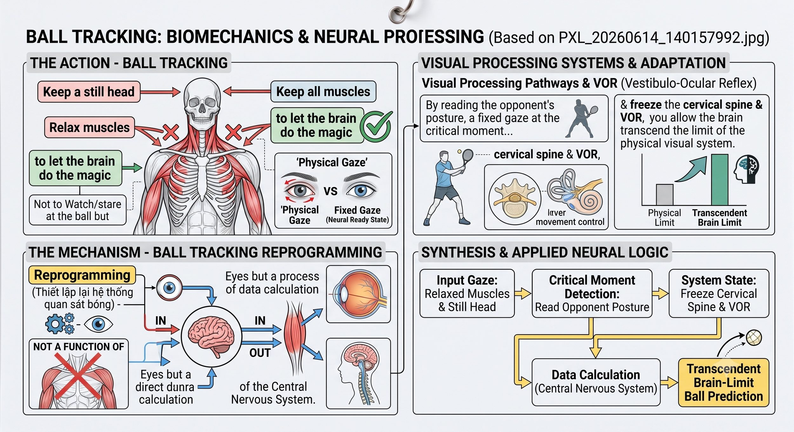
Hình 10: Rèn luyện khả năng theo dõi bóng thần kinh (Neural Ball Tracking) & Phục hồi cảm giác vận động.
Figure 10: Neural Ball Tracking & Proprioceptive Recovery in High-Performance Tennis.
Trò Chơi Tâm Trí: Trạng Thái Nhận Thức Satori Dưới Áp Lực Thi Đấu The Mental Game & The Satori Flow State Under High Pressure
mô-men xoắn khi chạm đất. Nếu bạn không thể trả lời câu hỏi cụ thể thì bài tập đó có thể thuộc về một chương trình thể thao nói chung chứ không phải một chương trình dành riêng cho quần vợt. Để theo dõi tình trạng mệt mỏi của CNS, hãy hướng dẫn tay vợt của bạn tự báo cáo các dấu hiệu cụ thể: tốc độ giao bóng giảm mặc dù kỹ thuật đúng, tách bước chậm hơn mặc dù có ý định di chuyển, tốc độ đánh bóng ngắn hơn mặc dù đã nỗ lực hết sức. Những tín hiệu chủ quan này, kết hợp với dữ liệu HRV, cung cấp cho bạn thông tin để điều chỉnh cường độ luyện tập trước khi tình trạng mệt mỏi của hệ thần kinh trung ương trở nên hạn chế hiệu suất. Những tay vợt không thể nhận ra sự mệt mỏi của CNS ở bản thân sẽ luôn vượt qua nó và phải trả giá bằng chất lượng trận đấu cũng như khả năng bị chấn thương. Đối với pre-hab, hãy đặt nó là không thể thương lượng trước mỗi buổi học. Hai mươi lăm phút chuẩn bị trước cần được coi trọng như công việc kỹ thuật sau đó. Những tay vợt bỏ qua giai đoạn luyện tập trước vì họ cảm thấy ổn chính xác là những tay vợt tích lũy sát thương vi mô và trở thành vết rách môi sáu tuần sau đó. Pre-hab không dành cho những ngày họ cảm thấy đau nhức. Đó là cho tất cả những ngày họ cảm thấy ổn. : Trò chơi tinh thần & Trạng thái ngộ mỗi chương trong cuốn sách này mô tả một hệ thống vật lý hoặc chiến thuật. Chương này mô tả hệ thống chi phối tất cả chúng. Chuỗi động năng hoạt động một cách chính xác khi tâm trí cho phép. X-Factor tải đầy đủ khi tay vợt thư giãn. Khe rơi xuống một cách tự nhiên khi cánh tay không có sự giám sát có ý thức. Mẫu này thực thi khi quyết định được đưa ra trước khi áp lực ập đến. Trong mỗi chương, ở mỗi thời điểm quan trọng, trạng thái tinh thần của tay vợt là yếu tố quyết định liệu sự chuẩn bị về thể chất và chiến thuật có chuyển thành hiệu suất hay không. đặt tên cho biến đó một cách rõ ràng, mô tả nó một cách khoa học và cung cấp các quy trình thực tế để phát triển nó. Phát hiện trọng tâm của tất cả các nghiên cứu về hiệu suất tinh thần trong thể thao - từ công trình Trò chơi nội tâm của Gallwey vào những năm 1970 đến khoa học thần kinh về dòng chảy năm 2026 - đều giống nhau: bộ óc phân tích, có ý thức không phải là người thực thi thành tích thể thao ưu tú. Đó là trở ngại cho nó. Công việc của tâm trí trong thi đấu không phải là kiểm soát cơ thể. Đó là thoát khỏi con đường của cơ thể. 12.1 Nền tảng thần kinh: Tại sao tâm trí điều khiển cơ thể Chương 1 khẳng định rằng trí nhớ cơ bắp (Muscle Memory) bắp (Muscle Memory) là một huyền thoại - rằng tất cả các kỹ năng vận động đều tồn tại trong hệ thống thần kinh, không phải trong cơ bắp. xây dựng toàn bộ ý nghĩa của thực tế đó thành một hệ thống hoạt động tinh thần thực tế.
Khi một tay vợt luyện cú thuận tay mười nghìn lần, họ không điều hòa cơ bắp tay của mình để ghi nhớ chuyển động. Họ đang xây dựng một con đường thần kinh - một đường cao tốc thông tin tốc độ cao, độ chính xác cao từ vỏ thị giác qua vỏ não vận động qua tủy sống đến các cơ - thực hiện cú thuận tay như một lệnh tự động, tích hợp duy nhất. Các cơ là đầu ra. Con đường thần kinh là kỹ năng. Sự khác biệt này có một hệ quả sâu sắc đối với hoạt động tinh thần. Một đường dẫn thần kinh, sau khi được xây dựng, sẽ hoạt động một cách đáng tin cậy nhất khi nó không bị can thiệp. Sự giám sát có ý thức của một kiểu vận động đã được huấn luyện — cố gắng theo dõi cách cầm vợt, vung vợt sau, điểm tiếp xúc trong khi thực hiện — chèn quá trình xử lý phân tích giữa lệnh và chuyển động, làm giảm tính tự động mà quá trình huấn luyện đã tạo ra. Tay vợt đã luyện tập mười nghìn cú thuận tay và sau đó nghĩ về kỹ thuật thuận tay của họ trong một trận đấu sẽ không tăng thêm độ chính xác. Họ đang chèn nhiễu vào tín hiệu vốn đã sạch. Sự diễn tập trong tâm trí là có thật về mặt thần kinh vì cấu trúc tương tự. Nghiên cứu về hình ảnh thần kinh luôn cho thấy rằng việc tưởng tượng một cách sinh động một chuyển động sẽ kích hoạt các đường dẫn truyền của vỏ não vận động giống như việc thực hiện nó về mặt vật lý. Bộ não, xử lý một đoạn phim nội bộ sống động về cú thuận tay, thực hiện các lệnh vận động tương tự như bộ não thực hiện cú thuận tay - ở biên độ thấp hơn nhưng kiểu mẫu giống hệt nhau. Đây là lý do tại sao những tay vợt ưu tú dành 5 phút để hình dung cú giao bóng của họ trước trận đấu sẽ có tỷ lệ giao bóng đầu tiên tốt hơn đáng kể trong trận đấu tiếp theo. Họ đã làm nóng đường dẫn thần kinh về mặt thể chất mà không cần vung vợt. Trình tự Ý ĐỊNH → HÀNH ĐỘNG → HIỂN THỊ từ nghiên cứu ý định lượng tử là biểu hiện thực tế của nguyên lý thần kinh này. Ý định - quyết định rõ ràng, cam kết, xác định trước về điều sắp xảy ra - sẽ kích hoạt đường dẫn thần kinh. Hành động này là sự thực hiện con đường, không có sự can thiệp có ý thức. Biểu hiện là cú sút. Trình tự này hoạt động khi cả ba bước đều khác biệt và tuần tự. Nó thất bại khi không có ý định (chơi phản ứng), khi giai đoạn hành động bị gián đoạn bởi ý định mới (cố gắng thay đổi cú đánh giữa lúc vung), hoặc khi tay vợt bỏ qua để thể hiện sự lo lắng trước khi hành động hoàn tất (xem bóng sẽ đi đâu trước khi nó rời khỏi dây). 12.2 9 đặc điểm của bộ não nhà vô địch Nghiên cứu trong khuôn khổ Chuyển đổi mô hình xác định 9 đặc điểm nhận thức cụ thể được chia sẻ bởi tất cả các nhà vô địch trong các môn thi đấu tốc độ cao, có độ phức tạp cao - những phẩm chất được thể hiện như nhau bởi Federer trong quần vợt, Schumacher trong Công thức 1 và mọi vận động viên khác đã đạt được sự xuất sắc bền vững ở cấp độ cao nhất. Đây không phải là những đặc điểm tính cách. Chúng là những kỹ năng nhận thức có thể đào tạo được.
Sức mạnh ý chí là phẩm chất nền tảng - sự cam kết bất khuất đối với quá trình duy trì hiệu suất khi kết quả không chắc chắn, khi điểm số nghiêng về tay vợt, khi sự mệt mỏi đang làm suy giảm phần cứng vật lý. Trong tennis, sức mạnh ý chí được thể hiện rõ nhất không phải ở những cú đánh lớn mà ở set thứ ba, game thứ sáu, khi cơ thể mệt mỏi và các phương án chiến thuật ngày càng thu hẹp. Tay vợt có sức mạnh ý chí đặc biệt sẽ thực hiện cùng một giao thức đặt trước điểm với tỷ số 0-5 trong set thứ ba mà họ đã thực hiện với tỷ số 5-0 trong set đầu tiên. Nadal là biểu hiện rõ ràng của phẩm chất này trong trò chơi hiện đại - sức mạnh ý chí của anh ấy đã nhiều lần tạo ra những chiến thắng từ những vị trí mà bằng chứng thể chất và chiến thuật cho thấy ngược lại. Tập trung và Tập trung là khả năng hướng sự chú ý hoàn toàn đến tác nhân kích thích có liên quan - quả bóng, sự chuẩn bị của đối phương, kế hoạch trước điểm - và duy trì hướng đó trong suốt thời gian của một trận đấu dài. Tập trung trong quần vợt không phải là trạng thái tỉnh táo tối đa được duy trì liên tục. Đó là khả năng quay trở lại, hết điểm này đến điểm khác, đến mục tiêu chú ý cụ thể mà hiệu suất yêu cầu. Các nhà vô địch mất tập trung giữa các điểm, giữa các trận đấu, giữa các hiệp đấu - như tất cả con người đều làm. Điểm khác biệt của họ là tốc độ phục hồi: khả năng thiết lập lại sự tập trung trong vòng vài giây sau khi mất nó, thông qua một giao thức đã được thực hành chứ không phải là nỗ lực ý chí vô hướng. Lập kế hoạch là quyết định mang tính chiến thuật trước điểm được mô tả trong mô hình cờ chớp của Chương 10. Ở cấp độ nhà vô địch, lập kế hoạch không chỉ là lựa chọn cú đánh - mà còn là sự chuẩn bị toàn diện trước trận đấu để xác định xu hướng của đối thủ, chọn trước các phương thức có khả năng thành công nhất để chống lại họ và cam kết trước các phản ứng chiến thuật cụ thể cho các tình huống trận đấu cụ thể trước khi áp lực cạnh tranh khiến việc suy nghĩ rõ ràng trở nên khó khăn. Khả năng lập kế hoạch của Sinner là một trong những phẩm chất kỹ lưỡng nhất trong chuyến du đấu hiện tại - các đối thủ của anh ấy cho biết cảm thấy rằng anh ấy luôn dẫn trước hai hoặc ba cú sút khi nó diễn ra. Chấp nhận rủi ro là sự sẵn sàng thực hiện các mô hình có thưởng cao ngay cả khi kết quả không chắc chắn - cú thuận tay trong ở tỷ số 30-40, cú đánh rơi từ phía sau đường cuối sân, đòn tấn công lén lút ở quả giao bóng thứ hai. Việc chấp nhận rủi ro được điều chỉnh chứ không phải liều lĩnh: nhà vô địch chấp nhận rủi ro được tính toán vào những thời điểm có lợi thế chiến thuật tối đa chứ không phải ngẫu nhiên. Alcaraz đại diện cho giai đoạn cuối có rủi ro cao của trò chơi hiện đại - việc anh sẵn sàng thực hiện những cú đánh bất ngờ, có độ khó cao trong những thời điểm quan trọng chính là điều khiến môn quần vợt của anh không được chuẩn bị sẵn sàng và gây bất ổn tâm lý cho đối thủ. Nhận thức về Tình huống — nhận thức về các yếu tố môi trường trong một khoảng thời gian và không gian, hiểu ý nghĩa của chúng và dự đoán trạng thái của chúng trong tương lai gần — là phẩm chất nhận thức cho phép giai đoạn Đọc của mô hình cờ chớp. Trong quần vợt, nhận thức về tình huống hoạt động đồng thời ở ba cấp độ: đọc sự chuẩn bị ngay lập tức của đối thủ, hiểu ý nghĩa của nó đối với diễn biến có thể xảy ra của điểm hiện tại và dự đoán điểm sẽ ở đâu trong thời gian hai lượt đánh. Tay vợt hoạt động ở cả ba cấp độ sẽ tạo ra những quyết định tốt hơn nhanh hơn những tay vợt nhìn mà không hiểu hoặc hiểu mà không phóng chiếu. Ra quyết định là nhận thức về tình huống được chuyển thành hành động - khả năng lựa chọn phản hồi chính xác từ nhiều lựa chọn có sẵn dưới áp lực thời gian cực độ và cam kết hoàn toàn thực hiện nó. Việc ra quyết định ưu tú không phải là suy nghĩ nhanh hơn. Ít phải suy nghĩ hơn: hệ thống nhận dạng mẫu đã được huấn luyện đưa ra quyết định trước khi phân tích có ý thức có thời gian can thiệp. Tay vợt "chỉ biết" phải đi đâu khi chạy thuận tay trong tích tắc không có năng khiếu đặc biệt về tốc độ xử lý thô. Họ đã đưa ra quyết định nhận dạng khuôn mẫu đó mười nghìn lần trong thực tế và giờ đây nó hoạt động dưới ngưỡng suy nghĩ có ý thức. Dự đoán - đọc ý định của đối thủ từ sự chuẩn bị của họ thay vì chờ đường bay bóng được xác nhận - là phẩm chất mà Chương 5 đã thiết lập làm điểm khác biệt chính giữa những người trở lại xuất sắc và những người xuất sắc. Dự đoán không thể tách rời khỏi trí thông minh chiến thuật: tay vợt đã nghiên cứu đối thủ, biết mô hình của họ và luyện tập trong đầu các tình huống có thể xảy ra đang vận hành từ một mô hình dự đoán phong phú hơn tay vợt chỉ dựa vào các tín hiệu trực quan thuần túy. Dự đoán của Federer không chỉ đơn giản là xử lý hình ảnh nhanh hơn - đó là một mô hình nhận thức hoàn chỉnh hơn về hành vi có thể xảy ra của đối thủ, được xây dựng từ sự chuẩn bị và cập nhật theo thời gian thực. Phản xạ - tốc độ phản ứng của động cơ sau khi đưa ra quyết định - là biểu hiện vật lý của chất lượng đường dẫn thần kinh được mô tả trong phần 12.1. Phản xạ theo nghĩa được rèn luyện không phải là tốc độ thần kinh thô. Chúng là sản phẩm của một lộ trình vận động hoàn toàn tự động được thực hiện mà không có độ trễ phân tích. Phản xạ căng cơ được mô tả ở Chương 1 là cơ chế sinh lý. Trạng thái Mushin được mô tả ở Chương 6 là trạng thái tâm lý cho phép nó hoạt động ở tốc độ tối đa. Kiểm soát tình huống hoàn chỉnh là sự tổng hợp của tám phẩm chất khác - trạng thái trong đó sức mạnh ý chí duy trì nỗ lực, tập trung hướng sự chú ý, lập kế hoạch cấu trúc các quyết định, chấp nhận rủi ro thích hợp tạo ra cơ hội, nhận thức tình huống cung cấp thông tin, ra quyết định lựa chọn phản ứng, dự đoán vị trí cơ thể trước và phản xạ thực hiện chuyển động. Djokovic ở thời kỳ đỉnh cao là biểu hiện tiêu biểu của môn quần vợt về khả năng kiểm soát hoàn toàn tình huống: một tay vợt dường như đã đưa ra quyết định chính xác trong mọi đường bóng vì tám phẩm chất cơ bản đều hoạt động đồng thời ở cấp độ ưu tú. 12.3 Bản thân 1 so với Bản thân 2: Trò chơi nội tâm Khung trò chơi nội tâm của Timothy Gallwey — được phát triển thông qua quan sát các tay vợt và huấn luyện viên quần vợt ưu tú qua nhiều thập kỷ làm việc — cung cấp mô hình hữu ích thiết thực nhất cho hiểu và khắc phục sự cố hiệu suất dưới áp lực. Bản thân 1 là bộ phận phân tích, chỉ dẫn, phán xét trong tâm trí tay vợt - bộ phận bình luận bên trong đánh giá, đính chính, lo lắng và chỉ đạo. Ý định của Bản thân 1 là tốt: nó muốn hiệu suất đạt mức xuất sắc và nó can thiệp khi tin rằng hiệu suất đang gặp rủi ro. Nhưng sự can thiệp của nó gần như phản tác dụng. Hướng dẫn của Bản thân 1 để "giữ khuỷu tay lên" khi giao bóng không cải thiện cú giao bóng - nó chèn một quy trình phân tích vào giữa chuỗi động cơ tự động, phân mảnh việc thực hiện chuỗi động liền mạch mà cú giao bóng phụ thuộc vào. Nỗi lo lắng của Bản thân 1 về lỗi kép không ngăn ngừa được lỗi kép - nó kích hoạt phản ứng lo lắng tạo ra lực siết chặt tay cầm và viết tắt xoay tạo ra chúng. Bản thân 2 là cơ thể được đào tạo - kiến trúc thần kinh được xây dựng qua hàng nghìn giờ luyện tập có chủ ý, có khả năng thực hiện các kiểu vận động phức tạp với tốc độ mà suy nghĩ có ý thức không thể sánh được. Bản thân 2 không cần hướng dẫn trong thời gian này. Nó cần sự cho phép. Công việc của tay vợt trong cuộc thi là cho phép Bản thân 2 được hoạt động - rút lui khỏi sự giám sát và tin tưởng rằng việc huấn luyện là đủ vào lúc này. Nghịch lý mà Gallwey đã xác định và khoa học thần kinh kể từ đó đã xác nhận là việc cố gắng nhiều hơn một cách có ý thức sẽ tạo ra kết quả tồi tệ hơn khi kỹ năng vận động liên quan đã được rèn luyện theo tính tự động. Tay vợt tập trung cao độ vào cơ chế thuận tay của họ trong một trận đấu sẽ thực hiện cú thuận tay tệ hơn so với tay vợt tập trung vào một tín hiệu quy trình duy nhất và để cơ thể làm những gì nó đã được huấn luyện để làm. Nỗ lực, ở mức độ thực hiện kỹ năng tự động, tỷ lệ nghịch với hiệu suất. Các giao thức thực tế để kích hoạt Bản thân 2 thay vì Bản thân 1 có chung một cấu trúc: chúng chiếm giữ tâm trí ý thức bằng thứ gì đó không cản trở việc thực hiện vận động trong khi cho phép con đường thần kinh hoạt động không bị gián đoạn. Thói quen đánh bóng trước là phương tiện chính - một chuỗi các hành động thể chất và một tín hiệu quy trình duy nhất hướng sự chú ý của tâm trí có ý thức đến một điều gì đó cụ thể (độ nảy của quả bóng, cảm giác của dây, mục tiêu âm thanh khi tiếp xúc) thay vì để nó tự do giám sát và gây ra thảm họa. Khi Bản thân 1 bận rộn với tín hiệu quy trình, Bản thân 2 sẽ thực thi. 12.4 Trạng thái ngộ: Dòng chảy trong thi đấu Ngộ — khái niệm của Thiền tông về sự rõ ràng đột ngột, nhận thức hoàn toàn về khoảnh khắc hiện tại và sự xóa bỏ sự khác biệt giữa người thực hiện và hành động — là mô tả chính xác nhất có sẵn trong bất kỳ ngôn ngữ nào về điều mà các vận động viên ưu tú gọi là dòng chảy, và điều mà khoa học thần kinh gọi là thái độ tạm thời.
Hạ trán tạm thời là sự giảm tạm thời hoạt động của vỏ não trước trán xảy ra khi hoạt động thể chất cường độ cao. Vỏ não trước trán là nơi xử lý phân tích, tự đánh giá và đưa ra quyết định có ý thức - chính xác là các chức năng cấu thành Bản ngã 1. Khi hoạt động của nó tạm thời bị giảm, hệ thống vận động được giải phóng khỏi sự giám sát có ý thức. Các đường dẫn thần kinh đã được huấn luyện thực hiện với tốc độ tối đa và độ chính xác hoàn toàn. Tay vợt trải nghiệm điều này như một sự xuất sắc dễ dàng — những cú đánh có cảm giác tự động, những quyết định có cảm giác rõ ràng, chuyển động có cảm giác nhẹ nhàng. Đây không phải là một trạng thái thần bí. Đó là một tình trạng cụ thể, có thể đo lường được về mặt thần kinh mà những người có thành tích xuất sắc tiếp cận được một cách đáng tin cậy hơn những người khác. Các điều kiện tạo ra dòng chảy có nhiều khả năng xảy ra hơn đã được thiết lập rõ ràng. Sự cân bằng giữa thử thách và kỹ năng phải ở mức tối ưu - nhiệm vụ phải yêu cầu toàn bộ khả năng của tay vợt mà không vượt quá khả năng đó. Một đối thủ có trình độ thấp hơn đáng kể so với trình độ của tay vợt sẽ không tạo ra dòng chảy vì thử thách không đủ để tập trung hoàn toàn tâm trí. Một đối thủ ở trên đáng kể sẽ không đạt được điều đó vì thử thách vượt quá kỹ năng và tạo ra sự lo lắng hơn là hấp thụ. Điều kiện dòng chảy lý tưởng là một trận đấu với một đối thủ có trình độ gần bằng nhau mà kết quả thực sự không chắc chắn. Sự tập trung vào thời điểm hiện tại vừa là điều kiện tiên quyết vừa là hệ quả của dòng chảy. Tay vợt đang nghĩ về lỗi trước đó hoặc kết quả trận đấu không có mặt ở thời điểm hiện tại. Tay vợt đang xử lý quỹ đạo của quả bóng hiện tại, vị trí hiện tại của đối thủ và nhu cầu chiến thuật của điểm hiện tại - không còn băng thông nhận thức để đánh giá hoặc dự đoán kết quả - chính xác là ở trạng thái chú ý mà từ đó dòng chảy xuất hiện. Dòng chảy bị phá vỡ một cách dễ đoán nhất thông qua ba cơ chế: tập trung vào kết quả — suy nghĩ về việc trận đấu sẽ thắng hay thua hơn là những gì điểm hiện tại yêu cầu; nhận thức về điểm số - tính toán điểm hiện tại có ý nghĩa như thế nào đối với trận đấu thay vì chơi theo điểm hiện tại; và sự cố định của đối thủ - nghĩ về chất lượng, danh tiếng hoặc thứ hạng của đối thủ hơn là vị trí hiện tại của họ trên sân. Mỗi cơ chế này đều chuyển hướng tâm trí có ý thức từ quá trình ở thời điểm hiện tại sang đánh giá kết quả trong tương lai - sự thay đổi chính xác kích hoạt Bản thân 1 và vô hiệu hóa trạng thái dòng chảy. Việc nhập lại luồng sau khi luồng bị hỏng yêu cầu trình tự đặt lại - một giao thức vật lý ngắn gọn đưa tay vợt trở lại thời điểm hiện tại. Hơi thở là cơ chế thiết lập lại đáng tin cậy nhất: một lần thở ra chậm, dài hơn hít vào, sẽ kích hoạt hệ thần kinh phó giao cảm, làm giảm lượng cortisol tăng đột biến đi kèm với sự lo lắng của Bản thân 1 và tạo ra một khoảng dừng sinh lý trong đó có thể chuyển hướng chú ý sang trọng tâm quá trình. Ba giây hít thở có chủ ý giữa các điểm, kết hợp với một tín hiệu quá trình xúc giác hoặc hình ảnh duy nhất, sẽ đưa nhiều tay vợt trở lại mức hiệu suất trước khi chơi hơn bất kỳ khoảng thời gian tự hướng dẫn hoặc tự nói chuyện tạo động lực nào.
12.5 Hình dung: Công cụ tinh thần hiệu quả nhất Hình dung là công cụ rèn luyện tinh thần mạnh mẽ nhất hiện có — và thường xuyên bị lạm dụng nhất. Việc sử dụng sai có hai hình thức: hình dung mơ hồ hơn là cụ thể và hình dung tập trung vào kết quả hơn là quá trình. Hình dung mơ hồ - tưởng tượng "đánh một quả giao bóng tốt" mà không xác định thế đứng, vị trí ném, vị trí cúp, vị trí mục tiêu và cảm giác giải phóng vòng quay bên trong - kích hoạt các đường vận động yếu và không nhất quán. Mô phỏng động cơ của não về “một cú giao bóng tốt” quá chung chung để có thể mô phỏng các mạch thần kinh cụ thể. Hình dung cụ thể — chạy trình tự phân phát 8 giai đoạn hoàn chỉnh từ phần 4.1 một cách chi tiết chính xác, bao gồm trải nghiệm cảm giác của từng giai đoạn — kích hoạt các đường dẫn chính xác mà quá trình thực thi vật lý sẽ sử dụng. Tính đặc hiệu là cơ chế thần kinh. Hình dung kết quả - tưởng tượng quả bóng hạ cánh trong ô giao bóng, đối thủ đánh trả thiếu, thắng điểm - kích hoạt các mạch khen thưởng của não chứ không phải các mạch vận động. Nó tạo ra sự hưng phấn về mặt cảm xúc mà không cần chuẩn bị kỹ thuật. Trực quan hóa quy trình - tưởng tượng chuỗi chuyển động tạo ra kết quả mong muốn - trực tiếp kích hoạt các mạch động cơ. Kết quả mong muốn xuất hiện như một hệ quả của quá trình tưởng tượng chính xác, chứ không phải là đối tượng của sự hình dung. Hình dung trước trận đấu phải thực hiện kế hoạch trận đấu hoàn chỉnh như dự định: trình tự giao bóng cho từng tình huống ghi điểm, vị trí trả bóng trước đối thủ cụ thể này, ba mô hình chiến thuật cốt lõi với các pha dứt điểm cộng một và - quan trọng - phản ứng cảm xúc trước nghịch cảnh. Tay vợt đã hình dung mình bị tụt lại sau break trong set thứ ba và thực hiện giao thức đặt lại của họ đã xử lý khoảnh khắc đó một lần trước khi nó đến. Con đường thần kinh giúp giữ bình tĩnh dưới áp lực cũng có thể huấn luyện được như con đường cho cú thuận tay và nó được huấn luyện thông qua cơ chế giống hệt nhau: diễn tập tinh thần cụ thể, sống động, lặp đi lặp lại. Hình dung nghi thức trước điểm là đoạn phim nội bộ dài một giây diễn ra trước mỗi điểm. Tay vợt nhìn thấy cú đánh cụ thể - cú giao bóng rộng tới phần sân quảng cáo, cú thuận tay cộng một từ trong ra ngoài - trước khi cuộc thực hiện vật lý bắt đầu. Bản xem trước một giây này sẽ kích hoạt đường dẫn thần kinh có liên quan và chuẩn bị cho việc thực thi nó. Những tay vợt phát triển nghi thức hình dung nhất quán trước điểm báo cáo rằng cảnh quay "đã đến đó" - như thể việc thực hiện vật lý đang hoàn thành một chuyển động mà tâm trí đã bắt đầu. Điều này chính xác về mặt thần kinh: đúng vậy. Trình tự Ý ĐỊNH → HÀNH ĐỘNG → THỂ HIỆN là giao thức vận hành. Ý định là hình dung trước điểm - cụ thể, cam kết, đầy đủ. Hành động này là việc thực thi vật lý, được giao hoàn toàn cho Bản thân 2 và không bị can thiệp. Biểu hiện là cú đánh. Trình tự chỉ mạnh mẽ như ý định bắt đầu nó: một ý định mơ hồ hoặc không cam kết tạo ra một hành động mơ hồ hoặc không cam kết và một biểu hiện mơ hồ hoặc không cam kết. Một ý định cụ thể, được cam kết sẽ kích hoạt đường dẫn thần kinh cụ thể tạo ra cảnh quay dự định cụ thể. Cam kết trước khi bạn swing. Sau đó buông tay. 12.6 Cờ chớp: Rèn luyện tốc độ tinh thần Giao thức cờ chớp từ Chương 10 được mở rộng ở đây để giải quyết vai trò của nó như một công cụ rèn luyện tinh thần hoàn chỉnh - không chỉ là một phương pháp phát triển chiến thuật mà còn là một hệ thống rèn luyện toàn bộ nhận thức mà môn quần vợt ưu tú yêu cầu. Cờ vua - trò chơi diễn ra từ một đến ba phút cho mỗi tay vợt - tạo ra các điều kiện nhận thức chính xác giúp phân biệt hiệu suất tinh thần và chiến thuật ưu tú trong quần vợt với những tay vợt tương đương về mặt kỹ thuật nhưng chậm hơn về mặt nhận thức. Áp lực thời gian loại bỏ việc phân tích có chủ ý như một lựa chọn. Các quyết định phải được đưa ra thông qua nhận dạng mẫu - chính xác là cơ chế thần kinh mà việc dự đoán thành công và ra quyết định chiến thuật trong quần vợt đòi hỏi phải có. Nhu cầu lập kế hoạch — suy nghĩ trước một đến ba nước đi dưới áp lực — có cấu trúc giống hệt với việc lập kế hoạch theo mô hình cộng một và ba lượt được mô tả trong Chương 10. Nhu cầu đọc — dự đoán phản ứng của đối thủ trước khi thực hiện — là tương đương về mặt nhận thức với kỹ năng đọc giao bóng và đọc mẫu mà Chương 5 và Chương 10 mô tả. Thành phần ngụy trang - xây dựng một lối chơi mà đối thủ không thể đoán trước cho đến khi quá muộn để ngăn chặn - là trí thông minh chiến thuật giúp tách Kế hoạch khỏi sự ngẫu hứng. Giao thức 20 phút, ba lần mỗi tuần tạo ra sự chuyển giao nhận thức có thể đo lường được để thi đấu trong vòng sáu đến tám tuần khi được duy trì nhất quán. Sự cải thiện không nằm ở tốc độ xử lý thô — phần lớn đã được cố định, như Chương 5 đã thiết lập — mà ở mức độ phong phú về nhận dạng mẫu: tay vợt tích lũy một thư viện lớn hơn về trình tự chiến thuật và hậu quả của chúng, mà hệ thống dự đoán của họ dựa vào trong trận đấu để tạo ra các dự đoán nhanh hơn, chính xác hơn. Kỷ luật theo dõi cũng quan trọng như việc thực hành. Những tay vợt theo dõi xếp hạng cờ vua của họ theo thời gian sẽ xây dựng cùng một thói quen đo lường hiệu suất phù hợp với yêu cầu phân tích dữ liệu - khả năng xác định các mẫu trong quá trình ra quyết định của chính họ, nhận ra xu hướng chiến thuật của họ dưới áp lực và cố tình giải quyết các lỗ hổng. Một tay vợt liên tục thua trong cờ đạn do hết thời gian ở các vị trí phức tạp ở giữa trận đang thể hiện chính xác độ trễ trong việc đưa ra quyết định ở mức độ phức tạp mà dữ liệu trận đấu sẽ hiển thị dưới dạng nhận dạng mẫu muộn trong loạt trận đấu chặt chẽ thứ ba. Việc chuyển từ cờ vua sang quần vợt không phải là một ẩn dụ. Nó thuộc về thần kinh. Các mạch vỏ não trước trán tương tự lập kế hoạch dưới áp lực thời gian trong kế hoạch chơi cờ dưới áp lực thời gian trong quần vợt. Đào tạo chúng trong cờ vua — nơi tiền đặt cược thấp, thời gian chơi ngắn và phản hồi ngay lập tức — xây dựng kiến trúc thần kinh mà khi đó sự cạnh tranh dựa vào. 12.7 10 lỗi tâm thần phổ biến và cách khắc phục Mười lỗi sau đây, được xác định trong nghiên cứu Paradigm Shift là những trở ngại tinh thần phổ biến nhất trong môn quần vợt thi đấu, được mô tả bằng các thuật ngữ dành riêng cho quần vợt với các quy trình khắc phục cụ thể. 1. Nhầm lẫn về chiến lược. Tay vợt đến sân mà không có kế hoạch chiến thuật rõ ràng và đưa ra các quyết định lựa chọn cú sút một cách phản ứng trong suốt trận đấu. Cách khắc phục là cam kết mẫu trước trận đấu: ba mẫu cụ thể cho ba tình huống ghi điểm cụ thể, được viết ra trước khi bắt đầu khởi động. Hành động viết tạo ra sự cam kết. Kế hoạch đã cam kết vẫn tồn tại sau sự gián đoạn của tập đầu tiên; ý định mơ hồ thì không. 2. Cố gắng làm quá nhiều việc cùng một lúc. Tay vợt cố gắng sửa chữa kỹ thuật, thực hiện chiến thuật, quản lý cảm xúc và theo dõi điểm số cùng một lúc - phân tán sự chú ý theo quá nhiều yêu cầu để bất kỳ ai trong số họ có đủ nguồn lực. Cách khắc phục là một gợi ý duy nhất: một quy trình tập trung vào mỗi điểm, không phải năm. Tín hiệu phải là vật chất và thời điểm hiện tại - một cảm giác, không phải là một hướng dẫn kỹ thuật. 3. Dễ bị phân tâm. Tiếng ồn của đám đông, hành vi của đối thủ, điều kiện thời tiết hoặc màn hình trên cao làm gián đoạn sự tập trung chú ý mà màn trình diễn yêu cầu. Cách khắc phục là một điểm neo vật lý: một trải nghiệm cảm giác cụ thể - cảm giác của dây trên ngón tay, trọng lượng của vợt trong tay - mà tay vợt quay trở lại khi xảy ra sự mất tập trung. Người neo được huấn luyện trong thực tế với những sự xao lãng được cố tình đưa ra cho đến khi việc quay trở lại nó là tự động. 4. Quá quan tâm đến chuyện thắng thua. Trọng tâm kết quả kích hoạt Bản thân 1 và phá vỡ dòng chảy. The fix is redefining winning as pattern execution rather than point outcome. A match won with poor pattern execution is a poor match. A match lost with excellent pattern execution is a good match that did not go the player's way. This reframe is not self-deception — it is the accurate identification of what the player actually controls. 5. Chủ nghĩa hoàn hảo. Expecting error-free performance creates anxiety around every imperfect shot and compounds errors through the emotional disruption they trigger. The fix is the error budget: at professional level, even the best players make unforced errors on ten to fifteen percent of their shots. Việc xây dựng một mô hình tinh thần phân bổ rõ ràng không gian cho các lỗi sẽ loại bỏ bẫy chủ nghĩa hoàn hảo mà không hạ thấp tiêu chuẩn - tiêu chuẩn vẫn ở mức cao, nhưng phản ứng trước những sai lệch không thể tránh khỏi so với tiêu chuẩn đó đã được hiệu chỉnh chứ không phải là thảm họa.
6. Tự mãn. Leading comfortably produces a reduction in process focus that allows the opponent back into the match. The fix is the consistency protocol: the same pre-point routine, the same process cue, the same tactical commitment at 5-0 as at 0-5. Champions are defined by their ability to close out matches, not to open them. 7. Không có kế hoạch hoặc mục tiêu rõ ràng. Liên quan đến lỗi thứ nhất nhưng hoạt động ở mức độ sâu hơn - tay vợt chưa xác định được thành công sẽ như thế nào trong trận đấu này, hiệp đấu này hoặc trò chơi này. Cách khắc phục là hệ thống phân cấp mục tiêu trước trận đấu: một mục tiêu kết quả (thắng trận đấu), hai mục tiêu quá trình (thực hiện kiểu phát bóng, duy trì vị trí phục hồi về phía trước) và một mục tiêu tinh thần (đặt lại trong vòng ba giây sau mỗi lỗi). The hierarchy provides structure without rigidity. 8. Quá tự phát và sáng tạo. Chơi hoàn toàn bằng cảm giác mà không có cấu trúc mẫu có nghĩa là tay vợt không đưa ra thách thức nhất quán cho đối thủ và không thể tạo ra áp lực hình học mà các mẫu ba cú đánh tạo ra. Cách khắc phục là phát mẫu đầu tiên: cam kết thực thi mẫu đã chuẩn bị trước khi cho phép biến đổi tự phát. Tính tự phát xuất hiện từ bối cảnh khuôn mẫu sẽ mang lại hiệu quả về mặt chiến thuật. Tính tự phát thay thế khuôn mẫu là sự hỗn loạn về mặt chiến thuật. 9. Thiếu khiêm tốn. Đánh giá thấp đối thủ, coi thường các thử thách về mặt chiến thuật hoặc tin rằng chỉ cần ưu thế về thể lực và kỹ thuật là đủ để giành chiến thắng. Cách khắc phục là sự chuẩn bị dành riêng cho đối thủ bất kể sự khác biệt về thứ hạng. Mỗi đối thủ đều có một mô hình phù hợp với một điểm yếu cụ thể. Tìm ra khuôn mẫu đó trong quá trình chuẩn bị là hành động khiêm tốn giúp ngăn chặn sự khó chịu. 10. Phản ứng không phù hợp với lỗi. Việc tự nói chuyện tiêu cực, lạm dụng vợt, sự thất vọng rõ ràng hoặc mất tập trung kéo dài sau một cú đánh trượt sẽ làm tăng chi phí của lỗi từ một điểm lên hai hoặc ba điểm. Cách khắc phục là giao thức đặt lại trong 15 giây: năm giây để thừa nhận và giải phóng cảm xúc về mặt vật lý - một hơi thở, một cử chỉ cơ thể ngắn gọn - năm giây để thiết lập lại thói quen trước điểm và năm giây để kích hoạt ý định của điểm tiếp theo. Quy trình này phải được thực hành trong quá trình tập luyện trước khi nó có tác dụng trước áp lực thi đấu. 12.8 Xây dựng sức mạnh tinh thần: Giao thức hàng ngày Sức mạnh tinh thần không phải là một món quà. Đó là một phẩm chất được đào tạo được phát triển thông qua việc luyện tập có chủ đích hàng ngày - giống như cách phát triển cơ chế giao bóng. Quy trình sau đây, đòi hỏi 20 đến 25 phút mỗi ngày, xây dựng những phẩm chất tinh thần cụ thể mà thành tích cạnh tranh ưu tú cần có. Hơi thở Yoga theo quy định của CNS. Kiểu thở 4-7-8 - hít vào bốn lần, bảy lần giữ, tám lần thở ra - kích hoạt hệ thần kinh phó giao cảm, giảm cortisol khi nghỉ ngơi và xây dựng khả năng thiết lập lại hơi thở mà giao thức phục hồi lỗi 15 giây tùy thuộc vào. Được thực hiện trong năm phút khi bắt đầu quy trình rèn luyện tinh thần, trước khi tập luyện và ở giữa trận đấu khi cơ thể cho phép, hơi thở 4-7-8 là công cụ thay đổi trạng thái CNS nhanh chóng và đáng tin cậy nhất hiện có mà không cần can thiệp bằng thuốc. Cấu trúc tự nói chuyện tích cực. Không phải những lời khẳng định chung chung - "Tôi tự tin và mạnh mẽ" - mà là những câu nói cụ thể, ở thì hiện tại, tập trung vào quá trình, hướng sự chú ý đến phẩm chất kỹ thuật và chiến thuật mà tay vợt đang phát triển. "Chân ngoài của tôi chịu lực trước mỗi cú vung." "Tôi bắt đầu chuyển đơn vị của mình theo liên hệ của người giao bóng." "Tôi thực hiện kiểu phát bóng ở điểm quảng cáo đầu tiên của mỗi trận đấu." Những tuyên bố này không mang tính động lực. Chúng có tính chú ý - chúng hướng tâm trí có ý thức đến những phẩm chất cụ thể của quá trình mà hiệu suất phụ thuộc vào, làm giảm không gian dành cho việc đánh giá kết quả và tự phê bình. Định hướng quá trình. Dành năm phút sau mỗi buổi đào tạo để viết ba nhận xét cụ thể về chất lượng quy trình — không phải kết quả. "Vị trí của tôi có cảm giác sâu ở những cú thuận tay chéo sân trong set thứ ba." "Bước đột phá của tôi diễn ra sớm trong ba trận lượt về đầu tiên." "Mô hình phát bóng đã phát huy tác dụng ở game giao bóng đầu tiên và bị hỏng ở game giao bóng thứ tư - điều gì đã thay đổi?" Sự phản ánh hàng ngày này xây dựng khả năng tự phân tích cho phép tay vợt xác định và điều chỉnh các mô hình tinh thần và kỹ thuật của riêng họ mà không cần chờ phản hồi của huấn luyện viên. Tập trung vào thời điểm hiện tại. Kỹ năng tinh thần có thể chuyển đổi dễ dàng nhất trong môn quần vợt thi đấu là khả năng quay trở lại thời điểm hiện tại từ bất cứ nơi nào mà tâm trí đã trôi dạt. Mọi tay vợt đều trôi dạt - về điểm trước đó, về tỷ số, về kết quả trận đấu, về danh tiếng của đối thủ. Tướng bị trôi ít thường xuyên hơn và quay trở lại nhanh hơn. Công cụ thực tế là một điểm neo ở thời điểm hiện tại: một trải nghiệm cảm giác cụ thể, luôn sẵn có chỉ tồn tại bây giờ - cảm giác về mặt sân dưới chân, trọng lượng của vợt ở tay không thuận trong quá trình đánh bóng trước, kết cấu của bóng giữa các đầu ngón tay trước khi giao bóng. Khi tâm trí trôi đi, chiếc mỏ neo sẽ kéo nó trở lại. Mỏ neo phải được huấn luyện trong điều kiện áp suất thấp trước khi hoạt động ở điều kiện áp suất cao. Năm phút thực hành neo mỗi ngày - cố tình chú ý đến cảm giác neo và quay lại với nó sau khi cố tình phân tâm - sẽ xây dựng phản xạ mà cuộc thi sẽ thu hút. Ở cấp độ của bạn, năng lực thể chất và kỹ thuật được hình thành. Trò chơi tinh thần là nơi mà sự khác biệt trong cạnh tranh ở cấp độ ưu tú thường được quyết định nhất - và thường bị bỏ qua nhất trong các chương trình đào tạo. Ba hành động cụ thể sẽ tạo ra lợi ích cạnh tranh trực tiếp nhất. Trước tiên, hãy triển khai giao thức đặt lại 15 giây trong mỗi buổi tập — không chỉ trong các trận đấu. Mỗi lần bắn trượt thực hành, mọi mẫu bị hỏng, mọi điểm mà việc thực hiện đều giảm xuống dưới mức tiêu chuẩn: đặt lại 15 giây, sau đó là điểm tiếp theo. Giao thức phải được đào tạo để tự động hóa trước khi áp lực cạnh tranh yêu cầu. Thứ hai, xác định cụ thể các yếu tố kích hoạt ngắt dòng của bạn. Điều gì liên tục kéo bạn ra khỏi thời điểm hiện tại trong những trận đấu căng thẳng? Đó có phải là nhận thức về điểm số? Hành vi của đối thủ? Mệt mỏi về thể chất? Biết trình kích hoạt cụ thể của bạn cho phép bạn thiết kế một giao thức nhập lại cụ thể thay vì một giao thức chung chung. Việc đặt lại chung đôi khi có tác dụng. Các thiết lập lại cụ thể hoạt động đáng tin cậy. Thứ ba, triển khai giao thức trực quan hóa trước trận đấu vào đêm trước mỗi trận đấu quan trọng. Ba mươi phút, cụ thể và tập trung vào quy trình: trình tự giao bóng, vị trí trả bóng, ba mô hình cốt lõi, phản ứng nghịch cảnh. Theo dõi trong vòng ba tháng xem thành tích ở hiệp thứ ba của bạn trong các trận đấu chặt chẽ có cải thiện so với thành tích ở hiệp đầu tiên hay không. Tác động của hình ảnh có thể đo lường được chính xác nhất trong những tình huống cuối trận mà sự chuẩn bị tinh thần sẽ quyết định kết quả. Khi huấn luyện trò chơi tinh thần, nguyên tắc quan trọng nhất là bạn không thể trực tiếp huấn luyện trạng thái Ngộ. Bạn chỉ có thể tạo ra môi trường đào tạo để điều đó có nhiều khả năng xảy ra hơn. Ba nguyên tắc thiết kế môi trường cụ thể tạo ra kết quả phát triển trí tuệ nhất quán nhất. Thứ nhất, tạo áp lực cạnh tranh trên thực tế. Những cuộc tập trận không có hậu quả không tạo ra giá trị rèn luyện tinh thần. Trò chơi tính điểm với điểm số, các bài tập về hậu quả trong đó thua một trận đấu có nghĩa là phải thực hiện một nhiệm vụ thể chất và các buổi tập gây áp lực mô phỏng các tình huống ghi điểm chính xác mà tay vợt gặp phải khi thi đấu - đây là những điều kiện rèn luyện giúp xây dựng khả năng phục hồi tinh thần mà trận đấu yêu cầu. Thứ hai, làm cho giao thức đặt lại không thể thương lượng được. Mỗi điểm trong quá trình thực hành đều bắt đầu bằng một ý định đã được tuyên bố và kết thúc bằng việc đặt lại 15 giây — bất kể điều gì đã xảy ra ở điểm trước đó. Những tay vợt bỏ qua phần thiết lập lại vì luyện tập "không phải là một trận đấu thực sự" đang rèn luyện thói quen tinh thần chính xác sẽ khiến họ mất điểm khi trận đấu diễn ra thực sự. Việc thiết lập lại được thực hiện khi dễ dàng và thực hiện khi khó khăn. Thứ ba, phân biệt sự mệt mỏi của hệ thần kinh trung ương với tình trạng suy nhược tinh thần. Các dấu hiệu mệt mỏi của hệ thần kinh trung ương - được mô tả ở Chương 11 - gần giống với các dấu hiệu của sự suy nhược tinh thần: chất lượng thực hiện giảm, đưa ra quyết định chậm hơn, phản ứng cảm xúc. Một tay vợt bị mệt mỏi ở hệ thần kinh trung ương cần được nghỉ ngơi chứ không phải sự can thiệp của huấn luyện về mặt tinh thần. Một tay vợt có tinh thần yếu ớt trong trạng thái nghỉ ngơi đầy đủ cần có các quy trình
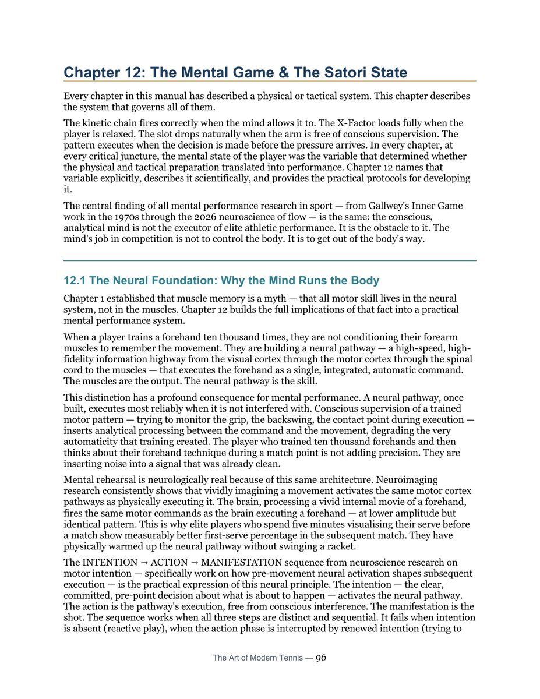
Hình 11: Trạng thái dòng chảy Satori — Khi ý thức hòa làm một với nhịp điệu trái bóng và sự tự động hóa của hệ thần kinh vận động.
Figure 11: The Satori Flow State — Unification of cognitive stillness and autonomous motor execution under match pressure.
Quần Vợt Năm 2026 & Tương Lai: Tích Hợp Cảm Biến AI & Thân Thể Võ Thuật Tennis 2026 & Beyond: AI Sensor Integration & The Martial Tennis Body
trong chương này. Việc chẩn đoán sai cái này với cái kia sẽ tạo ra sự can thiệp sai lầm cho vấn đề. Đánh giá trạng thái phục hồi thể chất trước khi cho rằng vấn đề là do tinh thần. PHẦN IV - TƯƠNG LAI Chương 13: Quần vợt 2026 và xa hơn Sách hướng dẫn này được xây dựng dựa trên tiền đề rằng tay vợt quần vợt giỏi nhất là người hoàn thiện nhất - chính xác về thể chất, tinh vi về mặt chiến thuật, rèn luyện thần kinh và tinh thần không thể suy sụp. Mỗi chương đều có thêm một lớp cho sự hoàn chỉnh đó. hướng tới: về các công cụ được tạo ra để khuếch đại từng lớp, về sự tổng hợp các phẩm chất mà sổ tay hướng dẫn này đã phát triển thành một tầm nhìn duy nhất về nhà vô địch trong tương lai và về một điều mà công nghệ sẽ không bao giờ thay thế. 13.1 Huấn luyện tích hợp AI và phân tích thời gian thực Việc tích hợp trí tuệ nhân tạo vào huấn luyện quần vợt không phải là khả năng trong tương lai - đó là thực tế hiện tại đang tăng tốc. Câu hỏi dành cho tay vợt và huấn luyện viên không phải là có nên tham gia vào nó hay không mà làm thế nào để sử dụng nó mà không nhượng bộ khả năng phán đoán của con người mà các công cụ của nó không thể tái tạo. Chiến lược dự đoán là ứng dụng AI có tác động ngay lập tức nhất ở cấp độ ưu tú. Các hệ thống xử lý dữ liệu trận đấu trực tiếp - vị trí cú đánh, thời lượng tập hợp, vị trí trả giao bóng, phân bổ vị trí giao bóng - và tham chiếu chéo dữ liệu đó với hồ sơ xu hướng lịch sử của đối thủ hiện tại có thể đưa ra các đề xuất chiến thuật giữa trận đấu mà phân tích con người của đội huấn luyện sẽ mất hàng giờ để đưa ra. Một hệ thống cảnh báo hộp huấn luyện: "Tỷ lệ trái tay chéo sân của đối thủ giảm 12% trong ván thứ năm của mỗi hiệp" đang cung cấp thông tin thay đổi việc ra quyết định ở cấp độ điểm trong thời gian thực. Tay vợt nhận và hành động dựa trên thông tin đó có lợi thế về cấu trúc so với đối thủ không nhận được. Lớp phủ cơ sinh học AR đại diện cho biên giới tiếp theo của huấn luyện kỹ thuật. Kính thực tế tăng cường mà huấn luyện viên đeo trong các buổi luyện tập có thể hiển thị dữ liệu chuỗi động học (Kinetic Chain) của tay vợt — phân bổ lực phản ứng mặt đất, góc tách hông-vai, chiều cao điểm tiếp xúc — dưới dạng lớp phủ trực quan về chuyển động thực tế của tay vợt. Một huấn luyện viên có thể thấy rằng chân ngoài của một tay vợt đang tải ở mức gấp 1,8 lần trọng lượng cơ thể khi dữ liệu cho thấy hiệu suất tối ưu yêu cầu gấp 2,3 lần trọng lượng cơ thể, có độ chính xác chẩn đoán mà phân tích video và quan sát thủ công không thể sánh được.
Rò rỉ năng lượng được xác định ở độ phân giải này có thể được khắc phục trước khi chúng tích tụ thành tổn thương — đáp ứng triết lý tiền tập luyện của Chương 11 ở mức độ chi tiết trước đây không có. Mô hình Digital Twin — hồ sơ dữ liệu hoàn chỉnh, được cập nhật liên tục về xu hướng cơ sinh học, chiến thuật và thể chất của mọi tay vợt — cho phép các đội huấn luyện mô phỏng các kịch bản trận đấu trước khi chúng xảy ra. Bạn có thể đặt câu hỏi về cặp song sinh kỹ thuật số của đối thủ sắp tới: "Cái giao bóng thứ hai của họ làm gì dưới áp lực điểm break?" “Họ trượt ở đâu khi bị đẩy rộng về phía quảng cáo trong set thứ hai?” Các câu trả lời cung cấp thông tin cho quá trình chuẩn bị trước trận đấu với tính đặc thù giúp chuyển đổi kế hoạch chơi cờ chớp được mô tả trong Chương 10 từ phân tích xu hướng rộng thành bản đồ kịch bản chi tiết. Giới hạn của AI trong huấn luyện là giới hạn của dữ liệu. AI có thể xác định mối tương quan, xác suất dự án và mô hình bề mặt trong bộ dữ liệu lớn. Nó không thể cảm nhận được trạng thái thể chất của tay vợt, đọc kết cấu cảm xúc của một thời điểm thi đấu hoặc đưa ra phán đoán trực quan để phân biệt huấn luyện tuyệt vời với việc khớp mẫu thuật toán. Huấn luyện viên sử dụng AI làm công cụ - bổ sung độ chính xác của nó vào phán đoán kinh nghiệm của họ - sẽ hiệu quả hơn cả huấn luyện viên bỏ qua nó và huấn luyện viên tuân theo nó. Công nghệ làm tăng thêm con người. Nó không thay thế chúng. 13.2 Vợt và Thiết bị Thông minh 2.0 Vợt luôn là cầu nối chính giữa ý định của tay vợt và quỹ đạo của bóng. Vào năm 2026 và hơn thế nữa, giao diện đó đang trở nên mang tính thông tin cũng như cơ học. Tay cầm gắn cảm biến đo áp lực cầm nắm trong thời gian thực, tạo ra dữ liệu kết nối trực tiếp với các khái niệm hoạt động thần kinh trong Chương 6 và 12. Phản hồi của Petit Bras - việc siết chặt tay cầm gây lo lắng để chuyển đòn đánh thuận tay thành một cú đẩy - có thể đo lường được thông qua các cảm biến cầm vợt trước khi tay vợt trải nghiệm nó một cách có ý thức. Một bảng huấn luyện cho thấy áp lực cầm vợt tăng vọt ở mức 30-40 trong set thứ ba cung cấp bằng chứng khách quan về thời điểm áp lực tâm lý mà bản tự báo cáo của tay vợt sẽ bỏ lỡ hoặc phủ nhận. Theo thời gian, dữ liệu này xây dựng một bản đồ chính xác về dấu hiệu lo lắng của tay vợt: các tình huống điểm số cụ thể, trạng thái thể chất và hành vi của đối thủ kích hoạt Petit Bras - và bản đồ đó trở thành nền tảng cho việc can thiệp hiệu suất tinh thần có mục tiêu. Dữ liệu chuỗi và liên hệ - RPM thời gian thực khi tiếp xúc, thời gian dừng tiếp xúc, độ chính xác điểm ngọt và kiểu lệch chuỗi - cung cấp độ chính xác huấn luyện kỹ thuật mà hướng dẫn dựa trên cảm giác không thể sánh được. Một tay vợt tin rằng họ đang đánh thuận tay ở tốc độ RPM tối đa nhưng có cảm biến dây hiển thị 2.800 RPM khi hồ sơ kỹ thuật của họ lẽ ra phải tạo ra 3.500 thì đang nhận được thông tin hữu ích về một lỗi cơ học cụ thể đang khiến họ phải trả giá tốc độ và độ xoáy. Việc xác định lỗi đó chỉ từ việc quan sát đường bay của quả bóng sẽ đòi hỏi phải phân tích video chuyển động chậm trên diện rộng. Cảm biến cung cấp thông tin đó trong mỗi lần chụp, trong thời gian thực. Công nghệ dây thích ứng — những vật liệu có thể thay đổi một cách tinh tế độ cứng hoặc đặc tính bật lại dựa trên vận tốc va chạm — đang ở giai đoạn ý tưởng nhưng đang trong giai đoạn phát triển. Ý nghĩa là một chiếc giường dây hoạt động giống như một sợi dây mềm đối với những quả bóng có tốc độ vừa phải và giống như một loại polyester có độ căng cao chống lại các tác động ở vận tốc tối đa - kết hợp các ưu điểm về cảm giác của ruột với các ưu điểm về độ xoáy của polyester trong một dây duy nhất. Liệu công nghệ này có duy trì hay làm xói mòn sự khác biệt về kỹ năng giữa những tay vợt đã thành thạo việc quản lý căng thẳng hay không là một câu hỏi triết học mà các cơ quan quản lý môn thể thao này sẽ cần phải giải quyết trước khi công nghệ này đạt đến quy mô thương mại. Câu hỏi triết học mà thiết bị thông minh đặt ra - khi vợt có thể chẩn đoán, khi nào dây có thể thích ứng, điều gì vẫn là kỹ năng rõ ràng của tay vợt? - có câu trả lời rõ ràng. Dữ liệu cho tay vợt biết điều gì đang xảy ra. Con đường thần kinh đã được huấn luyện, khe nạp, cú xoay cam kết, trạng thái Mushin - những thứ này nằm ngoài khả năng thiết bị đo đạc. Thiết bị có thể đo lường đầu ra của kỹ năng. Nó không thể tạo ra nó. 13.3 Huấn luyện VR xúc giác và Khởi động thần kinh Hạn chế đáng kể nhất của việc diễn tập tinh thần như được mô tả trong Chương 12 là thiếu phản hồi cảm nhận bản thân — cảm giác vật lý khi tiếp xúc, chuyển động và trọng lượng mà cơ thể sử dụng để hiệu chỉnh các kiểu vận động. Hình dung sống động kích hoạt các con đường vận động. Haptic VR kích hoạt chúng bằng cảm giác vật lý khiến cho việc kích hoạt về mặt sinh lý không thể phân biệt được với sự kiện thực tế. Mô phỏng trận đấu VR với hồ sơ chiến thuật và đường bay hoàn chỉnh của đối thủ trong top 10 cho phép chuẩn bị mà không buổi tập luyện trực tiếp nào có thể cung cấp. Một tay vợt chuẩn bị đối mặt với Sinner có thể mô phỏng các vị trí trả bóng, kiểu giao bóng, thời gian chuyển hướng trái tay và cường độ thể chất của anh ta - không phải dưới dạng phiên phân tích video mà là trải nghiệm vật lý mà hệ thống vận động của họ xử lý như các lần lặp lại trận đấu thực. Lợi thế chuẩn bị so với đối thủ chỉ xem video là sự khác biệt giữa việc nghiên cứu bản đồ và đi bộ trên địa hình. Găng tay phản hồi xúc giác và hệ thống trang phục mô phỏng cảm giác vật lý khi tiếp xúc — cảm giác bóng trên dây, lực cản của tốc độ tới, sự truyền trọng lượng qua chuỗi động học (Kinetic Chain) — cho phép rèn luyện toàn bộ đường vận động khi không có sân, đối tác hoặc bóng. Đơn xin phục hồi chấn thương có ngay lập tức: tay vợt bị chấn thương cổ tay có thể duy trì kích hoạt đường vận động thuận tay thông qua thực hành VR xúc giác trong khi cấu trúc vật lý lành lại, thoát ra khỏi giai đoạn hồi phục mà không có hồi quy kỹ thuật. ứng dụng để chuẩn bị cho chuyến đi — duy trì khả năng mồi động cơ chất lượng cao trong quá trình vận chuyển giải đấu — loại bỏ một trong những nhược điểm thể chất đáng kể nhất của lịch trình chuyến tham quan toàn cầu. Neuro-priming sử dụng VR để tạo ra trạng thái Satori trước khi tay vợt bước ra sân. Tình trạng hạ trán tạm thời được mô tả trong Chương 12 — quá trình ngừng kích hoạt vùng trước trán giúp giải phóng hệ thống vận động khỏi sự giám sát có ý thức — có thể được tạo ra một phần thông qua môi trường VR cụ thể: mô phỏng trận đấu cường độ cao, sống động đòi hỏi sự hấp thụ chú ý hoàn toàn, dần dần chuyển não từ chế độ phân tích sang chế độ thực hiện tự động mà dòng chảy yêu cầu. Những tay vợt bắt đầu khởi động trước trận đấu sau 15 phút chuẩn bị thần kinh cho biết khả năng tiếp cận trạng thái dòng chảy nhanh hơn trong trận đấu — một lợi thế cạnh tranh có thể đo lường được trong các trận đấu mà động lực tâm lý của hiệp đầu tiên mang tính quyết định. 13.4 Nhà vô địch Blueprint: Tổng hợp tương lai Trong suốt hướng dẫn này, những tay vợt cụ thể đã được coi là hình mẫu chính xác cho những phẩm chất cụ thể. tập hợp những tài liệu tham khảo đó thành một tổng hợp duy nhất: Nhà vô địch Blueprint — không phải là một tay vợt tồn tại mà là một hồ sơ năng lực mà sổ tay này hướng tới. Federer đóng góp vào kiến trúc tinh thần và sự sang trọng về mặt kỹ thuật: khung nhận thức của cờ chớp, đòn roi thẳng giúp tối đa hóa xung lượng góc, khả năng ngụy trang hoàn toàn khiến mọi cú đánh không thể đoán trước cho đến vùng giảm tốc và chín đặc điểm não bộ của nhà vô địch hoạt động đồng thời ở cường độ cao nhất. Federer đã chứng minh rằng sự tinh tế về mặt kỹ thuật và sự tinh tế trong nhận thức là những phẩm chất giống nhau được thể hiện qua các kênh khác nhau - rằng chuyển động hiệu quả nhất và đầu óc chiến thuật thông minh nhất tạo ra lẫn nhau. Roddick góp phần tạo ra sức mạnh giao bóng và sự quyết liệt trong thể thao: cú giao bóng theo chuỗi động học (Kinetic Chain) dứt khoát, vòng quay bên trong giống như chiếc roi tạo ra cú giao bóng nhanh nhất trong môn thể thao này và sự cam kết về mặt thể chất đối với vận tốc tối đa mà trận đấu quyền lực đầu tiên năm 2026 đã tiêu chuẩn hóa làm đường giao bóng cơ bản. Cú giao bóng của Roddick là đúng nhất về mặt cơ học sinh học - mô hình mà khung tuần tự 8 giai đoạn trong Chương 4 được xây dựng dựa trên đó. Nadal đóng góp sức mạnh xoay, độ xoáy cực cao và sức mạnh ý chí: Yếu tố X xác định khái niệm thời gian tách biệt của Chương 2, RPM cực đỉnh của tay vợt phương Tây đã đẩy trần những gì một cú thuận tay có thể tạo ra, cú dứt điểm kiểu Lasso đã bảo vệ vai của anh ấy trong suốt sự nghiệp ưu tú kéo dài 20 năm và sức mạnh ý chí bất khuất giúp duy trì thành tích từ những vị trí gặp nghịch cảnh tối đa. Nadal đã chứng minh rằng phẩm chất tinh thần và thể chất của một nhà vô địch không tách rời - chúng giống nhau, thể hiện ở việc không sẵn sàng chấp nhận thời điểm hiện tại là thời điểm cuối cùng.
Monfils đóng góp vận tốc thuận tay và tính thể thao thuần túy: cú thuận tay 190 km/h được tạo ra thông qua tốc độ cánh tay và độ linh hoạt của khớp chứ không phải khối lượng vật lý - minh chứng rõ ràng nhất trong thế giới thực rằng cú giao bóng giống như roi là phẩm chất tốc độ và thư giãn chứ không phải phẩm chất sức mạnh. Tính thể thao chuyển động của anh ấy - khả năng đưa tin trên sân nhào lộn, bùng nổ đã khiến anh ấy trở thành một mẫu vật thể chất khác với bất kỳ tay vợt nào khác trong thời đại của anh ấy - đại diện cho giới hạn trên về hiệu quả di chuyển của con người trong quần vợt có thể trông như thế nào. Sinner đóng góp vào sự chính xác, hiệu quả di chuyển và lập kế hoạch chiến thuật: sự tích hợp đầy đủ nhất giữa thể chất và nhận thức xuất sắc trong thế hệ hiện tại, được thể hiện thông qua tính nhất quán của điểm tiếp xúc đặc biệt, chuyển động hiệu quả hơn là ngoạn mục, chuẩn bị chiến thuật là một trong những bước chuẩn bị kỹ lưỡng nhất trong giải đấu và cú thuận tay hai tay là biểu hiện rõ ràng của khả năng chịu lỗi. Sinner chứng minh rằng sự xuất sắc trong quần vợt không đòi hỏi sự khoa trương - độ chính xác tàn nhẫn đó, được duy trì trong suốt năm set, cũng là một hình thức trò chơi hoàn chỉnh như bất kỳ hình thức nào khác. Alcaraz đóng góp vào sự bùng nổ, đa dạng và khả năng ứng biến sáng tạo: chất lượng mà không khung phân tích nào có thể nắm bắt được đầy đủ — khả năng tạo ra các cú đánh không có trong bất kỳ thư viện mẫu nào, mà không đối thủ nào chuẩn bị sẵn, xuất phát từ việc đọc hình học sân theo thời gian thực và sẵn sàng thử những gì chưa từng thử trước đây. Alcaraz đại diện cho phẩm chất Đặc vụ ở dạng thuần khiết nhất: trí thông minh sáng tạo hoạt động thông qua một cơ thể đặc biệt, tạo ra môn quần vợt đồng thời đúng về mặt kỹ thuật nhất và mang tính con người khó đoán nhất trong trò chơi hiện tại. Trò chơi của Blueprint Champion trông như thế này: một cú giao bóng kết hợp chuỗi động năng của Roddick với khả năng ngụy trang nhận thức của Federer, tạo ra những con át chủ bài không phải từ vận tốc thô mà từ vị trí hoàn hảo so với các vị trí trả bóng được đọc hoàn hảo. Một cú thuận tay sử dụng cánh tay thẳng bùng nổ của Alcaraz cho những quả bóng giàu thời gian và cú bẻ cong đôi chịu lỗi của Sinner cho những quả bóng bị áp lực thời gian, được hỗ trợ bởi thời gian tách X-Factor của Nadal và kết thúc bằng sợi dây mà vai anh ấy yêu cầu để tồn tại cả một mùa giải. Chuyển động kết hợp giữa tính thể thao của Monfils với hiệu quả của Sinner và tiêu chuẩn trượt trên mọi bề mặt của Chương 3. Chiến thuật được xây dựng dựa trên kiến trúc cờ chớp của Federer, sự chuẩn bị kỹ lưỡng của Sinner và trí thông minh ứng biến của Alcaraz. Và bên dưới tất cả những điều đó, ý chí của Nadal - phẩm chất giúp mọi phẩm chất khác có sẵn trong set thứ năm, với tỷ số 0-4, khi không có dữ liệu nào cho thấy rằng chiến thắng là kết quả có thể xảy ra. Tay vợt này chưa tồn tại như một con người. Nhưng mọi phẩm chất trong quá trình tổng hợp đều có thể rèn luyện được. Hướng dẫn này đã mô tả cách thực hiện. 13.5 Bảo Tồn Võ Hồn
Khuôn khổ Võ-Đặc vụ đã cấu trúc sổ tay này ngay từ trang đầu tiên là một quan điểm triết học cũng như một quan điểm kỹ thuật. Phẩm chất Võ thuật - cơ thể như một công cụ chính xác, việc thực hiện thể chất như một hình thức làm chủ - và phẩm chất Tác nhân - tâm trí như một tác nhân thông minh, sáng tạo, có chiến lược thích ứng - là hai cực của thành tích quần vợt hoàn chỉnh. Mỗi chương đã phát triển một hoặc cả hai. Công nghệ khuếch đại cả hai cực. AI khuếch đại khả năng truy cập thông tin của tâm trí Agentic. Haptic VR tăng cường khả năng tiếp cận buổi diễn tập vận động của cơ thể Võ. Thiết bị thông minh khuếch đại vòng phản hồi giữa thực hiện vật lý và sàng lọc kỹ thuật. Đây là những công cụ. Chúng loại bỏ các trở ngại — dữ liệu kém, thời gian luyện tập hạn chế, độ trễ phản hồi — và cho phép khả năng thực sự của tay vợt hoạt động đầy đủ hơn. Điều mà công nghệ không thể làm được là tự mình tạo ra những phẩm chất đó. Sức mạnh ý chí giúp Nadal cầm hòa 0-5 ở set thứ năm không có trong bất kỳ tập dữ liệu nào. Khả năng ứng biến sáng tạo tạo ra cú đánh rơi của Alcaraz từ đường cuối sân tại điểm trận đấu không có trong bất kỳ thuật toán nào. Trạng thái dòng chảy Satori (Satori Flow State) - sự hấp thụ hoàn toàn ở thời điểm hiện tại giúp giải phóng hệ thống vận động khỏi sự giám sát có ý thức - là một tình trạng thần kinh của con người mà không hệ thống nào bên ngoài tay vợt có thể thay mặt họ gây ra. Những phẩm chất này được phát triển thông qua các quá trình được mô tả trong cuốn sách này: thông qua luyện tập có chủ đích, thông qua áp lực cạnh tranh, thông qua các quy trình tinh thần hàng ngày nhằm xây dựng nên cấu trúc thần kinh của bộ não nhà vô địch. Tay vợt tương lai có thể chất vượt trội hơn bất kỳ tay vợt nào đến trước - có điều kiện tốt hơn, thông tin tốt hơn, được trang bị tốt hơn. Họ nhanh hơn về mặt nhận thức - khả năng dự đoán của họ được mài giũa nhờ nhiều năm chơi cờ đạn, khả năng xử lý hình ảnh của họ được tinh chỉnh bằng quá trình huấn luyện hoạt nghiệm, trí thông minh chiến thuật của họ được tăng cường nhờ các công cụ dữ liệu mà các thế hệ trước không thể truy cập. Họ bước vào sân với sự chuẩn bị kỹ càng hơn, nhiều trang thiết bị hơn và nhiều thông tin hơn bất kỳ tay vợt nào trong lịch sử. Và sau đó trận đấu bắt đầu, và tất cả sự chuẩn bị đó giảm xuống còn một người đứng trên một sân hình chữ nhật, cách một người khác 49 feet, với một cây vợt trong tay và một quả bóng lao về phía họ với tốc độ mà tâm trí có ý thức của họ không thể xử lý đầy đủ. Vào thời điểm đó, mọi điều trong cuốn sách này đều hội tụ vào một điều: sự tin tưởng. Hãy tin tưởng vào chuỗi động năng mà 12 chương đã xây dựng. Hãy tin tưởng vào con đường thần kinh mà mười nghìn lần lặp lại đã đặt ra. Tin tưởng vào mẫu hình mà ý định trước điểm đã chọn. Hãy tin tưởng cơ thể sẽ thực hiện những gì tâm trí đã huấn luyện nó làm - và đưa tâm trí ra khỏi tầm kiểm soát. Đó là trạng thái ngộ. Đó là sự tổng hợp Võ-Agentic. Đó là nghệ thuật của quần vợt hiện đại. Những gì bạn làm với nó bây giờ là tùy thuộc vào bạn.
Các công cụ được mô tả trong chương này đang sẵn có cho bạn - một số đã có, một số nằm trong tầm nhìn nghề nghiệp cạnh tranh của bạn. Ba khoản đầu tư cụ thể sẽ có lãi gộp đáng kể nhất trong vòng 3 đến 5 năm tới. Đầu tiên, hãy tham gia chuẩn bị chiến thuật AI ngay bây giờ. Nền tảng dữ liệu trận đấu cung cấp bản đồ nhiệt của đối thủ và phân tích xu hướng mẫu hiện có thể truy cập được ở cấp độ chuyên nghiệp. Xây dựng thói quen chuẩn bị dữ liệu trước trận đấu thành thói quen tiêu chuẩn của bạn — không phải để thay thế cho nhận định của ban huấn luyện mà là để tăng độ chính xác lên trên đó. Tay vợt kết hợp trực giác của con người với độ chính xác của dữ liệu sẽ luôn vượt trội so với tay vợt chỉ dựa vào một trong hai. Thứ hai, hãy coi trọng việc điều hòa thị giác. Trong số tất cả các công cụ hiệu suất được mô tả trong sách hướng dẫn này, quy trình huấn luyện hoạt nghiệm và mắt tĩnh lặng là những công cụ ít được sử dụng nhất ở cấp độ ưu tú so với lợi tức đầu tư của chúng. Trình phát có khả năng xử lý hình ảnh được cải thiện 20% sẽ cải thiện mọi chất lượng khác trong sách hướng dẫn theo tỷ lệ — bởi vì mọi chất lượng đều phụ thuộc vào thông tin mà hệ thống hình ảnh cung cấp. Thứ ba, bảo vệ phẩm chất con người. Trong tương lai nơi công nghệ ngày càng nâng cao hiệu suất thể chất và nhận thức, những tay vợt nổi bật sẽ là những người phát triển những phẩm chất mà công nghệ không thể chạm tới: sức mạnh ý chí, khả năng ứng biến sáng tạo, khao khát cạnh tranh và trạng thái Satori. Chúng được phát triển thông qua chính xác các quy trình được mô tả trong Chương 12 - không phải thông qua công nghệ mà thông qua việc thực hành hàng ngày các quy trình tư duy hình thành nên bộ não của nhà vô địch. Các công cụ công nghệ được mô tả trong chương này yêu cầu năng lực huấn luyện mới: hiểu biết về dữ liệu. Huấn luyện viên không thể đọc bản đồ nhiệt chuỗi động học (Kinetic Chain), giải thích phân bố xác suất vị trí cú đánh hoặc hiểu mức độ áp lực cầm vợt tăng vọt trong set thứ ba có ý nghĩa như thế nào đối với trạng thái tinh thần của tay vợt của họ đang ngày càng gặp bất lợi so với huấn luyện viên có thể. Đầu tư vào giáo dục kỹ thuật của riêng bạn cùng với sự phát triển về thể chất và chiến thuật của tay vợt. Các công cụ AI chỉ có giá trị khi phán đoán của con người diễn giải chúng - và phán đoán đó đòi hỏi phải hiểu dữ liệu đại diện cho điều gì, dữ liệu đó không đại diện cho điều gì và khi quan sát trải nghiệm mà không cảm biến nào có thể nắm bắt được sẽ ghi đè lên những gì các con số gợi ý. Chất lượng huấn luyện quan trọng nhất trong trò chơi trong tương lai cũng giống như trong mọi kỷ nguyên trước của trò chơi: khả năng nhìn thấy toàn bộ tay vợt - phần cứng vật lý, phần mềm chiến thuật và trạng thái tinh thần - và hiểu lớp nào đang hạn chế hiệu suất tại bất kỳ thời điểm nào.
Công nghệ sẽ làm cho từng lớp trở nên rõ ràng hơn. Huấn luyện viên tổng hợp những gì họ nhìn thấy trên cả ba lớp thành một biện pháp can thiệp phát triển mạch lạc sẽ và sẽ không thể thay thế được. PHỤ LỤC Phụ lục A: Bảng chú giải thuật ngữ Tác nhân — Khía cạnh nhận thức và thích ứng của thành tích quần vợt ưu tú: tâm trí như một tác nhân sáng tạo, thông minh về chiến lược, xử lý thông tin, lập kế hoạch, đọc đối thủ và ứng biến dưới áp lực cạnh tranh. Một trong hai cực của khung MartialAgentic. Giai đoạn khấu hao - Quá trình chuyển đổi mili giây quan trọng giữa giai đoạn lệch tâm (tải) và đồng tâm (nổ) của Chu kỳ kéo dài-rút ngắn. Bất kỳ sự gián đoạn nào ở đây đều khiến năng lượng đàn hồi dự trữ tiêu tan dưới dạng nhiệt thay vì truyền vào cú đánh. Trang bị vũ khí - Một lỗi thuận tay trong đó đầu vợt tăng tốc trước khi hông vượt qua, cho thấy SSC không thành công. Tay vợt tạo ra lực từ vai chứ không phải từ chuỗi động năng. Mô hình Cờ chớp chớp — Khung nhận thức cho tất cả các quyết định mang tính chiến thuật trong quần vợt, hoạt động thông qua ba bước tuần tự: Lập kế hoạch (ý định trước điểm), Đọc (đối thủ trong thời gian thực và đọc trận đấu), Ngụy trang (che giấu ý định của chính mình). Được đặt tên theo cấu trúc song song với cờ vua, được sử dụng như một công cụ rèn luyện để phát triển các phẩm chất nhận thức tương tự. Nhà vô địch Blueprint — Hồ sơ tổng hợp của nhà vô địch tương lai kết hợp: kiến trúc tinh thần và kỹ thuật thanh lịch của Federer, sức mạnh giao bóng của Roddick, sức mạnh xoay vòng và sức mạnh ý chí của Nadal, tốc độ thuận tay và thể thao của Monfils, sự chính xác và lập kế hoạch chiến thuật của Sinner, cũng như sự bùng nổ và ứng biến sáng tạo của Alcaraz. Lỗi phanh - Một lỗi cốt lõi trong đó tay vợt không thể giảm tốc độ quay sau khi tiếp xúc, gây căng thẳng mãn tính ở lưng dưới. Một trong bốn rò rỉ cốt lõi chính. Xô Rò rỉ — Một lỗi cốt lõi do nghiêng xương chậu trong quá trình xoay về phía trước, khiến năng lượng tiêu tán xuống dưới thay vì truyền qua dây xích. Một trong bốn rò rỉ cốt lõi chính.
Mệt mỏi CNS — Mệt mỏi hệ thần kinh trung ương: sự suy giảm hạn chế hiệu suất của khả năng tạo ra các lệnh vận động chất lượng cao của hệ thần kinh, khác biệt với tình trạng mệt mỏi cơ bắp và không thể phát hiện được qua kiểm tra thể chất. Các dấu hiệu bao gồm tốc độ giao bóng giảm, tách bước chậm hơn và tốc độ đánh bóng giảm mặc dù đã nỗ lực hết sức. Continental Grip — Kiểu cầm vợt phổ biến khi chơi trên lưới, được đặt ở điểm giữa hình học giữa hướng thuận tay và hướng trái tay, cho phép chuyển đổi tức thời giữa các hướng cú bắt lưới (Volley) mà không cần cầm lại. Rò rỉ lõi - Bốn kiểu lỗi lõi chính: Rò rỉ thùng, Lỗi lắc lư, Lỗi phanh và Ngắt kết nối. Mỗi loại đều gây ra tổn thất điện năng và rủi ro thương tích có thể đo lường được. Vùng giảm tốc — Ba mươi centimet cuối cùng của cú vung vợt trong đó vợt chậm lại và tay mềm ra để tạo ra một cú đánh ngụy trang. Sự giảm tốc xảy ra trước khi đối thủ nhìn thấy vùng này. Digital Twin — Hồ sơ dữ liệu đầy đủ, được cập nhật liên tục về xu hướng cơ sinh học, chiến thuật và thể chất của tay vợt, được sử dụng để chuẩn bị trước trận đấu và hỗ trợ huấn luyện theo thời gian thực. Tải trực tiếp - Mô hình cơ học trả giao bóng: chia bước được tính thời gian chính xác, xoay đơn vị nhỏ gọn và tiếp xúc tốt ở phía trước cơ thể, chuyển hướng tốc độ của người giao bóng thay vì tạo ra sức mạnh độc lập. Ngắt kết nối - Một lỗi cốt lõi trong đó hông và vai xoay như một đơn vị duy nhất, loại bỏ XFactor và giảm khả năng đánh của tay vợt bằng cánh tay và phần trên cơ thể. Lỗi cốt lõi phổ biến nhất ở cấp câu lạc bộ. Độ bền bùng nổ - Tiêu chuẩn điều hòa năm 2026: khả năng lặp lại các nỗ lực thể chất ở cường độ tối đa mà không bị suy giảm trong suốt thời gian của một trận đấu dài. Khác biệt với sức chịu đựng truyền thống (nỗ lực vừa phải được duy trì vô thời hạn) bởi tính đặc hiệu của nó đối với hệ thống năng lượng phosphocreatine mà quần vợt chủ yếu sử dụng. Chịu lỗi — Chất lượng cơ học của mô hình thuận tay uốn cong đôi: hình dạng nhỏ gọn của nó có nghĩa là lỗi khoảng cách tiếp xúc tạo ra hậu quả ít nghiêm trọng hơn so với mô hình tay thẳng, nâng cao hiệu suất sàn dưới áp lực. Trạng thái dòng chảy - Xem: Trạng thái ngộ. GRF (Lực phản ứng mặt đất) — Lực mà mặt sân tác dụng trở lại tay vợt để phản ứng lại lực đẩy của tay vợt vào đó (Định luật thứ ba của Newton). Nguồn năng lượng chính cho mọi cú đánh tennis. GRF dọc cung cấp năng lượng cho các cú giao bóng và tiếp đất có độ tiếp xúc cao; GRF ngang thúc đẩy sự thâm nhập đột phá.
Bước trọng lực (Bước thả) — Cơ chế phục hồi ưu tú bắt đầu chuyển động ngang bằng cách thả hông dẫn đầu ra ngoài bệ đỡ, tạo ra cú ngã có kiểm soát giúp tăng tốc bước đầu tiên nhanh hơn khả năng đẩy cơ bắp có thể đạt được. HRV (Biến đổi nhịp tim) — Số liệu mục tiêu chính để theo dõi quá trình phục hồi của CNS, được đo vào mỗi buổi sáng trước khi thức dậy. HRV giảm cho thấy khả năng phục hồi CNS không đủ và sẽ kích hoạt việc giảm tải tập luyện. Chuỗi động học — Chuỗi từ gần đến xa mà qua đó lực truyền từ mặt đất đến dây: chân → hông → lõi → vai → cánh tay → vợt. Tất cả sức mạnh trong quần vợt đều bắt nguồn từ mặt đất và chảy qua chuỗi này. Vùng tiêu diệt — Khu vực cách lưới từ hai đến ba mét mà từ đó góc đánh vô-lê được tối đa hóa và lốp bóng trở thành lối thoát chính của đối phương. Vị trí đóng mục tiêu cho tất cả các cách tiếp cận lưới. Lasso Finish — Cú thuận tay trong đó vợt vung thẳng đứng lên và qua vai đánh thay vì ngang ngực, kéo dài vòng cung giảm tốc để bảo vệ vai khỏi chấn thương vi mô ở tốc độ đầu vợt 2026. Nguyên tắc thuận tay trái — Kiến thức huấn luyện quan trọng nhất cho cú đánh trái tay bằng hai tay: tay không thuận là động lực chính của cú đánh, không phải là yếu tố ổn định. Tất cả việc huấn luyện bằng hai tay nên bắt đầu với nguyên tắc này. Võ thuật - Khía cạnh thực hiện thể chất và độ chính xác của màn trình diễn quần vợt đỉnh cao: cơ thể như một công cụ chính xác, thực hiện kỹ thuật là sự thành thạo. Một trong hai cực của khung MartialAgentic. Tải vi mô - Kích thích sức mạnh nhỏ, thường xuyên (15–20 phút, 60–70% tải tối đa, 2–3 lần mỗi tuần) giúp duy trì kích hoạt thần kinh cơ trong lịch thi đấu mà không tạo ra tình trạng mệt mỏi vượt quá thời gian phục hồi có sẵn. Mushin — Tiếng Nhật: "tâm trí trống rỗng, cơ thể thư thái." Trạng thái thần kinh trong đó Ghi đè Amygdala và can thiệp VOR đều không có, cho phép con đường vận động được huấn luyện thực hiện ở tốc độ tối đa mà không cần sự giám sát có ý thức. Điều kiện tiên quyết cho trạng thái ngộ. Petit Bras - tiếng Pháp: "cánh tay nhỏ". Việc siết chặt tay cầm do lo lắng gây ra bởi sự kích hoạt của hệ thống thần kinh giao cảm chuyển đổi cú đánh thuận tay thành một cú đẩy, có thể nhận dạng được thông qua các cảm biến áp suất tay cầm và thông qua âm thanh tiếp xúc nhỏ, tát đặc trưng. Plus-One - Quả bóng thứ ba của một cuộc trao đổi giao bóng cộng hai: cú đánh giữa sân do quả giao bóng thiết lập. Chiến thắng cộng một tương ứng với xác suất thắng trận trên 70%. Mục đích chính của cú giao bóng đang tạo vị trí cộng một, không tạo ra quân át. Trình tự từ gần đến xa - Xem: Chuỗi động học. Vợt Yên tĩnh — Nguyên tắc chơi trên lưới với chuyển động đầu vợt tối thiểu, với mặt vợt được duy trì trong tầm nhìn ngoại vi của tay vợt xuyên suốt. Những cú đánh ngược lớn là nguyên nhân chính gây ra lỗi vô lê khi thực hiện những cú vô-lê tốc độ cao. SA (Nhận thức tình huống) - Nhận thức về các yếu tố môi trường trong một khoảng thời gian và không gian, hiểu ý nghĩa của chúng và dự đoán trạng thái của chúng trong tương lai gần. Chất lượng nhận thức làm nền tảng cho giai đoạn Đọc của mô hình cờ chớp. Trạng thái ngộ - Trạng thái nhận thức hoàn toàn về thời điểm hiện tại và thực hiện động cơ tự động trong đó đường dẫn thần kinh được huấn luyện hoạt động mà không có sự giám sát có ý thức, tạo ra dòng chảy mà các vận động viên xuất sắc dễ dàng gọi là dòng chảy. Đặc trưng về mặt thần kinh bởi tình trạng hạ trán tạm thời: giảm tạm thời hoạt động phân tích vỏ não trước trán. Nhịp điệu phục hồi SCS — Trình tự phục hồi sau phát bắn tiêu chuẩn vàng: Tách (sẵn sàng đặt lại), Crossover (khoảng cách che), Xáo trộn (điều chỉnh độ chính xác vào vị trí đánh). Thời gian tách biệt - Sự phát triển vào năm 2026 của khái niệm X-Factor: hông bắt đầu xoay về phía trước trước khi cuộn dây ở vai hoàn thành, tạo ra một bộ kích hoạt bị trì hoãn kéo căng lõi ra ngoài những gì một cuộn dây tĩnh có thể đạt được và khuếch đại đáng kể mô-men xoắn quay. Khe — Vị trí xoay ngoài tối đa ở đỉnh của cú đánh thuận tay, được tạo tự động khi chuỗi động học (Kinetic Chain) kích hoạt và cánh tay thực sự được thư giãn. Vị trí đã tải mà từ đó đòn tấn công giống như roi được tung ra. SSC (Chu kỳ kéo dãn-rút ngắn) — Cơ chế "dây cao su" cho phép cơ thể tạo ra sức mạnh vượt quá sức mạnh cơ bắp thô. Ba giai đoạn: lệch tâm (tải/kéo dài), khấu hao (chuyển tiếp), đồng tâm (phát nổ). Lỗi Sway — Một lỗi cốt lõi được đặc trưng bởi chuyển động của vật thể bên trong cú đánh thay vì xoay quanh một trục thẳng đứng cố định. Một trong bốn rò rỉ cốt lõi chính. Vùng chữ T — Khu vực xung quanh đường giao bóng trung tâm kéo dài đến tận đường cuối sân, nhằm mục đích loại bỏ khả năng tạo góc của đối thủ bằng cách buộc họ vào vị trí đánh với hạn chế hình học tối đa. Hạ trán tạm thời — Sự giảm tạm thời hoạt động của vỏ não trước trán khi thực hiện hoạt động thể chất cường độ cao, giải phóng hệ thống vận động khỏi sự giám sát có ý thức. Cơ chế thần kinh của trạng thái ngộ.
Phụ Lục Hệ Thống Bài Tập Chẩn Đoán & Khắc Phục Lỗi Cơ Học Chuyên Sâu Comprehensive Diagnostic Drills & Biomechanical Fault Correction
Quy tắc 75% — Nguyên tắc thống kê cho thấy khoảng 75% tổng số điểm kết thúc bằng lỗi chứ không phải là người chiến thắng. Ý nghĩa chiến thuật: mục tiêu chính của hầu hết các cú đánh không phải là giành điểm trực tiếp mà là đưa đối thủ vào các vị trí đánh không tối ưu, từ đó không thể tránh khỏi sai sót về mặt thống kê. VBT (Đào tạo dựa trên vận tốc) — Phương pháp đào tạo, gắn liền với phương pháp ngầm của Lluis Bruguera, ưu tiên tốc độ chuyển động tối đa khi chịu tải để tối ưu hóa mô hình huy động thần kinh cơ để biểu hiện sợi IIb co giật nhanh. VOR (Phản xạ tiền đình-mắt) — Phản xạ điều chỉnh giảm công suất phát ra của CNS khi mắt rời khỏi vùng tiếp xúc sớm trong một cú đánh, phát hiện khả năng mất ổn định cân bằng và giảm tốc đầu vợt trước khi va chạm như một biện pháp bảo vệ. X-Factor — Sự khác biệt về góc giữa xoay vai và xoay hông ở đỉnh điểm của động tác backswing. X-Factor càng lớn thì năng lượng đàn hồi được lưu trữ trong các vật xiên cho lần tháo cuộn quay tiếp theo càng lớn. Xem thêm: Thời điểm tách. Phụ lục B: Chỉ mục Thư viện bài tập Được liệt kê theo chương, tên bài tập, kỹ năng chính được phát triển và cấp độ tay vợt áp dụng (B = Sơ cấp, I = Trung cấp, A = Cao cấp/Ưu tú). — Kinetic Chain Medicine Ball Slingshot: cảm giác tách hông-vai — B, I, A Bức tường Phục hồi: thời gian chu kỳ rút ngắn kéo dài — B, I, A Chương 2 — Core Med-Ball Slingshot: Tách yếu tố X — B, I, A Giữ chống xoay: độ cứng đẳng cự khi tiếp xúc — I, A Ném tường xoay: độ trễ và nhả nổ — I, A Pallof Press: phanh lõi và giảm tốc — I, A Chương 3 — Đèn phản ứng chuyển động Khoan: định thời theo từng bước và tải theo hướng — I, Phanh hai bước: giảm tốc và đảo ngược bước công suất — I, A Trượt lấy lõi làm trung tâm: thân thẳng đứng trong khi trượt — B, I, A
Shadow Ghosting: tính tự động của mô hình chuyển động — I, A Chỉnh sửa cú đánh gót chân: thói quen di chuyển bàn chân trước — B, I Chương 4 — Giao bóng y học theo chiều dọc: chuyển từ chân sang lõi — B, I, A Khoan chuỗi tốc độ: độ trễ xoay và chụp nhanh bên trong — I, A Máy khoan áp lực hộp mục tiêu: đặt dưới áp lực — A Chương 5 — Máy khoan tường quay trở lại: thói quen rút lui nhỏ gọn — B, I Máy khoan kích hoạt âm thanh: thời gian phân chia bước — B, I, A Mũi khoan hộp trả lại: độ chính xác của vị trí ở các tốc độ khác nhau — I, Mũi khoan đọc giao bóng: dự đoán mà không có bóng — I, A Chương 6 — Mũi khoan tải lũy tiến thuận tay: cảm nhận chuỗi — B, I, A Mũi khoan tập trung điểm tiếp xúc: neo VOR — I, A Mũi khoan thuận tay bóng: thói quen chuẩn bị sớm — B, I Khoan hàng rào: loại bỏ vòng lặp lùi lại — B, I Mũi khoan tốc độ VBT: Tuyển dụng CNS ở vận tốc tối đa — A Chương 7 — Mũi khoan trái tay thuận tay trái: động cơ cánh tay không thuận — B, I, A Máy khoan tải trọng điểm cao: tiếp xúc ngang vai — I, Máy khoan mô hình xuống dòng: độ chính xác khi lặp lại — I, A Chương 8 — Máy khoan cổ tay cố định Chơi trên lưới: ổn định cổ tay khi thực hiện các cú vô lê — B, I, A Máy khoan lưới bóng: tốc độ đóng cửa đến vùng tiêu diệt — I, Máy khoan cú bắt lưới (Volley) chéo: chuyển tiếp kiểu cầm lục địa — I, Máy khoan tự tin trên cao: thói quen xoay người cam kết — I, A Chương 9 — Cắt & đa dạng Mũi khoan Knuckle-Down: cắt góc mặt - B, I, A
Bài tập ngụy trang bóng: thả thời điểm đánh lừa — I, A Bài tập cắt tường: chiều sâu lát cắt — B, I Bài tập thả cảm giác: chạm khoảng cách lũy tiến — I, Một bài tập trình tự đa dạng: các quyết định kiểu bắn giữa tập hợp — I, A Chương 10 — Lập bản đồ mô hình chiến thuật: xác định các mặc định chiến thuật — I, Một bài tập trung hòa: kiên nhẫn trước khi tấn công — I, Huấn luyện mục tiêu ngẫu nhiên: linh hoạt định hướng — I, A Bullet Chess: lập kế hoạch và dự đoán chiến thuật — B, I, A Chương 11 — Khoảng thời gian mô phỏng trận đấu điều hòa: độ bền bùng nổ — I, A Phương pháp tương phản (Squat + Sprint): điện thế sau kích hoạt — I, A Theo dõi hoạt động: tốc độ xử lý hình ảnh — Luyện tập mắt yên lặng: ổn định cố định ánh mắt — I, A Eccentric Single-Squat: khả năng phục hồi gân bánh chè — I, A Ném bóng qua đầu: giao bóng chuỗi xoay bên trong — I, A Chương 12 — Trò chơi tinh thần Giao thức đặt lại 15 giây: quản lý phản hồi lỗi - B, I, A Hình ảnh trước trận đấu: mồi con đường thần kinh - I, A Thực hành neo ở thời điểm hiện tại: tập trung trở lại khi bị phân tâm - B, I, A 4-7-8 Hơi thở: Quy định CNS - B, I, A Khoan áp lực cạnh tranh: hiệu suất tinh thần dưới mức đặt cược - I, A Phụ lục C: Hồ sơ nhà vô địch Blueprint Một thẻ tham chiếu tổng hợp dành cho nhà vô địch tổng hợp trong tương lai.
Chất lượng Nguồn Tay vợt Chương Tham khảo Cơ chế có thể huấn luyện Kiến trúc tinh thần Federer Ch. 10, 12 Cờ chớp + 9 đặc điểm cân não Kỹ thuật sang trọng Federer Ch. 1, 6 Cơ học roi + chuỗi động năng Serve Power Roddick Ch. 4 Mô hình 8 giai đoạn + vòng quay nội bộ Athletic Aggression Roddick Ch. 11 Độ bền bùng nổ + phương pháp tương phản Công suất quay Nadal Ch. 2 Thời gian tách biệt + X-Factor Extreme Topspin Nadal Ch. 6 Tay cầm kiểu Tây + kết thúc bằng lasso Will Power Nadal Ch. 12 Giao thức tinh thần hàng ngày + ngân sách lỗi Thuận tay Velocity Monfils Ch. 6 bài tập tốc độ VBT + thả lỏng cánh tay Pure Athleticism Monfils Ch. 3, 11 Cơ học trượt + plyometrics Precision Sinner Ch. 6, 7 Khả năng chịu lỗi uốn đôi + điểm tiếp xúc Hiệu suất di chuyển Sinner Ch. 3 nhịp SCS + bước trọng lực Lập kế hoạch chiến thuật Sinner Ch. 10 Thư viện mẫu + chuẩn bị dữ liệu trước trận đấu Explosiveness Alcaraz Ch. 1, 3 GRF + trượt toàn bề mặt Loại Alcaraz Ch. 9 Cú thả ngụy trang + thay đổi độ cao Cải tiến sáng tạo Alcaraz Ch. 10, 12 Nhận thức tình huống + Đặc điểm kỹ thuật của Mushin The Blueprint Champion: Thuận tay thuận tay khi thời gian cho phép, uốn cong gấp đôi khi lao tới. Xác định tư thế giao bóng với độ chính xác của Nền tảng. Cú giao bóng thứ hai được dùng làm vũ khí chính. Cơ học trượt toàn bề mặt. Bước phân chia hoạt động với tải trước theo hướng. Lasso kết thúc ở tất cả các cú đánh thuận tay cao hơn ngực. Tiêu chuẩn độ bám lưới của lục địa.
Đặc điểm chiến thuật của Blueprint Champion: Ba kiểu bắn 3 phát được thiết kế sẵn cho mỗi bề mặt trận đấu và loại đối thủ. Cú thuận tay cộng một là mục tiêu chính của trò chơi giao bóng. T-Zone tấn công và kick-and-drive là hai nền tảng giao bóng cộng một. Lập kế hoạch cờ chớp trước mỗi điểm. Các loại ngụy trang được triển khai chủ động vào thời điểm đối thủ có nhịp quay tối đa - không phải để phòng thủ. Chữ ký tinh thần của Blueprint Champion: đặt lại 15 giây sau mỗi lỗi. Tiền điểm Ý ĐỊNH → HÀNH ĐỘNG → Trình tự BIỂU HIỆN. Cờ vua ba lần mỗi tuần. Hình dung trước trận đấu vào đêm trước mỗi trận đấu quan trọng. Neo thời điểm hiện tại có sẵn mọi lúc. Trạng thái dòng chảy Satori (Satori Flow State) bước vào game thứ ba của set đầu tiên. Kết thúc Cẩm nang — Phiên bản 1.0 Nghệ thuật quần vợt hiện đại: Cẩm nang tham khảo đầy đủ dành cho các tay vợt và huấn luyện viên ưu tú được biên soạn năm 2026